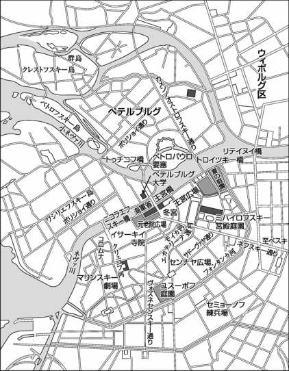
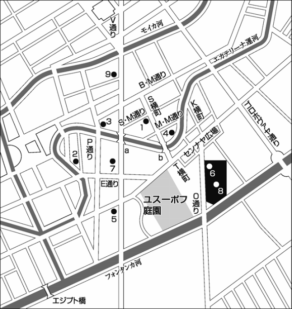

| 罪と罰 １ | |
| ドストエフスキー | |
| (2008) | |
罪と罰１
ドストエフスキー
亀山郁夫 訳
Title: ПРЕСТУПЛЕНИЕ И НАКАЗАНИЕ
1866
Author: Ф.М.Достоевский
ドストエフスキー『罪と罰』
エピローグ付きの六部からなる長編小説
１
七月の初め、異常に暑いさかりの夕方近く、ひとりの青年が、Ｓ横町にまた借りしている小さな部屋から通りに出ると、なにか心に決めかねているという様子で、ゆっくりとＫ橋のほうに歩きだした。
階段口で彼は、下宿のおかみとぶじ顔を合わさずにすんだ。彼が借りている小部屋は、五階建ての高い建物の屋根の真下にあって、部屋というよりもどこか戸棚を思わせるところがあった。食事と女中つきで彼に部屋を貸している当のおかみは、一階下の独立した部屋に住んでいたので、外出のたびに彼は、階段に向かってほとんどいつも開け放たれている台所の脇を、いやでも通らなくてはならなかった。そしてそこを通るごとに、何か病的ともいえる気おくれにかられ、そのことを自分でも恥ずかしく感じて、そのためにまた顔をしかめるのだった。下宿代がたまりにたまっていたので、おかみと顔を合わせるのが怖かったのである。
かつて彼は、こんなふうにも臆病でいじけた青年ではなかった。いやむしろ、それと正反対なぐらいだった。ところがいつの時点からか、心気症にも似た、いらだちやすい、張りつめた状態に陥っていた。あまりに深く自分の殻に閉じこもり、世間の人たちからも孤立してしまったため、下宿のおかみどころか、相手がだれであれ、人と顔を合わせるのが怖くなった。貧乏にも押しひしがれていた。ところが、近ごろは、そんなせっぱつまった暮らしにも苦しさを感じなくなっていた。毎日のさしせまった仕事をまるごと放りだし、それにとりかかる気にもなれなかった。だから、じつのところ、自分にどんな魂胆をいだいていようと、下宿のおかみ風情などへとも思ってはいなかったのだ。ただし、階段口で呼びとめられ、自分にはなんの関わりもないばかげた世間話やら、いつものしつこい下宿代の催促やら、脅しやら、泣き言やらを聞かされると、こちらもうまく返答をかわしたり、わびのひとつも入れたり、嘘をついたりしなければならず――いや、そんなことなら、いっそ子猫みたいに、忍び足で階段をすり抜け、だれにも見られないようにこっそり逃げだすほうがはるかにましだった。
しかし今日ばかりは、表に出るなり、債権者のおかみと顔を合わせるのをここまで怖れていたかと、われながらあきれかえった。
《あんな大それたことを決行しようとしているのに、こんな愚にもつかぬことにびくついたりして！》奇妙な含み笑いを浮かべながら、彼は思った。《なるほど......そういうことか......人間ってのはすべてを手中に収めながら、それをみすみす逃がしてしまう、それももっぱら臆病のせいで......こいつはもう公理といってもいいぞ......おもしろいのは、人間がいの一番に怖れるものって何かってことだ。新しい一歩、自分の新しい言葉、人間は何よりもそれを怖れているんだ......それにしても、おしゃべりがすぎるな。何もせずにいるのは、このおしゃべりのせいだ。いや、逆にこういうことかもしれん。おしゃべりがすぎるのは、何もしていないからだ。一日中、下宿に寝ころがって......そう、ゴロフ王のことなんか考えながら、こうしてしゃべることを覚えたのはついこのひと月じゃないか。ところで、どうしておれはいま歩いている？ ほんとうにおれにあれができるのか？ いったいあれは本気なのか？ なあに、本気なわけがあるもんか。そうさ、空想で、自分で自分を慰めているだけさ、おもちゃだな！ そうさ、どうやら、おもちゃってところが正解らしいぞ！》
通りはひどい暑さで、しかも息づまるような熱気と雑踏、あたり一面の漆喰、建築の足場、れんが、土ぼこり、そして、別荘を借りる余裕のないペテルブルグっ子ならだれもが知る、あの、夏特有の悪臭――これらすべてがたちまち、そうでなくても調子の狂った青年の神経を、不快にかき乱した。ペテルブルグのこの界隈にとくに多い居酒屋から流れてくるたまらない悪臭と、平日にもかかわらずひっきりなしに出くわす酔っぱらいたちが、胸くそ悪くなるような陰惨な町の光景に、最後の色どりを添えていた。途方もなく深い嫌悪感が、一瞬、青年の端整な顔立ちをかすめた。ついでに言っておくと、青年は、なかなかの美男子だった。黒く美しい目、栗色の髪、背丈は平均よりも少し高く、やせぎすですらりとしていた。けれども彼は、やがて深いもの思いに沈んでしまった。より正確には、何やら夢うつつの状態におちいったらしく、周囲のことなど何ひとつ気にとめず、というより気にとめたくないと念じながら歩きだした。ときおり彼は、ついいま自分でも認めた独白癖から、ぶつぶつひとりごとを重ねることもあった。そしてこの瞬間、自分の考えがときおり混乱してしまうことや、体がかなり衰弱していることも自覚していた。これでもう二日、ほとんど何も口にしていなかったのだ。
彼の身なりはあまりにひどいもので、ほかの、たとえそういうのに慣れっこになった人間でさえ、こんなぼろ服をまとって真っ昼間に外出するなど、とても恥ずかしくてできなかったろう。もっともこの界隈は、身なりで人をおどろかすといったことがまずはむずかしい、そんなふうな地区だった。センナヤ広場の近くにあって、いろいろと怪しげな遊び場も多いし、それに、ペテルブルグの中心街になるこのあたりの表通りや裏通りには、とりわけ工員や職人が密集し、あれこれ風変わりな連中が町全体の風景を色どっていたので、そんな他人と顔を合わせるたびにいちいちおどろいたりすれば、それこそおかしなことになりかねなかった。
それに、青年の心は、敵意にも似た軽蔑の念が溜まりに溜まり、もともとがごくデリケートで、ときには初々しいほど敏感ながら、今はこうしてぼろぼろの服で外出することすら、少しも恥ずかしいとは感じなかった。もっとも、日ごろから会いたくないと思っている知人やかつての学友に出くわすともなれば、それはまた別の話だった......と、そのとき、こんな昼どきにどこに何しにお出ましになるのか、ばかでかい駄馬をつないだ大きな荷馬車に乗ったひとりの酔っぱらいが、通りしな、いきなり彼をどやしつけた。「おい、そこのドイツ・シャッポ！」そして、手で彼をさし示しながら、声をかぎりにどなりはじめた。青年はぎくりとして立ちどまり、帽子を慌ててひっつかんだ。帽子は、丈の高いツィンメルマン製の丸帽だったが、もうすっかり古びて色あせ、穴としみだらけでつばもとれ、おまけに角の部分がおそろしくぶざまにひしゃげて、横に飛びだしていた。それでも、彼をとらえたのは、恥ずかしさというより、むしろ驚きに似たまるきりべつの感情だった。
《やっぱりそうだろ！》どぎまぎしながら、彼はつぶやいた。《思っていたとおりだ！ こいつがいちばんあぶないんだよ！ それ見ろ、こういうくだらんこと、こういう些細なことから、計画がすべておじゃんになるんだ！ それにしても、目立ちすぎる帽子だ......こっけいだから、よけい人目についてしまう......おれのこのぼろ服に合わせるのは、ぜったいに学生帽でなきゃだめだ、たとえしなびた煎餅みたいなやつでもいい。こんな化けものじみた帽子じゃなくて。こんなもの、今どきだれもかぶってないから、一キロ先からだってすぐ目につくし、覚えられちまう......要するに、後々まで覚えられてしまったら、それだけで立派な証拠にもなるってことだ。なるべく人目を引かないようにしなきゃ......些細なこと、些細なことこそ大事なんだ！......この些細なことってのが、いつもすべてをぶちこわしにしちまうんだから......》
距離はいくらもなかった。家の門から何歩かということも知っていた。ちょうど七百三十歩だった。この空想にすっかりふけり出したころ、彼はいちど数えてみたことがあったのだ。そのころはまだ、自分でもその空想を信じられず、醜悪ながらもその魅惑的な大胆さに、いらだちを募らせていただけだった。ところがひと月たったいま、彼はもうべつのちがった目で見はじめており、例の独白癖で自分の無力さや優柔不断をからかいつづけながらも、あの《醜悪な》空想を、なにかいやおうない、既定の事業と考えることに慣れてしまっていた。しかしそのじつ、自分でもまだ信じることができないでいたのだ。今も彼は自分の事業のリハーサルのために歩いており、一歩ごとにいよいよ興奮が高まっていった。
心臓をどきどきさせ、体を小刻みにふるわせながら、一方の壁面が運河に面し、もう一方が＊＊＊通りに面した、とてつもなく大きな建物へと向かっていった。この建物は、全体が細かい部屋に区切られていて、仕立て屋から金物工といったあらゆる職種の職人や、料理女、いろんなドイツ人、春をひさぐ女たち、小役人その他が入居していた。建物の二つの門と、二つの中庭は、ひっきりなしに人の出入りがあった。そこには、三、四人の庭番が勤めていた。青年は、そのうちのだれとも顔を合わさずにすんだことにいたく満足しながら、目立たないよう門からすっと右に折れて階段に向かった。階段は、暗くて狭いいわゆる《裏階段》だったが、こうしたこともすべて知りつくしていたし、きちんと頭にも入っており、むしろそうした状況がすべて気に入っていた。これぐらい暗ければ、好奇の目も怖れるには足りなかった。《いまからこんなにびくついているようでは、いざ、あれを決行するとなった段には、いったいどうなることやら？......》四階につづく階段を昇りながら、彼は思わず考えこんだ。
と、そこで、部屋から家具を運び出していた兵隊あがりの運送屋に、行く手をふさがれた。その部屋にドイツ人の役人一家が住んでいることは、前々から知っていた。《てことは、ここのドイツ人は引っ越すわけだ。つまり四階のこの階段とこの踊り場は、これからしばらくあのばあさんの専用ってことになる。こいつは悪くないぞ......万が一ってこともあるし......》彼はまたこう考え、老女の部屋の呼び鈴の紐を引いた。呼び鈴は、銅ではなくブリキでできているかのように、ガランと力なく鳴った。こういう建物のこういう部屋には、たいてい、こんなふうな呼び鈴がついている。彼はその呼び鈴の音を忘れてしまっていたが、今この独特の音がふと何かを思いださせ、まざまざとそれを目に浮かべたかのようだった......。そこで、思わずぎくりとなった。前とはちがって、このときばかりはもうあまりにも神経が衰弱してしまっていたのだ。
しばらくして、ドアがほんのわずか開いた。部屋の女主人は、いかにもうさん臭そうに、すき間から来客をじろりと見まわした。こちらからは、暗がりに光る二つの目だけが見えた。しかし、踊り場にいくつか人影があるのを見て心強く思ったか、やがてすっかりドアを開けはなった。青年は敷居をまたぎ、衝立で仕切られた暗い玄関口に入った。衝立の後ろには、ちっぽけな台所があった。老婆は、だまりこくったまま青年の前に突っ立ち、不審そうに相手を眺めていた。やせた、小柄な老女だった。年のころ六十前後、悪意のこもるするどい目つきをし、鼻はちいさくとがり、頭には何もかぶっていなかった。白髪のまじる薄色の髪には、油がたっぷり塗ってあった。にわとりの脚のように細長い首には、フランネルのぼろ布のようなものが巻いてあって、この暑さだというのに、肩に擦りきれて黄色く色あせた毛皮の胴着を羽織っていた。老女はひっきりなしに咳きこみ、のどを鳴らしていた。おそらく自分を見つめる青年のまなざしに、なにか一種特別のものがあったのだろう、老女の目にも、さっきの不審の色がふいにちらりと浮かびあがった。
「ラスコーリニコフですよ、学生の。一カ月前にもうかがったんですがね」もっと愛想よくしなければと思いかえし、青年は軽く会釈をするとあわててつぶやいた。
「覚えてますよ、以前にいらしたのはよく覚えてます」不審そうな目をあいかわらず相手の顔から離さず、老女ははっきりと言いはなった。
「それでですね......また用件があって来たんですよ......」老女の疑りぶかさに驚きながら、ラスコーリニコフはいくぶんどぎまぎしてつづけた。
《だが、もしかするとこの女はいつもこうで、あのときはそれに気づかなかっただけかもしれない》不快な感情にかられながら、彼はそう思った。
老女は何か思案するふうにしばらく黙っていたが、やがて脇に身を引くと、部屋のドアを指さし、客を先に通しながら言った。
「お入りなさいな、おにいさん」
青年が通された小さな部屋は、黄ばんだ壁紙が張られ、窓にはゼラニウムの鉢植えが置いてあり、モスリンのカーテンが掛かっていたが、ちょうどこのとき、夕陽に明るく照らしだされていた。《てことは、きっとあの時も、太陽がこんなふうに照らしだすんだな！......》ラスコーリニコフの脳裏にはからずもこんな考えが浮かび、できるかぎり家具の配置を覚えておこうと、室内にあるすべてのものにすばやく視線を走らせた。だが、室内にこれといって目ぼしいものはなかった。家具はどれもこれも古い黄木製のもので、大きくそり返った背もたれのあるソファ、その前に置いてある楕円形のテーブル、窓と窓のあいだには鏡のついた化粧台、壁ぎわには数脚の椅子、それに、小鳥をてのひらに乗せたドイツ娘を描く黄色い額入りの安物の絵が二、三枚――それだけだった。
部屋の隅にある小さな聖像の前に灯明が灯っていた。すべてがいたって清潔で、家具も床もつや出しがかけられていた。何もかもがぴかぴかに光っていた。《リザヴェータがやってるんだ》青年はふと思った。部屋じゅうどこを見まわしても、ちりひとつ落ちていなかった。《ごうつくばりの年寄り後家さんの家にかぎって、だいたいがこんなふうにきれいなんだ》ラスコーリニコフは心のうちでそうつぶやきながら、奥の、ごく小さな部屋に通じるドアの前にかかった更紗のカーテンを横目で見やった。そこには老女のベッドと箪笥が置いてあったが、まだいちどもそちらをのぞいたことはなかった。老女の住まいは、この二部屋ですべてだった。
「なんのご用です？」部屋に入ると老女は、相手の顔をじかに見ようと、さっきと同じように彼のまん前に突っ立ったまま、きびしい口調でたずねた。
「質草を持ってきたんですよ、ほら、これです！」そう言うと彼は、平たくて古い銀時計をポケットから取りだした。時計の裏蓋には地球儀が描いてあった。鎖は鋼鉄でできていた。
「そう、前回質入れなさった品ですがね、あれももう期限ですよ。一昨日でひと月たちましたがね」
「利子をもうひと月分、お支払いします、もう少し辛抱願います」
「言っときますがね、お客さん、辛抱するか、すぐに流しちまうか、そりゃあたしの勝手ですがね」
「この時計はいい値がつくでしょう、アリョーナさん？」
「ろくでもない品ばかり持ってきて、お客さん、だめですよ、ろくな値打ちもありゃしません。前回の指輪には二ルーブルおつけしときましたがね、あれだって、宝石屋に行きゃ、新品が一ルーブル五十コペイカそこそこで買えるんだから」
「四ルーブルぐらいつけてもらえませんか、親父の形見ですから、かならず請けだします。もうすぐお金が入ることになっていますし」
「利子天引きで、一ルーブル五十コペイカでどうかね？」
「一ルーブル五十コペイカだって！」青年は思わず声を上げた。
「いやならいやで結構ですがね」そう言って老女は、時計を相手に突き返した。青年はそれを手にとり、腹だたしさのあまりただちにその場を立ち去ろうとしたが、すぐ思いとどまった。ほかに行くあてもなかったし、それに自分にはまた別の用件もあったことを思い出したのだ。
「それで結構です！」乱暴にそう言いはなった。
老女はポケットに手を入れて鍵束を探ると、カーテンの奥の部屋に入っていった。ひとり部屋の真ん中に残された青年は、好奇心にかられて聞き耳を立て、あれこれ考えをめぐらせた。箪笥の鍵を開ける音が聞こえた。《きっといちばん上の引き出しだな》と考えた。《鍵束は、つまり、右のポケットに入れてるってわけだ......鉄の輪でひと束にしてな......そのうち、鍵歯のついたいちばん大きな、ほかより三倍くらい大きいのがひとつあったが、あれはむろん、箪笥のじゃない......ってことは、ほかにもまだ手箱かトランクがあるってことだ......こいつはおもしろいぞ。トランクにはたいてい、ああいった鍵が......ああ、それにしても、すべてがなんてあさましい......》
老女が戻ってきた。
「ほら、お客さん、一ルーブルにつき月十コペイカを利子にして、一ルーブル半だから、先払いで十五コペイカを天引きさせてもらいますよ。それに前回の二ルーブル分は今のところ二十コペイカ。つまり合計で三十五コペイカ。てわけで、お客さんの時計の受けとり分は、しめて一ルーブル十五コペイカ。さあ、受けとんなさいな！」
「えっ、合計で一ルーブル十五コペイカ！」
「ええ、その通りですよ」
言い争うのをやめ、青年はおとなしく金を受けとった。老女を見つめたまま、彼は帰りを急ごうとしなかった。何かまだ言いたりないことか、したりないことがあるような気がしたが、自分でもそれがいったい何なのかわからない様子だった......。
「アリョーナさん、もしかしたら、数日中にまた質草を持ってきます......銀製の......なかなかいいタバコ入れでしてね......友人から返してもらえたらすぐ......」彼はどぎまぎし、そのままだまり込んだ。
「それはまた、そのとき話しましょうよ、お客さん」
「じゃあ、これで......そうそう、おばあさんはいつもお宅に、おひとりでおられるんですね、妹さんはいらっしゃらなくて？」玄関に向かいながら、できるだけくだけた調子でたずねた。
「お客さん、妹にどんな用がおありで？」
「とくに何もありませんがね。ただ聞いてみただけですよ。それをすぐに......じゃあ、また、アリョーナさん！」
ラスコーリニコフは、完全に狼狽しきって部屋を出た。狼狽は、いよいよはげしさを増していった。階段を降りる途中、何かにはっと怯えたかのように、何度も足を止めたほどだった。そして通りに出たところで、とうとう声をはりあげた。
「ああ！ 何もかもむかつく！ ほんとうに、ほんとうに、おれは......いや、あんなものはナンセンスだ、たわごとだ！」彼は決然と言いはなった。「ほんとうに、どうしてあんな怖ろしい考えが頭に浮かんだんだ？ それにしても、おれの心は、なんてきたないことを受け入れることができるんだ！ なにより、きたないこと、汚らわしいこと、下劣なこと、そう、下劣なことだ！......おれは、まるひと月......」
しかし、言葉によっても叫びによっても、心の高ぶりを言いあらわすことはできなかった。老女の家に向かう途中から、自分を押しつぶし、苦しめはじめた果てしもない嫌悪感が、今や怖ろしいほどの大きさに達し、あまりにもくっきりと正体を明らかにしたため、自分でももう、その苦しさからどう逃げ隠れしてよいものか、わからなくなっていたのだ。まるで酔っぱらったように、行きかう人々にも気がつかず、人にぶつかりながら歩道を歩いていた。そして、次の通りに入ってようやく正気にもどった。
あたりを見まわし、自分が居酒屋のすぐそばに立っていることに気づいた。居酒屋の入口は、歩道から階段を降りた地下にあった。そのときちょうど、ドアからふたりの酔っぱらいが出てきて、たがいにもたれあい、罵りあいながら通りに上がってきた。ラスコーリニコフは、長く考えることなく、すぐに階段を降りていった。これまで、こうしたたぐいの居酒屋にいちども足を踏み入れたことがなかったが、いまはくるくる眩暈がしていたし、おまけに焼けるような喉の渇きに苦しめられていた。冷えたビールをぐいとひと飲みしたかったし、しかも急に襲ってきた体力の低下を、彼は空腹のせいとも考えていたのだった。
暗く、汚らしい居酒屋の隅に腰をおろし、べとべとするテーブルに向かった彼は、ビールを注文し、最初の一杯をむさぼるように飲みほした。するとたちまち気分が楽になり、頭のなかもはっきりしてきた。《何もかもくだらない》彼は、心に光を感じながらそう口にした。《どぎまぎする理由がどこにあったんだ！ 体調が悪かっただけのことだ！ ビールをグラスで一杯と、乾パンのひとかけらで――ほらこのとおり、頭はたちまちしっかりし、考えもはっきりする、計画もしゃきっとしてくる！ ぺっ、何もかもくだらんことばかり！......》だが、こうして蔑むように唾を吐いてはみたが、何か怖ろしい重荷から急に解きはなたれたかのようにすっかり明るい顔になり、まわりに居あわせる人々に愛想よく目を走らせはじめた。しかしこの瞬間さえ、彼はこの、何ごともよくとろうとする感覚そのものもまた病的なのだと、ぼんやり予感していた。
このとき、居酒屋にはごくわずかな客がいるだけだった。階段で出くわしたふたりの酔っぱらいのあとから、女連れの五人ばかりの男の一団が、アコーディオンを抱えてどやどやと出ていった。彼らがいなくなると、店内は急に静かになり、広々とした感じになった。残っていたのは、ビールと向かい合って腰をかけている、ちょっと見た目には町人風の、軽く酔いがまわった感じの男と、その連れでシベリア帽をかぶり、白髪まじりのあごひげをはやしている、でっぷり太った大柄な男だった。こちらはひどく酔っていて、椅子の上でうとうとしていたが、ときおり寝ぼけたようにとつぜん両手を大きく広げて指を鳴らし、椅子から腰を上げずに上半身でひょいと跳びあがるまねをしたりした。そして、必死になって歌詞を思いだそうとしながら、何かばかくさい歌を口ずさむのだった。
まる一年、にょーぼーをかわいがった
まある一年、にょーぼーを、かわーいがった......
かと思うと、いきなり目をさまして、またもや――
ポジヤチェスカヤ通りを歩きだしたら、
昔のにょーぼー、見っけた......
だが、その男のおめでたい気分をともに分かってやろうという相手は、だれひとり現れなかった。むっつり屋の彼の連れは、相手の突発的なしぐさを、むしろいまいましげに、うさん臭そうな目で眺めやっていた。居酒屋にはほかに、見たところ役人あがりといった風采の男がもうひとりいた。彼はウオッカの小びんを前に、ひとりぽつねんと腰かけ、ときたまひと口またひと口とやっては、ぐるりとあたりを見まわしていた。彼もまた、いくぶん興奮ぎみの様子だった。
２
ラスコーリニコフは、もともと人ごみが苦手で、先に述べたように、とくに近ごろはどんな人づきあいも避けてきた。ところがいま、彼はなぜかにわかに人々に惹きつけられた。彼のなかで何か新しいものが立ちおこり、それと同時に、人恋しさにも似た飢えを感じたのだ。彼は、まるひと月におよぶ凝縮された悩みと、陰うつな興奮のせいで疲れはてていたので、たとえいっときでも、たとえどんな場所でもいい、いつもとは別の世界で息がしたかった。だから彼は、あたりの薄汚さにもめげず、いまは満足すら覚えながらこの居酒屋に腰をすえたのだった。
店の主人は別室にいたが、どこからか階段を降りてきては、しょっちゅう店内に顔を出していた。そのたびにまず現れるのが、大きな赤い折り返しのある、靴クリームを塗った粋なブーツだった。主人は、半外套を上から羽織り、ノーネクタイで、黒い繻子のひどく脂ぎったチョッキを着こんでいたが、顔全体がまるで、オイルを塗りたくった鉄の錠前みたいな感じだった。カウンターの向こうには、十四歳ぐらいのボーイと、それよりさらに年下のボーイがもう一人いて、注文があるたびに品物を出していた。小ぶりのキュウリ、黒パン、魚の薄い切り身が並べてあり、ひどくいやな臭いを放っていた。腰を下ろしているのも耐えがたいほどむし暑いうえ、すべてに酒の臭いがしみこんでいるので、空気を吸っているだけで、ものの五分もたてば酔いがまわってきそうだった。
まるで一面識もない相手ながら、ひと目みるなり、ひとことも言葉をかわさないうちから、なぜか急に興味をそそられるような人との出会いが、ときとしてある。ラスコーリニコフから少し離れてすわっている、退職役人風の客から受けた印象というのが、まさにそんなふうなものだった。青年は、後になんどかこのときの最初の印象を思い起こしては、あれこそ虫の知らせだったと思った。彼は、ちらりちらりとたえずその役人に目をやったが、それは、その役人がしきりにこちらを見つめ、声をかけたくてうずうずしているらしいせいもあった。役人は、店の主人もふくめ、居酒屋にいる残りの連中になぜだか慣れっこになっていて、いかにも退屈そうに、と同時に、身分も教育も低すぎてとても話し相手にならないとでも言わんばかりの、何やら偉ぶった、見くだすような目で彼らを眺めていた。
すでに五十を越えようかという、中背ながらがっしりした体つきの男で、白髪まじりの頭には大きなはげがあり、アルコール漬けのせいでむくみのきた、黄ばんだ、いやむしろ青みがかった顔をし、腫れぼったい瞼の奥からは、何かの裂け目のように小さい、それでいて燃えたつような、赤みをおびた目が輝いていた。しかし、男にはどことなく、じつに奇妙なところがあった。そのまなざしには、何か感激性といったものさえ輝いているのだが――おそらく分別も知恵もあるにはあるのだろう――と同時に、そこに何やら狂気のような感じが煌いているのだ。男は、ボタンもとれた、古い、すっかりぼろぼろになった黒の燕尾服を着ていた。ひとつだけかろうじてついているボタンを、どうやら礼儀を失するまいと願うらしく、律儀にかけていた。南京木綿でできたチョッキの下からは、しわくちゃになった、しみだらけの汚らしい胸当てがはみ出ていた。顔は役人風に剃ってあったが、それもだいぶ経っているようで、青みがかった、ごわごわしたひげがびっしり伸びかけていた。それに彼のしぐさには、事実、いかにも役人らしくものものしい趣きがあった。そのくせそわそわと落ち着きなく、髪の毛をかきむしったり、こぼれた酒でべとついたテーブルに穴のあいた両肘をついて、いかにも所在なげに両手で頭を抱えこんだりしていた。やがて彼は、ラスコーリニコフのほうをまともに見すえ、大きなしっかりした声で話しかけてきた。
「失礼ですが、そこのお方、ひとつまじめなお話をさせてはもらえませんかね？ といいますのも、見栄えこそぱっとしておられませんが、そこは年の功、あなたには学もあり、酒もあまり飲み慣れていないお方ってことがすぐにわかるんでして。わたし自身、誠意とひとつにむすびあった教養といったものを日ごろから重んじておりまして、そればかりか、九等官の末席を汚しておる身でしてね。マルメラードフ、そういう苗字で、九等官をしております。で、失礼ですが、お勤めでいらして？」
「い、いえ、学生です......」青年は、相手のもってまわったような口ぶりや、あまりにもストレートに話しかけられたことにもいくぶん面くらって、答えを返した。ついさっき、どんな相手でもいい、人と話をしてみたいと一瞬願ったのが嘘のように、いざ、こうして声をかけられてみると、自分の一身にふれる、あるいは少しでもふれようとする他人への、いつもながらの不快で、いらだたしいほどの嫌悪感にかられるのだった。
「てことは、学生さん、それとも元学生さんってわけですな！」役人は叫んだ。「思ったとおり！ 年の功ってやつですよ、おにいさん、これが年の功ってもんなんでして！」そう言うと彼は、いかにも得意げに指を一本、額に押しあてた。「学生さんだったわけね、でなくとも、学問の道を歩いてこられた！ では、失礼ながらひとつ......」そう言って彼は立ちあがり、そのはずみでぐらりとよろけたが、ウオッカのびんとコップをつかんで、青年の斜向かいの席に腰をおろした。酔ってはいたが、話しぶりは勢いがあって、雄弁だった。ところどころいくらか言葉につまって、「えー」をくりかえした。まるひと月、だれとも話をしてこなかったかのように、何かしら貪るような調子でラスコーリニコフにからんできた。
「で、よいですかな」彼はほとんどもったいぶった調子で切り出した。「貧乏は悪徳ならず、こいつは真理ですな。わかっとりますとも。酒が徳ならずってことぐらい、まして、ね。でも、これが極貧となったらです、極貧となったら、こいつはもう悪徳なんでございますな。たんに貧乏なだけなら、生まれながらの上品な気持ちを保っておられますが、これが極貧となったら、だれだってそうはいきませんよ。つまり、極貧ってことになったら、こいつはもう棒っきれで追っぱらわれるどころじゃない、もっと恥ずかしい思いをさせてやろうってんで、箒で掃かれ、人間のお仲間からぽい捨てされちまう。しかも、それが当然なんですよ。なぜって、極貧ってことになれば、自分でまっさきに自分を辱めにかかりますからなあ。で、行きつく先は酒場通いってことになるわけです！ で、よいですかな、今からひと月前です、うちの家内がレベジャートニコフ氏にこっぴどく殴られましてね。ですが、うちの家内はわたしなんぞとはちょいと出来がちがう！ おわかりですかな？ それともうひとつ、ほんの好奇心ってことで質問させていただきますがね、あなた、ネヴァ川の干草船ってところで、ひと晩明かしたことがございますか？」
「いや、ありませんよ」とラスコーリニコフは答えた。「それって、いったいなんの話です？」
「いえね、わたしはそこから通っとるんですよ、もう五泊目になりますか......」
彼はコップに酒を注ぎ、一気にそれをあおると、考えこんだ。たしかに、彼の上着といわず髪の毛にまで、干草がちらほら貼りついているのが見えた。彼がもう五日間、着替えをせず、ろくに顔も洗っていないことは歴然としていた。とくに手がひどいよごれようで、脂ぎり、赤みをおび、爪は真っ黒だった。
どうやら彼の話は、酒場にいる客たちのけだるい興味を呼びさましたらしかった。カウンターの向こうにいるボーイたちは、くすくすしのび笑いを漏らしはじめた。店の主人は、この「おもろい男」の話を聞こうとわざわざ上の階から降りてきたらしく、いかにもかったるそうに、そのくせもったいぶってあくびなど漏らしながら、少し離れたところに腰をかけた。マルメラードフは、あきらかにここの常連らしかった。彼のものものしい話しぶりは、見知らぬいろんな客を相手に、頻繁にくだを巻いているうちに身についたらしかった。こういう習慣は、ある種の酒飲みにあっては、根っからの欲求と化しているものなのだ。家できびしく扱われたり、こき使われている連中の場合がとくにそうである。だからこそ、彼らは、せめて酔っぱらい仲間にはなんとか自分の言い分を聞いてもらい、できれば尊敬までも勝ちとろうとつねにやっきになるのだ。
「おい、そこのお調子もん」店の主人が大声で叫んだ。「役人のくせして、なんだって働かない、なんだって勤めに出ない？」
「わたしがどうして働かないかって、だんな？」マルメラードフは、まるでラスコーリニコフから水を向けられたとでもいうように、もっぱらそちらに顔を向けながら、話を引きとった。「どうして勤めに出ないか？ じゃ、こんなむだな暮らししてて、わたしの心が痛まないとお思いですか？ ひと月前、レベジャートニコフ氏がうちの家内を殴りつけたときも、わたしは酔っぱらって寝ていましたがね、それでわたしが苦しまなかったとでも？ 失礼ながら、学生さん......、たとえば......そう......絶望的借金ってのを、しようとなすったことがおありですか？」
「ありますよ......でも、どう絶望的なんです？」
「つまり、まるきり絶望的なんでございますよ。借金を申し込んだからって、どうにもならないのが初めからわかっている。たとえば、そう、この男、このたいそう高潔ですこぶる有益な市民がです、まかりまちがっても金など貸してくれないとわかっている。だって、そうでしょうが。こっちこそ聞きたいくらいです。どうして貸してくれるのか、ね？ なにしろ相手は、こっちが金を返さないことくらい百も承知なんですよ。同情から？ でも、新思想を追っかけているレベジャートニコフ氏が、ついこのあいだも説明してくれましたっけ。現代じゃ、同情なんてもんは学問上も禁じられてる、経済学とかいうのが発展しているイギリスじゃ、現にそういうふうになってる、って。どうして金を貸してくれるのか、こっちこそ聞きたい。ところがです、貸してくれるはずがないと初めからわかってるくせに、それでも、のこのこ出かけていく、で......」
「じゃ、どうして出かけていくんです？」ラスコーリニコフは口をはさんだ。
「でも、もし行く相手がなかったら、これ以上、行き先がなかったら、どうなるか！ 人間だれしも、どこか行き先がなくっちゃ、どうしようもない。何せ、どこでもいい、どこかに行かなくちゃならないときってのがあるもんなんですから！ うちのひとり娘がはじめて黄の鑑札のお世話で仕事に出ていったときは、さすがのわたしも出かけていきましたよ......（何せうちの娘はこの鑑札で暮らしてるんでございまして......）」と彼は、いくらか不安げな面持ちで青年を見やりながら言い添えた。「どうってことありゃしません、おにいさん、べつにどうってことは！」ふたりのボーイがカウンターごしにくすくす笑い声をたて、店の主人までがにんまり笑うのを見ると、彼はいかにも平然とした様子で声を張りあげた。「どうってことないんです！ ああやって耳打ちなんぞしてますがね、なあに、こっちはびくともしませんよ。なにしろ、いまじゃもう何もかも知れわたって、覆われているもので現されないものなどなにもなし、なんですから。軽蔑する気などありませんし、事実をおとなしく受けとめておりますとも。なんとでも言わせておきゃいい！ なんとでもね！ 『見よ、この男だ！』で、おにいさん、おたく、言えますかな......いや、もっとはっきり、もっといきいきと説明するなら、あなたはいま、このわたしをごらんになりながら言えますかな、じゃなく、勇気がおありですかな、わたしはブタじゃないと断言する？」
青年は何も答えなかった。
「で、さて」と口達者な男は、ふたたび店内に生じたくすくす笑いが消えるのを待って、堂々と、こんどは前にもましてもったいぶって言葉をつづけた。
「いや、たとえブタでもかまいません、ですが、うちの家内は貴婦人ですよ！ わたしはけだものじみた姿かっこうをしているが、うちの家内のカテリーナは、大佐の娘に生まれた教育のある女なんです。たとえわたしは卑怯者でも、うちの家内は気高い心の持ち主ですし、高潔な感情にみたされている。教育のおかげです。しかし、それにしても......ああ、あれがこのわたしをかわいそうと思ってくれたらなあ！ ねえ、あなた、ねえ、あなた、人間だれしも、せめて一カ所ぐらい、かわいそうと思ってもらえる場所がなきゃならんでしょうが！ でもカテリーナさんときたら、そりゃ寛大な女ではありますがね、これが不公平なんでして......わたしだって、あの人がわたしの髪をひっつかんで引きずり回すのは、哀れみの気持ちがあるからこそそうしてるってことくらいわかっとりますがね。じつはですよ、恥ずかしがらずくりかえしますが、いいですか、学生さん、うちの家内はほんとうにこの髪をひっつかんで、引きずり回すんですよ」、彼はまた周囲のしのび笑いを聞くと、以前にもましてもったいぶってくりかえした――「でも、そう、せめていちどぐらい......でも、よしましょう！ よしましょう！ 何もかもむなしいことばかり、話すことなんて、何もありゃしません！ ありゃしませんとも！......何せ、願いがかなったことはいちどならずあったし、哀れんでもらったこともいちどならずあった。ただ......これがわたしって男の本性でして、生まれながらの犬畜生でして！」
「そうともさ！」あくびまじりに、店の主人が口をはさんだ。
マルメラードフはこぶしをかため、テーブルをどんと叩いてみせた。
「これがわたしという男なんでして！ いいですか、あなた、わたしはですよ、なんと家内のストッキングまで酒代にしちまった！ 靴じゃありませんよ。靴ならまだ話がわからないでもない、ストッキング、そう、ストッキングを酒代にしちまった！ 山羊の皮でできたマフラーも酒代にあてちまった、むかし人からプレゼントされたものでして、わたしのじゃない、家内のもんですよ。で、わたしどもの住まいといえば、寒い貸間でして、この冬、家内は風邪をひいてしまい、咳が出はじめ、今じゃもう血を吐いてるしまつです。子どもは小さいのが三人おりますもんで、カテリーナさん、朝から夜遅くまでそこらを磨いたり洗ったり、子どもたちを湯につからせたりと、働きづめなんです。それと申しますのも、これが根っからのきれい好きときているもんで。でも胸が弱くて、結核の気があって、それはわたしも気にしております。わたしが気にしないとでもいうんですか？ 飲めば飲むほど気にかかるんです。わたしが酒を飲むのは、この酒を飲むってことのなかに、哀れみの念を、哀れみの情を求めているからでして。快楽なんかじゃない、ひたすら悲しみを求めているんです......酒を飲んでいるのは、二倍苦しみたいからなんです！」そう言うと、絶望にかられたかのようにテーブルにつっぷした。
「学生さん」ふたたび顔を上げて彼は話をつづけた。「あなたの顔には、何か悲しみみたいなものが読みとれるような気がするんですよ。ここに入ってこられたとき、それが頭にぴんときてね。だから、すぐに話しかけたわけです。ていうのも、あなたに身の上話を聞かせるのは、そうでなくたって何から何まで知っている野次馬どもに、自分の恥をさらしたいからじゃない、他人の気持ちがわかり、学もある人間を探しているからなんです。いいですか、うちの家内は、誉れ高い県立の貴族女学校で教育を受けましてね、卒業時には、県知事さんほかお歴々の前でショール・ダンスを踊り、金メダルと賞状までもらってるんです。そのメダルをです......そう、そのメダルを売りはらっちまった......ずいぶん昔のことですがね......賞状はいまもあいつのトランクにしまってありますが。つい先だっても、アパートのおかみに見せびらかしてましたっけ。おかみとはしじゅう喧嘩が絶えないくせして、だれかに自慢のひとつもして、幸せだった昔を伝えたくなったんですな。わたしだって、とがめだてする気などありませんよ、ありませんとも。何せ、家内の思い出で今に残ったものはこれひとつ、残りのものはみんな泡みたいに消えちまったんですから！ そ、そうなんです。気性がはげしくて、プライドが高くて、負けず嫌いな女なんです。床洗いしようが、黒パンだけの生活だろうが、自分に対する無礼だけは許さない。だからですよ。レベジャートニコフ氏の乱暴な仕打ちを許そうとしなかったのは、ね。で、あのことでレベジャートニコフ氏に殴られたときも、殴られたからっていうより、悔しさのあまり、寝込んじまったくらいです。やもめになったあれを嫁にもらったとき、ごく幼い子どもを三人連れておりましてね。歩兵士官だった最初の亭主とは、惚れていっしょになった仲でして、手に手をとって親の家から駆け落ちしたってわけです。惚れに惚れた亭主でしたが、ついカード賭博に手を出し、裁判にかけられ、そのうちぽっくり逝っちまった。最期が近づくにつれ、亭主はよく家内を殴ったそうですが、あれだってそうはだまっちゃいなかった。それについちゃ、わたしもちゃんと証拠をにぎってるんですが、それでいて、いまだに死んだ亭主を涙ながらに思いだし、引きあいに出しちゃ、わたしのことを責めたてるんですわ。でも、わたしはうれしいんです。うれしいんですよ。たとえ空想のなかだって、自分はむかし幸せだったと思えるわけですから......。で、亭主が死ぬと、家内は三人の幼い子どもを抱えたまま、わたしがそのころ住んでいた、遠い、へんぴな村里に取りのこされたわけです。そりゃもうおそろしい貧乏ぐらしをしてまして、わたしもこの世の中のいろんな苦労はひととおり見てきたつもりですが、それはもう、言葉には尽くせないぐらいひどいものでしたよ。親戚という親戚から勘当されましてね。それに、おそろしくプライドが高い、どはずれに高いときている......で、そこでです、おにいさん。当時、やっぱりやもめ暮らしをしていて、前の女房とのあいだに十四歳になる娘を抱えていたこのわたしが、結婚を申し込んだわけです。その苦しみようを見るに見かねて、ですよ。彼女の抱えている貧窮ぶりがどのぐらいだったかは、れっきとした家柄の出で、教育もあれば教養もある彼女が、こんなわたしと結婚することに同意したってことからもおわかりになるはずです！ しかし、とにもかくにも嫁になった！ 泣きながら、おんおん泣きながら、両手をもみ合わせながら、嫁になった！ 何せ、どこにも行き場がなかったからでして。わかりますか、学生さん、おわかりになりますか、これ以上どこにも行き場がないってことがいったい何を意味するか？ いやいや！ あなたなんかにはまだおわかりにならない......。それからまる一年、わたしは自分のつとめを神妙な思いで大切に果たし、これには指一本触れませんでした」そう言って彼は、ウオッカの小びんを指でこづいた。「人並みに情ってものがありましたからね。ですが、それでも家内を満足させることはできなかった。おまけに役所の職も失った。これだってわたしが悪いわけじゃなくて、定員改正のためですよ。で、そこでとうとうこいつに手を出した！......もう一年半も前のことになりますかね、わたしども一家はあちこち流れ歩き、数えきれないぐらい苦労をかさねたあげく、ついにこの、数えきれないぐらい記念碑を飾りたてた、豪勢な都に流れついたってわけです。で、ここでも職にありついた......ありついたと思いきや、また失った。おわかりですよね？ しかしこんどはもう、わたし自身のせいで失った。なにしろ、わたしの本性が顔を出したわけですから......今、わたしども一家は、アマーリヤ・リッペヴェフゼリっていうおかみの家のひと間に暮らしておりますが、どうやって食いつなぎ、部屋代を払っているか、わたしは存じません。あそこにゃ、わたしどものほかにも、いろんな人種が住んでおりましてね......ソドムでございますよ、醜悪きわまるソドムでして......ふうん......そう......そうこうするうちに、最初の家内とのあいだに生まれた娘も年ごろになった。年ごろになるまでに、あの娘が継母にどんなにひどい仕打ちにあったか、それについてはあえて申しますまい。なにしろカテリーナさんは、たしかに寛大な思いにあふれた人ではありますが、短気で癇癪もちで、ついかっとくるたちなもんでして......そのとおり！ しかし、今さらこんな話したところで、なんの足しにもなりゃしません！ お察しのとおり、娘のソーニャはまったく教育を受けておりません。四年ほど前、ものはためしと、地理と世界史を教えにかかったんですがね。そもそもこっちの知識がかなりあやふやなうえ、まともな参考書一冊、持ちあわせがないありさまですから。何せ持ちあわせの本ときたら......ふん！......ところが今じゃ、その本もない始末です。で、そんなわけで、せっかくのお勉強も終わりでしたよ。冒頭の、ペルシア王キュロスの話でストップしました。その後、もう成人してからあの子、何冊か恋愛ものの小説を読んでましたっけ。それと、つい最近のことですが、レベジャートニコフ氏からある本を借りてきて――そうそう、リュイスの『生理学』っていう本なんですが、ご存じですか――たいそう面白がって読んでましてね、ところどころ、わたしらにも声に出して読んでくれましたっけ。あの娘が受けた教育っていえば、ざっとこんなところですかね。で、こんどはこっちからあなたにプライベートな質問をさせていただこうと思うんですが、学生さん、あなたのお考えではどうです、貧乏ながら正直そのものの娘がです、かたぎの仕事でたんまり稼ぐことなんてできますでしょうか？......正直者で特別な才覚がないとなりゃ、あなた、たとえ休みなしにせっせこ働いたところで、日に十五コペイカと稼げないでしょうが！ それも、五等官のクロプシトクなんぞは――ご存じでらっしゃる？ イワン・クロプシトクですよ――あいつなんぞ、オランダシャツ半ダース分の仕立て代を、いまのいまになっても払わないどころか、やれシャツの襟が寸法どおりじゃないだの、斜めに曲がってるだのといちゃもんをつけ、地団駄ふんで口ぎたなく罵倒したあげく、悪口雑言まであびせてあの娘を追い返すしまつですよ。で、家にもどれば、腹を空かした子どもたちが口をあけて待っている......。おまけにカテリーナさん、手をもみしだきながら部屋のなかを歩きまわり、頬っぺたには赤いのがしみだしている――あの病気にかかるとかならず出てくる、あれですよ。で、わたしの娘に向かって『このただ飯食いが、よくもまあ、食って、飲んで、ぬくぬく暮らせるわね』とこうです。ちっちゃな子どもたちまでが、もう三日もパン屑ひとつ見てないっていうのに、何が食って飲んで、なもんですか！ そのときわたしは横になっておりましたが......そう、なんのこともありゃしません、たんに酒くらって寝ておっただけです。すると、娘のソーニャが、こんなふうに話しているのが聞こえてきましてね（じつにおとなしい娘でして、あの子の声の優しさといったら......ブロンドの髪をしてましてね、顔はいつも青白くて、頬もこけてますが）。『じゃ、カテリーナさん、ほんとうにわたし、あれをはじめなくちゃいけないんですか？』じつのところ、ダーリヤ・フランツェヴナって名でこれまで何度も警察のやっかいになってる性悪女から、アパートのおかみをとおして、三度ばかり声をかけられておりました。『そうねえ』カテリーナさん、せせら笑いながら答えるんです。『やけに大事がってるじゃないか？ たいした宝もん、お持ちなんだね！』でも、どうか勘弁してやってください、学生さん、勘弁してやって！ まともな頭で言ったことじゃない、気持ちが高ぶって、病気のせいで、子どもがひもじがって泣いているそばで言ったことなんでして。それに言葉どおりの意味っていうより、むしろ、相手を傷つけるためにわざと言ったことなんですから......なにしろカテリーナさんはそういう性格の女ですし、子どもが泣き出したりすると、たとえそれが腹ペコのせいでも、ただちにひっぱたきにかかるくらいですから。で、見ていると、そう、だいたい五時を過ぎたころでしたか、ソーニャは立ち上がってスカーフをかぶり、マントを着こんでアパートを出ていき、八時過ぎにまた戻ってきました。家に着くなりまっすぐカテリーナさんのところに行って、何も言わず、彼女の前のテーブルに三十ルーブル銀貨を置くんです。その間、あの娘はひとことも口をきかず、顔をあげることもしないで、ただわが家にある緑色の大きなドラデダムのショールを手にとって（わが家には、一家で共有しているそういうショールがあるんですよ、ドラデダム織りのがね）、それでもって頭と顔をすっぽり覆い、ベッドに横になりました。壁に顔を向け、小さな肩と体をずっとふるわせてましたっけ......で、こっちは、さっきと同様、同じかっこうで寝ておりました......するとどうでしょう、学生さん、わたしは見たんです、しばらくしてカテリーナさんが、やはりひとことも言わずソーニャの小さなベッドに寄り、ひと晩じゅう、あの娘の足元にひざまずいたまま、両足に口づけし、立ち上がろうともせず、そのうちふたりはいっしょに抱きあったまま寝入ってしまいました......ふたりで......いっしょに......さよう......で、このわたしは......酔っぱらったまま横になっておったんでございます」
マルメラードフは、声が涸れたかのようにだまりこんだ。それからふいに慌ただしく酒を注ぐと、ぐいとひと飲みしてのどを鳴らした。
「それからですよ、おにいさん」しばらく黙ってから、彼は話をつづけた。「それ以来、ひとつかんばしくない事件があり、不逞のやからに密告されましてな――それをおもに仕掛けたのは、例のダーリヤ・フランツェヴナでしてね、それというのも、どうも彼女にしかるべき挨拶をしなかった、というのが理由らしいのです――それ以来、娘のソーニャは、黄の鑑札を受けなければならんはめになりまして、そのせいでわたしどもとは、いっしょに住めなくなったってわけです。何せ、アパートのおかみが、そう、アマーリヤさんががんとして承知せんのですよ（以前は自分からダーリヤさんをけしかけておきながらです）。それに、レベジャートニコフ氏までがそうでして......いえね......例のカテリーナさんとの一件も、もとをただせばこのソーニャが原因でして。最初は、あの男もソーニャをしつこく追いまわしていたんですが、いったんこうなると、急にえらぶった態度をみせて、『おれみたいな教養人が、その手の女とどうしてひとつ屋根の下に暮らせる？』と、こう出てきました。で、カテリーナさんはそれが許せず、食ってかかった......で、例の事件が起きたってわけです......それでいまじゃ、ソーニャも、だいたい日が暮れてから家に立ち寄ることが多くなりましてね、カテリーナさんの手助けをしたり、できる範囲で金を置いていってくれたりしてるわけです......住んでいるのは、仕立て屋をやってるカペルナウーモフのアパートで、そこに部屋を借りてるわけですが、このカペルナウーモフっていう男、足が悪いうえ、どもりときてましてね、大所帯の家族がそろいもそろって同じ、その女房までそうなんですわ......それがみんな、ひとつの部屋に体を寄せあって暮らしているわけです。ソーニャは間仕切りで自分の部屋をもっていますが......いやはや......どがつく貧乏などもり一家ってわけですよ......さよう......あの日はさすがにこのわたしも、朝、起きあがるとぼろの服を着こんで、両手を天に差しのべ、イワン・アファナーシエヴィチ閣下のもとに出かけていきました。イワン・アファナーシエヴィチ閣下、ご存じでらっしゃいますかな？......ご存じない？ ほう、あんな神がかった人物をご存じないとは！ あの方は、言ってみれば鑞なんですよ......主の御顔の前に立てられる鑞でして、鑞のように溶ける方でして！......わたしの話を最後までお聞きになり、涙ぐまれたほどです。で、こうおっしゃった。『そうだった、マルメラードフ君、きみは前にいちどこのわたしの期待を裏切ったことがあったね......しかし、わたし個人の責任でもういちどきみを採用してあげよう』と、こうおっしゃった。『このことを忘れずにね、さあ、行きなさい！』わたしは閣下の両足の塵にキスいたしました、ただし、心のなかでです......なにしろ相手は、政府の高官であり、新しい国家的、文化的な考えをお持ちの方なわけですから、ほんとうの話、そんなことお許しになるはずがない。で、家に引きかえしまして、また役所の仕事につける、俸給をもらえることになったと報告しますと、ああ、そのときの喜びようといったら！......」
マルメラードフはひどく興奮し、ふたたび話をとめた。と、そのとき、外から、もうすっかりできあがった酔っぱらいの一団が店内になだれ込んできた。入口付近で彼らに雇われた手回しオルガン弾きの音と、「田舎の家」という流行歌を歌う七歳ばかりの子どもの、かん高いふるえ声が響きわたった。あたりがにわかに騒がしくなった。店の主人とボーイたちは、新しい客たちの応対にかかった。マルメラードフは、入ってきた客たちには目もやらず話のつづきをはじめた。もうひどく衰弱しているように見えたが、酔えば酔うほどに舌のまわりも滑らかになった。うまく職にありつけた先だっての思い出に元気づいたか、その顔に何か晴れやかな輝きさえ照りはえていた。ラスコーリニコフは注意深く話を聞いていた。
「おにいさん、あれは、五週間ぐらい前のことでした。そう......彼女たちふたり、カテリーナさんとソーニャのふたりがそのことを知ったとたん、わたしはもう天国に引っ越したような気分でしたよ。それまでは、牛じゃあるまいしもう、ごろごろしててごらんなさい、とばかりに、悪態浴びせられるだけ！ それが今は、手のひらを返したみたいに、つま先立ちのそろそろ歩き。『セミョーンお父さんは、お仕事で疲れてお休みしてるのよ、しっ！』って子どもたちをたしなめる始末。勤めに出る前にはコーヒーを飲ませてくれるし、クリームをあたためてくれるんです！ それも、いいですか、ほんもののクリームを手に入れてくるようになったんですよ！ しかも、わたしに上等な制服一式を揃えてやろうってんで、どこからか知りゃしませんが、十一ルーブル五十コペイカもの金をかき集めてくれましてね。長靴に、とびきり立派なキャラコの胸当て、それに制服、これら一式をこの十一ルーブル半でもって、とびきり立派に揃えてくれたんです。最初の日の昼、役所からもどってみると、カテリーナさん、料理を二皿作ってくれています。スープと、わさびをまぶした塩漬け肉。それまでは想像すらできなかったご馳走ですよ。家内はそもそも、まともな服なんて一着も持ちあわせていない、そう、まるっきり持ちあわせていない。それがあの日は、まるで他所の家にお呼ばれに出かけるみたいに着飾っている。といって、別にどうという服を身につけてるわけじゃない、ふだん着のまんまなんですが。そう、その気になれば、ゼロからだってなんでもできるってことです。髪をとかし、襟や袖口を何やらこう小ぎれいなのに換えると、いやもう、見違えるような、どこぞのご婦人です、年もぐんと若返るし、器量までひときわよく見えてくる。娘のソーニャは、ただお金を出して助けてくれるだけなんですが、その言い方がけなげで、ここしばらく、あまりひんぱんにお邪魔するのは世間体があって何ですから、もし来るにしても暗くなってからだれにも見られないようにうかがいます、とこうですよ。さあ、よく聞いてください、ようくね。食事をして、ひと眠りしようと家に帰りました。すると、どうでしょう、カテリーナさん、がまんの糸が切れたんでしょうか。つい一週間前、すったもんだの喧嘩をやらかしたアパートのおかみを、そう、アマーリヤさんです、見るとコーヒーに呼んでるじゃないですか。二時間もすわりこんで、ずっとひそひそ話をやっていました。『こんど、うちのセミョーン・ザハールイチのお役所勤めが決まりまして、お給料いただくことになりましたの、あの人、自分から閣下のところに出向いていきましたら、閣下がじきじきにお出ましになって、ほかの者に待つように命じられたんですって。で、うちのセミョーンさんの手を取られ、一同みな見守るなか、まっさきに書斎にお通しになったんです』で、いいですか、いいですか？ 『わたしはむろん、マルメラードフ君、きみの功績を忘れてはおりませんから』とおっしゃったんです。『きみには、ああいう軽はずみな弱点があるが、こんどはきみも約束しておられることだし、それ以上に、きみにいてもらわんことには、こちらとしても困ったことになっておるもんでね（で、いいですか？ いいですか？）、いまはきみの誓いに望みをかけているってわけだ』つまり、いま言ったことはですよ、あらかじめお断りしておきますが、何もかも家内が頭んなかででっちあげたことなんです、別に軽はずみのせいじゃない、自慢したい一心でもない！ いや家内は、いま言ったこと全部、そう勝手に信じこんでいるんです。勝手に空想をこしらえて自分を慰めているんですよ、ほんとうに！ ですから、わたしもとやかく言いませんでした。そう、文句をつけたりしませんでした！......六日前のことですが、わたしが最初の給料をそっくりそのまま持ち帰ったとき、そう、二十三ルーブルと四十コペイカでした、家内はわたしのことを『かわいい坊や』って呼ぶじゃないですか。『まあ、ほんとにかわいい坊や！』と、こうですよ。それもふたりっきり、面と向かってです。おわかりになりますかな？ だいたいこのわたしが、かわいい男に見えますか、亭主として最低の低でしょうが。それがちがう。彼女は頬っぺたつねって、『まあ、ほんとうにかわいい坊や！』と、こう言うんです」
マルメラードフはそこで話をやめ、軽くほほえもうとしたが、ふいに下あごをふるわせはじめた。しかしなんとかそれを抑えた。この酒場、荒みきった風体、干草を積んだ船で寝泊りした五日間、ウオッカの小びん、それでいて、妻と家族に対する病的ともいえる愛情――それらがしだいに聞き手の心を混乱させていった。ラスコーリニコフは一心に、しかも病的な感覚を覚えながら聞きいっていた。ここに立ち寄ったことがいまいましくなった。
「ねえ、あなた、ねえ！」マルメラードフは、ふとわれに返って叫んだ。「あなたにしたって、ほかの連中と同じで、きっとこんな話、ただのお笑い草にすぎんでしょうし、こうしてみじめったらしいわが家の内輪話をこまごまとしゃべりちらしては、ご心配をおかけするばかりです。でも、わたしからすると、こいつはお笑い草なんかじゃない！ なぜってわたしには、これがみなひしひしと胸にこたえるんですからね......わたしの人生のなかの天国のような一日、あの晩、わたし自身、いろんな夢をはばたかせながら過ごしました、これで何もかもきちんとさせ、子どもたちにも着るものを着せてやろう、家内には楽させてやろう、ひとり娘のソーニャをどろ沼から救いあげ、家族の懐へもどしてやろう......とです。ほかにもいろんなことを、ほんとうにいろんなことをきちんとして......。仕方ないでしょうが、おにいさん。ところがです、あなた」マルメラードフはふいに身ぶるいして頭をあげ、相手の顔をひしと見つめた。「ところがです、その翌日、ああして思いきり夢をはばたかせたすぐ翌日（つまり今からちょうど五日前のことです）の夕方近く、わたしは、こそ泥みたいにうまいことだまして、カテリーナさんのトランクの鍵を盗みだし、持ちかえった給料の残りをそっくり抜きとりました。ぜんぶでどれぐらいあったか知りゃしません。さあ、わたしを見てください、みんな！ 家を出てこれで五日目になりますが、むこうじゃわたしを探しまわっとります、役所勤めもこれでおしまい、制服一式はエジプト橋のたもとの飲み屋にあります。かわりにいただいたのがこの服ってわけでしてね......何もかもおしまいなんですよ！」
マルメラードフはこぶしでこつんと額を叩くと、歯を食いしばり、目を閉じて、テーブルにしっかりと片肘をついた。ところがその一分後には、顔つきががらりと一変し、どこかわざとらしい狡猾さと、とってつけたような厚かましさを浮かべてラスコーリニコフのほうをちらりと見やり、ふいにからからと笑いだした。
「でも今日、ソーニャのところへ行ってきたんですよ、酒代をせびりにです！ は、は、は！」
「で、くれたのかよ？」入って来たばかりの客のひとりが、横合いから大声で叫び、げらげら笑いだした。
「ほら、ここにあるこの小びん、こいつが娘の金で買ったもんです」マルメラードフは、もっぱらラスコーリニコフのほうに向かって答えた。「なけなしの三十コペイカ出してくれましたよ、自分の手で、ありったけの金です。この目で見てましたから、わかるんです......ひとことも言わず、ただだまってこっちを見るだけでした......この世であんな目はしない、あの世なら......。人間のことを思い、泣きはしても、責めることはしない、責めることはしない！ でも、こっちのほうがむしろこたえるもんなんですな、責められないほうがよけい辛いってもんでして！......三十コペイカ、そうなんです。なんせこの金は、いまあの子にとっても必要な金です、え？ どうお思いです、あなた？ だって、あの子はいま清潔を守らなくちゃならない身ですよ。この清潔ってやつは、特別の清潔ってやつは、金がかかるもんでしてね、そうでしょうが？ おわかりでしょう？ だいいち口紅も買わなくちゃならない、だって、それなしじゃすまされんでしょう。それに、糊のきいたスカートもそう、ブーツだってそう、水溜りを飛びこすときにちらっと足が見せられるような、なるたけかっこいいやつです。おわかりですか、おわかりですか、あなた、この清潔ってやつが何を意味するか？ ところがです、このわたしは、実の親でありながら、この三十コペイカを酒代にかっぱらった！ で、こうして飲んだくれてるってわけです！ こうして、もうすっかり飲んじまったってわけです！......そうですとも、わたしみたいな男、どこのだれが哀れんでくれるもんですか？ そうでしょうが？ あなたはいま、このわたしを哀れとお思いですか、あなた、いかがです？ 言ってみてください、あなた、哀れか、哀れじゃないか？ は、は、は、は！」
彼はそこでウオッカを注ごうとしたが、もう一滴もなかった。小びんは空になっていた。
「おまえなんか、なんで哀れんだりする？」ふたたびそばに姿を現した主人が、大声で叫んだ。
どっと笑い声が起こり、それにまじって悪態も聞こえた。話に聞き入っていた者たちも、聞いていなかった者たちも、この退職役人の姿を見ただけで、笑ったり悪態をついたりしていた。
「哀れむ！ なんでこのわたしを哀れんだりする！」腕を前に突きだし、まるでこの言葉を口にするのを待ち受けていたかのようにはげしく勢いこんで、マルメラードフはとつぜん大声でわめきたてた。「おまえさん、どうして哀れんだりするかって言うんだな？ そうとも！ わたしを哀れむ理由なんて何ひとつありゃしないんだ！ わたしなんて磔にすりゃいい、十字架にかけりゃいいんで、人に哀れまれる筋合いじゃない！ 磔にしろ、裁きの人、磔に、磔にしたうえで、哀れんでくれ！ そのときは、神よ、わたしは自分からすすんで磔になりにあなたの御許に参ります、なぜなら、わたしが飢えているのは快楽なんかじゃなく、悲しみと涙なんだ！......おい、おやじ、あんた、このわたしがこんな小びんで憂さばらしできたとでも思ってるのか？ わたしがこの小びんの底に求めてきたのは、悲しみなんだぞ、悲しみなんだぞ、悲しみと涙なんだぞ。それを味わったんだ、それを見つけたんだ。で、わたしたちを哀れんでくれるのは、万人を哀れんでくれたあの人だけだ、万人と万物を理解されたあの人だけで、あの人はこの世にひとりしかいない、あの人こそ裁きの神だ。いずれそのときが来て、こうおたずねになるんだ。『さて、娘はどこにいる？ 意地悪で結核もちの継母や、幼い他人の子どもたちのために自分を売ったあの娘は？ 娘はどこにいる、地上の父親で、ろくでなしの酔っぱらいを、その残忍なふるまいにもひるまず哀れんだその娘はどこに？』そして、こうおっしゃるんだ。『来なさい！ おまえのことはすでにいちど許したことがある......いちど許したことがある......今また、おまえのあまたある罪は許されるのだ、あまたの人を愛したがゆえにだ......』そして、わたしのソーニャを許してくれるんです、許してくれるんです、わかってますとも、許してくれるってことが......さっきあの子のところに行ったときに、心のなかでそれを感じたんです！......それから全員を裁きにかけて、お許しになる。善人たちも、悪人たちも、賢い人々も、穏やかな人々も......そして全員に対する裁きを終えたところで、わたしたちにもこうおっしゃるんだ。『あなたがたも出てきなさい！ 酔っぱらいは出てきなさい、弱虫は出てきなさい、恥知らずは出てきなさい！』とですよ。そこで、わたしたちはみんな、恥ずかしがらずに出ていき、並ぶんです。すると、こうおっしゃる。『おまえたちはブタである！ けだものの姿と、けだものの徴を帯びている。だが、おまえたちも来なさい！』すると賢い人々が、理性ある人々が、口々にこう言うんです。『主よ！ なにゆえにあの者たちを受け入れるのです？』すると、こうお答えになる。『賢い人々よ、あの者たちを受け入れるのは、理性ある人々よ、あの者たちを受け入れるのは、あの者たちのだれひとり、自分がそれに値するとみなさなかったからなのです......』そして、わたしたちに両手を差しのべ、わたしたちはそれにすがりつき......泣き出して......すべてを悟るんです！ そのとき、すべてを悟るんです！......そして、全員が悟るんです......カテリーナも......彼女も悟るんです......主よ、御国が来ますように！」
そこで彼は、周囲のすべてを忘れ、深く物思いに沈んだかのようにだれにも目をやらず、ぐったりと力尽きて長椅子に腰をおろした。彼の言葉は何がしか感銘をもたらしたらしく、しばらく沈黙があたりを支配したが、やがて前と同じ笑い声と悪態とがわき起こった。
「偉そうに！」
「大ぼら吹きやがって！」
「さすがお役人！」
など、など。
「出ましょう、あなた」マルメラードフがふいに顔をあげ、ラスコーリニコフに向かって言った。「家まで送ってください......コーゼリのアパートです、中庭側が入口です。そろそろ......カテリーナさんのところに戻らないと......」
ラスコーリニコフも、さっきから出たいと思っていたし、彼に手を貸してやろうとも考えていた。マルメラードフは、口は達者ながら、足のほうがはるかに弱っていて、青年につよくもたれかかってきた。二、三百歩の道のりだった。アパートが近づくにつれ、とまどいと恐怖が、いよいよこの酔っぱらいを支配していった。
「わたしがいま怖れているのは、カテリーナさんじゃない」興奮ぎみに彼はつぶやいた。「家内に髪の毛を引きまわされることでもない。髪の毛がなんだ！......髪の毛なんてくだらん！ きっぱり言ってやる！ 引きまわされたほうがましなくらいさ、わたしが怖いのは、そんなことじゃない......わたしが......怖いのは、あれの目なんだ......そうとも......目なんだ......頬っぺたの赤い斑点も怖い......それと......あれの息づかいも怖い......きみは見たことがあるかね......あの病気にかかった連中がどんな息づかいをするか......気分が高ぶっているときだ。子どもの泣き声も怖い。何せ、ソーニャが食わしてやらなかったら......どうなるかわからんものな！ わからんもの！ 殴られるのだって、怖くない！......いいかね、あなた、ああして殴られるのなんて、わたしにゃ苦痛でもなんでもないばかりか、快感でもあるんだ......なにしろ、あれがないとなると、こっちがやっていけないんだからね。あったほうがましなんだよ。殴るんなら殴れ、それで気が晴れるんだったら......そのほうがまだましだ......おう、アパートが見えてきたか。コーゼリのアパートでな。組立て工だよ、ドイツ人で金持ちの......さあ、連れてってくれ！」
ふたりは中庭側から入り、四階に昇って行った。階段を昇れば昇るほど暗くなった。かれこれ十一時近くだった。この時期のペテルブルグは、真っ暗な夜が訪れることはなかったが、それでも階段の上のほうはかなり暗かった。
階段が切れるところ、アパートの最上階にある煤けた小さなドアが開けっぱなしになっていた。今にも燃えつきそうなろうそくの光が、奥行き十歩ほどしかない、おそろしくみすぼらしい部屋を照らしていた。部屋全体が、玄関口からひと目で見わたせた。何もかもが乱雑に投げちらかされているなかで、とくに目についたのが、ぼろぼろの子ども服だった。部屋の奥には、穴だらけの敷布が張りわたされていた。どうやら、その敷布のかげにベッドが置いてあるらしかった。部屋には、椅子がわずかに二脚と、油布張りのぼろぼろのソファ、そしてそのソファの前に、キッチン用の、古い白木の松で作られたテーブルがあるのみで、そこにはクロスも何もかかっていなかった。テーブルの端には、燃えつきそうな獣脂のろうそくが鉄の燭台に刺さっていた。マルメラードフは、同じ部屋の片隅にではなく、独立した別の一室で寝起きしていたが、その部屋が、じつは通りぬけになっていることがわかった。女主人アマーリヤ・リッペヴェフゼリは、借りているフロアを檻のように細かく仕切ってまた貸ししていたが、その奥の部屋に通じるドアは、細めに開いていた。そこは騒がしく、甲高い声が響いていた。笑い声も聞こえた。どうやら、カードをしながらお茶でも飲んでいるらしかった。ときおり、おそろしくぶしつけな言葉が飛んできた。
ラスコーリニコフは、すぐにカテリーナがわかった。ひどく痩せこけ、細くて、かなり上背のあるすらりとした女性で、すばらしい栗色の髪をし、たしかにまだらになった赤い頬をしていた。彼女は、胸のあたりで腕組みをしたまま、広くもない部屋のなかを前後にせかせかと歩きまわっていた。唇はかさかさに乾き、息づかいは荒く、途切れがちだった。目は熱に浮かされているかのようにぎらぎら輝き、まなざしは鋭く、動かなかった。結核患者にありがちな興奮しきったその顔は、燃えつきようとするろうそくの光のゆらめきを映して、いかにも病的な印象を醸しだしていた。ラスコーリニコフの目には、彼女が三十歳ぐらいに見え、たしかにマルメラードフとは不釣合いな感じがした......。
彼女は、部屋に入ってくる人の足音が聞こえず、そちらを見向きもしなかった。どうやら一種の放心状態にあるらしくて、何も聞こえず、何も目に入らない様子だった。部屋のなかはたいそう蒸し暑かったが、窓を開けようともしなかった。階段からは悪臭が漂ってくるのに、階段に通じるドアは閉められていなかった。奥の部屋からは、半開きのドアの隙間をとおしてタバコの煙がゆらゆらと流れこみ、彼女は咳をしていたが、それでもドアを閉めようとはしなかった。
いちばん下の六歳ぐらいの女の子が、床の上に体を丸め、頭をソファに埋めながら、座った姿勢で眠っていた。ひとつ年上の男の子は、部屋の隅で体をふるわせながら泣きじゃくっていた。げんこつか何かを食らったばかりらしい。いちばん年長で、年は九つぐらいの、背が高くマッチ棒のようにひょろりとした女の子は、これもひどい、あちこち穴だらけのシャツ一枚を着ただけで、むきだしの肩に古いドラデダム織りのマントをかけていた。そのマントもすでに膝にも届かないところをみると、おそらく二年も前に縫ったものらしかった。彼女は部屋の隅の幼い弟のかたわらに立って、マッチ棒のようにひょろりと痩せこけた腕で、その子の頭をしっかりと抱いていた。娘はどうやら弟をなだめにかかっているらしく、何ごとか耳もとでささやきかけ、またぐずったりしないように必死に抑えていたが、それと同時に、とびぬけて大きな暗い目で、いかにも怖ろしそうに母親の様子を見守っていた。その目は、痩せておびえたような顔のおかげでいっそう大きく見えた。
マルメラードフは部屋に入ろうとせず、ドア口で膝をつき、ラスコーリニコフを前に押しやった。女は見知らぬ男の姿をみとめると、呆然としてその前に立ちどまった。が、一瞬、はっとわれにかえり、なぜこの男が入ってきたのか、思案するようなそぶりを見せた。しかし、自分たちの部屋が通りぬけになっているので、この男も別の部屋に行くところなのだとすぐに合点したらしかった。そう思いあたると、もはや彼には目も向けず、ドアを閉めにドア口に向かったが、そこで敷居の上にひざまずいている夫の姿に気づき、とつぜん大声をはりあげた。
「ああ！」彼女は無我夢中でわめきだした。「帰ってきたのね！ この罰あたり！ 人でなし！......で、金はどこだい？ ポケットに何が入ってるか、見せなさいよ！ 着てる服もちがう！ あんたの服はどこだい？ 金はどこさ？ さあ、言いなさいよ！......」
そう言って彼女は夫に飛びかかり、探しにかかった。マルメラードフはポケットを調べやすくしようと、すぐにおとなしく両腕をひろげた。金は一コペイカもなかった。
「お金はいったいどこなの？」彼女はわめき立てた。「ああ、神さま、ほんとうにぜんぶ酒代にしちまった！ トランクに十二ルーブルもあったのに！......」そしていきなり逆上し、夫の髪の毛をつかむと、部屋のなかに引きずりこんだ。マルメラードフも後ろからおとなしく膝を摺り、妻の骨折りをできるだけ楽にしてやった。
「これも、わたしにゃ、快感なんです！ わたしにゃ、苦しみなんかじゃなく、か、い、か、ん、なんですって、ああ、あなた！」髪をつかまれて体を振りまわされ、いちどは床に額をぶつけながら、マルメラードフは叫んだ。床で眠っていた子どもが目を覚まし、泣きだした。部屋の隅にいた男の子は、こらえきれずに体をぶるぶるふるわせ、わっと声を上げると、発作にも似たはげしい恐怖にかられた様子で、姉に飛びついた。年上の女の子は、夢うつつのまま木の葉のようにふるえていた。
「飲んじまった！ 有り金ぜんぶ、飲んじまった！」かわいそうな女は、絶望にくれて叫んだ。「服もちがう！ みんな腹を空かしてるってのに、腹を空かしてるってのに！ （そう言って両手を揉みながら、子どもたちを指さした）ああ、なんて呪わしい人生なんだ！ それにあなたも、あなたも恥ずかしくないんですか」そう言うなり、彼女はとつぜんラスコーリニコフに食ってかかった。「飲み屋から来たんだね！ あの人と飲んでたのかい？ いっしょに飲んでたんだね！ とっとと出てって！」
青年はひとことも言わず、急いで立ち去ろうとした。おまけに奥の部屋のドアが大きく開けはなたれていて、そこから野次馬の顔がいくつかのぞいていた。タバコやパイプをくわえ、トルコ帽をかぶっている男どもの顔には、一様に厚かましい笑みが浮かんでいた。ボタンをかけず、前すそを開けっぱなしにしたガウン姿、夏服をだらしなく着くずした男、両手にカードを持った男の姿も見えた。連中がとくに愉快そうに笑い声を立てたのは、髪をつかまれ引き回されるマルメラードフが、これも快感なんです、と叫んだときだった。連中はやがて、部屋のなかにまで入りこんできた。ついに不吉な金切り声が聞こえた。アパートのおかみ、アマーリヤ・リッペヴェフゼリが、人だかりを掻きわけながら姿を現したのだ。それも、自分流にけりをつけ、例によって例のごとく、明日にでも部屋を明けわたせという、悪態まがいの命令で哀れな女を脅しつけるためだった。帰りぎわにラスコーリニコフは、ポケットに手を突っこみ、酒場でくずした一ルーブルの残りの銅貨を何枚かつかめるだけつかみ出すと、気づかれないように窓枠に置いた。やがて階段口まで来たところで、ふと思いなおし、引きかえしかけた。
《おれはいったい、なんてばかな真似をした》彼は考えた。《やつらにはソーニャがいるし、おれのほうこそ金に困ってるっていうのに》だが、いまさら取りにもどることは不可能だし、そうでなくてももどる気にはなれまいとあきらめ、思いきりよく手を振って、そのままアパートに向かって歩きだした。《ソーニャだって口紅がいるじゃないか》通りを歩きながらそう考え、とげとげしい笑いを浮かべた。《この清潔ってやつは金がかかるんですよ、か......そう！ だが、あのソーニャにしても、もしかして今日にだって破産しかねないんだ。なにしろあれは、高級毛皮めあてのハンティングや......金鉱探しとどっちこっちのリスクを抱えてるからな......だから、あの連中はみんな、おれの金がなかったら、明日にだって干あがってしまうってわけさ......えらいぜ、ソーニャは！ それにしても、なんていう井戸を掘り当てたもんだ！ それをのうのうと利用している！ じっさい、平気な顔で利用しているときた！ で、慣れっこになっている。ちょっぴり涙を流したら、もうすっかり慣れっこだ。人間っていう卑劣な動物は、何ごとにも慣れっこになっちまう！》
彼はふと考えこんだ。
「だが、もしこのおれがまちがっているとしたら」ふいにわれ知らず叫んだ。「もし、人間がほんとうに卑怯者でないとしたら、人間ぜんぶ、つまり人間という類が卑怯者じゃないとしたら、ほかの残りはすべて迷信ってことになる。たんに見せかけの恐怖にすぎない、ってことになる。それに、障害などいっさい存在しないってことになる、そう、そうなる理屈だ......」
３
翌日遅く、彼は不安な眠りから目を覚ましたが、眠りによっても元気は出なかった。不機嫌でいらだたしい、むしゃくしゃした気分で目を覚ますと、憎々しげに部屋のなかを見まわした。そこは、奥行き六歩ほどの、ちっぽけな檻を思わせるひどくみじめったらしい部屋で、埃をかぶった黄色っぽい壁紙があちこちはがれかかっていた。おまけに天井がひどく低く、少しでも上背のある男なら、入っただけで気分が悪くなり、いまにも頭をぶつけそうな気がしてならなかったろう。家具類も、いかにもこの部屋にふさわしかった。すでにがたがきている古い椅子が三脚と、部屋の隅にある塗料で染めたテーブルがひとつ。そこには、数冊のノートと本が置かれていた。そのいずれも埃まみれになっているところから見て、もうだいぶ長いことだれの手も触れられていないことは明らかだった。それにもうひとつ、ほぼ壁全体と部屋の幅の半分を占めている、不細工でばかでかいソファがあった。かつては更紗張りだったものが、いまはもうぼろぼろになって、ラスコーリニコフのベッド代わりになっていた。彼はしばしば、着替えもせず、シーツも敷かず、自分の古いくたびれた学生用外套にくるまって寝た。頭にあてがった小さな枕の下には、少しでも頭を高くして眠ろうと、洗濯したてや着古したもの、ありったけの下着類を押しこんでいた。ソファの前には小さなテーブルが置かれていた。
これ以上にだらしなく汚らしい暮らしは、難しかったろう。だが、ラスコーリニコフのいまの精神状態からすれば、むしろこのほうが心地よかった。甲羅の下に隠れたカメさながら、いっさいの人づきあいを断っていたし、身のまわりの世話をすべく、ときおり部屋をのぞきにくる女中の顔を見てさえ怒りが炸裂し、震えがくるほどだったからだ。あまりにも何かに集中しすぎた偏執狂には、しばしばこういう症状が起こる。下宿のおかみが食事を出すのをやめてすでに二週間がたっており、食事ぬきでやっていたが、いまもって彼は、かけあいに行くことも考えなかった。おかみが雇っている、たったひとりの女中で料理人のナスターシヤは、下宿人のそんな気分をいくらか喜んでいるところがあって、部屋の片づけや掃除もすっかりやめてしまい、週に一度ほど、気まぐれに箒を手にとることがあるぐらいだった。その彼女がいま、青年を叩きおこしたのだ。
「起きるのよ、いつまで寝てるつもり！」枕元で彼女は声を張りあげた。「もう九時を回っているわ。お茶を持ってきてあげたのよ。ほしくないの、お茶？ きっとおなかの皮と背中の皮がくっついてんじゃない？」
下宿人は目をあけると、ぎくりと身ぶるいし、ナスターシヤの姿に気づいた。
「お茶はおかみさんの差し入れかい、え？」ゆっくりと、病的な様子でソファから体を起こしながら、彼はたずねた。
「おかみさんがどうしてお茶なんて出してくれんのよ！」
ナスターシヤは、出がらしのお茶の入ったひびだらけの自前のポットを彼の前に置くと、黄色い砂糖のかけらを二つ横にそえた。
「悪いけど、ナスターシヤ、ほら、これで」彼はポケットのなかをまさぐり、（彼は服を着たまま寝ていた）銅貨をひとつまみ取り出した。「白パンを買ってきてくれないか。それに肉屋でサラミを少し、なるたけ安いのを」
「白パンはいますぐ持ってきてあげるけど、サラミの代わりにキャベツのスープはどう？ けっこうおいしいわ、昨日のだけど。ゆうべからあんたに取っておいたんだけど、帰ってきたの遅かったでしょう。けっこういい味よ」
スープが運ばれてきて、食べにかかると、ナスターシヤは並んでソファに腰をおろし、おしゃべりをはじめた。彼女は田舎の出で、たいそう話好きな女だった。
「おかみのプラスコーヴィヤったら、あんたを警察に訴える気よ」と彼女は言った。
彼はひどく顔をしかめた。
「警察に？ いったいどういう気だい？」
「下宿代払わないし、引っ越しても行かないからよ。どういう気って、わかりきったことじゃない」
「ちぇっ、そいつはちょっとまずいな！」歯ぎしりしながら彼はつぶやいた。「いや、いまは......タイミングが悪い......ばかだよ、あの女も」彼はそう大声で言いそえた。「今日にもおかみんとこに寄って、話をするか」
「そりゃ、ほんとうにばかよ、おかみさんもわたしと同じぐらいね、でも、あんたはどうなのさ、お利口さんぶって、ずだ袋みたいに寝てばかりで、何ひとつまともなことしていないじゃない。前は子どもの家庭教師に行ってるって言ってたけど、いまはどうして何もしないのさ？」
「してるさ......」ラスコーリニコフは、気が重そうにそっけなく答えた。
「何をしてるのさ？」
「仕事さ......」
「なんの仕事よ？」
「考えごとだよ」しばらく黙ったあと、彼はまじめな調子で答えた。
ナスターシヤはぷっと吹きだしてしまった。笑い上戸の彼女は、なにかおかしいことがあると、声をしのばせ、全身をゆすりながら、自分でも気分が悪くなるくらい笑うくせがあった。
「お金がどっさり入ったの？ 頭をひねりひねって」彼女は、やっとのことでそれだけ言った。
「靴がなけりゃ、子どもの家庭教師もできないさ。それにつばでも吐きかけてやりたいぐらいだ」
「でもさ、井戸につば吐くようなこと言うもんじゃないわ」
「子どもを教えたところで、せいぜい数コペイカ。そんな小銭で何ができる？」しぶしぶ彼は答えたが、それはまるで自問自答するみたいな口ぶりだった。
「じゃ、いちどに大金こしらえたいわけ？」
彼は奇妙そうな目で相手を見やった。
「そうさ、大金さ」しばらく黙ってから、しっかりとした口調で答えた。
「いやね、あんた、そうあせらないの。だってびっくりするじゃない。ああ、怖っ！ 白パン、買いにいったほうがいいの、行かなくっていい？」
「好きにすれば」
「あっ、そう、忘れてた！ 昨日あんたが留守にしてるとき、あんた宛ての手紙が届いてたわ」
「手紙だって！ ぼくに！ だれから？」
「だれからかなんて知らない。郵便配達の人に三コペイカ立て替えておいたからね。返してくれる？」
「すぐに持ってきてくれ、お願いだから、すぐに！」ラスコーリニコフは、はげしい興奮にかられて叫んだ。「ああ！」
しばらくして手紙が届けられた。はたせるかな、Ｒ県に住む母からの手紙だった。手紙を受けとるとき、顔が青くなったほどだった。もうずいぶん長く手紙を受けとっていなかったのだ。しかし、いま彼の心臓は、それとはまた別の何ものかにも締めつけられていた。
「ナスターシヤ、お願いだから帰ってくれ。ほら、ここに三コペイカある。とにかく、頼むから早く出てってくれ！」
手のなかで手紙がふるえていた。彼女の前で開封する気にはなれなかった。この手紙と、さしむかいになりたかったのだ。ナスターシヤが出ていくと、すばやく手紙を唇に押しあてて口づけし、それから長いこと、宛名の筆跡にしげしげと見入った。それは、見おぼえのある、懐かしく、細かい、斜めに倒れかかった母の筆跡だった。むかし、これで読み書きを習ったのだ。迷いがあった。まるで何かを怖れているかのようだった。ようやく、封を切った。手紙はかなり長い、分厚いもので、二十五グラムもありそうだった。二枚の大型便箋に、細かい字がびっしりと書き込まれていた。
「愛するわたしのロージャ」と母は書いていた。「おまえと手紙で話しあうことがなくなってから、もう二カ月あまり経ち、辛さのせいで、あれこれ思い悩んで、まんじりともできない夜があったほどです。でも、きっと、書きたいのに何も書けずにきたわたしを、おまえは責めたりしないでしょう。どんなにおまえを愛しているか、おまえもわかっているはずですし、おまえは、わたしたちの、わたしとドゥーニャの、たったひとりの男の身内ですし、わたしたちのすべて、希望のすべて、わたしたちの期待の星なのですから。生活がたちゆかなくなって、自分の面倒をみる手だてすらなくなって、もう数カ月も大学に行かずにいること、家庭教師やほかの収入の道もとだえてしまったと知ったときのわたしの気持ちはどんなだったか！ でも百二十ルーブルの年金で暮らしているわたしに、どうやっておまえを手助けできたでしょう？ 四カ月前におまえに送った十五ルーブルのお金も、知ってのとおり、この年金をかたに、町の商人であるアファナーシー・ワフルーシンさんからお借りしたものでした。あの方はとても親切な人で、おまえの父さんの友人でもあった方です。ところが、わたしに代わって年金を受けとる権利をあの方に譲ってしまったため、借金の返済が済むまで待たなくてはならず、それがいまようやく済んだばかりで、そのためにこの間ずっと、わずか一コペイカのお金も送金できなかったのです。でも、いまはありがたいことに、どうやらまた送金できそうですし、それに、わたしたちはいま、総じて多少とも運が開けてきたことを自慢できそうな感じですから、急いでそのことをお知らせしようと思います。まず第一に、愛するロージャ、どうでしょう、おまえの妹はもうひと月半もわたしといっしょに暮らしていて、この先々、もう二度と別々に暮らすこともなさそうなのです。神さまのおかげで、あの子のひどい苦しみも終わりがきました。何がいったいどうだったのか、これまで隠してきたことを何もかも知ってもらうため、これから順序だててお話しすることにしますね。二カ月ほどまえ、おまえは、スヴィドリガイロフ氏の家で、ドゥーニャがいろいろひどい仕打ちに耐えているという話を人づてに聞いたとかいって、詳しい説明を求めてきたことがありましたね。でも、あのとき、わたしにはどうにも返事の書きようがありませんでした。もしもあのとき、洗いざらいおまえにぶちまけていたら、おまえはきっと何もかもなげうって、たとえ歩いてでも家に帰ってきたでしょうから。だっておまえの気性や感じ方はわたしなりにわかっていますし、おまえなら自分の妹が侮辱されるのを、だまって見逃すようなことはしないからです。そういうわたしもすっかり途方にくれていたのですが、どうする手だてもありませんでした。じつは、あのとき、このわたしも事の一部始終がわかっていたわけではないのです。いちばんやっかいなのは、去年、ドゥーニャがあの方のお屋敷に家庭教師として住みこんださい、毎月のお給料から差し引くのを条件に、百ルーブルものお金を前借りしていたことです。ですから、残りの返済がすむまで、その勤めを辞めるに辞められなかったという事情があったのです。百ルーブルものお金を（だいじなロージャ、いまだからこそ何もかも説明できるのですけど）あの子が前借りしたのも、おまえがそのころどうしても必要というので去年仕送りした、例の六十ルーブルを都合するためでした。わたしたちは、あのとき嘘をついて、ドゥーニャがそれまで貯めてきたお金ですと書きましたが、じつはそうではありませんでした。ありのままの出来事を、何もかも伝えようと思います。というのも、神さまのおかげですべてが一挙に好転したためと、ドゥーニャがおまえをどんなにか愛し、あの子がどんなにりっぱな心の持ち主であるか、そのことをおまえに知ってもらうためです。じっさい、スヴィドリガイロフ氏は、はじめ、あの子にとても横暴な態度をとり、食事どきにもいろいろ失礼なふるまいに出たり、もの笑いのたねにしたそうです......でも、そんなつらい出来事について、あれこれこまかく書きつらねるつもりはありません。いまではもう何もかも一段落し、おまえをいたずらに心配させる必要もないからです。ごくかいつまんで言うと、スヴィドリガイロフ氏の奥さんのマルファさんや、同じ屋敷に住んでいる方々が、いろいろと親切に気づかってくださったにもかかわらず、ドゥーニャはとてもつらい思いをしていたのです。とくにスヴィドリガイロフ氏が、昔の軍隊生活の癖が出て、ひどく酒に酔われるときがつらかったそうです。ところが後になって、とんでもないことが明らかになりました。いいですか。あの色きちがいは、もう前々からドゥーニャにつよい恋心を寄せていて、それを押しかくすために、わざと乱暴で蔑むような態度をとりつづけてきたのです。もしかすると、自分がもうけっこうな年で一家の父であることも知りながら、そういう軽はずみな野心を抱いたことを恥じ、そのことを怖ろしくも感じて、心にもなくドゥーニャに辛くあたっていたのでしょう。でも、もしかすると、粗暴な態度をとったりもの笑いの種にすることで、自分のもろもろの心の秘密を他人の目から隠そうとしていただけかもしれませんが。ところが、ついに歯どめがきかなくなって、あからさまに、けがらわしい申し込みをしたのです。ドゥーニャにいろんな報酬を約束したあげく、すべてを捨てて、よその村か、できれば外国にいっしょに駆け落ちしようと誘いかけたというわけです。あの子の苦しみようは、おまえにも想像できるでしょう！ とつぜん仕事を辞めたりすることなど、たんに前借りしているお金のことばかりでなく、何よりマルファさんのお気持ちを考えてもできない相談でした。そんなことをしたら、当のマルファさんが急に不審がって、その結果、一家に騒動の種をまくことになるでしょう。それに、ドゥーニャにとってもひじょうに人聞きの悪い話で、とてもただではすまされません。ほかにもいろんな理由がありましたから、およそ六週間、ドゥーニャはこの怖ろしい屋敷を逃げだすことができなかったのです。もちろん、おまえはドゥーニャのことがわかっています。あの子がどんなに賢くて、どんなにしっかりした性格の子か、ね。ドゥーニャはとても我慢づよい子ですから、どんな窮地に陥っても、持ちまえの強さを見失わないだけの度量があります。あの子は、わたしにまで心配をかけまいとして、しょっちゅう便りをかわしていながら、その件については何ひとつ書いて寄こしませんでした。ですが、思いもかけず破綻が訪れました。夫のスヴィドリガイロフ氏が、ドゥーニャを庭先でしきりに口説いているところをマルファさんが立ち聞きし、それを何もかも逆さまに理解して、あの子がもろもろの元凶と思いこみ、すべてをあの子のせいにしてしまったのです。庭先ですぐに、怖ろしい一幕が持ちあがりました。マルファさんはドゥーニャを叩き、何ひとつ耳を貸そうとせず、まる一時間もわめきつづけたあげく、ドゥーニャを今すぐ粗末な百姓馬車に乗せ、町にある自宅に送りかえせと命じたのです。そうして、あの子の持ち物は、下着から服から手あたりしだい、ろくにたたんだり荷造りしたりしないまま、荷馬車に放りこまれたのでした。ところが、おりから土砂降りの雨になり、ドゥーニャはさんざん恥をかかされたまま、まる十七キロもの道を、お百姓といっしょに屋根もない馬車にゆられ、戻ってくるはめになったのです。これでおわかりでしょう。二カ月前に受けとったおまえの手紙の返事に、わたしが何も書けずにいたのは、じつはそういうことなのです。ほんとうに何を書けばよかったでしょう？ わたし自身、絶望しきっていました。とてもおまえにほんとうのことを書く気にはなれませんでした。なぜかというと、おまえはひどく不幸な気持ちになって、落胆し、憤慨するにちがいありませんし、かといっておまえに何ができるというんです？ もしかしたら、自分の身をほろぼすようなことをしでかさないともかぎらないし、それに、ドゥーニャにも止められていたのです。かといって、あれほどつらい思いをしながら、何かどうでもいいよもやま話でお茶をにごすことも、わたしにはできないことでした。まるひと月のあいだ、町はこの事件にまつわる噂でもちきりで、それがあんまりひどくて、わたしたちは、白い目で見られたりひそひそ話をされるのがいやで、しまいに教会にも行けなくなりました。目の前で聞こえよがしに話をする人もいたぐらいです。知り合いの人たちはみんなわたしたちを避け、お辞儀もしてくれなくなりました。わたしはちゃんと知っているのですが、商家の番頭やら何人かの事務員たちが、わたしたちのアパートの門にタールを塗って、卑しくもわたしたちに侮辱をくわえ、そのため家主さんから部屋の立ち退きまで要求されたんですよ。それもこれも、すべてマルファさんが原因で、町じゅうの家を訪ねてはドゥーニャに罪を着せ、泥を塗ってまわったからです。あの人は、この町のだれとでも知りあいで、このひと月、ひんぱんに町に足を運んできたのですが、けっこう口が軽くおしゃべり好きなうえ、家庭の内輪話や、とくにご主人の愚痴を相手かまわずこぼすのが趣味ときているものですから、事件のうわさは短期間に、この町はおろか、郡にまで広まってしまったというわけです。わたしは病気で寝こんでしまいましたが、ドゥーニャは、わたしよりもしっかりしていました。あの子がすべてに耐え、このわたしを慰め、どんなに力づけてくれたか、おまえに見せたいくらいでしたよ！ あの子は天使です！ ところが、神さまのご加護で、わたしたちの苦しみは軽減されました。スヴィドリガイロフ氏が思いなおし、罪を悔い、きっとドゥーニャを憐れんでのことでしょう、ドゥーニャが完全に潔白だと示すはっきりした証拠を、あらいざらいマルファさんに示したのです。それは、ほかでもありません。そもそもマルファさんが庭先でふたりと鉢合わせする前、ドゥーニャが、あの人の個人的な告白や密会の誘いを断るために、やむをえず書いてあの人に手渡した手紙です。ドゥーニャが屋敷を出たあと、スヴィドリガイロフ氏の手もとに残っていたものなのです。その手紙であの子は、はげしい憤りをこめ、それこそものすごくきびしい調子で、あの人がマルファさんに対して良識に反した態度をとっていると責めたうえ、彼が父親であり一家の主でありながら、そうでなくても不幸で無力な娘を苦しめて不幸にすることが、どんなにいまわしい行為であるか、たしなめたのでした。ひとことでいうと、愛するロージャ、その手紙はじつに潔く、切々たる調子で書かれていて、わたしもそれを読みながらつい涙を流してしまい、いまだって涙なくしてこの手紙を読めないほどです。そればかりか、ドゥーニャの潔白を裏づける召使たちの証言も現れました。召使たちは、よくあることですが、スヴィドリガイロフ氏当人が思っていたより、はるかに多くのことを見聞きしていたのです。マルファさんはすっかり度肝を抜かれて、本人の言葉を借りますと、『あらためて打ちのめされた』のですが、そのかわり、ドゥーニャが潔白であることをすっかり納得してくださり、翌日の日曜日には、まっすぐ教会に来られるなり聖母さまの前にひざまずかれ、この新しい試練に耐え、自分の義務を果たす力をお与えくださいと、涙ながらにお祈りしたということです。そのあと聖堂を出ると、どこにも寄らずまっすぐわたしたちの家にいらして、何もかもお話しくださり、はげしく泣きじゃくったあと、心から後悔した様子でドゥーニャを抱きしめ、どうか自分を許してほしいとドゥーニャに頼んだのです。で、その日の朝から、間をおかずに、わたしたちの家を出てそのまま町じゅうの家を一軒一軒訪ねてまわり、行く先々で涙を流しては、ドゥーニャの心を思いきりくすぐるような言葉であの子の身の潔白を明かし、あの子の心根やふるまいの立派さを褒めそやしたのです。そればかりではありません。会う人会う人に、ドゥーニャがスヴィドリガイロフ氏に宛てた自筆の手紙を見せて、声に出して読み、その写しまで取らせたそうです（それはもうやりすぎと思えるのだけれど）。こうしてあの人は、数日間立てつづけに、町じゅうの人々を訪ねて回らざるをえなくなりました。というのも、他の人を優先したといって、機嫌をそこねる人が出てきたからです。そんなわけで、順番を決めることになり、どの家ももう、前もってあの人が来るのを待ちわび、これこれの日はどこそこの家で手紙の朗読がある、ということをだれもが知っていましたので、朗読があるたびに、すでに何度か自分の家や、順番があたったよその知り合いの家で聞いている人たちまでが、またもや集まってくるありさまでした。わたしに言わせると、いろんなことがほんとうに余計でした。でも、マルファさんという人が、そもそもそういう性分ですからね。少なくともあの人は、ドゥーニャの名誉だけはすっかり回復してくださり、この事件にまつわる醜聞は、すべての張本人であるあの人のご主人が悪いということになって、あらゆる恥辱をあの方がひっかぶることになりましたから、かえってお気の毒になったくらいです。だって、あの非常識人にたいして少しきびしすぎる仕打ちが加えられましたからね。ドゥーニャには、いくつかの家から家庭教師をお願いしたいとの声がかかりましたが、あの子は断りました。総じて、あの子に対して急に、特別な尊敬が払われるようになったのです。おもにこうしたことがきっかけで、いってみれば、わたしたちの運命を一変させる、思いもかけない出来事が起こったのでした。愛するロージャ、じつは、ドゥーニャに結婚の申し込みがあり、あの子はもうそれに同意していることを、とり急ぎ知らせますね。おまえになんの相談もせず、こんな話になってしまったけれど、でも、きっと、このわたしにも、妹にたいしても、反対はなさらないと思います。おまえにもわかってもらえるだろうけれど、ことがことだけに、おまえの返事を待って先のばしにするのは不可能だったのですから。それに、おまえだって、手紙ですべてを正しく判断することはできなかったでしょうし。それで、その経緯とはこういうことです。相手の方は、ピョートル・ルージンという七等文官で、今回この件であれこれお骨おりくださったマルファさんの遠縁にあたる方です。そもそもの馴れ初めは、このマルファさんをとおして、その方がわたしたち一家と近づきになりたいという希望を示され、型どおりそれをお受けしてコーヒーをお出ししたのですが、翌日にはもう手紙を寄こされ、たいそう丁寧な調子で結婚の申し出をなさり、早急にはっきりとした返事をいただきたいと書いてこられました。なにぶん実業家で、忙しいお方ですので、これから急いでペテルブルグにお出かけになるとのこと、そのため一刻を争っていたのです。当然のことですが、最初はわたしたちも、ほんとうに驚きました。なにしろ、何もかもがあまりにも急に、唐突に生じたからです。その日一日、わたしたちふたりしてあれこれ考え、思案しました。お相手は、信頼できる裕福なお方ですし、二カ所に勤め先をもち、すでにそれなりの財産を蓄えておいでです。なるほど、お年はもう四十五歳ですが、外見もなかなか気持ちがよく、女性にもまだ好かれそうですし、それに、総じてたいへん押しだしが立派なのと、礼儀も正しいお方です。ただ、少しだけ気むずかしいところがあって、居丈高な感じがないではありません。でも、それにしたって、もしかすると第一印象でそう見えるだけかもしれません。そこで、愛するロージャ、前もって言っておきますが、きっとかなり近いうちにペテルブルグでその方と会う機会がくると思いますが、そのときにもし、ひと目見て何か気に入らないところがあっても、おまえの癖で、あまりむきになってせっかちに判断をくだすようなことはしないでくださいね。おまえもあの方にきっとよい印象は受けるだろうと信じていますが、念のためにこれだけは言っておきますね。そのうえさらに、たとえどんな相手でも、人をきちんと見きわめるには、一歩一歩慎重にアプローチして、あとになって直したり、修正したりすることがむずかしい間違いをおかしたり、偏見に陥ったりしないようにしなくてはいけませんよ。でもルージンさんは、少なくともいろんな点からみて、たいそう立派な方です。初めてわが家を訪ねてみえたときも、自分は実際的な人間である、でも、いろんな点で、ご自分の口でそうおっしゃっていましたが、『わが国のもっとも新しい世代の考え方』に共鳴しているし、すべての偏見の敵であると、わたしたちに明言なさいました。ほかにもたくさんのことをお話しになりましたが、それというのも、いくらか虚栄心がおつよそうで、自分の話を聞いてもらうのがたいそうお好きだからなのですが、でもそんなのは、別に欠点というほどのものでもないでしょう。もちろん、わたしには少ししかわからなかったのですが、ドゥーニャはわたしに、あの方はそうそう教育のあるお方ではないが、頭がよくて人も悪くなさそうだ、と説明してくれました。ロージャ、おまえは妹の気性がどんなかわかっているはずです。あの子はしっかりもので、分別があって、我慢づよくて、熱しやすいところがあるけれど、心はおおらかです。このことは、あの子をよく見てきましたからわかります。むろん、あの子にしても、相手のルージンさんにしても、特別な愛情などあるわけではありませんが、ドゥーニャはたんに頭がよいというばかりでなく、同時に天使のように高潔な娘ですから、夫を幸せにすることを義務とこころえ、あの方も夫として、それなりにあの子の幸せについて心を砕いてくださるでしょう。正直のところ、話がひどく急にまとまってしまったのだけれど、このあとの点については、さしあたり疑いをさしはさむこれといった理由はありません。おまけに、あの方はたいそう思慮深いお方ですから、ドゥーニャがあの方によって幸せになれば、そのぶん自分たち夫婦の幸せがたしかなものとなることぐらい、自分でもおわかりになるでしょう。それに、性格上のなんらかの不一致や、昔からのいろんな習慣、それと考え方の相違（これなど、どんなにしあわせな夫婦同士でも避けては通れないものです）といったものがあるにせよ、その点について、ドゥーニャ本人がわたしにこう言っています。自分には自信があるので、何も心配はいらない、その後のふたりの関係が誠実で正しいものでありさえすれば、どんなことでも耐えていける、とね。たとえば、あの方ははじめ、わたしにどことなくとげとげしい感じがしたのですが、それは、あの方が一本気な人だからそうなのかもしれません。きっとそうにちがいありません。たとえば二度目の訪問のとき、すでにドゥーニャから承諾の返事を得ていながらです、あの方は話しあいのなかで、自分としては、ドゥーニャを知るまえから、誠実ながら持参金のない、いちどは貧しい境遇を味わったことのある娘さんを嫁に迎える心づもりでいた、といったようなことをおっしゃったのです。それというのは、あの方の言いぶんですと、夫は妻にどんな借りを作ってもいけないし、妻が夫を自分の恩人と考えてくれるほうがずっとベターだから、なんだそうです。付けくわえておきますが、あの方は、わたしが書いたよりもいくぶんソフトな優しい言い方で、そうおっしゃいました。なにしろ、わたしはじっさいにどう言ったか、その言い回しを忘れてしまい、覚えているのは言った中身だけ、おまけに、あの方はそれをわざとおっしゃったわけではなく、話に熱が入るあまり、つい口を滑らせたので、あとからなんとか言い直しをし、言葉をやわらげようと努力なさったのです。でも、わたしにはやはり少しばかりとげとげしく感じられて、あとでドゥーニャにそう伝えたのです。ところがドゥーニャは、癇にさわったような顔すらみせて、『口で言ってるだけなら、別にどうってことないわ』と答えました。むろんその通りにちがいありません。で、いよいよ決心する段となって、ドゥーニャはひと晩、まんじりともせず、わたしがすでに寝いったものと思ってベッドから起きあがり、部屋のなかを夜通し歩きまわっていました。そのうち聖像の前にひざまずき、長いこと熱心にお祈りをあげ、翌朝わたしに、決めました、と打ちあけたのです。
ルージンさんが、いまペテルブルグに発たれようとしていることは、さっき書きました。ペテルブルグにいくつか大きな仕事をかかえておられて、それで法律事務所を開きたいようです。あの方は、もう長いこといろんな訴訟を手がけてこられ、ついこの前も、ある大きな民事訴訟に勝たれたとのことです。ペテルブルグにどうしても発たなければならない理由というのは、大審院にある大事な用件があるためです。こういうわけで、愛するロージャ、あの方はあらゆる面で、おまえにもほんとうに役立つ人になっていただけるかもしれませんし、ドゥーニャもわたしも、もうこんなふうに決めこんでいるのですよ。おまえは今日からでも、将来の出世の道に向かってきっぱりと踏みだし、自分の行く道はもうはっきり決まっていると考えていいってね。そう、それがほんとうに実現できたら！ これは神さまが、じきじきわたしたちにお慈悲を垂れたものとしか考えようのない、ご利益です。ドゥーニャが夢見ているのは、もうそれだけです。わたしたちも、このことについてはすでにもうルージンさんに、少しばかりお話ししています。ルージンさんも、用心深く、自分としてもむろん秘書なしではやっていけないので、仕事に向いているとわかれば（むろんおまえが仕事に向いてないなんてあるはずありません！）、当然、赤の他人よりは身内に給料を払ったほうがよい、ただ、学業が忙しくて事務所の仕事に時間が割けないのではないか、と懸念も口にしておられました。そのときはこれで話が終わりましたが、ドゥーニャはそのこと以外、いまは何も考えられない様子です。あの子はいま、もうここ数日、ただただ夢中になって、おまえが今後、訴訟の仕事でルージンさんの同僚になり、共同経営者になるプランまで作りあげてしまいました。ましてや、おまえ自身が法学部にいるんですもの。ねえ、ロージャ、わたしはあの子とまったく同意見です。あの子のプランや希望を分かちあい、ぜったいに実現すると思っています。ルージンさんはいまのところ、この話にあまり触れたがりませんし、それはそれで納得がいくことですが（だって、あの方はまだおまえのことを知らないのですからね）、ドゥーニャは夫となるあの方に誠実に働きかけていけば、きっと何もかも実現できると固く信じています。その点についてはもう、固く信じています。もちろんわたしたちも、さっきの夢のこと、とくにおまえがあの方の共同経営者になるといったような話は、ルージンさんにひとことも漏らさないように心がけてきました。あの方は実務的なお方ですから、こういったことはたんなる絵空事のように思われて、きっとそっけない態度をとられることでしょう。同様に、おまえが大学に在籍しているあいだ、学資の面でおまえの手助けをしていただけたらというわたしたちのたっての願いについて、わたしもドゥーニャも、まだひとこともあの方とは話をしておりません。話をしていないのは、第一に、それはいずれおのずとそうなることですし、あの方はきっと余分なことは言わなくても、自分からそういう申し出をなさるにちがいありませんし（あの方がこんなことで、ドゥーニャの頼みを断るなんてありえないことです）、まして、おまえが事務所であの方の片腕になり、その助けをお情けのかたちではなく、おまえが働いた当然のお給料として受けとっていいわけですから。ドゥーニャはそんなふうに話を進めたがっていますし、わたしもそれにはまったく同意見です。第二に、なぜ話をしなかったかですが、次の、こんどわたしたちみんなが顔を合わせたさい、おまえとあの方を対等の立場に立たせたいと、とくにそう思っているからです。ドゥーニャが夢中になっておまえの話をしたとき、あの方はこう答えられたのです。どんな人間も、正しく判断するには、初めは自分で近くから観察しなくてはならない、と。そして、おまえと会ってから、自分なりにおまえについての考えをまとめることにすると、そうおっしゃいました。わたしの大事なロージャ、じつは、いろいろ考えてみて思ったのだけれど（といってもルージンさんとはまるきり関係ないことで、わたし自身の個人的な、もしかしたら年寄りくさい、女の気まぐれといってもよいくらいなのだけれど）、わたしはもしかすると、ふたりが結婚したあとは、いまこうして暮らしているように、つまり、あのふたりと一緒に暮らすのではなく、別居暮らしをしたほうがいいような気がしているのですよ。あの方はとても立派でデリケートな人ですから、きっとご自分からわたしを呼んで、娘とこれ以上はなれて暮らさずにすむよう勧めてくださるものと信じていますし、今になってもそのことをおっしゃらないのは、むろん、何も言わないでもそうなるのが当たり前とお考えだからです。でも、こちらからお断りするつもりなのです。じっさい、しゅうとめが婿とあまりしっくりいかない例をいちどならず見てきましたし、たんに、相手がだれであれ、少しでも人の重荷になりたくないだけでなく、少しとはいえ手元に食い扶持があり、おまえやドゥーニャのような子どもたちがいるあいだは、だれの世話にもならずに自由に生きたいと、自分なりに考えているからです。できることなら、おまえたちふたりのそばに引っ越していきます。というのも、ロージャ、いちばん嬉しい知らせを最後までとっておいたのですが、じつを言うと、愛するロージャ、もしかすると、ごく近いうちにわたしたち三人、また顔を合わせ、ほぼ三年ぶりに抱き合えるかもしれないのです！ わたしとドゥーニャがペテルブルグに出ていくことは、もう確実に決まっていて、それがいつになるかはわからないのですが、いずれにせよごく近いうちのことです。もしかすると一週間後のことかもしれませんよ。何もかも、ルージンさんの指図にかかっていて、ペテルブルグでの仕事に見きわめがつきしだい、あの方が、すぐにわたしたちに知らせてくれる手はずになっているのです。あの方にはいろいろとお考えがあって、できるだけ結婚式を急ぎたいらしく、可能であれば、今年の大斎前の肉食期にでも式を挙げたいが、期間が短すぎるということで間に合わなければ、マリア昇天祭の直後に、とのお考えです。ああ、どんなに幸せな気持ちで、おまえをこの胸に抱きしめることでしょう！ ドゥーニャときたら、おまえに会える嬉しさでずうっと胸をわくわくさせ、あるときなんか冗談半分に、わたしがルージンさんのところにお嫁に行くのはそれだけが理由よ、とまで口にする始末です。あの子は天使です！ あの子はいまこの手紙に何も書きそえられず、ただわたしに、こう書いてと命じるだけです。おまえとたくさん、ほんとうにたくさん話をすることがありすぎるので、今のところは、そもそもペンを取る気にもなれない、だって数行では何ひとつ書ききれないし、たんにいらいらするだけだから、というのです。で、おまえをしっかりと抱きしめ、数えきれないくらいおまえにキスを送ってくれとのことです。でも、きっと、わたしたちはもうすぐ会えると思いますが、それでも数日中に、できるだけおまえにお金を送ります。ドゥーニャがルージンさんと結婚することが知れわたったため、わたしの信用もうなぎのぼりで、アファナーシーさんもいまではわたしを信用してくださり、年金をかたに、七十五ルーブルぐらいまで貸してくださるでしょうから、もしかするとおまえには二十五か、三十ルーブルぐらいまで送れると思います。できればもっと送りたいところですが、わたしたちの旅行にかかる費用も心配ですから。ルージンさんはとても親切で、わたしたちのペテルブルグ行きの旅費を一部肩代わりしてくださいました。つまり、わたしたちの荷物や大きなトランクを自分の費用で送ると、申し出てくださったのです（どなたかつてがおありのようです）。それでも、やはりペテルブルグに着いてからのことも考えておかなくてはなりませんし、たとえ最初の何日かでも、一文なしですますわけにはいきません。もっとも、ドゥーニャとふたりして、何もかもぎりぎりのところまで計算してみましたら、思いのほか旅費がかからないことがわかりました。町から鉄道まではせいぜい九十キロ、万が一にそなえて、わたしたちの顔見知りで御者をやっているお百姓さんとも、すでに話をつけてあります。その先はドゥーニャとふたり、三等車でのんびり汽車の旅を楽しみます。ですから、おまえにはたぶん二十五ルーブルではなく、きっとうまいぐあいに三十ルーブル送れると思います。でも、このへんでやめましょう。便箋二枚びっしり書きつくしてしまい、これ以上余りが残っていません。ほんとうに長い話ですし、いろんな出来事が山のように溜まっていたのですから！ でも、いまは、愛するロージャ、もうすぐ会えるのを何よりの楽しみに、おまえを抱きしめ、母としての祝福をおまえに送りますね。妹のドゥーニャを愛してやってください、ロージャ。あの子がおまえを愛しているように、おまえもあの子を愛するのですよ。そして、あの子がおまえを限りなく、それこそ自分自身よりも愛していることを忘れないでくださいね。あの子は天使です。そして、ロージャ、おまえは、わたしたちのすべてです。わたしたちの希望であり、期待の星なのです。おまえさえ幸せでいてくれれば、それでわたしたちも幸せなのです。昔のように、神さまにお祈りしていますか、ロージャ、創造主であり、わたしたちの救世主である神さまの恵みを信じていますか？ わたしは内心、おまえが最近はやりの不信心にとりつかれているのではないかと心配なのです。もしそうであるなら、おまえの代わりにわたしがお祈りをしてあげますね。思いだしておくれ、ロージャ、まだおまえが小さくて、父さんがまだ生きてらしたころ、わたしの膝に乗って、回らない舌でお祈りを唱えていたときのことを。そしてあのころ、わたしたちはみんな、どんなに幸せだったことでしょう！ では、さようなら、いや、そうではなくて、また会える日まで！ おまえをきつくきつく抱きしめ、かぎりなくキスしています。
永遠におまえの母
プリヘーリヤ・ラスコーリニコワ」
手紙を読んでいるあいだ、もう冒頭の一行から、ラスコーリニコフの顔はずっと涙に濡れていた。しかし、読み終えると、その顔は青ざめ、痙攣にひきつり、いらだちのまじった重苦しい冷笑が、唇のあたりに、這うように浮かびあがった。ひしゃげたきたない枕に頭をうずめて、ほんとうに長いこと考えこんでいた。心臓ははげしく脈うち、思いはおそろしく波うっていた。やがて、戸棚かトランクを思わせるこの黄色い小部屋にいるのが息苦しく、窮屈な感じになってきた。目と心は、広々とした戸外を求めていた。やがて帽子をつかみ、通りに出たが、そのときはもう、階段でだれかと出くわすことなど意に介してはいなかった。そんなことはもう、忘れさっていた。急ぎの用でもあるかのようにＶ通りを抜け、ワシリエフスキー島に向かって歩いて行った。しかし、いつもながらの癖で道順など気にもせず、ぶつぶつとつぶやいたり、ともすると大声でひとりごとを言ったりして、行きかう人をひどく驚かせた。たいていの通行人は、彼が酔っぱらいだと思った。
４
母の手紙は苦しかった。しかし、もっとも重要な、もっとも肝心な点については、手紙を読んでいるときでさえ一瞬たりとも疑いは生じなかった。問題のもっとも重要な点は、頭のなかですでに最終的にこう結論されていた。《おれが生きているかぎり、断じてこんな結婚はさせない、ルージン氏なぞくそ食らえだ！》
《だって、この結婚、あんまり見えすいてるじゃないか》薄笑いを浮かべ、今からその決断を実現させる喜びにいち早く浸りながら、彼はそうひとりごとを重ねた。《だめだよ、母さん、だめだって。ドゥーニャ、おれを騙そうたってそうはさせんぞ！......それに、おれに助言を求めなかったとか、おれぬきで勝手に話をつけたことを、謝ってまでいる！ 当然だとも！ 今さら破談はむりと思っているらしいが、むりかむりでないか、ひとつためしてやろうぜ！ たいそうな言いわけだよ。『そりゃルージンさんはたいへんな実業家ですから、結婚するにしたって、駅馬車か汽車のなかでなきゃできない』だとさ。だめだよ、ドゥーニャ、こっちは何もかもお見とおしだし、おまえがおれと何をしゃべりたがっているか、ちゃんとわかってるんだ。部屋のなかをぐるぐる歩きまわりながら、ひと晩おまえが何を考えたかも、母さんの寝室にある「カザンの聖母」像の前で何をお祈りしたかも、わかってるんだよ。ゴルゴタの丘に登るってのは、いかにもつらいことさ。ふうん......なるほど、つまりは最終決定ってわけね。ラスコーリニコフ家のアヴドーチヤさん、あなたの結婚相手は、実業家の合理主義者ってわけで、そこそこに財産もあり（すでにひと財産をお持ちとなれば、お固い話で、ひとの聞こえも多少はましさ）、勤め先も二カ所おありとかで、わが国のもっとも新しい世代の考え方に共鳴し（母さんの言い草だが）、当のドゥーニャに言わせりゃ「人も悪くなさそう」だって。この「なさそう」ってのが、なんとも笑わせるぜ！ で、あのドゥーニャの結婚相手が、この「なさそう」なお方ってわけさ！ けっこうな話じゃないか！ ごちそうさま！......》
《それにしても面白い、なんだって母さんは、「もっとも新しい世代」のことなんか書いてよこしたんだ？ なに、相手の男の人となりをたんに説明するためだけか、それとも、何かべつの魂胆があるのか？ たとえばおれの気をひき、ルージン氏とやらをよく思わせようっていう？ まったく、よく気のまわる連中だよ！ もうひとつ、事情をはっきりさせてもらうぜ。つまり、あの日、あの晩、そしてそれからもずっと、あのふたり、おたがいどのくらい腹を割って話しあったかってことだ！ どんな言葉も、率直に口に出してしゃべりあったのか、それとも、おたがい以心伝心とやらで、今さら口に出して言うことなど何もない、うっかり口をすべらせるようなことがあるだけむだってなことだったか。おそらく、そういうところもいくらかはあったはずだ。なにしろ、手紙を見ればわかる。母さんは、あの男にはいくらかとげとげしいところがあるような気がして、馬鹿正直に自分の意見をドゥーニャに言った。するとドゥーニャは、当然のことだが腹を立て、「癇にさわったような」返事をした。あたりまえだ！ 無邪気な質問なんかされるまでもなく事ははっきりしていて、今さら何を言ってもはじまらないってことになれば、頭に来ないほうがおかしい。それにしても、母さんが書いている「ロージャ、妹のドゥーニャを愛してやってください、......あの子はおまえを......それこそ自分自身よりも愛している」んだからっていうのは、どういうことだ？ 息子のために娘を犠牲にすることに同意したんで、ひそかな良心の呵責にさいなまれているんじゃないか。「おまえは、わたしたちの期待の星なのです、おまえは、わたしたちのすべてです！」、ああ、母さん！......》憎しみの念が心のなかでますますはげしく煮えたぎり、もしいまルージン氏と顔を合わせたなら、この場で相手をなぐり殺したかもしれない！
《たしかに、あれが真実だ》頭のなかをつむじ風のように駆けめぐる考えを追いまわしながら、考えつづけていた。《あれが真実だ、「人をきちんと見きわめるには、一歩一歩慎重にアプローチしなくてはいけません」てのが。でも、ルージン氏ははっきりしている。だいじなのは、「実業家で、人も悪くなさそう」ってところだ。たしかにえらいことさ。荷物を引きうけ、大型トランクまで自分の金で配送させるっていうんだから！ そう、人も悪くなさそうなことはまちがいない。ところがあのふたり、つまり花嫁さんと母親のほうは、百姓をやとい、むしろで覆った百姓の荷馬車で行く、ときたもんだ（このおれもそうだったが）。まあ、いいさ！ たった九十キロの道のりだし、そのさき千キロの道は、「三等車でのんびり汽車の旅を楽しみます」って言ってるんだから。なるほど、こいつはいい分別、身のほどわきまえてるぜ。しかしだな、おい、ルージン氏、あんたはどうなんだ？ だって、彼女はあんたの花嫁じゃないか......母親が年金をかたに旅費を前借りしてるってこと、知らんはずもないだろう？ むろんあんたに言わせりゃ、こいつはごく一般の商取引で、利益が折半なら出資金も折半、つまり経費も折半って腹づもりかもしれない。諺にもいうじゃないか、ご馳走はいっしょ、でもタバコ代は別々にって、な。ところがこの実業家とかいう男、ここでもちょいとごまかしてやがるぜ。つまり、荷物のほうがふたりの旅費より安あがりだし、ひょっとすりゃ、こっちはただですむかもしれない。どうしてあのふたり、それが見ぬけないんだ、それとも、わざと見えないふりをしているのか？ しかし、とにもかくにも満足、満足って感じだ！ が、こいつはまだ序の口で、本番はこの先、それをどう考えりゃいい！ だいいち、ここで大事なのは、そう、あいつのしみったれた根性でも、どがつくけち臭さでもない、一事が万事、こんな調子ってところなんだ。だって、こいつは結婚後もずっとつづく調子なんだし、今はその先ぶれってわけだから......それに母さんにしたって、なんだってああも散財する？ 財布にいくらもって、ペテルブルグにお出ましってわけだ？ 銀貨三枚もってか、それともあの......ばあさんの言い草じゃないが、「お札」二枚もってか......ふうん！ それにこの先、何を楽しみにペテルブルグで暮らしていくつもりだ？ だって母さんはもう、何か理由があるのか、結婚後は、たとえ短い期間でも、ドゥーニャといっしょに暮らすわけにはいかないって、もう見きわめつけてるじゃないか。どうせあの優しいお方とやらが、何かの拍子にひょいと口をすべらせ、それを悟らせたに決まっている。母さんは、いいえ結構ですとばかり、「こちらからお断りするつもり」とか書いているけど。それじゃいったいだれをあてにしている？ アファナーシー・ワフルーシンの、借金分を差っぴいた百二十ルーブルの年金か？ 母さんは今も冬用の襟巻を編んだり、袖口の刺繍をしたりで、老眼がひどくなっている。だいたい襟巻なんて、せいぜい、百二十ルーブルの年金に二十ルーブルの足しになるぐらいが関の山。おれにはちゃんとわかってるんだよ。つまり、やっぱりルージン氏の厚意をあてにしてるってわけだ。「ご自分から......勧めてくださるものと信じています」ってわけ。おあいにくさま！ だいたいが、こういうシラー風の美しい心をもった人間っていうのは、いつもこんなふうなのさ。つまり、いよいよという瞬間まで相手を孔雀の羽で飾りたて、ぎりぎりの瞬間までよいほうにばかりとって、悪いことは考えない。裏目が出るのを予感しながら、そうなるまでけっしてほんとうの言葉を自分に吐こうとしない。そんなことは考えるのもいまわしい......で、自分が飾りたてた当の相手にいっぱい食わされるまで、真実なんてごめんですといわんばかりに、両手をふって断っている。それはそうと、ルージン氏とやら、勲章を持っているか興味をそそられるな。賭けてもいい、アンナ勲章ひとつぐらいはまちがいなくもっていて、請負人や商人たちとの宴席にはそれをつけて出かけるんだ。いや、自分の結婚式にも、そいつをつけて出てくるかもしれんぞ！ もっとも、あんなやつ、悪魔にさらわれちまうがいいが！......
......たしかに、母さんはああいう性格だから勝手にさせておくしかないが、ドゥーニャはどうしたっていうんだ？ ドゥーニャ、かわいいドゥーニャ、おれはおまえのことがよくわかっている！ おれたちが最後に顔を合わせたとき、おまえはもう数えで二十歳になっていたから、おまえの性格はようくわかった。母さんだって、ほら、こんなふうに書いている。「ドゥーニャはとても我慢づよい子です」それくらい、こっちだってわかってたさ。そんなこと、もう二年半前からわかってたし、二年半前からおれはそのことを考えていたんだ。ほかでもない、「ドゥーニャはとても我慢づよい子」だってことをな。いろんなごたごたもふくめて、スヴィドリガイロフ氏との一件を我慢できたってことは、ほんとうに我慢づよいってことなんだよ。そこでこんどは、母さんとぐるになって、こんな想像までしたわけだ。女房は貧乏人から選んで夫を恩人扱いさせるがいちばん、てな理屈を、こともあろうに初対面の席で口にする男でも我慢できる、なんて。合理的なあの男がついうっかり「口をすべらせた」と仮定しよう（いや、ひょっとしたら口をすべらせたなどというのはまっかな嘘で、ほかでもない、なるたけ早く自分の本心をわからせておくことを念頭に置いていたのかもしれんぞ）。でも、ドゥーニャはどうなんだ、ドゥーニャは？ あいつ、相手の正体がわかってるくせして、その男といっしょに暮らそうだなんて。だってあいつは、たとえ黒パンと水だけの暮らしでも、自分の魂を売り渡したりする女じゃない。楽な暮らしがしたいばかりに、自分の精神の自由を手放したりする女じゃない。ルージン氏どころか、シュレスヴィッヒ・ホルスタイン公国をそっくりくれるといわれたって、手放したりする女じゃない。いや......ドゥーニャは、おれの知るかぎり、そんな女じゃなかった。それに......そうさ、もちろん今だって変わってなんかいない！......そうとも！ スヴィドリガイロフ家もつらい！ 二百ルーブルのため、家庭教師として一生、県から県を渡りあるくのもつらい！ でも、おれにはやっぱりわかっているんだ。おれの妹は、もっぱら自分の個人的な利益のために、ろくに尊敬もしていず、何ひとつ相手にできない男とくっつき、自分の魂や道徳心を汚すくらいなら、いっそ黒人になってアメリカの農園に行くか、ラトヴィア人の下女みたいにバルトのドイツ人に雇われるか、するような女だ！ そうとも！ たとえルージン氏がまるごと純金か純ダイヤモンドでできてるとしたって、やっぱりやつの合法的妾になるのを承諾したりするもんか！ なのに、なぜいまになって承諾する？ いったいどういうからくり？ いったいどこに答えが？ なに、言わずと知れたこと。わが身のため、安逸のため、自分の命を破滅から救うために自分を売ることはしないが、そう、他人のためなら自分を売る！ 愛する人のためなら、尊敬する人のためなら、自分を売る！ これこそがすべてのからくりってやつで、兄のため、母のためなら、自分を売る！ 何もかも売りわたしてしまう！ そう、ときに人間ていうのは、自分の道徳心だって押し殺し、自由も、平安も、いや良心だって、何もかも、一切合財、蚤の市に持っていってしまう。自分の一生なんてどうなってもいい！ ってな具合に。自分たちの愛する人たちが幸せになってくれさえすれば、それでいい。そればかりじゃない、自分勝手な理屈をひねりだし、イエズス会に弟子入りしたりして、よい目的がちゃんとあるならこれでいい、実際にこうでなくちゃならないと言い聞かせ、今しばらくは自分を安心させる。おれたち人間ってのは、だいたいがこんなふうで、万事火を見るより明らかってわけさ。いまここで舞台の前面に立っているいちばんの主役が、ほかでもない、このおれ、ロジオーン・ロマーノヴィチ・ラスコーリニコフだってことも明らかだ。まあ、それもいいさ、彼の幸せを築いてやることも、大学をつづけさせることも、法律事務所の共同経営者にしてやることも、一生食うに困らぬようにしてやることもできるってわけだ。そうなりゃ、やがては大金持ちになって、名誉と尊敬をこの身に浴びて、ことによると栄えある名士として、一生を終えることになるかもしれない！ それじゃ、母さんは？ いやいや、問題はこのロージャだ、かけがえのないロージャだ、第一子ロージャだ！ そう、この第一子のためなら、あれだけの娘を犠牲にしても別にどうってことはない！ ああ、なんて優しい心だろう、しかしなんてまちがった心だろう！ なんのことはない。それじゃあ、おれたちも、あのソーニャの運命をそのまんま認めるようなもんじゃないか！ ソーニャ、ソーニャ・マルメラードワ！ この世がつづくかぎり、永遠のソーニャ！ きみたちふたりは、犠牲の重さを、犠牲のなんたるかを、ちゃんと計ってみたのか？ それでいいのか？ 耐えられるのか？ 得になるのか？ 理屈に合ってるのか？ わかってるのか、ドゥーニャ、ルージン某といっしょになるおまえの運命と引きくらべ、ソーニャの運命が汚らわしいなんて、ひとこともいえないぞ。「愛情などあるわけではありません」と母さんが書いている。もしも、愛情どころか尊敬の念も持てないで、逆に嫌悪や、軽蔑や、憎悪しかないとしたら、いったいどうなる？ そうなったら、つまりはおまえも「清潔にしている」必要が出てくるんだぞ！ そうじゃないか？ わかってるのか、おまえ、ほんとうにわかってるのか？ この「清潔にしている」というのがどういう意味か？ わかってるのか、ルージン相手の「身づくろい」がソーニャの「身づくろい」と同じで、もしかすると、むしろもっと醜悪で汚らわしく、卑劣なものかもしれないってことが。だってドゥーニャ、おまえの腹にはやっぱり、少しでも楽したいっていう計算があるのに、あっちの場合は、それこそ飢え死にするかしないかのぎりぎりの問題なんだぞ！ 「高くつくんだよ、ドゥーニャ、高くね、この清潔さってやつは！」で、あとになって我慢も尽き、後悔するはめになったらどうする？ どれくらいおまえは、嘆きと、悲しみと、呪いと、涙に人知れずくれることになるか、どれくらい？ だっておまえは、マルファ・ペトローヴナとは違うのだから。で、いざそうなったとき、母さんはどうなる？ だって母さんは、もう今でさえ心配して苦しんでいるっていうのに。すべてが明らかになったあかつきにはどうなる？ そしてこのおれは？......じっさいおまえは、このおれのことを、いったいどう考えた？ ドゥーニャ、おれは、おまえの犠牲なんてほしくない、母さん、ほしくないんだ！ おれが生きているうちは、断じてそんなまねはさせない、させるもんか、させるもんか！ このおれが承知しない！》
ふいにわれに返り、足をとめた。
《させるもんか、だと？ なら、そうさせないために、おまえはいったい何をする？ 禁じる？ でも、いったいなんの権利がある？ その権利を手にするのと引きかえに、自分から何をふたりに約束してやれるっていう？ 大学を出て就職したあかつきに、自分の運命、自分の将来すべてをあのふたりにささげるだと？ そんな冗談、聞きあきたぜ、なんのあてにもならん話じゃないか、それよりも、今どうするかだ！ だって、今すぐなんらかの策を講じなくちゃならないんだぞ、それぐらいわかってるだろ？ なのに、おまえはいま何をしてるって？ ふたりを食いものにしてるだけじゃないか。だってあの金は、百ルーブルの年金とスヴィドリガイロフ家での勤めをかたに、なんとか手に入れたものだろう！ 未来の億万長者どの、ふたりの運命をつかさどっているゼウス君、スヴィドリガイロフ家や、アファナーシー・ワフルーシンのやからから、どうやってあのふたりを守ってやれる？ 十年後にだって？ そう、十年も経てば、母さんも襟巻編みの仕事で、いや、たぶん涙の流しすぎで目をやられてるだろうし、それこそ食うや食わずの生活で、骨と皮だけになってるだろうさ。それじゃ妹はどうなる？ さあ、よく考えろ、十年後、いや、この十年間に妹がどうなっているか？ 察しがついたか？》
こんなふうにして彼は、ある種の快感すら覚えながら、そうした問いで自分を追いつめ、時にはからかってみせた。しかしながら、これらの問いはべつに目新しいものでも、ふいに湧いてきたものでもなく、かねてから巣くっていた古い問いであった。それらの問いが彼をさいなみだし、その心をずたずたに引き裂いたのは、もうだいぶ前のことだった。今のこの憂鬱が心のうちに芽ばえたのはかなり昔のことで、それがいつしか大きくなり、積もりつもって、最近ではすっかり熟しきって凝縮し、怖ろしい、奇っ怪で幻想的な問いのかたちをとるようになった。それが彼の心と頭を苦しめ、いやおうなしに解決を迫るのだった。そして今、母からの手紙がとつじょ雷のように彼をうちのめした。明らかなのは、問題は解決できないと判断して憂鬱になったり、受け身に苦しんだりしているどころではない、是が非でも、今すぐ、できるだけ早く、何かしなくてはならないということだった。何がなんでも決行しなくてはならない、せめて何か、さもなければ......。
《さもなければ、いっさい人生を諦める！》彼はふと、われを忘れて声をあげた。《これっきり、あるがままの運命をおとなしく受け入れ、行動し、生活し、愛する権利をすべて断念して、自分のなかにあるすべてを絞め殺してしまう！》
《わかりますか、学生さん、おわかりになりますか、これ以上どこにも行き場がないってことがいったい何を意味するか？》彼はふと、昨日のマルメラードフが出してきた問いを思いおこした。《人間だれしも、どこか行き先がなくっちゃ、どうしようもない......》
ふいに彼はぎくりとした。昨日と同じひとつの考えが、またしても脳裏をかすめたのだ。が、ぎくりとしたのは、この考えが脳裏をかすめたからではなかった。その考えが、かならずや脳裏を「かすめる」ことはわかっていたし、予感すらして、すでにそれを待ちかまえていたからだ。それにその考えは、昨日はじめて浮かんだものなどではなかった。ただ違いといえば、ひと月前、いや昨日ですら、それはたんなる絵空事にすぎなかったのに、今は......今やとつぜん絵空事ではなくなり、ある新しい、怖ろしい、自分にはまったくもって未知のすがたをとって現れ、自分でもふいにそれを意識したことだった......がつんと頭をやられたように感じ、目の前が真っ暗になった。
急いであたりを見まわし、何かを探そうとした。腰を下ろしたくなって、ベンチを探していたのだ。彼は、そのときＫ並木通りを歩いていた。ベンチが百歩ほど先に見えた。できるだけ急ぎ足で歩きだした。ところが途中、ちょっとした事件が起こり、数分の間、すべての注意力をひきつけられることになった。
ベンチをめざして歩いているとき、二十歩ほど前を行く女の姿に気づいた。ただ、はじめのうちは、それまで目の前にちらついていたすべてのものと同じように、その女に対してなんの注意も払わなかった。これまでにも、たとえば歩いて下宿に戻ったはいいが、自分が歩いてきた道順をまるで失念していることがちょくちょくあって、そうした歩き方にもう慣れっこになっていたのだ。
ところが、いま目の前を歩いている女には、ひと目でそれとわかる何かじつに奇妙なところがあったので、少しずつその女に注意を引き寄せられていった――はじめはとくにその気もなく、何かしらいまいましい感じがするくらいだったのが、やがてぐいぐいと引き寄せられていった。彼はふと、はたしてこの女の何がこうも奇妙なのか、つきとめたくなった。第一に、その女はごく若い娘にちがいなかったが、これほどの炎天下に、帽子もかぶっていなければ、傘もささず、手袋すらはめないで、なんとも妙ちきりんな感じに両手をふりふり歩いている。薄い絹地のワンピースを身につけているのだが、その着こなしというのがこれまたたいそう奇妙な感じで、ボタンはほとんど外れそうだし、スカートの後ろ、ウエストの裏あたりが破れ、布きれがひらひらと揺れている。むきだしの首には小さなネッカチーフを巻いていたが、それが妙にねじれた感じで脇に飛びだしている。そのあげくに娘は、つまずいたり四方によろけたりしながら、危うげな足取りで歩いていた。この出会いに、ラスコーリニコフはやがてすべての注意力を呼びさまされたのだった。
彼は、ベンチのすぐそばまできたところで娘に追いついたが、娘はベンチにたどりつくと、いきなりその隅にどうと崩れおち、ベンチの背中に頭をもたせかけ、極度に疲れはてていたのか、そのまま目を閉じた。その顔をのぞきこんだ彼はすぐ、娘がすっかり酔っぱらっているのを見てとった。そうした光景を見るのは、なんとも不思議で奇妙な感じだった。見まちがえているのではないかとも思った。目の前には、年のころ十六かそこら、いや、ひょっとするとやっと十五になったばかりの、あどけなさの残る小さな顔があった――ブロンドの髪で、かわいらしい小さな顔立ちながら、一面まっ赤にほてって、少しばかりむくみを帯びていた。娘は、ほとんど正体を失っているらしかった。足を組んでいたが、片方を度はずれてむきだしにし、どこから見ても自分が人通りのなかにいるということすら自覚できていないらしかった。
ラスコーリニコフはベンチに腰をおろさず、かといって立ち去ることもできずに、ただ困惑した様子で娘の前に立っていた。この並木道はふだんから人通りが少なかったが、まして今は午後一時すぎの炎天下とあって、あたりに人の姿らしきものもほとんどなかった。ところが、十五歩ほど離れた並木道の向かいのはずれに、ひとりの紳士が足をとめた。どうやら何か下心があるらしく、その娘にひどく近づきたがっている様子だった。男はおそらく娘に遠くから目をつけ、あとをつけてきたのだが、ラスコーリニコフに邪魔をされたかっこうになったらしい。相手に気どられないように努めながら、彼に憎々しげな視線を投げ、ぼろ服を着たこのいまいましい男がすぐに立ち去り、自分の番が回ってくるのをじれったげに待っていた。ねらいはあきらかだった。紳士は、年のころ三十前後の、恰幅のよい、赤ら顔で、ピンク色の唇のうえに口ひげをたくわえ、ひどく洒落た身なりをしていた。ラスコーリニコフは、無性にいらだってきた。彼はふと、この脂肪ぶとりの伊達男をなんとしても侮辱してやりたくなった。彼はしばらく娘をそのままにし、紳士のほうに歩み寄っていった。
「おい、きさま、スヴィドリガイロフ！ こんなところになんの用がある？」こぶしを固め、怒りのあまり泡の浮いた唇をにやつかせながら、大声でどなった。
「なんのつもりだ？」紳士は眉をひそめ、いかにも居丈高な様子で驚いた顔をみせると、きびしい口調で聞き返してきた。
「とっとと失せろってことさ！」
「何をえらそうに、このいかさま野郎が！......」
そう言って男はステッキを振りあげた。脂肪ぶとりのその紳士には、自分のような男がふたりがかりでもかないそうになかったが、ラスコーリニコフはそのことも忘れ、拳をにぎりしめて男に飛びかかって行こうとした。が、その瞬間、だれかに後ろからしっかり抱きとめられた。ふたりのあいだに、巡査が割って入ったのだ。
「ふたりとも、やめなさい。公共の場所で取っ組みあいは困ります。何がなんだっていうんです？ きみはどこの何者ですか？」ラスコーリニコフのぼろ服に気づいて、巡査はきびしい口調で迫った。
ラスコーリニコフは、しげしげと相手の顔を見やった。それは、白髪のまじる口ひげとあごひげを生やし、ものわかりのよさそうな目つきをした、たくましい、兵隊ふうの顔だった。
「いいところに来てくれました」巡査の腕をつかみながら彼は叫んだ。「ぼくは元大学生で、ラスコーリニコフといいます......これはおたくも知っておいたほうがいいぜ」彼は紳士に向かって言った。「さ、いっしょに行きましょう、見せたいものがあります......」
そう言って巡査の腕をとり、ベンチのほうに引っぱって行った。
「ほら、見てくださいよ。すっかり酔っている。さっきまでこの並木道を歩いていたんですよ。どういう筋の女かはわかりませんが、どう見たって商売女じゃない。十中八九、どこかで酒を飲まされ、だまされたんです......きっと、はじめてです......おわかりでしょう？ そうやってそのまんま、通りに放りだされたってわけですよ。見てください。服がこんなに破れている。それに、どうです。この服の着方は。つまり、自分で着たんじゃなくて、人に着せられたってことですよ。それも、不器用な男の手でね。そうに決まってます。で、ほら、こんどはこっちを見てください、この伊達男。さっき、ぼくが喧嘩しようとした相手です。いまはじめて会ったばかりで、ぼくの知りあいなんかじゃない。でもこの男も、さっきここに来る途中、酔っぱらって正体なくしているこの娘に目をつけたんですよ。で、やつはこの娘がこんな状態なのにつけこんで、なんとかこの娘に近づき、ものにしてやろう、どこかに連れ込んでやろうと躍起になっていたんです......これはもう、そうに決まってます。ほんとうにそう、ぼくの勘違いなんかじゃない。現にこの目で見てたんですから。あいつがこの娘を観察し、様子をうかがっているのをね。ただ、ぼくに邪魔されたもんで、さっきからあの調子で、ぼくがここから行ってしまうのをずっと待ってるんですよ。ほら、いまちょっと離れて、タバコを巻いているようなふりして立ってるでしょう......どうしたらやつの手に渡さずにすみますか？ どうしたらこの娘を家に送りとどけてやれますか――ちょっと考えてくださいよ！」
巡査はただちに事情をのみこみ、考えた。脂肪ぶとりの紳士についてむろん疑問の余地はなく、問題はむしろこっちの娘のほうだった。巡査はさらに近くから識別しようと、娘のうえに身をかがめた。その顔に心からの同情の色が浮かんだ。
「いやはや、かわいそうに！」首を横にふりながら彼は言った。「まだまるきり子どもなのにな。だまされたんだな、それしか考えられん。もしもし、お嬢さん」巡査は娘を呼びはじめた。「どこにお住まいです？」娘は、疲れきってどんよりした目をあけ、声をかけてくる相手の顔をぼんやりと見やってから、うるさそうに手を振った。
「もしもし」ラスコーリニコフは言った。「ほら（そう言って彼はポケットのなかをさぐり、二十コペイカをつかみだした。たしかに持ち合わせがあった）、さあ、馬車を呼んで家まで送ってやってください。せめて住所ぐらいわかれば！」
「お嬢さん、ねえ、お嬢さん？」巡査は金を受けとると、また声をかけはじめた。「これから馬車を呼んでわたしが家まで送ってあげますから。お家はどこです？ ねえ？ どこのアパートに住んでらっしゃるんです？」
「あっちに行ってよ！......うるさいんだから！......」娘はそうつぶやき、払いのけるように片手を振った。
「いや、それはよくないなあ！ え、恥ずかしくないんですか、お嬢さん、ほんとうに恥ずかしいことですよ！」恥ずかしさと哀れみと怒りを覚えながら、巡査はふたたび頭を横に振った。「こいつはほんとうに困りましたなあ！」と彼はラスコーリニコフのほうを振り向き、ついでにまた足元から頭までじろりとねめまわした。たしかに奇妙だ、こんなぼろ服をまとっているくせに、自分から金を差し出すなんて！ そんな気がしたのである。
「あなたはこのふたりを、遠くから発見なさったんですか？」巡査は彼にたずねた。
「だから言ってるでしょう。ぼくの目の前をよろけながら歩いてたんです、ここのこの並木道をです。で、このベンチまで来たところで、いきなり倒れこんだんですよ」
「ったく、近ごろは世の中もひどいことになりましたなあ、ああ！ こんな若い娘が、もう酒に酔っぱらったりして！ だまされたんですな、きっとそうにちがいない！ ほら、服も破れてる......ああ、なんとも乱れた世の中になったもんだ！......きっと、生まれはよくても家が落ちぶれて......近ごろはこういうのが目だって増えてましてね。見かけは、おしとやかで、よいところのお嬢さんみたいだが」そう言って、巡査はまた娘のうえに屈みこんだ。
もしかすると、彼にも同じ年ごろの娘がいるのかもしれない。《よいところのお嬢さんみたい》な、上流の人間をきどり、次から次とのべつまくなしに流行を追いかける娘が......。
「肝心なのは」ラスコーリニコフは心配になった。「なんとしてもあの悪党の手に渡さないことです！ このうえどんな侮辱を加える気でいるか、知れたもんじゃない！ やつが何をねらっているかは、言わずと知れたことだ。くそ、あの悪党、まだねばってやがる！」
ラスコーリニコフは大声でそう言いながら、まっすぐに彼を指さした。男はそれを聞いて、またも怒りだそうとしたが、思い直し、小ばかにしたような目でこちらを見返しただけだった。それからゆっくりと十歩ほど遠ざかり、そこでまた立ちどまった。
「あの男に渡さないぐらいのことはできますがね」下士官あがりの巡査は、考えながら言った。「ただ、どこに送りとどけたらいいか、それさえ教えてくれりゃね、でないと......お嬢さん、ねえ、お嬢さんったら！」巡査はまた屈みこんだ。
娘はいきなり目をかっと開き、相手をにらみつけたが、何かをさとったらしく、ベンチから立ち上がると、もと来た道を引きかえしはじめた。
「ふん、この恥知らずが、しつこいんだよ！」娘はまた手を振ってそうつぶやいた。足早に歩きだしたが、あいかわらずひどくふらついていた。伊達男は娘から目をはなさず、並木道の向こう側を後から歩きだした。
「ご心配は無用です、渡しゃしませんから」ひげの巡査はきっぱりそう言い放つと、ふたりの後ろから歩きだした。
「まったく、乱れた世の中になったもんだ！」巡査は、ため息をつきながら聞こえよがしにくりかえした。
この瞬間、ラスコーリニコフは、何かにちくりと胸を刺されたような気がした。するとたちまち、気分ががらりと変化した。
「おおい、ちょっと待って！」ひげの背中に向かって叫んだ。
巡査はふりかえった。
「ほっといたらどうです！ あなたと関係ないでしょう？ ほっときなさい！ やつに楽しませときゃいいんだ（そう言って伊達男を指さした）。あなたの知ったことじゃないでしょう？」
巡査はわけがわからず、大きく目を剥いた。ラスコーリニコフは笑いだした。
「ええい！」巡査は片手を振ってそう言うと、伊達男と娘のあとから歩きだした。おそらくラスコーリニコフを、きちがいか、それより性質の悪いバカか何かと思ったのだろう。
《おれの二十コペイカ、持っていきやがって》ひとりになると、ラスコーリニコフはいまいましげにつぶやいた。《なあに、あいつからもむしり取って、娘ともども無罪放免ってことにすりゃいい、それですむことさ......それにしても、なんだっておれは人助けなんか買ってでた？ このおれが、人助けする柄か？ そもそも人助けする権利なんて、おれにあるのか？ あいつら、勝手に共食いさせときゃいいのさ、おれの知ったことか？ それにしても、気前よく二十コペイカくれちまって。あれがおまえの金だっていうのか？》
こんな奇妙な言葉を口にしてはいたが、心のなかはひどく辛い気分になってきた。ぽつんと残されているベンチに腰を下ろしたが、いっこうに考えがまとまらなかった......それに、だいたいこの瞬間、それがなんであれ、考えるということがわずらわしかった。忘我状態にはいってすべてを忘れ、それから目を覚まし、一からすっかり出直したかった......。
《あの娘、かわいそうに！......》空になったベンチの隅を見やりながら、そうつぶやいた。《正気にもどり、ひと泣きし、それから母親に知られる......はじめは軽くびんたを張られるぐらいでも、いずれこっぴどく、それこそ恥も外聞もなく鞭で叩かれるんだ、ことによると、家から追んだされるかもしれない......。追んだされずにすんでも、どのみち、ダーリヤ・フランツェヴナみたいな女衒に嗅ぎつけられ、いずれあの娘も、あっちやらこっちやらに出没しはじめるんだ......で、たちまち、病院行きってわけだ（ごくごく堅気の母親と暮らしながら、こっそり親の目を盗んで火遊びする娘にかぎって、つねにそうなる）、で、そのあとは......そのあともまた病院行き......酒......タバコ......そしてまた病院......二、三年もたつうちに、廃人になって、十九か十八そこそこであの世行きってわけだ......そんな女たちを、このおれだってずいぶん見てきたじゃないか！ で、どうしてそんなふうになったか？ そうとも、ああしてああなった、それだけの話だ......ちぇっ！ どうぞご勝手にだ！ そうなって当たり前というじゃないか。毎年、それぐらいのパーセントは失せなくちゃならんのさ......どこへ......たぶん、悪魔んとこだ、ほかの連中をせいせいさせるため、ほかの連中の邪魔にならないように、だ。パーセントね！ たしかに、ほかの連中にすりゃ悪くない言葉だ。けっこう気が晴れるし、科学的だし。パーセントだから心配は何もない、だとさ。それが別の言葉だったら、おそらく少しは気になるところだぞ......で、もしもドゥーニャが、何かの拍子にこのパーセントに取り込まれたりしたら！......このパーセントじゃないにしても、ほかの数に？......》
《それはそうと、おれはどこへ行く？》彼はふと考えた。《変だな。何か用があって出てきたはずじゃないか。手紙を読んで、それから急に飛び出してきた......ワシリエフスキー島のラズミーヒンのところだ、そう、やつのとこに行くところだった、いま......思い出したぞ。それにしてもいったいなんの用だ？ そもそも、ラズミーヒンのとこに行くっていう考えが、どうしてこんなとき頭に浮かんできた？ こいつはおもしろい》
われながら不思議だった。ラズミーヒンは、元大学仲間のひとりだった。ひとつ注意しておきたいのは、大学在学中、ラスコーリニコフはほとんど友人らしきものができず、みんなを避けてとおし、だれのところにも行かず、だれかに来られるのも気のりがしなかったことだ。もっとも、じきにみんなのほうも彼を相手にしなくなった。学内の集まりにも、学生同士のおしゃべりにも、気晴らしにも、どういうわけか何ひとつ加わろうとしなかった。しかし、学業のほうは懸命に励み、骨身を惜しまなかったので、学生仲間からは一目置かれていたが、だれにも好かれることはなかった。ひどく貧乏なくせに、なぜか人を見くだすような傲慢なところがあって、何か内に秘めているみたいに、人となかなか打ちとけなかったのだ。学生仲間の何人かは、彼が自分たちを子ども扱いし、知能面でも、知識面でも、思想面でも一歩先んじているとでもいった具合に見くだし、自分たちの思想や興味を、何かしら低級なものと見ているように思った。
ところが、ラズミーヒンとだけはなぜかうまが合った。いや、うまが合ったというわけではなく、彼となら開けっぴろげにつきあうことができた。もっともラズミーヒンとつきあうとなると、開けっぴろげ以外のつきあいはできようがなかった。この男は底抜けに陽気で、つきあいがよく、愚直といってよいほど気のいい青年だった。とはいえ、その愚直さのかげには、人間としての深さも威厳もかくされていた。友人たちのなかでもとくにまともな連中はみな、そのことを理解し、彼を愛していた。たしかに、いくらか間のぬけたところもなくはなかったが、そうとうに賢い頭をもっていた。外見はじつに特徴的だった。ひょろりと背が高く、いつも無精ひげをはやし、髪はまっ黒だった。ときとして大暴れすることがあり、怪力の持ち主で通っていた。ある夜、二メートル近い大男の警官を、一撃で殴りたおしたことがあった。酒は底なしに飲めたが、まったく飲まずにいることもできた。ときどき、悪ふざけをして顰蹙を買うこともあったが、まるきりふざけずにすますこともできた。
もうひとつ、ラズミーヒンのきわだった点といえば、どんな失敗にもくじけず、どんな逆境におちいっても、けっしてへこむことがないらしいことだった。たとえ屋根の上でも暮らせたし、怖ろしい飢えや、尋常ならざる寒さにも耐えることができた。ひどい貧乏暮らしだったが、あれこれバイトで金を稼ぎながら、完全にひとりで自活していた。むろん彼は、汲めどもつきぬ稼ぎの口を、数えきれないぐらい知っていたのだ。ある年など、ひと冬まるきり部屋に暖房をいれず、寒いほうがよく眠れるから、このほうがかえって気持ちがいいなどとうそぶいていた。今のところは、彼もまた休学を余儀なくされていたが、それもしばらくのことで、なんとか復学できるよう全力をあげて、態勢の立てなおしを急いでいるところだった。
ラスコーリニコフは、もう四カ月近く彼を訪ねていなかったが、ラズミーヒンのほうは彼の下宿も知らないありさまだった。約二カ月前、ふたりはいちど通りで顔を合わせかけたが、ラスコーリニコフは顔をそむけ、相手に気づかれないように道の反対側に渡ってしまった。ラズミーヒンはそれに気づいたが、友人の心を乱すまいと、そのままやりすごした。
５
《たしかに、ついこのあいだまで、ラズミーヒンにバイトの口を頼みたいと思っていた。家庭教師か、何かほかの仕事を見つけてもらうためだ......》ラスコーリニコフは、少しずつ記憶を手繰り寄せていった。《だが、今となって、やつにどんな手助けができる？ 家庭教師の口を見つけてくれたとしよう、いや、かりにやつに小銭があって、そのなけなしの金をおれに分けてくれ、家庭教師に行けるよう、靴を買い、スーツを直してみたところで......ふうん......で、その先はどうなる？ そんなはした金で、いったい何ができる？ 今のおれに必要なのは、そんなことか？ たしかにこっけいな話さ、ラズミーヒンのところへ出かけていくなんて......》
なぜいまラズミーヒンの家に出かけるのか、という問いに、彼は自分でもおどろくほど心をかき乱された。不安にかられながら、ごくありふれてみえるその行いに、何かしら自分にとって不吉な意味を探りだそうとしていた。
《なるほど、おれはラズミーヒンひとりをあてにすっかり事態を立てなおし、それらすべての解決をラズミーヒンに見いだそうというのか？》彼は、あきれた様子で自問した。
額をこすりながら考え込んだ。するとふしぎなことに、なぜか思いがけず、長いこと思いをめぐらしたあとで、あるとてつもなく奇妙な考えが、とつぜん降ってわいたように頭に浮かびあがった。
《ふうん......ラズミーヒンの家には》彼はふと、それがまるで最終決定ででもあるかのように、冷静になりきってつぶやいた。《ラズミーヒンの家には出かける、むろん、そうする......だが――今じゃない......おれがやつのところに出かけて行くのは......翌日だ、あれのあとだ、すでにあれにけりをつけて、何もかもが新しいはじまりを告げるときに......》
そこで、はっとわれに返った。
《あれのあとだと！》ラスコーリニコフは、ベンチから飛び上がりながら声をあげた。《だが、はたしてあれをやるのか？ ほんとうにやる気か？》
ベンチから離れ、歩きだした。ほとんど駆け足に近かった。アパートに引き返そうかとも思ったが、家に帰るのが急にたまらなくいやになってきた。あそこで、あの部屋で、あの怖ろしい戸棚のなかで、すでにひと月以上にもわたって、あれがしだいに熟しつつあった。そこで、当てずっぽうに歩きだした。
神経のふるえは、なにか熱病を思わせるふるえに変わり、悪寒すら感じていた。このくそ暑さにもかかわらず、寒気がした。何か気晴らしになるものはないかと、ある内的な欲求にかられ、ほとんど無意識のうちに、目に入ってくるものを次から次へと必死の思いで注視しはじめた。だが、これもあまりうまくいかなかった。ひっきりなしに、もの思いにはまりこむのだ。身ぶるいしながらまた頭をあげ、あたりを見まわしたときも、たったいま何を考えていたのか、どこを歩いてきたのかすら、たちまちのうちに忘れてしまった。
こんなふうにして、ワシリエフスキー島を歩きとおし、小ネヴァ川に出ると、橋をわたって「群島」のほうに道を折れた。街のほこりや、漆喰や、のしかかるような巨大な家並みばかり見て疲れはてた目には、初めのうち、あざやかな緑やすがすがしい大気が心地よかった。そこには、息苦しさも、悪臭も、飲み屋もなかった。しかしそうした、新しく心地よい感覚までが、やがては病的ないらだたしい気分に変わってしまった。ときどき、緑にうもれる色どりゆたかな別荘の前にたたずんで、垣根の奥をのぞき、バルコニーやテラスにいる美しく着飾った女たちや、庭を走りまわる子どもたちの姿を、遠くから眺めやった。とりわけ注意を引いたのは花々で、ほかの何よりも長い時間、その花々に見いった。華やかに飾りたてた幌馬車や、馬にまたがった男女の姿にも行きあたった。ものめずらしそうな目でその姿を見送ったが、視界から消えるよりも先に彼らのことなど忘れさっていた。
いちど立ちどまって、金を数えた。三十コペイカほどあった。《二十コペイカが巡査、三コペイカがナスターシヤへの郵便代――ってことは、昨日マルメラードフの家には、四十七ないし五十コペイカを置いてきたわけか》なんのためか、そんな金勘定をしながらふと思ったが、なんのつもりでポケットから金を取りだしたかさえ、じきに忘れてしまった。
居酒屋風のとある食堂のそばを通りかかったとき、そのことを思い出して、自分が腹ぺこなのを感じた。居酒屋に入ると、ウオッカをグラスに一杯飲みほし、何やら詰めものの入ったピローグにかぶりついた。食べおえたのは、通りに出てからだった。もう長いことウオッカを口にしていなかったので、グラス一杯飲んだだけで、たちまちのうちに酔いがまわってきた。急に足が重くなり、はげしい眠気が襲ってきた。家路につこうと歩きだしたが、どうにかペトロフスキー島まで来たところで、へとへとに疲れはてて立ちどまり、道からはずれて藪のなかにはいると、どっと草地に倒れこみ、そのまますぐに眠りこんでしまった。
病的な状態にあるとき見る夢は、しばしば、異常なまでの鮮明さと明晰さがきわだち、現実と驚くばかり似かよってくる。ときとしてグロテスクな光景が生じることもあるが、その場合、夢のなかの状況やプロセスのすべてが真にせまり、微にいり細をうがち、唐突ではありながら、場面全体と芸術的にみごとに調和のとれたディテールを備えることになる。そのため、夢を見る当人がたとえプーシキンやツルゲーネフのような芸術家でも、現実にとうてい考えだすことができないぐらい、みごとなものになる。そういう夢、そういう病的な夢は、つねにいつまでも記憶からはなれず、錯乱し、興奮しきっている人間のオーガニズムに強烈な印象をもたらすものなのだ。
ラスコーリニコフが見たのは、怖ろしい夢だった。自分がまだ小さな田舎町に住んでいた、幼いころの夢だった。六つか七つの年で、祭の日の夕方ちかく、父親と連れだって町はずれを散歩している。どんより曇ったむし暑い日で、自分の記憶に残っている場所と寸分変わりがない。いや、記憶のほうが、いま夢に現れている風景よりもはるかにかすんでいた。その田舎町は、何ひとつさえぎるものはなく、手にとるようにはっきり見え、柳の木一本なかった。どこかひどく遠い、空が果てるあたりに、小さな森が黒ずんで見えた。町はずれにある菜園から数歩ほど歩いたところに、酒場が一軒たっていたが、父と散歩しながら脇を通りすぎるたびに、少年は、その大きな酒場に不愉快きわまる印象というか、恐怖に似た思いすら抱かされるのだった。そこにはいつも大勢の男たちがたむろし、大声でわめいたり、笑ったり、罵りあったり、しゃがれ声でへたくそな歌をうたったり、しょっちゅう取っ組みあいの喧嘩をしていた。酒場のまわりにはいつも、ひどく酔っぱらって、怖ろしい人相をした男たちがうろついていた......そんな連中と顔を合わせるたびに、少年は父親にしっかりとしがみつき、体中をぶるぶる震わせるのだった。
酒場のわきを通る道は村道で、いつも埃が立っていたが、その埃というのがつねに真っ黒だった。道はくねくねと曲がりながら先にのび、三百歩ほど行ったところで、町の墓地を迂回するように右手に折れていた。墓地の中央には、緑色の丸屋根をいただいた石造りの教会があって、少年は年に二度ばかり、だいぶ前に亡くなっていちども顔を見たことのない祖母の法事が営まれるとき、父と母に連れられて祈祷式に出かけていった。そんなとき、父と母はつねに、白い皿に盛った蜜飯をナプキンにくるんで携えていくのだが、その蜜飯というのが砂糖入りで、米飯のなかに乾しぶどうを十字の形に押しこんであった。少年は、この教会や、そこに安置されている、大部分が飾り縁のない古い聖像や、頭をいつもぶるぶる震わせている老司祭が好きだった。平らな墓石が置かれた祖母の墓の横には、生後六カ月で死んだ弟の小さな墓があった。少年は、この弟のこともまったく知らなかったし、覚えているはずもなかった。ただ、自分に幼い弟がいたという話を聞かされてから、この墓地を訪れるたびに厳かな敬虔な気持ちでその小さな墓に十字を切り、お辞儀をしては口づけをした。
さて、彼が見たのは、こんなふうな夢だった。少年は、墓地につづく道を父と歩いているうち、酒場のそばにさしかかる。少年は父の手を握りしめ、おそるおそる酒場のほうに目をやる。そこで、異様な光景に注意をひきつけられた。ちょうど祭の日らしく、着飾った町の女や百姓女、そしてその亭主たち、その他いろんな連中が群がっていた。だれもかもが酔っぱらって、歌をうたっている。酒場の表階段の脇には、荷馬車が一台待っているのだが、それがなんとも奇妙な荷馬車だった。それは、何頭もの大きな運送馬をつけて、貨物や酒樽などをはこぶ大型の荷馬車だった。少年は、たてがみが長い、太い脚をした大きな運送馬が、まるで荷物がないよりあったほうが楽とでもいわんばかりに、山と積み上げられた荷物を、少しも力まずおだやかな規則正しい足どりで引いていく姿を見るのが好きだった。ところが奇妙なことに、そんな大きな荷馬車にいま繋がれているのが、小ぶりでやせ細った葦毛の百姓馬なのだ。それは――彼はよく見かけたことがあった――薪や干草を高く積みあげた荷物を引き、とくに荷馬車がぬかるみや轍にはまり込んだりすれば、たちまちはげしくあえぎ出す哀れな馬で、そんなとき百姓たちに、はげしく、ときには鼻っさきや目までこっぴどく鞭打たれるのがつねだった。少年は、そんな光景を見ているとかわいそうでたまらず、今にも泣きだしそうになったところで、いつも母親に窓のそばから引きはなされるのだった。ところが、そこで急にあたりがひどく騒がしくなった。酒場から、赤と青の上着に外套をひっかけ、ぐでんぐでんに酔った大柄の百姓たちが、大声を張りあげて歌い、バラライカをかき鳴らしながら出てきたのだ。「さあ、乗れ、みんな、乗るんだ！」たいそう首が太い、人参のように赤く、脂ぎった顔をした、まだ若いひとりの百姓が叫んだ。「みんな、連れてってやるぜ、さあ、乗れ！」ところが、ただちに笑い声と叫びがどっと響きわたった。
「そんなやせ馬に引けるってかい！」
「おい、ミコールカ、てめえ正気か、こんなでっけえ荷馬車に、こんなちんけな馬つけやがって！」
「だって、この葦毛、もう二十歳過ぎたばばあ馬じゃねえか！」
「まあいいから、乗れ、みんな連れてってやるから！」ミコールカはもういちど叫ぶと、まっさきに荷馬車に飛びのり、手綱をとって御者台に仁王立ちした。「栗毛のやつは、さっきマトヴェイの野郎と帰っちまってな」ミコールカが荷馬車から叫んだ。「ところがよ、いいか、この雌馬ときた日にゃ、むかむかさせられるばっかりでよ、いっそのこと、ぶち殺してやりてえくれえだ、このただメシ食らいが。はやく乗れってば！ ぶっ飛ばしてやっから！ ぶっ飛ばしてみせっから！」そう言って彼は両手に鞭をとり、いかにも愉快げに、葦毛に鞭を入れようと身がまえた。
「そうさ、乗るがいいや」群集のなかからどっと笑い声が起こった。「ぶっ飛ばしてみせるってよ！」
「この雌馬、もう十年も飛ばしたことあんめえ」
「なあに、飛ばすってさ！」
「みんな、容赦はいらねえ、鞭をとって用意しな！」
「そうだ！ 引っぱたけ！」
大声で笑ったり、洒落をとばしながら、一同はミコールカの荷馬車に乗り込んだ。六人ばかりが乗り込んだが、他にもまだ座れそうだった。頬っぺたの赤い、太った女がひとり引っぱりこまれた。女は、赤い木綿の上着をはおり、ビーズのついた頭巾をかぶっていて、毛皮靴をはき、胡桃を割りながらくっくと笑っていた。まわりの群集も笑っていた。たしかに笑わずにはいられない。こんなへなへなした雌馬が、こんな重い荷を引いてぶっ飛ばそうというのだから！ 荷馬車に乗り込んだふたりの若者が、ミコールカを助けようとして、すぐに鞭を取りあげた。「そうれ！」掛け声が響きわたる。やせ馬は、力をふりしぼって引っぱりにかかるが、飛ばすどころのはなしではない。ほとんど並足ですら走ることができず、両足を小刻みに動かすばかりで、振りおろされる三本の鞭の雨に打たれながら、鼻を鳴らし、腰がくだけそうになる。荷馬車の上と群集の笑い声はいよいよ高まっていくが、ミコールカはむかっ腹を立て、狂ったように、さらにはげしく雌馬に鞭をくわえる。そうすれば雌馬は走りだすと、本気で思っているかのようだった。
「おい、みんな、おれも乗っけてくれ！」群集のなかから若者がひとり、むらむらして声をあげた。
「乗れ、みんな乗れ！」ミコールカが叫ぶ。「みんな、連れてってやる！ ほら、みろ！」そういって彼はびしびしと鞭を浴びせ、怒りのあまり前後を忘れ、もはや何を打ってよいかわからない様子だった。
「お父さん、お父さん」少年は父親に向かって叫ぶ。「お父さん、あの人たち何をしてるの？ お父さん、かわいそうにお馬さんが打たれてる！」
「行こう、行こう！」父親は答える。「酔っぱらいが悪ふざけしてるんだ、バカどもがね。行こう、見るんじゃない！」そう言って少年を連れ去ろうとするのだが、少年は父親の両手を振りほどき、われを忘れて馬のほうに駆けだしていく。だが、哀れな馬はすでにへばっている。大きくあえぎながら立ちどまり、また引っぱろうとしては、今にも倒れそうになる。
「くたばるまで、引っぱたけ！」ミコールカが叫ぶ。「それ、もうひと息だい。鞭くらえ！」
「そうか、おまえさん、十字架がこわくねえんだ、この化けものめ！」群集のなかから、ひとりの老人が叫んだ。
「あんなやせ馬に、あんな荷物引かせるなんて、とんでもねえこった」もうひとりが言い添えた。
「死なせる気だぜ！」さらに別の男が叫んだ。
「よけいなお世話だい。おれのもんだ！ したいようにしてるだけだ。さあ、もっと乗れ！ みんな、乗るんだ！ どうでもぶっ飛ばしてみせるんだ！......」
とつぜん、どっと笑い声がまき起こり、なにもかもかき消してしまった。雌馬は、いよいよ激しくなる鞭打ちに耐えられず、弱々しく後ろ足を蹴りだした。さっきの老人もがまんできずに、にやりと薄笑いをもらした。こんなやせ馬ながら、それでも負けじと蹴っている！
群集のなかから、さらにふたりの若者が、横あいから叩いてやろうと鞭を手にして駆けよった。それぞれ、両脇から走りよった。
「鼻づらを叩け、目を叩け、目だぞ！」ミコールカは叫んだ。
「歌おうぜ、みんな！」だれかが荷馬車の上から叫ぶと、乗っていた連中が声を合わせて歌いだした。底抜けに明るい歌がひびき、タンバリンがじゃらじゃら鳴り、口笛が合いの手にまじった。例の百姓女が、胡桃をがりがりかじっては、くすくす笑っている。
......少年は馬の横を走りぬけ、前にまわった。彼は、馬が目を、ほんとうに目を鞭で打たれるところを見た！ 少年は泣いていた。心臓がしめつけられ、涙が流れていた。振りおろされた鞭のひとつが顔をかすったが、まるで感じなかった。手をもみしだき、わめき、頭をふりふり、事のなりゆきを責めている白いひげの老人に抱きついた。女がひとり、少年の手をとって連れ去ろうとした。だが、少年はその手を振りきり、また馬のそばに駆けていった。馬はもう力尽きようとしていたが、それでもまた後ろ足を蹴りだした。
「ええい、この化けものめ！」ミコールカが怒りくるって叫んだ。鞭を放りだし、腰をかがめて、荷馬車の底から長くて太い梶棒を取りだし、両手でその端をにぎると、力をふりしぼって葦毛のうえに振りあげた。
「ぶっつぶす気だ！」まわりから声があがった。
「殺す気だ！」
「おれのもんよ！」ミコールカはそう叫ぶと、力いっぱい梶棒を振りおろした。ずしんというにぶい音がひびきわたる。
「叩け、叩け！ なんで、やめる？」群集のなかからも、声があがった。
ミコールカはもういちど梶棒を振りあげると、この哀れなやせ馬の背中に、あらんかぎりの力で次の一撃をくらわせた。やせ馬はがくりと尻を落としたが、すぐに跳ねあがり、荷馬車を引き出そうと、四方に向かって最後の力をふりしぼり、引っぱりにかかった。ところが、どっちを向いても六本の鞭が待ちかまえており、そこへ梶棒がまたもや振りあげられて、さらに三度目、そして四度目と、規則正しく、力いっぱい振りおろされる。一撃でしとめられなかったのを見て、ミコールカは猛りたった。
「しぶてえやつ！」周囲から声があがった。
「今にかならずぶっ倒れるさ、みんな、そんでこいつもお陀仏ってわけよ！」群集のなかから野次馬が叫んだ。
「斧でやりゃいい、そうさ！ 一気にけりをつけちゃえ」別の野次馬が叫んだ。
「ええい、うるせえ、蠅ども！ どきやがれ！」ミコールカは狂ったように叫び、梶棒を放りだすと、また荷馬車のなかに屈みこんで、今度は鉄てこを引っぱりだしてきた。「気をつけろ！」ミコールカはそう叫ぶなり、あらんかぎりの力で、哀れな馬に鉄てこを振りおろした。どしんとにぶい音がひびき、雌馬はぐらりとよろめき、腰を落としてもういちど引っぱりにかかったが、またもやその背中に、思いきり鉄てこが振りおろされた。そこで馬は、四本の足をいちどになぎ払われたかのように、どうと地面にくずれ落ちた。
「とどめを刺すんだ」ミコールカはそう叫ぶと、われを忘れたように荷馬車から飛びおりた。これまた赤い顔をし、酔っぱらっている若者の何人かが、鞭やら、ステッキやら、梶棒やらを手当たりしだいひっつかみ、息もたえだえの雌馬のそばに駆けよった。ミコールカは横に立って、馬の背中をめがけ、鉄てこでめった打ちしはじめた。やせ馬は、鼻面を前に突きだし、苦しそうに息をしながら死んでいった。
「とうとうやっつけやがった！」群集のあいだから声があがった。
「なぜ、ぶっ飛ばさなかったかねえ！」
「おれのもんよ！」ミコールカは、手に鉄てこをたずさえ、目を血走らせたまま叫んだ。これ以上ぶったたく相手がないのが残念、とでもいいたげな顔をして、突っ立っていた。
「どうやら、おまえさん、十字架がほんとに怖くねえんだな！」こんどは、群集から何人かの声があがった。
だが、かわいそうな少年はもう、われを忘れていた。わっと叫び声をあげて群集をかきわけ、葦毛の馬に駆けよると、死んだ馬の血だらけになった鼻面をかき抱いて、口づけした。目となく唇となく口づけた......それから、ふいに飛びおきると、ちいさな拳をかため、無我夢中でミコールカに飛びかかっていった。その一瞬、さっきからわが子を追いまわしていた父親が、やっとのことで彼を抱きとめ群集のなかから連れだした。
「帰ろう！ 帰ろう！」父親はうながした。「うちに帰ろう！」
「お父さん！ どうしてあの人たち......あんなかわいそうなお馬さん......殺しちゃったの！」少年はすすり泣いていたが、息がつまり、言葉が、締めつけられた胸から、叫び声となってほとばしった。
「お酒のんで、悪ふざけしてるんだ、こっちの知ったことじゃない、さあ、帰ろう！」父親は言った。少年は両手で父親に抱きついていたが、なんとしても胸苦しくてならなかった。息をつき、声をあげようとして、目が覚めた。
眠りから覚めた彼は、全身汗にまみれ、髪の毛まで汗に濡れていた。息が切れていた。そして、ぞっとして起きあがった。
《ああ、夢だったか！》木陰に腰をおろし、深く息をつぎながらつぶやいた。《でも、どうしたっていうんだ？ まさか熱病にかかってるわけじゃないだろうな。あんな怖ろしい夢を見るなんて！》
全身を打ちくだかれたようだった。心は暗く、よどんでいた。ひじを膝について、両手で頭をかかえた。
《ああ！》と叫んだ。《ほんとうに、ほんとうに斧をつかみ、あいつの頭をぶち割る気でいるのか、あいつの頭蓋骨を粉みじんにしてやるつもりなのか......なまあったかい、べとつく血の海に足をすべらせながら、錠前をこわし、金品を盗み、ぶるぶる震えているのだろうか。体じゅう血まみれのまま、どこかに身を隠すのだろうか......斧を手にしたまま......ああ、ほんとうにその気なのか？》そうつぶやきながら、木の葉のように震えていた。
《でも、このおれがどうしてあんなことを！》また体を起こし、深いおどろきに打たれたようにつぶやきつづけた。《あれが持ちこたえられないのは、前からわかってたことじゃないか、なのに、なんだってこれまで自分を苦しめてきた？ つい昨日だって、そう、つい昨日だって、あれの......下見に行ったときだって、自分は持ちこたえられないと、完全に理解したはずじゃないか......それなのに、何をいまさら？ いったいなんだっておれは、今になってもぐずぐず悩んでいる？ つい昨日も、階段を降りていく途中、自分に言い聞かせてたじゃないか、あんなことは、卑劣で、汚らわしく、下劣きわまることだって......あのことを考えただけでも、現に吐き気がし、恐怖にかられたじゃないか......》
《だめだ、耐えられない、おれには耐えられない！ たとえ、そう、あの計算に一分の狂いもないとしたって、たとえこのひと月のあいだに決意したことが、すべて昼のようにあきらかで、算術みたいに正しくたって。ああ！ どっちみち、決行できっこないんだ！ だって、耐えられない、耐えられっこないんだ！......それなのに、なんだって、なんだって、今の今まで......》
彼は立ちあがると、驚いたようにあたりを見回した。どうしてこんなところに立ち寄ったのか、わけのわからぬ様子だった。それから、Ｔ橋のほうに歩きだした。顔は青ざめ、目は燃えあがり、手足も疲れきっていたが、息が急に楽になったような気もした。これほど長いこと心にのしかかっていた怖ろしい重荷を、すっぱりふり捨ててしまったと感じ、心が急に軽くおだやかになった。《神よ！》彼は祈った。《わたしに道をお示しください。わたしは、あの呪わしい......夢を断念します！》
橋を渡りながら、しずかな安らいだ気持ちでネヴァ川を眺め、赤々と燃えたつまばゆいばかりの入り日を見やった。衰弱はしていたが、体の疲れはほとんど感じることがなかった。それは、まるひと月ものあいだ化膿していた心臓の腫れものが、急につぶれたような感じだった。自由、自由！ いまやあの魔法から、幻術から、魔力から、悪魔の誘いから自由だった！
後にこのときのことを、この数日間に起こった一部始終を、一刻一刻を、一点一点を、一コマ一コマを思いおこすたび、彼はいつも、あるひとつの事情に迷信じみたショックを覚えたものだった。その事情というのは、そのじつ、とりたてて変わったことではなかったが、あとからそれを考えると、いつも何かしら、自分の運命の予告のように思えてならなかったのだ。
それは、ほかでもない。自分にはなんとしても理解できず、説明もつかないことなのだが、そのときはもうへとへとに疲れきっていたので、いちばんの近道を通ってまっすぐ家にもどるのが何より得策だったはずなのに、なぜかまるで行くあてもないセンナヤ広場を通って帰ったのである。たいした回り道ではなかったが、どうみても、まったく不要な回り道だった。
むろん、それまでにも、自分がどこの道をどう通って家路についたか、ろくに思い出せないようなことが何十回となくあった。それにしてもなぜ、と彼はいつも自問するのだった。どうしてああいう重要な、あれほど自分にとって決定的な、と同時にあれほどにも偶然的な出会いが、センナヤ広場で（そちらに足を向ける理由すらなかったのに）、よりによってあの時刻に、彼の人生のあの瞬間に、しかもああいう精神状態にあるときに、そう、ああした状況をねらいすましたかのように訪れてきたのか。ああした状況にあったからこそ、あの出会いは、彼の全運命にたいして、このうえもなく決定的で、取り返しのつかない影響をおよぼすことになったのではないか。そこで、まるで自分を待ち伏せしていたみたいではないか！
センナヤ広場を通りかかったのは、九時ごろだった。テーブルや露台を出したり、屋台や店をかまえていた商人たちは、そろって店をたたんだり、品物をおろしたり、しまったりして、お客たちと同様、家路につこうとしているところだった。センナヤ広場に面した建物の地階や、悪臭のする汚らしい中庭にある安食堂や、とりわけ一杯飲み屋には、いろんな種類の職人や浮浪者たちがおおぜい群がっていた。ラスコーリニコフは、あてもなく町に出たときは、近隣の横町と同じく、この界隈をうろつくのがことのほか好きだった。ここなら、身に着けているぼろぼろの服も、横柄な目でじろじろ見られることはなかったし、だれはばかることなく、他人の顰蹙を買うこともなく、好き勝手ななりで歩きまわることができたからだ。
見ると、Ｋ横町に折れるとっつきの角で、ひとりの町人が女房ともどもテーブルをふたつ並べ、糸や、ひもや、更紗のスカーフなどの雑貨を商っていた。彼らふたりは帰り支度をしていたのだが、近づいてきた知りあいの女との立ち話が長びき、ぐずぐず手間どっていた。その知りあいというのが、リザヴェータ・イワーノヴナ、ふだんはみんなからたんにリザヴェータと呼ばれている女で、昨日ラスコーリニコフが時計を質入れするついでに下見に訪れた、十四等官未亡人で金貸し老女のアリョーナ・イワーノヴナの妹だった......彼はもうだいぶ前から、このリザヴェータのことはあれこれ知っていたし、向こうのほうでもいくらかは彼のことを知っていた。リザヴェータは、上背のある不格好な姿をした、臆病でおとなしい、どこかうつけたようなところのある未婚女性で、年は三十五になり、自分の姉の完全な言いなりになって、夜昼なく姉のために働きながら、その前に出るとろくに口もきけず、ときには殴られることさえ耐えているらしかった。
リザヴェータはいま、包みをさげ、商人夫婦の前に何かしら思案顔で立ったまま、熱心に話に聴き入っていた。夫婦は、何やらたいそう熱をこめて彼女に話しかけていた。ふと彼女の姿をみとめたラスコーリニコフは、このうえなく深い驚きにも似た、何か奇妙な感覚にとらえられた。といって、その出会いには何ひとつ驚くべきことはなかったのだが......。
「リザヴェータさん、ねえ、あなた、自分の一存で決めてしまっていいんですよ」商人が大声で言った。「明日、いらっしゃいよ、六時すぎに。先方もお見えになりますから」
「明日ですか？」リザヴェータは、決心しかねている様子で、何か考えこみながら、ゆっくりした口調で答えた。
「あなたったら、まあ、アリョーナ姉さんのことがほんとうに怖いんだわね？」元気のいい商人のおかみが、早口でまくしたてた。「あなたを見てると、ほんとにちっちゃな子どもみたい。姉さんといったって、血のつながってない義理の姉さんじゃないの。それなのに、好き勝手にされてさ」
「でも、こんどのことは、アリョーナさんには何も言わないでおくんだね」亭主が口をはさんだ。「言っておきますが、姉さんにはことわらずにおいでなさい。なんせ、儲かる話なんですから。あとになりゃ、姉さんもわかってくださいますよ」
「それじゃ、うかがおうかしら？」
「六時すぎですよ。明日の。先方もお見えになりますからね。一存でね、あなた、お決めなさい」
「お茶も用意しときますから」おかみがそう言い添えた。
「わかりました、うかがいます」リザヴェータは、それでもまだ考えこみながらそう口にし、ゆっくりした足どりでその場を離れていった。
ラスコーリニコフは、そのときはもうそこを通りすぎていたので、話のつづきは聞けなかった。一語も聞きもらすまいとつとめながら、目だたないようにそっと通りすぎていった。最初の驚きはしだいに恐怖にかわり、悪寒が背中をすっと走りぬけたかのようだった。知ってしまった、とつぜん、いきなり、まったく思いもかけず、知ってしまった。明日、きっかり夜の七時、老女の妹で、たったひとりの同居人のリザヴェータが家を不在にする、つまり、あの老女は、明日の午後七時きっかりには家にひとりきりになる、ということを。
アパートまでわずか数歩しかなかった。死刑を宣告された男のように、部屋に入った。何も考えてはいなかったし、何ひとつ考えられもしなかった。だが、全身で感じとっていたのだ。自分にはもう判断の自由も、意志もないということ、すべてが突如として、最終的に決定されてしまったということを。
むろん、この計画を胸に秘め、何年間にもわたってチャンスを待ちうけたところで、いまふいに立ち現れているこの機会よりほかに、計画の成功に近づく明確な第一歩を期待することなど、とうていできなかったろう。いずれにせよ、明日これこれの時刻に、自分が殺害をたくらむこれこれの老女がたったひとりで家にいることを、決行の前日、何ひとつ危険な問いや探りを入れたりすることなく、これ以上確実、かつ最小のリスクでもって突きとめることは困難だったろう。
６
後にラスコーリニコフは、ふとしたはずみで、例の商人夫婦がなぜリザヴェータを自宅に招んだのか、知るところとなった。用というのはごくありきたりなもので、とりたててどうということは何もなかった。地方から出てきて落ちぶれたある一家が、品物や衣類、その他、女ものばかりを手放そうとしていた。しかし市場に出しては儲からないというので、女の売り手を探していたところ、リザヴェータがその仕事をしていたというわけである。彼女は、手数料をとって品物を売りさばいていたが、ひどく正直で、いつもぎりぎりの値をつけ、いったん決めた値はぜったいにまけなかったので、かなりの数の得意先をもっていた。総じて口数が少なく、先にも述べたとおり、じつにおとなしい臆病な女だった......。
しかしラスコーリニコフは、このところ迷信深くなっていた。その痕跡はその後も長いこと、ほとんど拭いがたく心のなかに留まりつづけた。そして後に彼は、この事件全体をふり返りながら、何かというと、ある奇妙なもの、神秘的なもの、何か特別の力や暗合のようなものの存在を見たくなるのだった。
その年のまだ冬のうち、ポーコレフという顔見知りの学生が、ウクライナの町ハリコフに発つさい、話のついでに、何か質入れでもすることがあったらと、アリョーナ・イワーノヴナという老女の住所を教えてくれた。家庭教師の口もあり、なんとかやりくりできていたので、しばらくその老女を訪ねることもなかった。
それがひと月半ほど前、その住所のことを思い出した。手元には、質入れできそうな品物がふたつあった。父親の形見である古い銀時計と、妹が別れぎわに記念にといってプレゼントしてくれた、何やら赤い小石が三つついた小さな金の指輪である。彼は、その指輪のほうを質入れすることに決めた。老女を探しだした彼は、相手について取りたてて何も知らないうちから、ひと目でなにか抑えようのない嫌悪感をおぼえ、老女から「お札」を二枚受けとると、帰り道、とある安食堂に立ち寄った。お茶を注文し、腰をおろすと、深く考えこんでしまった。卵から雛がかえるように、ある奇怪な考えが頭のなかに浮かび、自分の心をぐいぐいと虜にしていった。
すぐ隣りあったテーブルに、まるで見覚えのない学生と若い士官が腰をかけていた。彼らはビリヤードを終えて、お茶を飲みはじめた。ふいにその学生が士官に、十四等官未亡人で、高利貸しを営むアリョーナ・イワーノヴナの話をし、住所を教えているのが聞こえてきた。これひとつをとっても、ラスコーリニコフは、何か奇妙な感じがした。たったいまその家から出てきたばかりだというのに、ここでも老女のことが話されている。むろん偶然にはちがいない。だが、現にいま、あるきわめて異常な印象をぬぐいきれずにいるときに、まるでだれかが唆しているみたいではないか。学生は友人に向かって、このアリョーナ・イワーノヴナのことをいきなりこまごまと話しはじめた。
「これがたいしたばあさんでさ」学生は話しはじめた。「あそこに行きゃ、いつだって金が借りられるんだから。ユダヤ人顔負けの金持ちでね、いちどに五千ルーブルだって都合してくれるが、そのくせ一ルーブルの質草だって、いやとは言わないんだ。おれたちの仲間もずいぶんと世話になっているよ。ただ、こいつがおっそろしい鬼ばばでさ......」
それから彼は、老女がいかに意地悪く気まぐれか、返済が一日遅れただけで質草が流されてしまったとかいう話をはじめた。質草のじっさいの値打ちよりも四分の一しか金を貸さず、利息は月五パーセント、ときには七パーセントも取る、などといった内容だった。学生は、あれこれしゃべりちらしたあげく、老女にはリザヴェータという妹がいて、低く見積もっても一メートル七、八十はありそうな大女のくせに、あんなちっぽけな小ぎたないばばあにしじゅう引っぱたかれ、幼い子どもよろしく、完全な隷従の身に置かれているといった話まで聞かせた......。
「こっちも、ちょいとお目にかかれないしろものでね！」学生はそう叫ぶと、大声で笑ってみせた。
そうしてふたりは、リザヴェータの話題に入った。学生は、何かとくに満足そうに彼女の話をし、たえず笑っていた。士官のほうも、ひどく興味をそそられた様子で学生の話に聞き入り、そのリザヴェータとかいう女を、下着の直しに寄こしてくれと頼みこんでいた。
ラスコーリニコフはひとことも聞きもらさず、すべてをいっぺんに知ってしまった。リザヴェータは、老女とは腹ちがいの妹にあたり、年はもう三十五歳になっていた。姉のために昼となく夜となく働きづめで、炊事から洗濯までこなし、さらには内職で針仕事をしたり、床洗いまでやらされ、しかも稼ぎはすべて姉にそっくり手渡していた。どんな注文もどんな仕事も、姉の許可なしでは引きうけられなかった。老女はすでに遺言状を作っていて、そのことはリザヴェータ自身も承知していたが、その遺言状によれば、椅子その他の家財道具をのぞいては、彼女に一コペイカも渡らないことになっていた。有り金はすべて、老女の永代供養のため、Ｎ県にある修道院に送られる手はずになっていた。リザヴェータは、役人に嫁いだ姉とちがって、ただの町人であり、未婚だった。おそろしく不恰好で、ひどく上背があり、ねじれたような長い足にいつも履きふるした山羊革の靴を履いていたが、そのくせつねにこざっぱりした身なりをしていた。しかし、学生がおどろき、大笑いした点というのは、リザヴェータがひっきりなしに妊娠しているという事実だった......。
「でも、不器量って言ってたじゃないか？」士官が口をはさんだ。
「たしかにそう、色がかなり黒くてさ、兵隊の着せ替え人形みたいなんだがね、それが、いいかい、ぜんぜん不器量なんかじゃない。顔も目も善良そのものでね。これが、なかなか、といっていいくらいなんだよ。その証拠に、みんなから好かれてるんだな。静かで、ものすごくおとなしくて、口答えはしない、なんでもはい、はいって答える。にこっと笑ったところなんか、けっこうかわいくてさ」
「なんだ、きみもまんざらじゃないってわけ？」士官は笑いだした。
「変わってるとこがね。いや、それよりも、きみに話したいことがあってさ。ぼくは、あの、鬼ばあさんなら、たとえ殺して金をうばったとしてもだ、いいか、良心の呵責なんていっさい感じないね」学生が熱っぽく言い添えた。
士官はまた笑いだしたが、ラスコーリニコフは、ぎくりとなった。なんてふしぎなことだ！
「ちょっとまじめに聞きたいんだが」学生が、むきになって言った。「おれがさっき言ったのは、むろん冗談だが、いいか、こっちには、バカで、無意味で、ろくでもなくて、病気がちの意地悪ばあさんがいる。だれにも必要ない、いやそれどころか、みんなに害をおよぼし、自分でもなんのために生きているかわからず、明日にもくたばってしまいそうなばあさんだ。いいか？ わかるね？」
「ああ、わかるよ」熱くなった友人をひたと見すえながら、士官は答えた。
「つづきを聞くんだ。で、他方に、若くて新鮮な力がある。援助の手もないまま、むなしく消えていく力だ。これが何千といる、いたるところにいるんだ！ 修道院行きになるあのばあさんの金があれば、百、いや、千の立派な事業や計画に着手したり、やり直したりできる。もしかしたら、何百、何千という人間を正しい道にみちびけるし、何十という家族を、貧困や、崩壊や、破滅や、堕落から、そう、性病院からも救いだせるんだ。ばあさんのあの金があれば、それがぜんぶできる。じゃあ、ばあさんを殺して金をうばったらどうか、その金でもって、ゆくゆくは人類全体に奉仕し、共同事業に一身を捧げるためだ。どう思う、ひとつのちっぽけな犯罪は、何千という立派な行いでもって償えないもんかね。たったひとつの命とひきかえに、何千という命を腐敗や崩壊から救えるんだぜ。ひとつの死と、百の命をとりかえっこするんだ。こんなの、算数だろう！ それにさ、この、肺病やみで、ばかな、意地悪ばあさんの命を社会の秤にかけたところでどれぐらいのものになる？ せいぜい、しらみか、ごきぶりの命がいいところだし、いや、それだけの値うちだってないかもしれない。なにしろ、あのばあさん、有害だもんな。他人の命を食いものにして。ついこのあいだも、かっとなって、リザヴェータの指に噛みついてさ、食いちぎらんばかりだったらしいぜ！」
「たしかに、生きるに値しないよ、そのばあさん」士官が口をはさんだ。「でも、それが自然の本性ってもんだろ」
「いや、きみ、自然の本性ってのは、人が修正したり方向づけたりするもんなんでさ、それがなきゃ、迷信の深みにはまって溺れ死ななきゃならない。それがなきゃ、偉人なんてひとりもいないことになる。よく言うだろ。『義務だ、良心だ』ってね。おれはべつに、義務や良心に文句をつける気なんかないがね。でも問題は、それをおれたちがどう理解しているかってことだ。待った、もうひとつ、きみに質問をぶつけてやろう。いいな！」
「いや、そっちこそ待ってくれ。こっちが質問する。いいね！」
「いいけど！」
「きみはいま、得意そうに大演説ぶったけど、それならぼくに答えてくれ。きみは、そのばあさんを自分の手で殺せるか、殺せないか？」
「もちろん殺せないさ！ おれはね、たんに正義のために......だから、このおれがどうのって話じゃないんだ......」
「でも、ぼくに言わせるとだ、もしきみ自身、決意するっていうんじゃないなら、正義もくそもあったもんじゃないぜ！ さあ、もうひと勝負やろう！」
ラスコーリニコフは異常な興奮にかられていた。むろんそれらの話は、形式や話題こそちがうものの、彼がもうごくひんぱんに耳にしてきた、ごくありきたりの若者たちのおしゃべりであり、考え方だった。しかし、よりによっていま、自分の頭にそれとそっくり同じ考えが芽ばえた矢先、なぜ、そんなやりとりを、そんな考えを耳にはさむはめになったのか？ なぜ、よりによっていま、老女のアパートからあの考えの種子を抱きながら出てきた矢先に、同じ老女の話に出くわしたのか？......彼には、この偶然の一致がいつもふしぎに思われてならなかった。安食堂で耳にしたこのとりとめもない会話が、事件のその後の展開にあたって、絶大な影響を青年におよぼすことになった。そのやりとりにはまるで、ほんとうに何がしかの宿命が、啓示がふくまれていたかのようだった......。
..........................................
センナヤ広場から戻ると、いきなりソファに身をなげ、まる一時間、じっと身動きもせずにすわっていた。やがてあたりが暗くなってきた。ろうそくはなかった。いや、そもそもろうそくを灯そうという考えも起こらなかった。そのとき何かを考えていたのか、どうしても思い出すことができなかった。やがて、さっきの熱病にも似た悪寒とふるえを感じたが、そうか、ソファにはこのまま横になっていてもいいのだと思いあたり、少しばかり愉快な気分になった。しばらくすると、鉛のように重く深い眠りが、のしかかるように襲ってきた。
いつになく長い時間、夢も見ずに眠った。翌朝の十時、ナスターシヤが部屋に入ってきて、ようやく彼を揺りおこした。お茶とパンを持ってきたのだ。お茶はやはり出がらしで、これまた自前のポット入りだった。
「よくもまあ眠れるもんさ！」ナスターシヤはぷりぷりして叫んだ。「寝てばっかりなんだから」
ラスコーリニコフはつらそうに体を起こした。頭痛がした。床に立ちあがりかけたが、せまい部屋のなかでくるりと背中を向けると、ふたたびソファに倒れこんだ。
「また眠る気ね！」ナスターシヤが声を張りあげた。「ひょっとして、あんた、病気とちがう？」
何も答えなかった。
「お茶、ほしい？」
「あとで」大儀そうにそう答え、ふたたび目を閉じて、壁のほうに寝返りをうった。ナスターシヤはしばらくその枕もとにたたずんでいた。
「ほんとうに病気かもね」そう言ってくるりと向きをかえ、出ていった。
午後二時、彼女はまた部屋に入ってきた。こんどはスープだった。彼は、さっきと同じかっこうで横になっていた。お茶には手をつけていなかった。ナスターシヤは腹がたち、憎らしげに彼を突っつきはじめた。
「いつまで寝てる気？」汚らわしそうに彼を見おろしながらナスターシヤは叫んだ。彼は体を起こしてソファにすわり直したが、彼女には何も答えずにじっと床を見つめていた。
「病気じゃなくって？」ナスターシヤはまたたずねたが、やはり返事はなかった。
「少し外に出てみたら」しばらく黙ったあとで、彼女は言った。「外の空気を吸ったほうがいいわ。食事はするのね？」
「あとで」弱々しい声で答えると、手を振った。「出てってくれ！」
彼女はなおもそこにしばらくたたずみ、気の毒そうに相手を見ていたが、まもなく部屋から出ていった。
それから数分して、彼は目をあげ、長いことお茶とスープを見つめていた。そしてパンをつかみ、スプーンをとって食べはじめた。
食欲もないまま、スプーンでほんの三、四度、機械的に口に運んだだけだった。頭痛はやわらいでいた。食事を終えるとまたソファに横になったが、もう寝つくことはできず、うつぶせのまま身動きもせずに、枕にじっと顔をうずめていた。たえず幻覚を見つづけていた。どれもこれも、じつにふしぎな幻覚だった。
もっともひんぱんに現れたのは、アフリカのエジプトかどこか、オアシスに自分がいる幻覚だった。キャラバン隊が憩い、ラクダたちがおとなしく寝そべっている。あたり一帯は、椰子の木が茂り、一行は食事をしている。ところが彼は、オアシスのすぐ脇のさらさら音を立てて流れる小川にじかに口をつけ、たえず水ばかり飲んでいる。あたりはとても涼しく、コバルト色をしたじつにすばらしい冷たい水が、カラフルな石や、金色にきらめく澄みきった砂の上を流れていく......ふいに、時計が鐘を打っているのを、はっきりと耳にした。ぎくりとして、われに返った。
頭をあげて窓の外を見やり、時刻を推しはかると、完全に正気にもどって、ソファから引きはがされたかのようにいきなり跳びあがった。つま先だちでドアに近づき、そっとそれを開けて、階下の様子に耳をすました。心臓が、おそろしいほど脈うっていた。しかし階段のあたりは、まるで寝入ったかのように、しんと静まりかえっていた......昨日の午後から正体もなく寝入り、何ひとつせず、何ひとつ準備もしないでいられたのが、われながらなんとも奇妙で、ありえないような気がした......そうこうするうち、時計はどうやら六時を打ったらしかった......熱に浮かされたような、何か呆然として尋常でない焦りがふいに彼をとらえ、眠気とうつろな気分にとってかわった。もっとも、準備すべきことはいくらもなかった。彼はすべてをしっかり頭にいれ、何ひとつ忘れないために、全神経を集中させた。だが胸の鼓動ははげしく脈うち、息をするのも苦しくなった。
第一に、吊るし紐をつくり、コートに縫いつけなくてはならなかった。これは一分でできる作業だった。枕の下に手をもぐりこませ、そこに押し込んであった下着類のなかに、すっかりぼろぼろになり、まともに洗濯もしていない古シャツを探りあてた。そのぼろきれから、幅五センチ弱、長さ三十センチあまりを縦に長くむしりとった。この紐状の切れはしを二重に折り、厚い木綿地でできた、ゆったりして丈夫な夏物のコート（たった一着の上着だった）を脱ぎ、紐の両端をコートの内側の左腋の下に、内側から縫いつけていった。針をあつかう両手はぶるぶる震えていたが、どうにかそれを抑え、ふたたびコートを着こんだときも、外からは何も見えないように縫いあげることができた。針と糸は前々から準備され、紙にくるんで小机の引き出しにしまってあった。
吊るし紐についていうと、これは自分が思いついたたいそう巧妙な仕かけで、そこに斧をぶらさげる予定でいた。手に斧をさげたまま、通りを歩いていくわけにはいかなかったからだ。かりにコートの下に隠すにしても、やはり斧を手で押さえていかなければならず、それだと、たちまち人目につくおそれがあった。しかしいまは、この吊るし紐があるので、斧の刃をそこに挿しこみさえすればよく、道々、斧は腋の下におとなしくぶらさがっているはずだった。手をコートの脇ポケットに突っこんでいれば、ぶらぶらしないように、斧の柄の端のところを押さえておくこともできる。コートはかなりゆったりめで、ずだ袋のようだったから、ポケットごしに手で何かを押さえていようなどとは、外からは気づかれるはずもなかった。この吊るし紐のことも、すでに二週間前に考えついていた。
作業にけりをつけると、例の「トルコ風」ソファと床のあいだの小さな隙間に指を突っこみ、左の隅あたりを探って、前もって用意し、そこに隠しておいた質草をひっぱり出した。といっても、その質草はほんものではなく、大きさも厚みも、銀のシガレットケースまがいに平たくけずった、ただの板きれだった。この板きれは、いつもの散歩の途中、離れに何かの工房が入ったある屋敷の中庭で、たまたま見つけたものだった。後からこの板きれに、これも同じとき道で拾った、なめらかで薄い鉄板――おそらく何かの切れはしだったろう――を貼りつけたのだ。鉄板のほうが板きれよりも小さかったが、その二枚の板を重ねあわせ、糸で十文字にしっかりと巻いた。それから、清潔な白い紙にきちんとおしゃれな感じに包み、その上から、細い紐でやはり十文字にしばって、ほどくのに手間がかかるように、結び目をきつくしぼった。老女がその紙包みをほどきにかかるとき、しばらくそちらに注意を引きつけ、一瞬のチャンスをとらえるためだった。鉄板は、せめて最初の瞬間でも、その質草がたんなる板きれと老女に悟られないよう、重みをつけるためのものだった。何もかも、そのときがやってくるまでソファの下に隠してあった。質草を取りだしたちょうどそのとき、下の中庭のほうで、だれかの叫び声が響きわたった。
「六時はとっくにまわってるぞ！」
「とっくにだと！ しまった！」
ドアに駆けより、しばらく外の様子に聞き耳をたててから帽子をつかみ、猫のように注意深く足音をしのばせながら、十三段の階段を降りはじめた。いちばん肝心な仕事が迫っていた。台所から斧を盗みだすことだった。斧で片をつけることは、すでに前々から決めてあった。ほかにも、園芸用の折りたたみナイフを使うという手があった。だがナイフを使うことに、そしてとくに腕力そのものに自信がなく、けっきょくのところ、斧に落ちついたのだった。ついでながら記憶にとどめておきたいのは、この事件で下されたすべての最終的な決断には、ある特徴があったことだ。その特徴というのは、決断のひとつひとつが最終的なかたちをとるにつれ、それが自分の目にもいよいよ醜悪で、愚かしいものに見えてきたことである。あれほど苦しい心の闘いをつづけてきたにもかかわらず、この間ずっと、一度として、一瞬たりとも、自分が立てた計画を、実現可能だなどと信じることはできなかった。
だから、かりにいつか最後の一点まで点検しつくし、最終的な決断をくだし、どんな疑念も残っていないというところまで行きついたとしても、そのときでさえ、それらすべてが愚かしく、奇っ怪で、けっしてありえないことだと考え、いっさいを断念してしまったかもしれない。しかし、未解決の点や疑問は、まだ数えきれないぐらい残っていた。ただ、どこで斧を手に入れるかといった瑣末なことには、少しの不安も抱かなかった。そんなのは、なんら造作のないことだったのだ。要するに、ナスターシヤは、とくに夜になると頻繁に家を空け、となり近所や、どこかの店に出かけては、いつもドアを開けっぱなしにしておいた。下宿のおかみがナスターシヤと口げんかをする種というのが、もっぱらそのことだった。
そんなわけで、いざ決行のときが訪れたら、台所にこっそりしのびこんで斧をとり、それから一時間後に（もうすべてが終わった段階で）また台所に入り、元に戻しておけばすむことだった。ただし、一時間後、斧を戻しにやってきたときに、ナスターシヤが思いもかけず帰っている可能性も考えないではなかった。むろん、そのときは横をすりぬけ、彼女がまた出ていってしまうのを待つほかなかった。でも、もしもそのあいだに斧が必要となって、彼女が探しはじめ、わめき立てたりしたら――むろん嫌疑がかかるというか、少なくとも嫌疑を呼びまねくもとになる。
だが、それはまだ瑣末なことにすぎず、そんなことは考えてもみなかったし、そもそも考えるひまがなかった。考えていたのは基本線であり、すべてに自分が納得するときまで、そういう瑣末なことは後まわしにしていた。もっとも、すべてに納得するといったことは、絶対にありえないように思えた。少なくとも、自分にはそんなふうに思えていた。たとえば、いつか自分が考えるのをやめ、立ち上がり、決然とそこに出かけていく姿は、なんとしても想像できなかった......つい先日の下見にしても（最終的に現場を見ておこうというもくろみで訪ねたのだが）、たんに試しでやってみただけのことで、本心からはほど遠かった。「どれ、ちょいと出かけていって試してみるか、空想ばかりしていてもはじまらない」ぐらいの気持ちだった。しかも、たちまち耐えきれなくなって、唾をはき、強い自己嫌悪にかられながら逃げ帰ってきた。
しかしながら、問題の道徳面での解決という意味においては、すべての分析はすでに終わっているかのように見えた。論理はかみそりのように研ぎ澄まされ、もはや意識的な反論といったものを自分のなかに見つけることはできなかった。ところが、あるぎりぎりの点までくると、自分がまったく信じられなくなり、まるでだれかにむりやり引っぱりこまれるように、頑固に、奴隷のように、あちらこちらへと手さぐりで反論を探ろうとするのだった。最後の一日は――思いがけず訪れ、何もかも一気に決定してしまった――ほとんど機械的ともいうべき作用をおよぼした。だれかに手をつかまれ、いやおうなく、わけもわからぬうちに、超自然的な力で、有無をいわさず、引き立てられていくようだった。着ている服の端を機械の歯車にはさまれ、ぐいぐいそのなかに引き込まれていくようだった。
はじめは――といっても、もうかなり前のことだが――あるひとつの疑問にとらわれていた。ほとんどすべての犯罪は、なぜああもやすやすと嗅ぎつけられ、発覚し、ほとんどすべての犯人の足跡は、ああもかんたんに割り出されてしまうのか？
少しずつ、さまざまな興味ある結論へ達していったが、自分の考えでは、その最大の原因とは、犯罪をかくすことが物質的に不可能であることより、むしろ犯人自身のうちにあるということだった。犯人自身、それもほとんどすべての犯人が、犯行の瞬間に一種の意志と理性の喪失におちいり、そればかりか、ほかでもない理性と注意力がもっとも必要となる瞬間に、意志と理性は、まるで子どものような、とんでもない軽率さのとりこになる。自分の信念によれば、この理性のくもりと、意志の沮喪が病気のように人間をとらえ、しだいに進行し、犯罪を遂行しようとする直前にその頂点に達し、犯行の瞬間も、さらに、人によっては犯行後も、しばらくのあいだそのままのかたちで持続する。その後、すべての病気と同じようにその状態がおさまっていく、というのである。だが、病気が犯罪を生むのか、それとも犯罪が、その特殊な性質によって病気に類した何かをつねにともなうものなのか、という問題になると、自分にはまだ解決できる力があるようには感じられなかった。
そうした結論に達すると、彼はこう断じたのだった。すなわち、自分には例の件について、そんなふうな病的な変化は起こりえない、理性と意志は、その計画を遂行していくあいだずっと、自分を見すてることはけっしてない、理由はただひとつ、自分の計画は《犯罪ではない》からだ、と......。
彼の最終的な決断にいたるまでのプロセスについては、すべて省略するとしよう。でなくても、あまりに先まわりしすぎてしまった......ただ、ひとことだけ言いそえておきたいのは、この一件にともなう実際上の、純粋に即物的ないくつかの困難は、彼の頭のなかで、おおむね、ごく二次的な役割しか果たしていなかったということだ。《意志と理性をそっくり保ってさえいれば、一件にかかわるディテールを洗いざらい検討しなくてはならなくなるときに、そんな困難など、おのずから克服されてしまう》だが、その一件はなかなか着手されずにいた。自分でくだした最終的な決断が、あいかわらず信じきれなかったからで、いよいよその時が告げられたとき、すべてが予想とはまるで異なり、何かしら不意をつかれたような、ほとんど思いもかけない感じにさえなってしまった。
階段を降りきらないうちから、ごくたわいないひとつの事情に、はたと行きづまった。いつもどおり開けっぱなしのおかみの台所の、戸口まで降りてきたところで、用心深く横目でちらりと中をうかがった。ナスターシヤが留守をしていても、かわりにおかみがいたりしまいか、台所にいないとしても、斧をとりに入ったとき奥からのぞかれたりしないよう、部屋のドアはきちんと閉まっているか、あらかじめ見さだめておこうとしたのだ。ところが、ナスターシヤは、このとき台所にいるばかりか、まだ仕事中で、籠の中から下着を取りだしては、それをロープに吊るしているではないか。それをとつぜん目にしたときの驚きようといったら！ 彼に気づいたナスターシヤは、仕事の手をやすめ、彼のほうに向きなおって、彼が通りすぎるあいだ、ずっとその姿を見送っていた。彼は目をそらし、何も気づかなかったようなふりをして脇を通りすぎた。しかし、万事休すだ、肝心の斧がない！ 目の前が真っ暗になった。
《おれは、いったいなんだって》門のほうに降りていきながら、彼は思った。《おれは、いったいなんだって、この時間、彼女は家にいないなどと決めこんでいたんだ？ なぜだ、なぜなんだ、なぜおれは、そんなふうに断定してかかった？》彼はうちひしがれ、なぜか卑しめられたような気にまでなった。怒りにかられて自分を笑ってやりたくなった......鈍い、けだものじみた憎しみが、内からふつふつとたぎりはじめた。
アーケードの下でふと立ちどまり、考えこんだ。たとえば、見せかけのために通りに出て、ぐるりとひと回りしてくるのもいまいましかったし、下宿に帰るなどもってのほかだった。《それに、なんというチャンスを逃してしまった！》彼はそうつぶやき、アーケードの下にある、これまたドアが開けっぱなしになった暗い庭番小屋の真向かいに、あてもなくたたずんでいた。
ふいに、ぎくりとなった。二歩ほど離れたところにある庭番小屋の、右手の腰かけの下の何かが、ちらりと目に入ったのだ......あたりをぐるりと見まわした――だれもいない。忍び足で小屋に近づき、階段を二段降りると、小さな声で庭番を呼んでみた。《思ったとおり、ここにはいない！ ただし、どこか中庭の近いところにはいる。ドアが開けっぱなしだ》
彼は一心に斧に飛びつき（それは斧だった）、腰かけの下の、二本の薪の間におさまった斧を引きずり出した。そしてそれを、小屋を出る前、その場ですぐさま吊るし紐にかけ、両手をポケットに突っ込んだまま庭番小屋を出た。だれにも気づかれずにすんだ！ 《こいつは理性じゃない、悪魔のしわざだ！》奇妙な薄笑いを浮かべながら思った。この偶然に、ひどく勇気づけられた。
どんな不審も招かないように、急がず、しずかに、おちついた足どりで歩いて行った。通行人にはほとんど目をやらず、人の顔はつとめて見ないよう、できるだけ目だたないよう心がけた。そこでふと、かぶっている帽子のことを思いだした。《ああ、なんてことだ！ 一昨日は金もあったのに、学生帽に買い替えずじまいだった！》呪いの言葉が、胸の奥から口をついて出た。
たまたま、ある店のなかをちらりとのぞきこむと、壁にかかった時計がすでに七時十分を指しているのに気づいた。急がなくてはならなかった。と同時に、回り道をする必要があった。めざすアパートには、反対側から近づいていくのだ......。
かつてこれらのことを脳裏に描きながら、自分はひどく怖がるにちがいないと考えた。ところがいま、あまり怖くはなかった。いや、怖さなどまるきり感じてはいなかった。このとき彼を支配していたのは、何かまるで他人事ともいえるような考えだった。ただし、それも長くはつづかなかった。ユスーポフ庭園の脇を通りすぎるとき、彼は、あちこちの広場に大きな噴水を設置するというアイデアに、ひどく浮かれていたほどだった。そうすれば、どこの空気もすばらしくきれいになる......。
しだいに彼は、かりに夏の庭園をマルス広場全体まで拡張し、さらにミハイロフスキー宮殿庭園とひとつにつなげたら、それこそすばらしい眺めを生み、ペテルブルグにとってもこのうえなく有益な一帯になるだろう、という確信に移った。そこでふと、あるひとつの問いに興味をいだいた。なぜ人間は、どこの大都市でも、たんに必要にせまられてというだけでなく、何かとくに自分から好んで、ほかでもない、庭園も噴水もなく、ただ不潔や悪臭や、ありとあらゆる醜悪さにあふれかえる都会の片隅に住みたがるのか。そこでふとまた、センナヤ広場を散歩するときの自分を思いだし、一瞬、われにかえった。《何をくだらない》と彼は思った。《いや、何も考えないほうがましだ！》
《刑場へ引き立てられていく連中も、きっとこんなふうに、道の途中、目に入るひとつひとつに、いろんなこだわりを抱いていくにちがいない》そんな考えがちらりと浮かんだが、それはほんの一瞬、稲光のようにひらめいただけだった。そうした思いを、自分からいち早くふり払った......だが、目的のアパートも、アーケードも、もう目の前にあった。どこかでふいに時計がひとつ打った。《おや、変だな、もう七時半か？ そんなばかな、きっと進んでるんだ！》
運よく、門はまたしてもぶじ通りぬけることができた。そればかりか、ちょうどそのとき、まるであつらえたように、干草を積んだ大きな馬車がすぐ目の前からアーケード内へ入っていき、彼が通りぬけるその姿を、すっぽりと覆いかくすかっこうになった。そして、馬車がアーケードから中庭へ通りぬけるのとほぼ同時に、彼はさっと右側にすべりこんだ。馬車の向こう側で何人かの声が叫んだり、言い争ったりしているのが聞こえたが、自分にはだれも気づかず、だれとも出くわさなかった。大きな正方形をした中庭に面して、このときたくさんの窓が開けはなたれていたが、顔はあげなかった。その気力がなかったのだ。老女のアパートにつづく階段は、すぐ近く、門から右に折れてすぐのところにあった。もう、その階段口まで来ていた......。
ほっとひと息つき、高鳴る胸に手をあててすぐさま斧をさぐり、もういちどそれを手で確かめて位置を正すと、たえず耳をそばだてながら、注意深くしずかに階段を昇りはじめた。だが、階段もこの時刻にはがらんとして人気がなく、どの扉もぴったりと閉じられていて、だれひとり顔を合わさなかった。ただ、二階にひとつ空き部屋があって、ドアが開けはなたれ、中でペンキ職人が仕事をしていたが、彼らはこちらをふり向こうともしなかった。立ちどまり、少し考えてから、さらに階段を昇っていった。《むろん、まるきり連中がいないのにこしたことはない、だが......上にまだ二階分ある》
やがて四階が見えてきた。あれがドアだ。あれが向かいの部屋だ。あの空き部屋だ。老女のアパートの真下にある三階の部屋も、どうやら空き部屋らしい。ドアに鋲でとめてある名刺が消えていた――引っ越したんだな！......胸が苦しくなってきた。《帰ろうか？》そんな考えが、一瞬、頭をかすめた。しかしその問いに答えようとせず、老女のアパートの様子に聞き耳をたてはじめた。しんと静まりかえっていた。それからもういちど、階段の下のほうに耳をすまし、長いこと注意深く聞き耳をたてた......そして、最後にあらためて周囲を見まわし、ドアにそっと忍びよると、身じまいを正し、吊るし紐に斧がかかっているか、もういちど確かめにかかった。《顔色が悪くないだろうか......ひどく？》ふと思った。《いつもより硬くなっていないだろうか？ あのばあさん、やけに疑り深いからな......もう少し待ったほうがいいか......動悸がおさまるまで？......》
が、動悸はおさまらなかった。逆に、仕組んだように、はげしくなるいっぽうだった......ついに耐えきれず、そろそろと手をのばして、呼び鈴の紐をつかんで鳴らした。三十秒ほどしてから、もういちど、こんどはいくらか強く引っぱった。
返事はなかった。むやみに鳴らすのはむだであり、それに自分の柄にも合わなかった。むろん、老女が家にいることはいるが、疑り深いうえにひとりきりだ。老女の癖もいくぶんかは知っている......そこでもういちど、ドアにぴったりと耳を押しあてた。
感覚があまりに鋭くなっていたのか（およそ考えにくいことだが）、それともじっさいによく聞こえたのか、いずれにせよ、掛け金のあたりに手が用心深くふれる気配と、ドアにふれる服の音をしっかり聞きとった。ドアの掛け金のあたりに、だれかがそっと立って、ドアの外にいる自分とまるきり同じように息をひそめ、どうやらドアに耳を押しつけながら、聞き耳を立てているらしい......。
隠れているような様子を相手に見せないため、わざと身動きをし、何やら声に出してぶつぶつつぶやいてみせた。それから、三度目の呼び鈴を鳴らした。ただし、こんどは静かに、落ち着きはらって、少しもあせりを感じさせない鳴らし方だった。後にこのときのことをはっきり思いかえしながら――この瞬間は、彼の心にいつまでもくっきりと刻みこまれた――理解に苦しんだ。いったい自分は、どこからあれほどの狡猾さをくみとってきたのか。しかもあのときの自分は、ときおり頭がもうろうとし、自分の体さえ、ほとんどわが身として感じられなかったではないか......。一瞬あってから、掛け金をはずす音が聞こえてきた。
７
あのときと同じように、ドアはごく細めに開いて、二つのするどくうさん臭そうな目が、暗闇からこちらをじっと見つめていた。ラスコーリニコフは思わず自分を見失い、重大なミスを犯しそうになった。
自分とふたりきりなのを老女はこわがるのではないか、それに自分の格好が老女の不審を晴らすとは思えないとにらんで、彼は、老女が何かの理由でまたドアの鍵をかけてしまわないうちにノブに手をかけ、ぐいと手前に引いた。それを見た老女は、ドアを手元に引き寄せようとはしなかったものの、ノブは手放さなかったので、ドアもろとも階段口まで引っぱりだされそうになった。ドア口に斜めに立ちはだかり、彼を通そうとしないのを見ると、彼はまともに相手に突っかかっていった。老女は驚いて飛びすさり、何かを言いかけたが、声にならないらしく、目を大きく見開いてこちらを見やった。
「こんにちは、アリョーナさん」できるだけ打ちとけた調子で話しだした。だが、声は思うように出ず、途切れがちになってふるえだした。「お宅に......品物を持ってきたんですよ......でも、そう、そっちに行ったほうがよくありませんか......明るいほうに......」そして相手にかまわず、そのままつかつかと部屋の中に入っていった。老女はそのあとから走り出した。こわばった舌がほぐれてきた。
「あきれたね、まあ！ なんだってあんたは？......どこのどなたですね？ ご用はなんです？」
「どうしたんです、アリョーナさん？......ぼくのこと、ご存じでしょう......ラスコーリニコフですよ......このとおり、品物を持ってきましたよ、このまえ約束したでしょう......」そう言って、質草を相手に差し出した。
老女は質草をちらりと見やったが、すぐにまた招かれざる客の目をひたと見た。目つきは用心深く、意地悪く、うさん臭げだった。そうして、およそ一分が過ぎた。すべてお見通しとばかり、相手の目に、なにか嘲りの色が浮かんだような気がした。うろたえている自分を感じた。そら怖ろしい気がした。老女がそのままこちらをにらみ、さらに三十秒ほどひとことも発さなかったら、怖ろしさのあまり、老女のもとから逃げ帰ってしまったろう......そんな気さえしたほどだった。
「何をそうじろじろ見てるんです。まるで見覚えがないみたいじゃないですか」彼もふと嫌味をこめて言った。「よかったら見てください、その気がなけりゃ――ほかをあたりますから。ぐずぐずしてられないんですよ」
そんなことを口にするつもりはさらさらなかったが、ふいに、ひとりでに口をついて出た。
老女はわれに返った。客のてきぱきとした声の調子に元気づけられたらしかった。
「だって、びっくりするじゃないの、お客さん、藪からぼうに......いったい何なんです？」質草を見やりながら、老女はたずねた。
「銀のタバコ入れですよ。このまえ言ったでしょう」
老女は手を差しだした。
「でも、どうしたんです、そんな青い顔して？ 手までふるえてますよ！ おにいさん、水浴びでもしてきたんですかいな？」
「熱があるみたいで」と、吐きだすように答えた。「そりゃ、いやでも青くなりますよ......食うものも食ってませんから」やっとの思いでそう言いそえた。また、脱力感が襲ってきた。だが、その返事は、いかにも真実味がこもっているように聞こえた。老女は質草を手にとった。
「なんですね、これ？」ラスコーリニコフをもういちどじろりとにらみ、質草の重さを手ではかりながら、老女はたずねた。
「なに......タバコ入れです......銀の......まあ、見てください」
「でも、なんだか銀じゃなさそうだけど......こんなにぐるぐる巻きして」
紐をほどこうとして、明るい窓辺のほうに体の向きを変え（息苦しいほどの暑さにもかかわらず、部屋のぜんぶの窓が閉めきってあった）、老女は何秒間か、相手をまるでひとりにしたまま、背を向けて立った。ラスコーリニコフはコートのボタンをはずし、吊るし紐から斧を取りだしたが、まだすっかり抜きとらず、コートの下で右手で押さえているだけだった。両手が怖ろしく弱っていた。自分でも、両手が一瞬ごとに痺れ、こわばっていくのがわかるようだった。斧を抜きとったはいいが、床に落としそうな不安を感じた......まるで、ふいに頭がくるくる回りだしたみたいだった。
「いったいなんだって、こんなにぐるぐる巻きして！」老女は、いまいましげに声をあげ、小さく彼のほうに体を動かした。
一刻の猶予もならなかった。彼は、斧をすっかり抜きだし、ほとんど自分を感じることなく両手で斧を振りあげると、ほとんど努力もせず、ほとんど機械的に、脳天めがけて斧の峰を振りおろした。まるで力が抜けたみたいな感じだった。だが、いったん斧を打ちおろすと、たちまち体のなかに力が湧いてきた。
老女はいつものように、頭には何もかぶっていなかった。白髪のまじる明るいまばらな髪は、例によってこってりと油でなでつけ、ねずみの尻尾のように細く編まれ、角製の櫛のかけらで後頭部に束ねていた。体が小柄なせいもあって、斧の一撃は、老女の脳天に命中した。悲鳴をあげはしたものの、声は弱々しかった。両手をなんとか頭のほうに上げたが、いきなり、床にどすんと崩れおちた。片方の手には、まだ「質草」がしっかりと握られていた。そこでさらに、一度二度と力にまかせて、斧の峰を頭頂部めがけて打ちおろした。コップを倒したみたいに血がほとばしり、体は仰向けに倒れた。彼は一歩後ずさりして倒れるにまかせたが、すぐにその顔のうえに屈みこんだ。すでに死んでいた。両目は、いまにも飛び出さんばかりに見開かれ、額と顔が一面のしわにおおわれ、痙攣でみにくくゆがんでいた。
斧を死体のわきの床の上に置くと、流れる血で体を汚さないように気をつかいながら、ただちに老女のポケットに手を突っこんだ。ほかでもない、このまえ鍵を取りだした、例の右ポケットだった。完全に正気を保ち、意識のくもりも、めまいもすでに感じていなかったが、両手はあいかわらずふるえていた。彼は、後に思い出すことになった。自分が慎重といえるぐらいに注意深く、血で体を汚すまいとたえずつとめていたことを......鍵は、すぐさま取りだすことができた。あのときと同じように、すべての鍵が、鉄の輪でひとつに束ねられていた。その鍵の束をもって、ただちに寝室に駆けこんでいった。それはほんとうに小さな部屋で、ばかでかい聖像棚が置いてあった。いっぽうの壁ぎわには、たいそう清潔そうな大型のベッドが置かれ、絹地の布きれをつぎはぎした、綿入りの布団が上にかかっていた。さらにもういっぽうの壁には、箪笥が置いてあった。
奇妙だった。箪笥に鍵を合わせようとして、がりがりという鍵の音を耳にしたとたん、戦慄のようなものが体を駆けぬけたのだ。ふいにまた、何もかも投げだして逃げたくなった。だが、それはほんの一瞬のことだった。逃げるには遅すぎた。むしろ自分をあざけった。と、ふいに、別の不安な考えが頭に浮かんだ。ひょっとすると老女はまだ生きていて、意識を取りもどすかもしれない、そんな気がしたのだ。鍵と箪笥を放りだしたまま、彼は死体のほうに駆けだしていき、手にとった斧を、もういちど老女の上でふりかざした。
しかし、振りおろすことはしなかった。疑いの余地はなかった。老女は死んでいた。屈みこんで、もういちど近くから老女をのぞきこんだ彼は、頭蓋骨がくだけ、少しばかり脇にずれているのまではっきり見とどけた。指でふれてみようとも思ったが、あわてて手を引っこめた。そこまでしなくてもすべては明白だった。その間、流れでた血が水たまりのように広がっていた。
そこでふと、老女の首に紐がかかっているのに気づき、ぐいと引っぱってみたが、紐はかたくて切れなかった。おまけに、血でべとついていた。彼は、そのままふところから引っぱりだしにかかったが、何かにひっかかって出てこない。こらえきれなくなって、また斧を振りかざし、そのまま上から死体もろとも紐を叩ききってやろうとしたが、さすがにそこまでする気にはなれず、二分ほど奮闘したあげく、手も斧も血だらけにしてようやく紐を切ることができた。死体を斧で傷つけることなく、首から紐をはずした。案の定、財布が出てきた。紐には、二つの十字架がついていた。糸杉と銅製の十字架で、そのほかにもエナメル細工の小さな聖像がついていた。そして、それらといっしょに、鉄のフレームと輪のついた、手垢にまみれた鹿革の小さな財布が吊るしてあった。財布ははちきれんばかりにふくらんでいた。ラスコーリニコフは、中身もあらためずに財布をポケットにねじこみ、二つの十字架を老女の胸のうえに放りだすと、こんどは斧も手にとって、寝室に駆けもどった。
ひどく慌てていて、鍵の束をつかむと、またもやいじくりだした。しかし、なぜかすべてがうまくいかなかった。錠前に鍵が合わない。手がさほど震えているわけではないのに、まちがってばかりいる。たとえば、鍵がちがって錠前に合っていないとわかっていながら、やはりそれを差しこもうとしているのだ。ふいに彼は、ほかの小さな鍵といっしょにぶらさがっている、ぎざぎざの歯がついたその大きな鍵が、箪笥用ではなく（このまえもふと頭に浮かんだとおり）、トランクか何かの鍵であることに思いあたって、そのトランクの中に何もかも隠してあるのかもしれないと考えた。
箪笥をあきらめると、彼はすぐにベッドの下へもぐりこんだ。年寄りの女の住むアパートでは、トランクはたいてい、ベッドの下においてあることを知っていたのだ。考えどおりだった。長さ七十センチ以上もあろうかという、立派なトランクが出てきた。蓋が丸く盛りあがり、赤いモロッコ革を張り、鋼鉄の鋲が一面に打ってあった。ぎざぎざのついた鍵はぴったり合って、トランクはすぐに開いた。覆っている白いシーツの下には、赤い裏地のついたウサギ皮のコートがあり、その下には絹のワンピース、さらにショールがあって、トランクの底のほうは、着古しばかり入っているようだった。何より先に、赤い裏地で血のついた手を拭こうとした。《赤いぞ、赤い布なら血も目だたない》そう考えかけて、ふとわれにかえった。《ああ！ おれは気が狂いかけている！》ぞっとしながら思った。
だが、この着古しを少し動かしてみると、毛皮コートの下から、いきなり金時計が滑りでてきた。すぐさま衣類をひっくり返しにかかった。思ったとおり、着古しのあいだに、いくつもの金製品がまぎれこませてあった。おそらく、どれもこれも質草で、流された物もあれば、まだ流されていない物もあるにちがいない。ブレスレット、鎖、イヤリング、ブローチなどだった。ケースに収まった物もあれば、たんに新聞紙にくるんだだけの物もあったが、そのかわり、きちんとていねいに二枚重ねされ、まわりを紐でくくってあった。少しもためらうことなく、手あたりしだい、金製品をズボンやコートのポケットに押しこみはじめた。包みやケースを開けてみることもしなかった。といって、多くを押しこんでいるひまはなかった......。
とつぜん、老女の倒れている部屋で、人の歩く足音が聞こえた。手の動きをとめ、死人のように息をひそめた。が、あたりはしんと静まりかえっており、どうやら空耳らしかった。しかし、ふいに、かすかな叫び声がはっきりと耳にとどいた。というより、だれかが小声でするどく呻き声をもらし、そのまま絶句したような気配だった。それからまた、死のような静けさが一、二分つづいた。彼はトランクのそばで膝だちしたまま、息をころして待ちうけていたが、いきなり飛びあがり、斧をつかみとると、寝室から駆けだしていった。
部屋のまんなかに、大きな包みをかかえたリザヴェータが突っ立ち、殺された姉を呆然と見おろしていた。白い布のように青ざめ、声をあげる力もないようだった。寝室から走りでてきた相手を見ると、木の葉のようにこきざみにふるえだし、顔じゅうにぴくぴく痙攣が走った。片手をちいさく上げ、口を開きかけたが、やはり声にならず、部屋の隅のほうへゆっくりと後ずさりをはじめた。目は、じっと穴があくほどこちらを見つめていたが、叫ぼうにも空気が足りないかのように、やはり声ひとつあげなかった。斧をふりかざし、彼女に襲いかかった。唇が、たいそう哀れっぽくひきゆがんだ。それは、ごくおさない子どもが何かにおびえ、その怖ろしい相手をじっと見つめながら、いまにも泣きだそうとするかのようだった。それに、この哀れなリザヴェータは、この瞬間、頭上に振りあげられた斧から自分の顔をかばうため、ごく自然にあってしかるべき、両手を上げるというポーズさえとらなかった。日ごろからそれぐらい実直であり、いじめぬかれ、脅しつけられていたのだ。
彼女は空いた左手を、顔のかなり下のあたりまでほんの軽く持ちあげただけで、相手を避けようとするかのように、その手をゆっくり前に差しだした。斧の刃は頭蓋骨に命中し、額の上部を、ほとんどこめかみのあたりまで断ち割った。彼女は、どうとその場にくずれ落ちた。ほとんど度を失いかけていたラスコーリニコフは、相手の包みをひったくったが、またそれをうっちゃり、玄関のほうに駆けだした。
ますます恐怖にかられていった。とりわけ、この二度目の、まるで思いがけない殺人のあと、それが強まった。いち早く、ここを逃げだしたかった。もしこの瞬間、彼がより正しくものを見、判断することができたなら、自分の置かれている状況のすべての困難さ、すべての絶望、すべての醜悪さ、すべての愚劣さに思いをめぐらし、しかもそのうえで、自分がここを抜けだし、下宿にたどりつくのにさらにどれほどの困難を乗りこえ、ことによると、悪事さえ重ねなければならないと理解できたら、彼はおそらくすべてを放りだし、ただちに自首して出たことだろう。それも、わが身にせまった恐怖のためではなく、ひとえに自分がしでかしたことに対する、戦慄と嫌悪のためである。とりわけ、内心の嫌悪は刻々と高まり、膨れあがっていった。いまは何があっても、あのトランクがあるところ、いや、部屋の中にさえ戻ることはできなかった。
だが、ある種の放心といおうか、ある瞑想にも似た状態が、徐々に彼をとらえはじめた。ときおり、われを忘れたような状態に陥った。というより、大事なことを忘れつまらないことにばかりこだわるのだった。それでも、台所をのぞき、半分ほど水を満たしたバケツが腰掛けに載っているのを見て、手と斧を洗うことを思いついた。両手は血だらけでべとべとしていた。斧の刃をそのままじかに水にしずめると、窓のところの割れた小皿に載っていた石鹸のかけらを手にとり、そのままバケツで両手を洗いはじめた。洗いおえると、斧も取りだし、鉄の部分を洗い、それから三分ほどもかけて、血がこびりついた柄の部分を、石鹸で血の跡を消しながら洗いおとしていった。そして、台所に張りわたしたロープに吊るしてある洗濯物で、水をきれいにふき取り、さらに窓ぎわで、しばらく斧を点検した。血痕は残っていなかった。ただ、柄の部分はまだ湿っていた。
コートの裏の吊るし紐に、斧を用心深くかけた。それから、薄暗い台所で、明かりが許すかぎり、コート、ズボン、靴を、時間をかけて入念にチェックしていった。外から一瞥したかぎり、何も異状はないようだった。ただ、靴に少し血痕があった。ぼろ切れを湿らせ、靴の汚れをふき取った。もっとも、彼はわかっていた。自分で隅々まで見まわせるわけではない、ひょっとすると、自分に気づかない何かで、人目につくものがあるかもしれない。
思案にくれながら、部屋のまんなかに立っていた。重苦しい、暗い考えが頭をもたげてきた――自分は気が狂いはじめているのではないか、この瞬間、何かものごとを判断することも、自分を守ることもできなくなっているのではないか。もしかすると、自分がいましていることは、まるでやるべきことでないのではないか......《たいへんだ！ 逃げろ、逃げるんだ》そうつぶやいて、玄関口に走っていった。しかしそこに、それまで、それこそいちどとして味わったことのない恐怖が待ちうけていた。
突っ立って前を見やりながら、わが目が信じられなかった。ドアが、そう、玄関口から階段に通じる外のドアが、さっき自分が呼び鈴を鳴らし、入ってきたドアの鍵が外れたままになっていて、てのひらが通るぐらいの隙間ができていたのだ。鍵も掛け金も、この間ずっとかかっていなかった！ 老女は、彼が中に入ったあと、おそらくは用心のために鍵をかけなかったのだ。ああ、なんということだ！ あのあと、自分はリザヴェータを見ているではないか！ 彼女がどこから入ってきたかということに、どうして、どうして、今の今まで気づかずにいられたのか！ まさか、壁をするりと通りぬけてきたわけでもない。
ドアに走りよって、掛け金をおろした。
《いや、ちがう、またちぐはぐやっている。逃げるんだ、逃げなくちゃ......》
掛け金をはずし、ドアを開けて、階段の物音に耳を澄ましはじめた。
長いこと、耳を傾けていた。どこかはるか下のほうで、おそらくはアーケードの下あたりで、だれかふたりの男が甲高い声で口げんかし、ののしりあっていた。《なんのけんかだろう？......》辛抱づよく待った。やがてあたりは、断ちきったようにしんと静まりかえった。ふたりは別れて、どこかへ散ったらしかった。すぐにも出ていこうと思ったが、一階下の、階段に面したドアが、ふいにばたんという音を立てて開けはなたれ、だれかが鼻歌まじりに下へ降りていった。《やつら、なんだっていつもこうさわがしいんだ！》そんな考えが、ちらりと脳裏をかすめた。彼はまた、後ろ手にドアを閉めて待つことにした。やがてあたりはしんと静まりかえり、人の気配もなくなった。階段口のほうへと一歩踏み出しかけた。と、そのとたん、ふいにまた、だれか別の足音が聞こえてきた。
足音はひどく遠く、階段の昇り口あたりから聞こえてきたが、最初の物音を耳にした瞬間から、なぜかこの足音の主は、かならずここへ、四階にあるこの老女のところにやってくるにちがいないと思いはじめた。後々まで、彼はそのことを、じつにはっきりと覚えていた。なぜだったろうか？ その足音は、それほどに特別な、いわくありげなものだったろうか？
重く、規則正しい、ゆっくりした足音だった。男はもう一階を通りすぎて、さらにあがってくる。足音は、ますますはっきり聞こえてくる。近づいてくる男の、苦しげな息づかいまで聞こえてくる。ほら、もう三階にさしかかった......ここに来るんだ！ と、ふいに、全身が石になったかのような、まるで夢の中にいるみたいな感じになった。夢の中で、すぐ近くまで追いつめられ殺されかけているのに、こっちは足に根が生えたみたいに、手を動かすこともままならない。
そして、客がすでに四階の階段を昇りはじめたときになって、彼はようやくぶるりと身をふるわせ、すばやく、たくみに玄関口から部屋のほうへするっと身をひるがえすと、背中でドアをしめることができた。それから掛け金をつかみ、音がもれないようにそっと金具に挿しこんだ。本能に助けられた。一連の行動を終えた彼は、ドアのすぐ内側に身を隠し、息をひそめた。招かれざる客も、すでにドアの外まで来ていた。ふたりはいま、ドアごしに向きあって立っていた。さっき、彼がドアを隔てて老女と向きあい、耳をそばだてていたときと同じように。
客は、なんどか大きくため息をついた。《図体のでかい、でぶにちがいない》斧を握りしめながら、ラスコーリニコフは思った。じっさい、何もかもが、まるで夢を見ているようだった。客は呼び鈴の紐をつかみ、いきおいよく鳴らした。
ブリキが鳴るような呼び鈴の音がけたたましく鳴りひびいたとたん、ふいに部屋のなかで、何かが身動きしたような気がした。数秒間、真剣に耳をすましたほどだった。見知らぬ客はもういちど呼び鈴を鳴らし、しばらく様子をうかがっていたが、ついにしびれを切らし、ドアのノブを力まかせに引っぱりはじめた。ラスコーリニコフは恐怖にすくみながら、穴の中で飛びはねる掛け金を見やり、今にも外れるのではないかと、鈍く怖ろしい予感にふるえながら待ち受けていた。たしかに、それはありそうだった。相手は、それぐらいつよくドアを引っぱっていたのだ。彼はあやうく手で掛け金を押さえようとしたが、そんなことをすれば、相手に気どられるおそれがあった。またしても、めまいがはじまったかのようだった。《いまにぶっ倒れる！》そんな考えがちらりと頭をかすめたが、見知らぬ客が急にひとりごとをはじめたので、すぐに正気にもどった。
「ふたりとも、いったいどうした、寝てんのかよ、それとも、だれかに絞め殺されたんか？ 鬼ばばあども！」男は、樽からひびくようなだみ声でわめきはじめた。「おおい、アリョーナばあさん、老いぼればばあ！ リザヴェータ姉さん、絶世の美人さあん！ あけろ！ ったく、鬼ばばあども、寝てんのか？」
そしてまた、頭に血がのぼった彼は、たてつづけに十回ほど、力まかせに呼び鈴の紐を引っぱった。むろん、男はこの家では顔ききで、親しい間柄らしかった。
ちょうどその瞬間、階段からそう遠くないところからふいに、小刻みな、せわしない足音が聞こえてきた。もうひとり、だれかが近づいてきたらしかった。ラスコーリニコフは、はじめ、その音を聞きわけられなかった。
「ほんとうに、だれもいないんですか？」あとから階段を昇ってきた男が、あいかわらず呼び鈴の紐を引っぱりつづける先客にむかって、よくひびく明るい声で叫んだ。「やあ、コッフさん！」
《声で判断すると、かなり若い男にちがいない》ラスコーリニコフは、ふと思った。
「だれが知るもんかね、もうちょっとしたら鍵を壊しちまうところさ」コッフは答えた。「そりゃあそうと、どうしてこのわたしをご存じで？」
「何をおっしゃいます！ 一昨日、『ガンブリヌス』でビリヤードやって、たてつづけに三回、あなたに勝たせていただいたじゃないですか！」
「なるほど、それでか......」
「で、あのふたり、留守ってわけですか？ 変ですね、でも、ずいぶんばかげた話ですよ。だって、あのばあさん、どこに出かけるあてがあるんです？ ぼくは用事があるんですよ」
「いや、わたしだって用事があります！」
「でも、いったいどうしたもんでしょうね？ しかたない、出直しますか。くそ！ せっかく工面してもらおうと思ってきたのに！」若い男が叫んだ。
「そりゃまあ、引き返すしかないですな、それにしても、なぜあんなことを言ったんですかね？ ばあさんのほうから時刻を指定してきたんですよ。わざわざ遠回りして来たのに。それに、あのばばあ、どこをほっつきまわるっていうんだ。わかんないな。一年じゅう家にこもりっきりで、足が痛いとか、愚痴こぼしてばかりいるくせに、今ごろ急に、お祭りさわぎもないだろう！」
「庭番に聞いたらどうですかね？」
「何を？」
「どこに出かけて、いつ戻ってくるか？」
「ふうん......まあ......ひとつ聞いてみるか......しかし、あの鬼ばばあ、どこかに出て行くはずないんだがな......」と言いながら、男はもういちどドアのノブを引っぱった。「ちくしょう、どうしようもない、じゃ、行くか！」
「待ってください！」若い男がとつぜん叫んだ。「見てください、引っぱったらドアが動いたの、わかりますか？」
「なんだい？」
「つまりです、ドアには鍵がかかってない、かかっているのは、掛け金だけってことです！ 聞こえるでしょう、掛け金ががちゃがちゃいってるのが？」
「それがどうした？」
「まったく、これでもわからないんですか？ つまり、ふたりのうちのどっちかは、家のなかにいるってことですよ。ふたりとも外出してるなら、外から鍵をかけるはずで、内から掛け金をおろすはずないでしょう。ところが、ほら、聞こえますよね、中で掛け金ががちゃついてるのが？ で、掛け金を中からかけるには、だれか人が家の中にいなくちゃならない、でしょう？ つまり、中にだれかいるのに、開けようとしていない、ってことです！」
「なるほど！ たしかにそのとおりだ！」コッフが驚いて叫んだ。「それじゃあ、あのふたり、中で何してる！」そういうと彼は、また荒々しくドアを引っぱりだした。
「待って！」若い男がまた叫んだ。「引っぱらないでください！ 中で何かが起こったんです......だって、あれだけ呼び鈴を鳴らしたり、ドアを引っぱってるのに、開けようとしない。ってことは、ふたりとも気絶してるか、それとも......」
「なんだい？」
「いや、ともかく庭番を呼びにいきましょう、庭番にふたりを起こさせるんです」
「それがいいな！」
ふたりは階段を降りはじめた。
「待って！ あなたはここに残ってください、ぼくが下に走って、庭番を呼んできますから」
「どうしてわたしが残るんだ？」
「だって、何が起こるかしれないでしょう？......」
「それもそうだ......」
「じつは、予審判事になる勉強をしている最中でしてね！ ここはどうしたって、においますよ。どうみても、何かがにおいます！」若い男は熱くなってそう叫ぶと、階段を駆けおりていった。
コッフが残った。そしてもういちど、呼び鈴の紐をそっと動かしてみた。ガランと一回鳴った。それから思いめぐらし、ひと調べするかのように、ドアのノブをそっと動かして、引いたり放したりしては、ドアには掛け金しかかかっていないのをもういちど確かめた。それから、荒い息づかいで身をかがめ、鍵穴をのぞきこんだ。だが、鍵穴には内側から鍵がさし込んであったので、何も見えるはずはなかった。
ラスコーリニコフは、立ったまま斧を握りしめていた。まるで熱に浮かされているような感じだった。ふたりが入ってきたら、一戦をまじえる覚悟だった。ふたりの男がドアを叩いたり、話しあったりしていたとき、何もかも一気にけりをつけ、ドアの内側から彼らにどなってやろうかという考えが、なんども襲ってきた。ドアが開けられる前に彼らとどなりあい、からかいたくなった。《とにかく早く、けりをつけてくれ！》そんな考えが脳裏をかすめた。
「それにしても、あんちくしょう......」
時が流れていった。一分、二分――だれも来ない。コッフはそわそわしだした。
「それにしても、あんちくしょう」彼は叫ぶと、ついにがまんしきれず見張り役をほうりだし、靴音を鳴らしながら、急ぎ足で階段を駆けおりていった。足音は静まった。
「ああ、どうしよう！」
ラスコーリニコフは掛け金をはずし、ドアを細めに開けた。何も聞こえなかった。そして、もう何も考えずに、さっと廊下に出た。それから、後ろ手にできるだけぴったりとドアをしめ、階段を降りはじめた。
三段ほど降りたとき、階下から、いきなりはげしい物音が聞こえてきた。どこに隠れようか！ どこにも隠れるところがなかった。ふたたび部屋に駆けあがろうとした。
「こんちくしょう！ 待たんか！」
どこか階下の部屋から、だれかが声をあげながら走り出てきた。走り出たというより、声をかぎりにわめきながら、階段を転げおちていくようなあんばいだった。
「ミーチカ！ ミーチカ！ ミーチカ！ ミーチカ！ ミーチカ！ やったなあ！」
叫び声は、やがて金切り声に変わった。最後の声は、もう中庭から聞こえてきた。あたりはしんと静まりかえった。ところがちょうどそのとき、何人かの男が、大声でわいわい話しあいながら階段を昇ってきた。三人ないしは四人だった。ラスコーリニコフは、さっきの若い男のよくとおる声をはっきり耳にした。《やつらだ！》
彼は、もうやぶれかぶれに人声のするほうへと歩きだした。どうにでもなれ！ 呼びとめられたら一巻の終わり、うまくすれ違っても、一巻の終わりだ。顔をおぼえられてしまう。もうすぐ鉢合わせだ。たがいに一階分を残すばかりとなった。と、そのとき、救いの手が現れた！ 数段先の右手に、ドアを開けはなした空き部屋があった。それはまさしく、職人たちがペンキを塗っていた二階の部屋だったが、ふたりはさっき、まるで仕組んだように飛び出していった。今しがた、けたたましい叫び声をあげて駆けだしていったのが、あのふたりにちがいない。フロアは塗り上げられたばかりで、部屋のなかほどには小さな桶と、ペンキと刷毛をのせた小鉢が置いてあった。彼はとっさに、開けっぱなしになったドアの内側にすべりこみ、壁のかげに体をかくした。間一髪、まにあった。彼らはもう、二階の踊り場まで来ていた。それから上に向きを変え、空き部屋のすぐ脇を通りすぎ、わいわい大声を出しながら四階に昇っていった。彼らをやりすごしてから、忍び足で部屋を出ると、駆け足で階段を降りていった。
階段にはだれの姿もなかった！ アーケードの下もそうだった。すばやく通路を抜け、通りを左にまがった。
よくわかっていた。目に見えるようだった。今この瞬間、やつらはすでに老女の部屋にいて、さっきまで閉まっていたドアが開いているのを見、腰が抜けるほど仰天している。すでに死体を見ていて、一分とたたないうちにやつらは、つい今しがたまでこの現場にいた犯人が、どこかにうまく身をかくし、自分たちの脇をすり抜け、まんまと逃げおおせたことに思いあたる......。もしかすると、今ごろやつらは、犯人が例の空き部屋に身をかくし、自分たちが四階まで昇っていくのをやりすごしていたことに、気づいているかもしれない。ところが彼は、最初の曲がり角までまだ百歩ほども残っているというのに、なんとしても足を速める決心がつかなかった。《どこかのアーケードにすべりこむか、よそさまのアパートの階段で少し待機したほうがよくないか？ いや、それはまずい！ どこかに斧を捨てたらどうだ？ 馬車を呼んだほうがよくないか？ まずい！ まずい！》
やっと横町にたどり着いた。憔悴しきったまま、横町の角を曲がった。ここまでくれば助かったも同然で、自分にもそのことはわかっていた。疑われる怖れははるかに少なくなるし、おまけにそこは人通りも多かった。彼はその人通りに砂粒のようにまぎれこんでいった。だが、これまでの苦行であまりに疲労しきっていて、体がもう前に進まなかった。汗がたらたら流れ、首筋までぐっしょりぬれていた。「酒くらって。見たざまか！」運河のほとりに出たところで、だれかが彼を見て叫んだ。
いまや意識ももうろうとしていた。先に進むにつれ、それがどんどんひどくなった。それでも、運河のほとりに出たとき、そこは人通りが少なく、人目につきやすいのにぎくりとして、横町に引きかえそうとしたことを覚えていた。今にも倒れそうな状態だったが、それでもわざわざ遠回りをし、まるきり反対の方角からアパートに戻ってきた。
アパートの門をくぐりぬけたときも、意識はもうろうとしていた。階段のところまできて、やっと斧に気づくといったありさまだった。じつのところ、きわめて重大な問題がまだあとに控えていた。できるだけ人目につかないように、斧を元の場所に戻さなくてはならない。むろん、彼にはもう、斧を元の場所に戻すより、たとえ後からでもいい、どこかよそのアパートの中庭に放りだしてきたほうがはるかに安全かもしれない、などと考える余裕はなかった。
だが、何ごともなく、すべてがうまくいった。庭番小屋のドアは閉まっていたが、鍵はかかっておらず、ということはつまり、十中八九、庭番が小屋にいることにまちがいなかった。だが、何かものを判断する力をすっかりなくしていた彼は、庭番小屋につかつかと歩みよると、いきなりドアを開けはなった。庭番からもし「なんの用だ？」とたずねられたら、彼はそのままあっさり、相手に斧を手渡していたかもしれない。ところが、庭番はまたしても不在だった。そこで彼は、腰掛けの下の元の位置に斧を置くことができた。しかも、元どおり、薪でおおうことまでできた。
それから自分の部屋にたどりつくまで、だれとも、ただのひとりとも顔を合わすことはなかった。おかみの部屋のドアは閉じられていた。部屋に入るなり、彼は服を着たまま、どうとソファに倒れこんだ。眠りはしなかったが、忘我状態にあった。このときだれかが部屋に入ってきたら、ただちに跳ねおき、大声で叫びだしたにちがいない。何やらきれぎれになった想念が、しきりと頭の中でうごめいていた。しかし、どれほど努力しても、その想念のひとつとして捕まえることができなかったし、ただのひとつにも思いを凝らすことができなかった......。
１
そのまま、かなりながいこと横になっていた。ときおり、ふっと目がさめたような感じになって、そのたびに夜もだいぶ更けていることに気づきはしたが、これから起きだそうという気にはなれなかった。やがて、あたりがもう昼のような明るさになっているのに気づいた。さっきのうつけたような状態からはまだ抜けだせないまま、ソファに仰向けに横たわっていた。下の通りから、怖ろしい、すてばちな叫び声が、するどく耳に突き刺さってきた。もっともその声は、毎夜二時過ぎになると、きまって部屋の窓の下で耳にしてきたものだった。今もその叫び声に目ざめさせられた。《ああ！ 酔っ払いが飲み屋から出てくる》と思った。《二時過ぎってことか》ふいに、だれかにはじかれたようにソファから跳ねおきた。
《なんてことだ！ もう二時過ぎだなんて！》ソファにすわり直すと、ただちにすべてを思い起こした！ とつぜん、一瞬のうちに、すべてを思い起こしたのだった！
最初の瞬間、気がくるうのではないかと思った。怖ろしい寒気が全身に襲いかかってきた。もっともその寒気は、だいぶ前から、すでに眠っているあいだに起こった高熱のせいでもあった。ところが今度は、歯がほとんどガチガチいいそうなぐらいはげしい悪寒が襲ってきて、体じゅうがはげしくふるえだした。ドアを開け、聞き耳を立てた。建物のなかはしんと寝しずまっていた。自分の身なりと、部屋の中をぐるりと見まわし、唖然とした。自分にもわからなかった。どうして昨晩、部屋に入るなり、ドアの掛け金もおろさず、コートどころか帽子まで着けたまま、いきなりソファに身を投げだしたりできたのか？ 帽子は寝ているあいだにすべりおち、枕とならんで床に転がっていた。《もしだれかが立ち寄ったら、いったいどう思ったろう？ 酔っぱらっていると思ったか、でも......》
窓ぎわに走りよった。明るさは十分だった。すぐさま頭から足の先まで全身を見まわし、血の跡はないか、着ている服までくまなく調べはじめた。だが、着たままではだめだった。悪寒にふるえながら、身につけているものを残らず脱ぎすて、かたっぱしから調べなおした。糸一本、ぼろきれひとつまで洗いざらいひっくり返してみたが、それでも自信がもてず、三度ほど同じ検査をくりかえした。だが、血痕らしきものはひとつもないようだった。ただ、ズボンの裾が裂け、房のようにぶら下がっているほころびのところに、乾いた血糊がべっとりこびりついていた。大きな折り畳み式ナイフを取りだし、そのほころびの部分を切りとった。どうやら、これ以上はもう何もないようだった。
ふいに、老女のトランクから盗みだしてきた財布と品物が、今までずっと自分のポケットに入れっぱなしになっているのを思いだした！ 今の今まで、それらを出してどこかに隠そうとすら考えなかったのだ！ 衣服を点検していた今も、品物のことは思いださなかった！ どうしたことだ？ すぐにそれらの品物を取りだし、机の上に放りだしていった。ひとつのこらず取りだし、さらに何か残っていないか確かめるためにポケットをひっくり返すと、山なす品々をひとまとめにして部屋の隅に持っていった。部屋の隅には、下のほうに一カ所だけ壁紙がやぶれ、はがれているところがあった。彼はただちに、壁紙の裏にある穴のなかにすべての品物を押しこんでいった。《入ったぞ！ これでもう何もかも、人目にふれる心配はない。財布もそうしよう》うれしげにそう考えると、腰をあげ、部屋の隅の、さっきよりだいぶ出っぱった感じの穴をぼんやり眺めやった。しかし、ふいに恐怖にかられて身ぶるいした。《なんてこった！》絶望にくれてささやいた。《おれはどうかしてるのか？ これで隠したつもりなのか？ こんな隠し方ってあるものか？》
たしかに、品物を勘定にいれていなかった。金を取ることばかり考えていて、前もって隠し場所を用意していなかったのだ。《いまさっき、おれは何を喜んでいたんだ？》そう考えた。《こんな隠し方ってあるものか？ ほんとうに、おれは理性に見放されているんだ！》ぐったりしてソファに腰をおろした。すると、たちまち耐えがたい悪寒が襲ってきて、ふたたび体ががくがくしはじめた。そばの椅子にかかっていた学生用の冬物コートを反射的にひっぱり寄せ、すっぽり引っかぶった。暖かいことは暖かいながら、もうほとんどぼろきれ同然のコートだった。やがてまた、睡魔と幻覚が一気に襲いかかってきた。意識を失った。
ものの五分としないうちにふたたび跳ねおき、すぐさま狂ったように、自分の服に飛びついた。《まだ何ひとつ片づいちゃいないってのに、よくもまた眠りこむことができたもんだ！ それ見ろ、思ったとおりだ、腋の下の吊るし紐をまだ外してない！ ああ、こんなことも忘れてたなんて、忘れてたなんて！ 立派な証拠品じゃないか！》吊るし紐を引きむしり、すぐさまそれをこまかく引きちぎって、枕の下の下着類のなかに押しこんだ。《ちぎれたぼろきれなら、どんなことがあっても怪しまれる心配はない。そうさ、そうだろ！》部屋の中央に立ったままそうくりかえすと、痛いほど注意をこらし、何かほかに忘れていることはないか、ふたたび壁のまわりや、床の上や、ほかのあらゆるところをきょろきょろ見まわしはじめた。何もかも、記憶や単純な判断力にさえ見はなされつつある、という痛切な思いに、どうしようもなく苦しみがつのってきた。《なるほど、もうはじまってるのか、ほんとうにもう、罰がはじまってるってことか？ それ見ろ、思ったとおりだ！》たしかに、ズボンから切りとったほころびの残りが、これ見よがしに、部屋のまんなかの床の上に落ちていた！ 《ほんとうに、おれはどうかしている！》途方にくれたように、また叫んだ。
そこで、ふと奇怪な考えが頭に浮かんだ。もしかしたら、自分の上着は返り血をあび、いたるところ血痕がこびりついているのに、判断力が弱り、散漫になり......理性が曇っているせいでそれが見えず、気づいていないだけかもしれない......ふいに財布にも血がついていたことを思いだした。
《しまった！ ということは、つまり、ポケットのなかにも血がついているってことだ。あのとき、ポケットに突っこんだ財布は、まだ血で濡れていたぞ！》すぐさま、ポケットをひっくり返してみた。案の定、ポケットの裏地には、血痕が、しみが残っていた。《してみると、すっかり理性に見放されているわけじゃないらしい、つまり、判断力も記憶力も残っているわけだ、自分で気づいて、思いついたからにはな！》ほっとして、胸いっぱいにため息をつくと、勝ち誇ったように考えた。《熱のせいで衰弱してるだけだ、一時の錯乱にすぎないんだ》そう思い、ズボンの左ポケットの裏地をそっくりむしり取った。その瞬間、太陽の光が左の靴を照らしだした。靴からのぞいている靴下に、なにやら徴みたいなものが現れたような気がした。靴を脱ぎすてた。《たしかに徴だ！ 靴下の先のあたりに血が染みこんでいる》あのとき、うっかり血の海に足を踏み入れたにちがいない......《でも、この靴下、これからどう始末したらいい？ この靴下や糸のかたまりや、ポケットの裏地をどこに隠したらいい？》
それらをひとまとめに手でにぎりしめたまま、彼は部屋の中ほどに立っていた。《ストーブの中か？ だが、ストーブはまっさきにほじくり返される。焼いちまう？ いったいなんで焼く？ マッチすらないじゃないか。だめだ、どこかに行って、何もかも捨てるしかない。そうだ！ 捨てるのがいちばんだ！》ソファにまた腰を下ろしながらくりかえした。《いますぐにでも、ぐずぐずするな！......》しかし、そうするかわりに、彼はまたしても頭を枕のなかに傾けた。ふたたび耐えがたい悪寒で体が凍りつき、またコートを引っぱりよせた。それから長いこと、彼は何時間にもわたってくりかえし襲ってくるある妄念にうなされつづけていた。《ほら、いますぐ、ぐずぐずせず、どこかに行って何もかも捨ててこなくちゃ、人目につかないように、早く、さあ、一刻も早く！》なんどかソファから体をもぎ離そうとし、起きあがりかけたが、どうしてもだめだった。ドアをはげしくノックする音で、ようやく眠りから覚めた。
「さあ、開けなさいよ、生きてんの、死んでんの？ ほんとにもう、寝てばっかりなんだから！」ナスターシヤが、ドアをこぶしで叩きながら叫んでいた。「毎日朝から晩まで、犬みたいに寝てばっかりなんだから！ これじゃ、ほんとに犬と同じじゃないの！ 開けなさいってば。もう十時過ぎてんのよ」
「もしかして、留守かもしんねえ！」男の声が言った。
《おや！ あれは庭番の声だ......おれになんの用がある？》
跳ねおきて、ソファにすわり直した。痛いくらい心臓がはげしく脈うっていた。
「なら、だれが掛け金かけたっていうのさ？」ナスターシヤが言いかえした。「あきれたよ、掛け金なんかかけて！ せいぜい自分を盗まれるのが関の山じゃないか。開けなさいってば、ねえ、目が腐っちゃうわよ」
《なんの用だ？ なぜ庭番まで来てる？ 何もかもばれちまったんだ。なら、抵抗するか、開けるか？ 一巻の終わりだ......》
軽く腰をうかし、前かがみになって掛け金をはずした。
部屋全体は、ベッドから起きださなくても掛け金がはずせるぐらいの広さだった。
思ったとおり、庭番とナスターシヤが立っていた。
ナスターシヤは、なぜかふしぎそうに彼を見まわした。彼は、ふてくされ、挑みかかるような目で庭番を見やった。庭番は安物の封鑞で封印し、二つに折りたたまれた灰色の紙きれを、だまって彼に差しだした。
「呼出状ですよ、役所からの」紙きれを手渡しながら庭番は言った。
「どこの役所です？......」
「警察に来いってことですよ、役所です。どの役所かぐらい、おわかりでしょう」
「警察だって！......なぜだ？......」
「知るもんですか。来いっていってるんだから、行きゃいいんです」庭番は、じっと相手をうかがってから部屋を見わたし、くるりと背を向けて出て行った。
「すっかり病人になっちゃったみたいね？」彼から目をはなさずに、ナスターシヤは言った。庭番も、一瞬こちらに顔を向けた。「昨日から熱にやられているのよ」と、彼女は言い添えた。
彼はそれには答えず、封も切らず、紙きれを手ににぎりしめたままだった。
「だったら、そう、寝てたほうがいいわ」相手が気の毒になったのか、ナスターシヤは、彼がソファから両足を下ろそうとするのを見とどけると、そうつづけた。「病気なんだから行かなくたっていいのよ。急な用じゃないんだし。あれ、あんた、手に何にぎってんの？」
言われて目をやった。すると、右手に、切りとった房の切れはしと、靴下と、引きちぎったポケットの裏地がにぎられていた。それらをにぎりしめたまま寝ていたのだ。後にこのことを考えたとき、彼は自分が熱にうかされたまま眠りから覚めかけたときも、そのぼろきれを固くしっかりとにぎりしめ、そのままふたたび眠りに落ちていったことを思い出した......。
「あきれたよ、そんなぼろきれかき集めて、宝ものみたいに抱いて寝てるんだからさ......」ナスターシヤはそう言うと、いつものヒステリックで神経質な声をたてて、笑いくずれた。彼はすぐさまぼろきれをコートの下に押しこむと、相手の顔をじっと食いいるように見つめた。この瞬間、彼は、まともにものごとを判断することがほとんどできずにいたが、人を逮捕する気なら、こんなふうな手は使わないはずだとぼんやり感じていた。《でも......なぜ警察が？》
「お茶を飲んだら？ どう、飲まない？ 持ってきてあげるから、まだ、残ってるのよ......」
「いいや......行ってくるから、すぐに行ってくるよ」立ちあがりながら、彼はつぶやいた。
「なあに、階段も降りられないくせに」
「行くよ......」
「まあ、好きにしたら」
庭番の後について、ナスターシヤも出て行った。すぐに彼は窓明かりのほうに飛んでいき、靴下と房を調べだした。《しみがある、が、そうは目だたない、汚れきっているし、ぼろぼろになって、もう色も褪せている。前もってそうと知らなけりゃ、見わけなんてつくもんか。だから、ナスターシヤもあれだけ離れてたんで、何も気づかなかったんだ、ああ、よかった！》そこで彼は、震える手で呼出状の封を切り、読みはじめた。長いことかけて読み、ようやく意味がつかめた。今日の九時半に区の警察署に出頭すべし、というごくありきたりな中身だった。
《それにしても、いつ、こんな例があった？ 警察の厄介になることなんて何もないはずじゃないか！ それも、なぜ、よりによって今日なんだ？》重苦しい疑いにさいなまれながら、彼は考えた。《ああ、もう、とにかく早くしてくれ！》床にひざまずいて祈ろうとしたが、自分から吹きだしてしまった。祈ることがおかしかったのではなく、祈ろうとする自分がおかしかったのだ。そして彼は、急いで身じたくを始めた。《これで終わるなら終わるがいい、どっちみち同じことだ！ 靴下も穿いてやれ！》ふとそう思いついた。《もっと埃にまみれりゃ血痕も消えちまうわ》だが、靴下を穿いたとたん、嫌悪と恐怖の念にかられ、すぐまた脱ぎすてた。脱ぎすてたはいいが、ほかに穿く靴下がないとわかると、またそれを拾いあげて足につけた。――そして、また笑いだした。《こんなのはすべて気の持ちようってことさ、何もかも相対的で、何もかも形式にすぎないんだ》頭のどこかでかすかにそう考えたが、体はがたがた震えていた。《それ見ろ、やっぱり穿いたじゃないか！ けっきょく、穿いて終わったじゃないか！》しかし、笑いはすぐさま絶望にとってかわられた。《だめだ、力にあまる......》とふと思った。両足ががくがくしていた。《怖ろしいんだ》そうひとりごちた。頭がぐらぐらし、熱のせいでずきずき痛んだ。《これは罠だ！ 罠でおびきよせ、不意打ちをかける気だ》階段口に出てからも、彼はひとりごとをつづけていた。《こいつはまずい、ほとんど熱に浮かされている......なにか、ばかなことを口走りそうだ......》
階段の途中で、さっきの品々を、あのまま壁紙の裏の穴に置きざりにしていることを思い出した。《ひょっとすると、わざと留守にさせて家宅捜索をかける気かもしれない》そう思って足をとめた。しかし彼は、強烈な絶望と、いってみれば強烈な破滅のシニシズムに襲われ、どうでもいいとばかりに片手を振ると、かまわず階段を降りはじめた。
《とにかく、早くなんとかしてくれ！......》
通りは、またしても耐えがたい暑さだった。この数日、一滴の雨もなかった。おまけに、土ぼこり、れんが、漆喰、さらに、屋台や酒場から流れでてくる悪臭、そしてまた、ひっきりなしに行きかう酔っぱらい、フィンランド人の行商人、なかば壊れかけた馬車。つよい日差しをまともに目に受けたため、痛さのあまりまともに物が見えなくなって、頭もすっかりくらくらしだした――熱の出ている体で明るく晴れた日に急に外に出たときに起こる、ごくありふれた症状だった。
昨日の通りに折れる曲がり角まで来たところで、重苦しい胸さわぎをおぼえ、その通りと、あの建物をちらりと見やった......が、すぐに目をそらした。
《質問されたら、ひょっとして答えてしまうかもしれない》警察署の建物に近づきながら、そう思った。
警察署は、そこから二百五、六十メートルのところにあった。新しい建物の四階にあたるワンフロアに移転してきたばかりだった。以前の建物には、いつだったかちょっとした用で立ち寄ったことがあったが、それもだいぶ前のことだ。門をくぐってすぐ右手の階段を見ると、帳簿をたずさえた百姓風の男が降りてくるところだった。《守衛ってわけか、てことは、警察署があるのもあっちか》当てずっぽうに階段を昇りはじめた。だれにも、何も聞きたくなかったのだ。
《入ったら、その場にひざまずいて何もかも話しちまおう......》四階に上がりながら、ふとそう思った。
階段はせまく、急勾配で、床一面、水びたしだった。一階から四階まですべてのフロアの台所がこの階段に面していて、ほとんど一日じゅうドアが開けはなってあった。そのせいで、おそろしくむし暑かった。帳簿を脇にかかえた守衛や、配達吏や、いろんなたぐいの男女――訪問者――が、階段を昇り降りしていた。警察署に入るドアもすっかり開けはなってあった。中に入り、控え室で立ちどまった。そこでは、百姓風の男どもが立ちっぱなしで順番を待っていた。ここも異常なほどむし暑く、おまけに部屋は新しく塗りなおしたばかりで、まだ半がわきのペンキと、ボイル油のすえた匂いがつんと鼻をつき、吐き気をもよおしそうだった。
しばらく待たされたあとで、さらに奥にある部屋に行ってみることにした。どの部屋もちっぽけで、天井が低かった。怖ろしいあせりにかられ、先へ先へと進んでいった。だれも見とがめるものはなかった。二番目の部屋では、自分より多少ともまともな格好をした筆記係らしい男たちが、机に向かって書きものをしていた。見た感じが、なんとも奇妙な様子の連中だった。そのうちのひとりに声をかけた。
「なんの用です？」
警察からの呼出状を見せた。
「学生さん？」呼出状をちらりと見て、男はたずねた。
「ええ、元学生です」
筆記係の男はじろりと彼を見やったが、とくになんの好奇心も見せなかった。その男は、どういうわけかやけにぼさぼさな髪をしており、その目つきには何か固定観念のようなものが読みとれるようだった。
《こいつに聞いても何も要領をえないぞ、どうでもいいって面つきをしてやがる》ラスコーリニコフは思った。
「そっちの事務官のほうに行ってください」筆記係はそう言うと、指を前に突きだし、いちばん奥にある部屋をさした。
その部屋に入っていった（四番目の部屋だった）。ここも狭くるしく、立錐の余地もないほど人があふれていた――ただ、さっきの部屋とくらべて、人々の身なりはいくぶん清潔な感じがした。来訪者のなかに、女性がふたりまじっていた。ひとりはみすぼらしい喪服を着て、事務官の大きな机に向かいあって腰をかけ、なにやら言われるままに書きものをしていた。もうひとりは、おそろしくふとった、しみだらけでやけに赤い顔をした、恰幅のいい女性だった。おそろしくけばけばしい身なりをし、胸にはソーサーほどもある大きなブローチをつけていた。彼女は部屋の端に立ったまま、何かを待ちうけていた。ラスコーリニコフは、呼出状を事務官に差しだした。相手はちらりとそれに目をくれてから、「少しお待ちください」と答え、喪服の婦人とのやりとりをつづけた。
ほっとして、息をついた。《絶対にあれじゃない！》しだいに元気が戻ってきた。しっかりしろ、冷静になるんだ、と懸命に自分を元気づけた。
《ちょっとしたポカ、ごくちっぽけな油断から、たちまち尻尾を出しかねない！ ふうん......残念なのは、ここの空気の悪さだ》彼はそう言いたした。《むし暑い......ますますくらくらしてきた......頭も......》
自分のなかが、何もかもおそろしく混乱しているのを感じていた。自分で自分が抑えられないのではないか、心配だった。何かにすがり、何かほかのことを、まるきり関係のないことを考えようとつとめるのだが、どうしてもうまくいかない。もっとも、この事務官にはひどく興味をそそられた。その顔色から何かを引きだし、読みとろうとした。相手は二十二、三のごく若い男で、表情に富んだ浅黒い顔つきをし、年齢よりも老けてみえた。流行りの服をいきに着こなし、ポマードでてかてかになでつけて、きれいに櫛ですいた髪は、後頭部まできちんと分けめが入り、ブラシで磨きあげた白い指にはいくつもの指輪をはめ、チョッキから金のチェーンをのぞかせていた。その場に居合わせたひとりの外国人と、フランス語で二つ三つ言葉を交わしていたが、それがなかなか流暢な話しぶりだった。
「ルイーザ・イワーノヴナ、おかけになってはいかがです？」例の、派手な身なりでやけに赤い顔の婦人に、彼はさりげなく声をかけた。婦人は、椅子が自分のとなりにありながら、自分から勝手に腰かけるのは気がひけるらしく、ずっと立ちっぱなしでいたのだ。
「Ich danke（ありがとう）」そう言うと、さらさらと衣ずれの音を立て、婦人はおもむろに椅子に腰をかけた。白いレースの飾りがついた明るいコバルト色のドレスが、さながら気球のように椅子の周囲にふわりと広がり、ほとんど部屋の半分も占領してしまった。香水のにおいがただよってきた。もっとも婦人は、自分が部屋の半分を占領しているうえ、香水のにおいをぷんぷんさせているのに気がねしているらしく、はにかみを含んだ、それでいて厚かましい笑みを浮かべていたが、いかにも落ちつかない様子だった。
喪服の婦人が、ようやく用事をすませて立ちあがった。と、そのときとつぜんひとりの警部が、少しばかりやかましい音を立て、たいそう勇ましく、一歩ごと一風かわった感じに肩で風を切りながら入ってくると、徽章のついた制帽をいきなり机に投げだし、肘掛け椅子にどっかと腰をおろした。派手な身なりをした例の婦人は、彼の姿を見るなり椅子から跳びあがり、何かしら格別にうれしそうな様子でさっそく腰をかがめかけた。ところが、警部は相手に少しの注意も払わなかったので、婦人はそれきり彼の前で腰をおろしそびれてしまった。
男は、区警察署の副署長で、赤みがかった口ひげを左右にぴんとはねあげ、目鼻立ちのやけにちんまりした顔をしていたが、といって、いくぶん厚かましい感じがする以外、特別にこれという表情もなかった。男は、やや腹立たしげな様子で、ラスコーリニコフを横目で見やった。着ている服があまりにおぞましかったのと、いくらへりくだった態度を見せようと、着ている服につり合わない、どこか横柄なところが目についたのだ。ラスコーリニコフが、つい相手の顔をあまりに長いことまともに見つめすぎたため、相手はとうとう怒りだしてしまった。
「なんだね、きみは？」彼はどなった。こんな浮浪人まがいの男ながら、稲光のような眼光に少しもひるむ様子がないのに驚いたのだろう。
「呼ばれたんですよ......呼出状で......」なげやりな口調でラスコーリニコフは答えた。
「ああ、それは支払い催促の件です。大学生の」書類から目をはなし、事務官があわてて口をはさんだ。「これですよ！」そう言って帳簿の該当箇所を指さすと、ラスコーリニコフのほうにぽいとそれを放りだした。「お読みください！」
《金だと？ なんの金だ？》ラスコーリニコフはふと思った。《でも......てことは、たしかにあの件じゃない》嬉しさで体がふるえた。ふいに、言葉につくせないほどおそろしく気分が楽になった。肩の重荷がすべて消し飛んだかのようだった。
「で、何時に来るようにと書かれてますかな、お客さん」なんの理由か、どうにも虫がおさまらない様子で副署長はどなった。「九時って書いてあるじゃないか、もう、十一時すぎだぞ！」
「届いたのがつい十五分前ですからね」ラスコーリニコフも肩ごしに大声でやり返した。自分でも思いがけず急にかっときたが、そこにいくらか満足感すら感じていた。「病気で熱があるのに来たんですよ、それだけでも十分でしょう」
「どならないでくれ！」
「どなってなんかいませんよ、ごく静かにしゃべっています、そっちこそ、ぼくをどなりつけてるんじゃないですか。ぼくは大学生ですよ、どなりつけることは断固、許しませんから」
副署長は、ついかっときて、初めのうちは口もきけず、なにか泡のようなものを口から吐きだすばかりだった。椅子からつと立ち上がった。
「お、お、おだまりなさい！ きみがいるのは役所ですよ。こ、こ、言葉を、慎みなさい、きみ」
「あなただって役所にいるでしょう」ラスコーリニコフは叫んだ。「なのにどなってるだけじゃたりなくて、タバコまで吸ってる。てことは、ぼくたちみんなを見くだしてる証拠ですよ」そう言いきると、ラスコーリニコフはたとえようもない快感をおぼえた。
事務官はにやにやしながらふたりをながめていた。短気な副署長は、あきらかに当惑しきった様子だった。
「そんなの、きみらの知ったこっちゃない！」どこか不自然に声をうわずらせながら、副署長は叫んだ。「それよりも、きちんとご返答いただきたいものですな。アレクサンドル君、彼に見せてやってくれ。きみに訴状が来ています！ 借金はちゃんと払うんですな！ まったく、見あげた学生さんだ！」
だが、ラスコーリニコフはもう相手の話を聞いてはいなかった。いち早く謎を解こうと、奪うようにして書類を手にとった。一度二度読んだが、意味がわからなかった。
「なんです、これは？」事務官にたずねた。
「つまり、あなたは、借用書にもとづいて借金の返済を求められているんですよ。支払いの請求です。手数料その他すべての費用をひっくるめて借金を支払うか、でなければ、いつ支払えるかってことを、文書でもって返答しなくちゃならないんです。で、それと同時にですよ、借金を支払うまでは、ペテルブルグから出ることも、所持品を売って処分したり、隠匿したりすることも許されないんです。それに、債権者側は、あなたの所持品を処分することも、法律にのっとってあなたに制裁を加えることも、自由にできるわけで」
「でも、ぼくは......だれにも借金なんてありませんよ！」
「それはわたしどもの関知しないことです。ただわたしどものところへ、このとおり、支払い期限が切れ、法的に催促が有効になった百十五ルーブルの借用証書にかんし、取り立ての請求が来ているわけでしてね。この借用証書は、今から九カ月前に、あなたが八等官未亡人であるザルニーツィナさんに手渡され、そのザルニーツィナ未亡人から、七等官のチェバーロフ氏への支払い手形にあてられたものです。そんなわけで、わたしどもはあなたに出頭を求めたしだいです」
「でも、それって、うちの下宿のおかみさんでしょう？」
「おかみさんだから、なんだというんです？」
事務官は、哀れみのこもる寛大な笑みを浮かべながら、彼を見ていた。と同時に、そこには、砲火を浴びせられたばかりの新兵に対し、「どうだい、今の気分は？」とでも言わんばかりの、どこかしら勝ちほこったような笑いがふくまれていた。しかしいまのラスコーリニコフにとって、借用書が、取り立てがなんだったろう！ 今となっては、そんなもの、何かしら新しい不安の種になるはずがなかった、いや、多少なりとも注意をむける対象にさえ、なるはずもなかった！ 立ったまま、彼は読み、聞き、答え、自分から質問までしたが、どれもこれも機械的だった。自己防衛に勝利し、のしかかる危険から救いだされた喜び――それこそが、今、この瞬間の彼の全存在を満たしていた感覚だった。そこには、予見も、分析も、将来の予想や憶測も、疑いも、疑問も介在してはいなかった。それは、完全かつ直接的な、純粋に動物的な喜びの瞬間だった。
ところが、まさしくその瞬間、署内で、さながら稲光とともに雷が落ちたような騒ぎがもちあがった。青年のあまりに無礼な態度になおも虫がおさまらず、全身かっかしている副署長が、傷つけられた自尊心をなんとか回復しようとしたのか、彼が部屋に入ってきた当初から間のぬけた笑みを浮かべてこちらを見つめていた「派手な身なりの貴婦人」に対して、かわいそうに、すさまじい剣幕で襲いかかったのだ。
「おい、おまえ、どうしようもない、この、あま」割れんばかりの声で彼はいきなりどなりつけた（喪服の女はすでに部屋を出ていた）。「きさまんとこの、ゆうべのあのざまはいったい何なんだ？ ええ？ 恥っさらしにも、また町じゅうに騒ぎを引きおこしやがって。また酒くらって、取っ組み合いのけんかだ。ブタ箱の飯がそんなに食いたいってわけか！ なんどもきさまに言ってるはずだぞ、十ぺんも警告したはずだぞ、十一ぺんめにはもうお目こぼしはないってな！ それを、きさまとくりゃ、性こりもなく、また、この、どうしようもない、あまが！」
ラスコーリニコフは、思わず手にもった書類を落としてしまった。これほど口ぎたなく大目玉を食らっている派手な身なりの婦人を、あっけにとられて眺めやっていた。しかし、やがて事の真相に察しがつき、たちまち事件全体にひどく興味が湧いてきた。彼は満足そうに聞きいっていた。声に出して、大笑いしたいような気分にかられていた......神経という神経がとめどなく躍っていた。
「イリヤ・ペトローヴィチどの！」見るにみかねて事務官が割って入りかけたが、そう言いさしたまま、しばらく様子見をきめこんだ。過去の経験から、いちどかっときた副署長を制止する手立ては、それこそ腕ずくで抑えにかかるしかないことがわかっていたのだ。
派手な身なりをした婦人はどうかといえば、はじめのうちこそ、雷が落ちたかと思えるすさまじい剣幕にふるえあがっていたが、奇妙なことに、ののしりがいよいよはげしく口ぎたなくなるにつれてかえって愛想よい顔つきになり、雷中尉に向けられる笑みもますます艶っぽくなっていった。彼女はその場で小きざみに足をふみ、腰をぎすもすさせながら、言葉を返す機会を今か今かともどかしげに待っていたが、やっとそのときがおとずれた。
「騒ぎや喧嘩なんて、うち、そんなもの、ございませんでした、大尉どの」つよいドイツ語なまりながら、さながらエンドウ豆を散らすような、生きのいいロシア語で、婦人はべらべらやりだした。「シュキャンダル、ぜんぜんありません、あの人たち、来たときから酔っぱらってたんです。あらいざらい申すけど、大尉どの、わたし、ちっとも悪くないです......大尉どの、うちの店、上品ですよ、客の応対も上品です、大尉どの、わたし、いつも、いつも、自分でも、シュキャンダルって大嫌いです。ところが、あのお客さん、うちに来たとき、もうすっかり酔ってました、それから、ウオッカ三本注文した。お客さんのひとり、足あげ、足でピアノ弾きはじめた、上品な店にはまったくよくない、その人、すっかり、ピアノ、壊しました。礼儀も、作法も、ほんとに、まるきりない、ですから、わたし、言ってやった。すると、その人、ウオッカのびんとって、みんなを、後ろから突っつきだした。そこで、わたし、すぐに庭番呼んだ。カルルがやってきて、すると男、カルルつかまえて、目を殴りつけた。ゲンリエットも目、殴られた。わたしも五回、ほっぺた殴られた。これって、上品な店に対してすごく失礼。大尉どの、わたし、どなったんです。すると、男、運河に向いた窓あけて、窓よじのぼって、ブタの子みたい、わめいた。恥知らずったらない。で、です、なんとまあ、窓から通り向かって、まるでブタの子みたい、わめいた。それが、恥知らずったらない。ちぇっ、くそっ、このー、ってですよ。そこでカルル、背中からそいつのフロックコートつかんで、窓からひきずりおろした、そこでです、ほんとうです、大尉どの、そいつの服破った。そこでそいつ、わめきだしたよ。十五ルーブル、罰金払えって。で、わたし、大尉どの、自腹切って、男のザインロック代、五ルーブル払った。これはです、大尉どの、あの下品なお客さんです。あのシュキャンダル起こした張本人！ で、言いました。おれは、おまえのこと大きな風刺に、ゲドリュクトする、と。おれは、どんな新聞でも、おまえのことぜんぶばらす、とです」
「てことは、そいつ物書きか？」
「そうです、大尉どの、なんて下品なお客、大尉どの、うちみたいな上品な店に、きて......」
「わかった、わかった！ もう、いい！ きさまには言ったろ、そうだな、きさまに言ったはずだ......」
「イリヤ・ペトローヴィチ！」事務官がまた意味ありげに注意した。副署長は、ちらりとそちらに目を向けた。事務官は軽くうなずいてみせた。
「......それじゃあ、敬愛するラヴィーザどの、このわたしから、ひとつ最後の説教を言わせてもらうぞ、これが最後だぞ」と言って、副署長は念を押した。「もしも、きさまがだ、あんたのいう上品な店で、この先ただのいちどでもスキャンダルを起こすようなことがあったら、わしはきさまに、高等な言いまわしで言う制裁措置を、取らしてもらうから。いいな？ で、なんだね、その文人か、物書きか知らんが、あんたのその『上品な店』で、フロックコートの裾代とかいって五ルーブルせしめたってわけだな？ そういう連中だよ、物書きなんていうのは！」そう言って彼は、ラスコーリニコフに軽蔑的なまなざしを向けた。「一昨日も居酒屋でそんな事件があったんだ。食うだけ食っておいて、金を払おうとしない。で、こうほざいた、『その代わりにこの店のことを風刺小説に書いてやる』汽船でも別の事件があったぞ、先週のことだが、別の物書きがさる尊敬すべき五等官の一家を、つまり妻と娘を、聞くにたえんような穢い言葉でののしった。つい先だっても、喫茶店からおん出された物書きがおった。いいか、そういう連中なんだよ、物書きとか、文人とか、学生とか、新聞記者といったたぐいは......ったく！ きさまは、もう、帰っていい！ そのうちこっちからのぞきに行くから。そのときは気をつけるんだぞ！ 聞いてるな？」
ルイーザ・イワーノヴナは、せわしなく愛嬌を浮かべ、軽く膝をまげて四方にお辞儀をふりまきながら、そのままドアのところまで後じさりしていった。ところがドア口まできたところで、堂々たる体躯の警部にお尻をぶつけてしまった。純朴でさわやかな顔に、じつにふさふさした亜麻色の、みごとな頬ひげをたくわえた警部だった。その人こそ、本警察署長ニコジーム・フォミーチだった。慌てたルイーザ・イワーノヴナは、床につくほど低く腰をかがめてお辞儀をすると、ちょこまかと小刻みな足どりで、跳ねるように事務室から飛び出していった。
「またまた落雷、稲妻、竜巻、暴風ですか」ニコジーム・フォミーチは、にこやかで親しげな口ぶりで、副署長のイリヤ・ペトローヴィチに声をかけた。「またまた良心をみだされ、義憤に燃えたってわけね！ 階段口まで聞こえてましたよ」
「いや、なに！」照れたようなくだけた調子で、イリヤ・ペトローヴィチは答え（「いや、なに」というのではなくて、「いや、なあに」といった感じに聞こえた）、何かの書類を抱え、別の机にうつった。一歩足を踏み出すたびに、その方向へぐいぐいと肩を派手にゆらす、なんとも独特の歩き方だった。「ほら、このとおり、見ていただけますか。この作家先生、じゃなかった、大学生、といっても元がつきますが、金は払わん、空手形は出す、下宿を引き払わん、と、こうで、ひっきりなしに苦情が舞いこんでるんです、わたしが人前でタバコを吸ったといって苦情まで申したてられましてね！ 自分こそ、ひ、ひ、卑劣なまねをしてるくせに、ほら、ごらんなさい。なかなかチャーミングな服装なさってるじゃないですか！」
「貧乏は悪徳ならずだからね、きみ、仕方ないだろう！ わかっとるよ、なんたってきみは火薬だから、侮辱されてがまんできなかった。あなたも、何かきっとこの人に腹を立てて、抑えがきかなくなったんでしょう」ニコジーム・フォミーチは、愛想よくラスコーリニコフに向きなおって話をつづけた。「でも、それがまちがいなんですなあ。この男はね、言っておきますが、もう、世にも、ま、れ、な、高、潔そのものの男でしてねえ。ただし、いかんせん、火薬なんですよ、火薬！ かっとなって、いきり立って、燃えあがる。でも、それだけのことです！ すぐにけろっと忘れてしまうんですから！ で、結果として残るのは黄金のハート、それのみってわけですよ！ 連隊でも、『火薬中尉』ってあだ名されてたくらいで......」
「その、れ、れ、連隊、っていうのがじつにふるってましてね！」副署長は、そんなふうに心地よくくすぐられたことにすこぶるご満悦の様子ながら、それでもふくれっ面して叫んだ。
ラスコーリニコフはとつぜん、なにやら途方もなく愉快なことを、一同にむかって言ってやりたくなった。
「いや、とんでもない、署長さん」ニコジーム・フォミーチに急に向きなおると、彼は思いきりうちとけた感じで切りだした。「ぼくの身にもなってください......何かぼくに非があったなら、謝ってもいいと思います。ぼくは貧乏学生のうえ、病気なんですよ。貧乏にうちのめされているんです（彼はまさしく『うちのめされて』と言った）。元大学生です。いまのところ、学資がつづかないからです。でも、ちかぢかお金が入ります......＊＊＊県に母と妹がいて......仕送りしてくれるはずです、そしたら......支払いますよ。下宿のおかみも、根はいい人ですが、ぼくが家庭教師の口をなくして、下宿代を四カ月も滞納しているもんですから、最近じゃもうかんかんになって、食事も出してくれないありさまなんです......でも、ぼくにはまったくわからないんですよね、いったいそいつがなんの手形かね！ いま、おかみさん、その借用書をたてにとって、支払いを求めてるってことですが、考えてもみてくださいよ、払えるはずないでしょう！......」
「でも、そちらはわたしどもの関知しないことでして......」と、事務官が口をはさみかけた......。
「そこは、たしかにそう、まったくおっしゃるとおりですがね、ひとこと、ぼくにも説明させてくださいよ」と、ラスコーリニコフはその言葉を引きとった。彼は、事務官のほうは見向きもせず、あいかわらずニコジーム・フォミーチに目を向けたまま話していたが、そのくせ、副署長の注意も必死に引こうとつとめていた。しかし相手は、書類をかきまわすふりをしながら、彼の存在をはなから無視してかかろうとしていた。「ぼくからもひとこと、説明させてください。ぼくはもう、あの下宿に三年も住んでいるんです。田舎から出てきてすぐのことで、それでも、以前は......以前はですよ......まあ、自分から告白して悪いってこともないでしょう、初めからぼくは約束したんです。あの人の娘さんと結婚します、とね。口約束ですから、拘束力はまったくありませんでしたが......で、その娘さん......でも、ぼくもけっこう気にいっていました......といって、惚れこんでたわけじゃないですよ......まあ端的にいって、若さってやつでして、つまり、ぼくがいいたいのは、そのころ、おかみさん、ずいぶん金を貸してくれたので、ぼくもまあ、いくらかはましな暮らしをしていたってわけです......ほんとうに浅はかでした......」
「そんな内輪話しろなんてだれも言っちゃいませんがね、それにそんなひまもない」副署長が勝ちほこったように、ぞんざいな調子で横あいから口を出したが、ラスコーリニコフは勢いこんで相手を押しとどめた。とはいえ、そのまま話をつづけるのが急におそろしく辛くなってきた。
「でも、お願いですから、ひととおり話させてください......事情はどうだったか......で、ぼくとしては......たしかに余計なことかもしれません、おっしゃるとおり、こんな話するのは――でも、約一年前にこの娘がチフスで死んでしまい、ぼくのほうはそのまま下宿人として残りました。で、おかみさん、いまのアパートに引っ越してくるなり、ぼくにこう言ったんです......親しみをこめてこう言ってくれたんですよ......あなたのことはほんとうに信頼している、何もかも......でも、それはそれとして、自分がこれまでお貸ししてきた百十五ルーブル分の借用書を、ひとつ書いてもらえないだろうか、と、です。で、まあ、聞いてください、おかみさん、ぼくがその借用書を手渡すと、すぐにその場でたしかにこう言ったんです。この借用書さえ入れてくれれば、これからもまたいくらでも貸してあげますからね、あなたが払ってくださるまで、自分からは、ぜったいに、ぜったいに――おかみさん、ほんとうに自分からこう言ったんですよ――この借用書を楯にとるようなことはしませんから、とね......ところがです、こうして家庭教師の口をうしない、食うや食わずという今となって、こんな支払い請求をしてくるなんて......まったく開いた口がふさがりませんよ」
「そういうセンチな内情は、ですよ、お客さん、われわれの関知しないことでして」副署長が、尊大な口ぶりでさえぎった。「あなたはそれに回答書を書き、誓約すればいいことで、あなたが恋をなさった話とか、いまみたいなお涙ちょうだいの話、われわれにはなんの関係もない」
「ねえ、きみ......そこまできびしく......」署長のニコジーム・フォミーチは、机に向かって腰をおろし、書類へのサインにかかりながらそうつぶやいた。少しばかり気がさしてきたのだ。
「書いてください」事務官がラスコーリニコフに言った。
「何を書くんです？」ことさら乱暴な調子で聞き返した。
「こちらが口述しますので」
ラスコーリニコフは、さっきの内輪話を聞いたあと、事務官の自分に対する態度がいくらかぞんざいになり、見くだす感じになったような気がした。ところが奇妙なことに、彼はふと、だれがどう考えようがまったくどうでもよくなった。そしてこの変化は、なにか一瞬のうちに、あっというまに起こった。少しでも考えようという気になったら、もちろん、つい一分前、自分がどうしてあんなふうに連中とおしゃべりし、自分の感情を押し売りして聞かせることができたのか、あきれかえったことだろう。だいいち、いったいあの感情はどこから生まれてきたのか？ しかし、今かりにこの部屋がとつぜん、警察官ではなくもっとも親しい友人たちで満たされたとしても、おそらく自分にはそういう人たちに語る人間的な言葉のひとつも見つからなかったろうし、それほど彼の心は、急に空っぽになってしまったのだった。苦しく果てしない孤立と疎外の暗澹とした感覚が、ふいにまざまざと心に浮かびあがってきた。自分の心をこうしてとつぜん激変させたのは、副署長の前で内なる思いを吐きだした浅ましさでも、自分に対して勝ちほこったような態度を見せた副署長の浅ましさでもなかった。ああ、自分の卑劣さなど、いまさらなんの関わりがあるというのか。ましてや、こんな自尊心の張り合いや、副署長や、ドイツ女や、支払い請求や、警察署なんか！ いま、この瞬間、火あぶりの刑を宣告されたとしても、身じろぎひとつせず、いや、その判決にさえ、まともに耳を貸さなかったろう。
いま彼の身には、何かまったくといっていいほど未知の、新しく、唐突な、いまだかつてない何かが起ころうとしていた。理解していたというのではないが、感覚という感覚の力で、彼ははっきりと感じとっていた。つまり、さっきのような、感傷的な告白ばかりか、たとえどんなたぐいの打ち明け話であれ、警察署のこういった連中を相手にこれ以上してはならない、たとえそれが警察署の副署長ふぜいではなく、自分と血のつながりのある兄弟や姉妹であっても、人生のどんなときであっても、彼らを相手にする理由などまったくないのだ、ということを。彼はこの瞬間まで、いちどたりとも、それに類した奇妙な怖ろしい感覚を経験したことはなかった。そして何よりも苦しいのは、それが、意識というより、観念というより、感覚だったこと、つまり直接的な感覚、これまでの人生で経験してきたありとあらゆる感覚のなかで、もっとも重苦しい感覚だったことである。
事務官は、こういうケースでごくふつうに用いられる回答書の文言を、口述しはじめた。つまり、支払いはできないが、しかるべきときまでに（近いうちに）支払う旨約束する、ペテルブルグを出ることはしないし、財産を売却したり、贈与したりすることもない、等々。
「おや、字も書けないんですね、手からペンが落っこちそうですよ」事務官は、好奇心にかられ、ラスコーリニコフをじっと見つめながら注意した。「ご病気ですか？」
「ええ......めまいがするんです......先をつづけてください！」
「これで全部です！ サインしてください」
事務官は書類を取りあげると、別の仕事にとりかかった。
ラスコーリニコフはペンを手渡したが、立ち上がって帰るかわりに、机に両肘をつき、両手で頭を抑えつけた。脳天に釘を打ちこまれているような感じだった。ふいに奇妙な考えが浮かんだ。これから立ち上がってニコジーム・フォミーチのところへ行き、昨日のできごとを細部まで洗いざらい話し、それからいっしょに下宿へ出かけていって、部屋の隅の穴に隠してある盗品を見せてやろう、という考えだった。その衝動があまりに強烈だったため、それを実行しようと、すでに椅子から立ち上がっていた。《せめて一分でも考え直したほうがよくないか》そんな思いが頭をよぎった。《いや、考えずに、ひと思いに肩の荷をはらっちまえ！》しかし、ふいにそこで身うごきをやめ、釘づけになった。署長が熱っぽく副署長に話しかけている声が耳もとまで飛んできたのだ。
「そんなばかな、ふたりとも釈放だよ！ だいいち、何もかも矛盾してるじゃないか、そうだろう。かりにこれがふたりの仕業だとしたら、どうして庭番を呼びに行ったりする？ なに、自分を密告するためとでもいうんか？ それとも、目を欺くためとでも？ いや、そいつは手がこみすぎている！ それに、ペストリャコフっていう学生、門のところでふたりの庭番と町人女に、ちょうど中に入っていくところを見られているんだぞ。やっこさん、三人の友人と連れだって歩いてきて、ちょうどその門のところで連中と別れ、友人たちがまだいる前で、庭番たちにあれこれ住居を聞いているんだ。あんな目的を抱いてやってきた男が、そんなふうに住居のことを聞いたりするもんか？ で、コッフのほうだが、あれは、ばあさんのところに立ち寄る前に、下の銀細工師のところに半時間も上がりこんで、きっかり八時十五分前に上の階のばあさんの部屋に上がっていった。これから、そのあたりもよく考えてみるんだな......」
「なら聞きますが、どうして連中の言い分に、あんな矛盾が出てきたんでしょうね。自分でこう断言してるじゃないですか。最初ノックしてみたところ、ドアは鍵がかかっていた。ところが、三分後、庭番といっしょに来てみるとドアは開いていた、だなんて？」
「問題はそこだよ。犯人は確実に中にひそんでいて、掛け金をおろしていたにちがいないんだ。だからもし、コッフがばかな気を起こさず、自分も庭番を呼びに行ったりしなけりゃ、犯人は確実にその場で捕まっていたはずなんだ。で、やつは、ちょうどその隙をねらってまんまと階段を降り、うまいこと連中のわきをこっそりすり抜けていったってわけだな。コッフのやつ、両手で大げさに十字切って言ってたっけ。『わたしがもしあそこに残っていたら、飛びだしてきた犯人にきっと斧で殺されていました』ってな。あのドイツ人、ロシア式に感謝の祈祷をあげたいそうだ、はっ、はっ、はっ！......」
「でも、犯人を見かけたものがなかったんですか？」
「目撃者がなくてとうぜんですよ。あのアパートは、ノアの箱舟ですからね」自分の席で話に耳を傾けていた事務官が、口をはさんだ。
「底が割れているな、割れている！」ニコジーム・フォミーチが熱くなってくりかえした。
「いや、事件は、そうとうに不明瞭です」副署長がくぎをさした。
ラスコーリニコフは帽子をひろい、ドアのほうに歩きかけたが、ドアまでたどりつけなかった......。
ふとわれにかえると、椅子にすわらされており、右からだれかが自分を支え、左側には、黄色い水を満たした黄色いコップを手に、別の男が立っているのに気づいた。署長が目の前に立ち、じっとこちらを見つめていた。彼は椅子から立ちあがった。
「どうしました、病気ですか？」語気するどく署長がたずねた。
「その方は、サインをしていたときもペンを動かすのがやっとでしたよ」椅子に腰をおろし、また書類に向かいながら事務官が口をはさんだ。
「だいぶ前から病気ですかな？」副署長のイリヤ・ペトローヴィチが、やはり書類をぱらぱらとめくりながら、自分の席から大声で叫んだ。彼ももちろん、青年が気を失っているあいだ病人をのぞきこんでいたが、意識が戻るとすぐにその場を離れたのだった。
「昨日から......」ラスコーリニコフは、つぶやくように答えた。
「で、昨日は外出したのかね？」
「しました」
「病気のまま？」
「ええ、病気のまま」
「何時ごろ？」
「夜の七時過ぎです」
「失礼ですが、どちらへ？」
「街へ」
「簡単明瞭ですな」
ラスコーリニコフは、するどい調子でぽつりぽつりと答えた。顔はまるでハンカチのように蒼白だったが、充血した黒い目を副署長の視線から離すことはなかった。
「立っているのもやっとというのに、きみは......」署長が注意しかけた。
「だい、じょう、ぶ」副署長が、何か意味ありげに断言した。署長はさらに何か言いたそうとしたが、やはり彼をじっと見つめている事務官のほうに目をやり、ふっと口をつぐんだ。なぜか、みなが急に黙りこんだ。奇妙だった。
「まあ、いい」副署長のイリヤ・ペトローヴィチが締めくくった。「引きとめはせん」
ラスコーリニコフは外に出た。部屋を出たとたん、にわかに活発な議論がはじまったのを聞きとることができた。署長のニコジーム・フォミーチの、問いただすような声がひときわはっきりとこだましていた......通りに出るとすっかり正気に返った。
《捜索だ、捜索だ、すぐに家宅捜索がはじまるぞ！》家路を急ぎながら、ひとりごとをくりかえしていた。《強盗ども！ 疑ってやがる！》さっきの恐怖が、またしても、頭からつま先まで彼の全身をとらえた。
２
《でも、もう家宅捜索が入っていたら？ 下宿で、やつらと鉢合わせすることになったら？》
だが、部屋の前に来ていた。何ごともなく、だれの姿もなかった。だれかがのぞいた形跡もなかった。ナスターシヤさえ手をふれていなかった。しかし、ああ！ どうしてさっき、あの穴に盗品をそっくり置きっぱなしになどできたのか？
部屋の隅に走り寄ると、壁紙の裏に片手を突っこみ、盗品をつかみ出してポケットにねじ込んでいった。盗品は、ぜんぶで八つあることがわかった。イヤリングか、何かそれに類したものを納めた小箱が二つ――中身はろくに確かめなかった。それから、あまり大きくない山羊革のケースが四個。チェーンがひとつ、むぞうさに新聞紙にくるんであった。ほかにもまだ、やはり新聞にくるんであるのは、どうやら勲章らしかった......。
できるだけ目だたないようにと心がけながら、それらの品々をあちこちのポケットに押しこんでいった。コートのポケットや、残されたズボンの右ポケットだった。財布も、盗品といっしょに手にとった。そうして部屋を出たが、わざとこんどはドアを完全に開けっぱなしにしておいた。
速い、しっかりした足どりだった。全身へばりきっている感覚ながら、意識はたしかだった。尾行を怖れていた。ひょっとすると、三十分後、いや十五分後にも尾行の指令が出るのではないかと怖れていた。とすれば、何がなんでもそれまでに証拠類を隠滅しなくてはならない。たとえわずかでも、何がしかの体力と理性が残っているうちに、始末しておかなくてはならなかった......では、いったいどこへ行ったらいい？
行き先は、だいぶ前に決めたことだった。《何もかも運河に投げすて、証拠を水中に葬る、それで一件落着》昨夜、熱にうなされていたとき、そう決めていた。忘れもしない、夜中、何度か跳ねおき、外へ出かけようとあがいていたあのときのことだ。《早く、一刻も早く、すべてを捨てなくては》だが、いざ捨てようにも、おそろしくままならないことがわかった。
エカテリーナ運河の河岸通りを、かれこれ半時間ほどうろつきまわっていた。もしかすると、それ以上だったかもしれない。運河の降り口にさしかかるたび、なんどか下に目をやった。だが、計画を実行するなど、考えもおよばなかった。降り口の付近にはいくつも筏が出され、その上で洗濯女たちが下着を洗っていたり、ボートが繋留されていたのだ。おまけに、いたるところ人があふれ、河岸通りのあらゆる方角から見通しがきき、人目につきやすかった。だから、わざわざ水ぎわに降りていき、その場に立ちどまって何か水に放り投げでもしたら、たちまち嫌疑を招いたことだろう。それに、小箱が沈まずにぷかぷか浮いたまま流れだしたりしたら、どうする？ むろん、沈まないにちがいない。そうしたら、だれの目にもとまってしまう。でなくても、もう、すれちがう人がみなこっちを見て、自分ひとりに用があるみたいにふり返るではないか。《どうしてああなんだ、それとも、ひょっとして気のせいか？》彼はそう思った。
やがて、あるひとつの考えが頭に浮かんできた。どこかネヴァ川のあたりに向かったほうがよいのではないか。あそこなら人通りも少なく、さほど目だたない。いずれにせよ、ここより仕事がやりやすい。いや、なによりここからずっと離れているのがいい。それに気づくと、ふいに驚きが走った。どうしてまる三十分も、こうして悩ましい不安のなかで、こんな危険な場所をうろついていたのか、なぜそれに、もっと早く気づかなかったのか！ まる三十分も、こんなばかげたことに時間をつぶしたのは、夢のなかで熱にうかされながら、いちどそう決断したことだからだ！ 自分が異常なほど放心し、忘れっぽくなっているのがわかっていた。断固として、先を急がなくてはならなかった！
Ｖ通りを、ネヴァ川に向かって歩きだした。しかし途中、ふいにもうひとつの考えが浮かんできた。《なぜネヴァに向かう？ なぜ水に捨てる？ どこかもっと遠いところへ行ったほうがよくないか、もういちど群島に行って、森のなかでも、木の茂みのかげでもいい、どこか人気のない場所に何もかも埋め、木を目印にしておくほうがよいのではないか？》この瞬間、すべてをはっきりと正しく判断できる力が自分にはないことを感じていたが、いまの考えはまちがっていないように思えた。
ところが、けっきょくのところ、群島へも行かなかった。別のことが起こったのだ。Ｖ通りから広場に出るところで、窓のない壁にぐるりと取りかこまれた中庭へ通じる入口を、ふいに左手に見つけた。右手には、門をくぐったすぐのところから、中庭のはるか奥のほうに向かって、隣接する四階建ての建物の、窓もなく、塗装もされていない、むきだしの壁がつづいていた。左手には、この荒壁と並行して、これまた門を入ってすぐのところから二十歩ばかり、中庭の奥に向かって板塀がつづき、その先はもう左手に折れていた。そこは、まわりから隔絶した人気のない場所で、資材置き場か何かになっていた。中庭からさらにその奥には、煤だらけで、軒のひくい、石造りの小屋が板塀のかげからのぞいていた。どうやらそれは、仕事場か何かの一部らしかった。きっとここは、馬車の製造所とか、鉄工所とか、あるいはそれに類した建物だったのだろう。入口になっている門のあたりから、どこもかしこも一面、石炭の粉で黒ずんでいた。《ここだ、ここに捨てて逃げよう！》ふとそんな考えが浮かんだ。中庭に人の姿がないのをたしかめると、すばやくアーケードをくぐりぬけた。そこですぐに、門の近くの板塀に据えつけられた給水管が目にとまった（職工や職人や御者などがたくさん住む建物によく取りつけられている）。その給水管の上の同じ板塀には、例によっておきまりの落書きがチョークでしるしてあった。「小便きん示」。してみると、ここに寄り道し、しばらく立ちどまったところで、なんら怪しまれる気づかいはなく、むしろ好都合なくらいだった。《ここで何もかも一気に、そこらにまとめて捨てて、離れるんだ！》
あらためてぐるりとあたりを見まわし、ポケットに手をつっこんだそのとき、ちょうど外側の壁のところの、せいぜい七十センチほどの幅しかない門と給水管のあいだに、二十四、五キロも重さがあろうかという大きなごろ石が、石塀にじかにもたれかかるようにして転がっているのに気づいた。この壁をひとつへだてた向こう側が、歩道つきの通りになっていて、このあたりにはいつも、少なくない通行人の行きかう足音が絶えなかったが、門の中に入った彼の姿は、だれかが通りからここに入ってこないかぎり、見られる気づかいはなかった。ただし、その可能性がないとはかぎらなかったので、ともかく急ぐ必要があった。
石の上にかがみこんだ彼は、その上部をしっかりと両手でつかみ、渾身の力をこめてひっくり返した。石の下にはちいさな窪みができていた。すぐに彼は、ポケットの中身を窪みに投げこみはじめた。財布がいちばん上にきた。それでも、窪みにはまだ空きが残った。それからまた石をつかみ、もとの方向にごろりと一回転させた。すると、石はすっぽりと元の位置に収まった。ただ、ほんの少しばかり高くなったような感じがした。それでも彼は土を足でかきよせ、踵でまわりを踏みかためた。人目につく怖れはもはやなかった。
それから、通りに出て、広場のほうに向かっていった。またしても、さっき警察署で経験したのと同じ、ほとんど耐えきれないほどの強烈な喜びに一瞬とらえられた。《証拠がなくなった！ あんな石の下を探しにこようなんて、どこのだれが思いつくもんか？ あの石はひょっとすると、あのアパートが建てられたときから転がっていたんだ、だからこれからも、それと同じぐらい転がっているはずだ。たとえ見つかっても、だれがこのおれに疑いをかける？ これでいっさい片がついた！ 証拠がないんだから！》そこで彼は笑い出した。たしかに彼は後々まで覚えていた。自分が、神経質でこきざみな長い忍び笑いをもらし、広場を通りぬけていくあいだもずっと笑いつづけていたのを。ところが、一昨日、例の娘と出会ったＫ並木通りに足を踏みいれたところで、笑いがぴたりととまった。何やらべつの考えが、頭に入りこんできたのだ。あのとき、娘が立ちさったあと腰をかけ、いろいろと考えにふけったこのベンチのそばを通っていくのが、ふいにおそろしくいやな気分になった。あのとき二十コペイカを手渡したあのひげの巡査と、顔を合わすのもたまらなく辛かった。《あのクソ野郎が！》
敵意にみちた目であたりをうかがいながら、放心したように歩いて行った。いま、考えることのすべてが、ある重大な一点を堂々めぐりしていた。自分でも、それがたしかにあまりに重大な一点であり、今、ほかでもない今、この重大な一点と、まともに顔をつき合わせているのだと感じていた。しかもそれが、この二カ月来、はじめての経験であるということも感じていた。
《何もかも、クソくらえ！》底しれない憎しみにかられて、そう思った。《いったん始まったからには、止められない、あのおかみさんも、新しい生活も、クソくらえ！ ああ、なんてばかばかしい！......今日だって、どんなに嘘をつき、卑劣なまねをやらかしたか！ さっきは、あの胸クソ悪いイリヤ・ペトローヴィチ相手にこびたり、へつらったり、なんてあさましい！ もっとも、こんなことを考えるのもくだらない！ あいつら、唾でも吐きかけてやれ、それに、こびたり、へつらったりしたのも同じ！ そんなことじゃない！ まるきりそんなことじゃない！......》
急に彼は立ちどまった。新しい、まったく思いがけない、おそろしいほど単純な問いに彼はうろたえ、はげしい驚きに打たれたのだ。
《じっさい、あれがすべて意識的になされたことで、ばかげた衝動からじゃないとしたら、もしも自分に明確な、しっかりした目的があったとしたら、どうして今の今まで財布の中身をのぞこうともしなかったのか、自分が何を手に入れたのかさえ知ろうとせず、なんのためにあんな苦しみをなめ、あんな下劣な、けがらわしい、低劣な作業をしにわざわざ出むいていったのか？ たしかにさっきは、あれを、あの財布を、やはりまだろくに見てもいないほかの品々といっしょに、水に投げ込もうとしていた、......いったいどういうことだ、これは？》
たしかにそのとおり、何もかもそのとおりだった。もっとも、そのことには前から気づいていたし、自分にとってまるきり新しい疑問というわけではなかった。それに昨夜、水に捨てると決心したときも躊躇やこだわりはいっさいなくて、むしろそうするのがあたりまえで、それ以外にはありえないといった感じで決めたことなのだ......そう、何もかもわかっていたし、何もかも覚えていた。自分がそう決めたのは、つい昨日、トランクにかがみこみ、小さなケースを次々とつかみ出していた、あの瞬間だったかもしれない......そう、たしかにそうだった！......。
《病気がひどいせいだ》やがて、陰気な気分でそうひとりごちた。《自分で自分をさいなみ、苦しめながら、自分でも何をしているかわからない......昨日も、一昨日も、このところずっと自分をさいなんできた......病気が治れば......自分をさいなむこともなくなる......でも、まるきり治らないとしたら？ ああ！ こんなことはもう、ほんとうにいやだ！......》彼は立ちどまらずに歩いていった。なんとか気晴らしがしたくなったが、どうすればよいか、何をはじめればよいかわからなかった。ある新しい、抵抗しがたい感覚に、ほとんど一秒ごとに強く支配されていった。それは、行きかうもの、取りまいているものすべてに対する、何か果てしない、ほとんど生理的といってよい嫌悪感で、それはかたくなな敵意に、憎しみに満ちていた。すれちがう、すべての人間にむかついた――彼らの顔、歩き方、動作にむかついた。だれかがふいに声をかけてこようものなら、その相手にいきなり唾を吐きかけるか、噛みついたにちがいない......。
ワシリエフスキー島にある小ネヴァ川の河岸通りに出たところで、足をとめた。橋のたもとだった。《おや、ここはやつが住んでいるところじゃないか、たしか、あの建物のはずだ》と思った。《妙なことってあるもんだ、なにやらいつのまにか、ラズミーヒンの家に来てしまったらしい！ またあのときと同じことか......それにしてもやけにおもしろい話だ。自分から出向いてきたのか、それとも歩いているうちに自然とたどり着いてしまったのか？ まあ、そんなことはどうでもいい。そういや......一昨日......やつのところに、あれの翌日に出かけるって決めてたな、それならいい、行ってやれ！ 何も、いまになって、行っていけない理由はあるまい......》
五階にあるラズミーヒンの部屋をめざして、階段を昇りはじめた。
ラズミーヒンはアパートの小部屋にいた。書きものか何かをしている最中で、自分でドアを開けてくれた。ふたりは四カ月も顔を合わせていなかった。ラズミーヒンは、着古してぼろぼろになったガウンをまとい、はだしの足にスリッパをつっかけ、髪をぼさぼさにしたまま、ひげも剃らず、顔も洗っていなかった。その顔にまざまざと驚きの色が浮かんだ。
「どうした？」ラズミーヒンは叫んで、部屋に入ってきた友人を足の先から頭までじろりと見まわした。それからしばらく口をつぐみ、ひゅっと軽く口笛を鳴らした。
「そんなにひどい状態なのか？ これじゃもう、おれたちの仲間も顔負けだな」ぼろぼろになったラスコーリニコフの服を見ながら、そう言い添えた。「まあ、すわれよ、くたくたなんだろう、きっと！」ラスコーリニコフが、彼の下宿のものよりさらにひどい防水カバー付きのトルコ・ソファにどっと腰をおろすのをみて、ラズミーヒンはふと、友人が病気なのだとさとった。
「いいか、きみはひどい病気だぞ、わかってんのか、それが？」そう言って彼は、相手の脈をとりはじめた。ラスコーリニコフはさっと腕をふりほどいた。
「いいんだ」彼は言った。「ぼくが来たのは......つまり、その、家庭教師の口を......きみに頼もうって......でも、家庭教師の口なんてどうでもいい......」
「だいじょうぶかよ？ まるで熱に浮かされてるみたいだぞ！」しばらく相手をじっと観察してから、ラズミーヒンは注意した。
「いや、浮かされちゃいない......」ラスコーリニコフは、ソファから立ちあがった。ラズミーヒンの部屋をめざして上がってくるとき、とうぜん、彼とまともに顔を突き合わさざるをえなくなることを、予想もしてみなかった。いまはじめて、彼はもう経験によって一瞬のうちに、たとえ相手がだれでも、いまこのとき、自分が世界じゅうのだれともじかに顔を合わす気になれていないことに、思いあたったのだった。むくむくといらだちが湧きあがってきた。ラズミーヒンの部屋の敷居をまたいだとたん、彼は、自分に対する怒りで息がつまりそうになった。
「じゃあね！」彼はとつぜんそう言って、ドアのほうに歩きかけた。
「おい、待て、待てったら、ったく、変なやつ！」
「いいんだ！......」相手の手をまた振りはらいながら、彼はくりかえした。
「それじゃあ、何しにここに来たんだ！ 頭、どうかしたんじゃないのか、ええ？ だいいち......失礼じゃないか。このままじゃあ帰さんぞ」
「それじゃ、言おう。ここに来たのは、きみ以外だれも知らないからだ、何かはじめる......手助けしてくれそうな......だって、きみはだれより親切だし、つまり頭もいいし、それに判断力もある......でも、今わかったんだ、ぼくには何も必要ないんだってね、いいかい、まったく何もだよ......だれの手助けも、同情も......ぼくは、ね......ひとりきりだ......いや、もう、うんざりだ！ どうか、ほっといてくれ！」
「でもな、ちょっと待て、煙突掃除屋！ まるで正気じゃない！ おれとしても、どうぞご勝手にって言いたいところだ。いいか、じつは、このおれも家庭教師の口がない。それに、あんなバイト、クソ食らえだ。それより、トルクーチーの古物市にヘルヴィーモフっていう本屋がいてな、これが、言ってみりゃ、似たようなバイトってわけ。今じゃもう、たとえ商人から家庭教師の口を五つ持ちこまれたって、このバイトととりかえる気なんてないね。で、そいつが、出版事業みたいなことをやっててさ、自然科学ものの本なんか出してるんだが――これがかなりの売れ行きなんだよ！ タイトルからしてふるってんのさ！ そういや、きみはこのおれをいつもバカあつかいしていたけどね、いやあ、おれ以上のバカがいるらしいよ！ 今じゃ、傾向がどうのとかくちばしはさむようになってさ、自分じゃまるでちんぷんかんぷんなくせして。むろん、おれとしちゃ、応援はしてるわけさ。ほら、ここに、ドイツ語の原文で印刷台紙二枚半と少し、つまり三十ページちょっとの仕事がある。おれに言わせりゃ、ばかばかしいインチキ論文もいいところだがね。要するに、女は人間かそれとも人間じゃないか、ってなことを論じているんだ。まあ当然のことだが、女も人間だってことを、それなりに立派に論証している。ヘルヴィーモフは、これを女性シリーズの一冊として出す準備をしているんだ。で、このおれが翻訳をしてるわけなんだが、台紙二枚半を六枚分に引きのばし、ページ半分をしめるど派手なタイトルをくっつけてさ、これを五十コペイカで売る気なんだ。当たるぜ！ 翻訳料として一台につき六ルーブル出る、つまり、ぜんぶで十五ルーブル入る。で、六ルーブルを前借りしてるってわけだ。これが終わったら、鯨の話にとりかかる。そのあとはルソーの『告白録』の第二部、そこから、おそろしく退屈なおしゃべりにめぼしをつけてあってな、これを翻訳するつもりなんだ。だれかがヘルヴィーモフに、ルソーはロシアでいうとラジーシチェフだ、みたいなことを言ったらしくてね。もちろんそれにケチをつける気なんてない。勝手に言わせときゃいい！ で、どうだい、『女は人間か？』の二台目、訳す気ないか？ もしその気があるなら、いますぐテキストを持っていけ、ペンと原稿用紙もだ――ぜんぶ支給品だぞ――それと三ルーブルもだ。おれは、翻訳料をぜんぶ前借りしているんだ。一台目、二台目をこみでさ。だから三ルーブルは、そっくりきみの取り分ってことになる。で、一台終わったら、さらに三ルーブルが入る。それからもうひとつ、いいか、このおれがきみに恩着せてるなんて思わないでくれよ。それどころじゃない、きみが部屋に入ってきたとたん、こっちこそきみに助けてもらえるって、すぐに当てにしたくらいなんだ。だいいち、おれは正書法が苦手ときてるし、第二に、おれのドイツ語ときたら、まあ、穴だらけなもんだから、自分で勝手にどんどん作文してるし、そのほうがかえっていいものができるんじゃないかって、気休めに考えてるくらいなんだよ。もしかすると、良くなるどころか悪くなるかもしれんが、そんなの、だれにわかるもんか......で、もってくか、それともやめとく？」
ラスコーリニコフはだまってドイツ語の台紙を手にとり、三ルーブルを受けとった。そして何も言わず、部屋を出た。ラズミーヒンは驚いて彼を見送った。ところが、最初の通りまで来たところで、ラスコーリニコフは急に向きをかえ、ふたたびラズミーヒンの部屋めざして階段を昇っていった。机のうえにドイツ語の台紙と三ルーブルをおくと、またもや何も言わず、出ていった。
「おい、アルコールで頭をやられたんとちがうか！」ラズミーヒンはとうとうかっとなって声をあげた。「いつまでそういうばかげたお芝居つづける気だ！ こっちまでおかしくなるぜ......いったいなんのためにわざわざここに来やがった？ ちくしょう？」
「やってられるか......翻訳なんて......」ラスコーリニコフはそうつぶやいたが、そのときはすでに階段を降りはじめていた。
「それじゃ、どういう仕事ならできるっていうんだ？」階段の上からラズミーヒンが叫んだ。ラスコーリニコフは、だまったまま階段を降りていった。
「おーい、おまえ！ どこに住んでる？」
返事はなかった。
「そんならそれで、か、勝手にしろ！......」
だが、ラスコーリニコフはすでに通りに出ていた。ニコラエフスキー橋のたもとまできたとき、ひどく不愉快な事件が持ちあがり、それでまたすっかり正気にもどった。箱馬車の御者が、三度、四度と大声で注意したにもかかわらず、彼があやうく馬車に巻きこまれそうになるのを見て、その背中をはげしく鞭でどやしつけたのだ。鞭を浴びてかっとなった彼は、欄干のほうにさっと飛びのくと（どうして彼が人の通る歩道ではなく、馬車が行きかう橋のどまんなかを歩いていたかはわからない）、憎らしげにぎりぎりと歯をきしらせた。当然のように、まわりからどっと笑い声が起こった。
「ざまあみろ！」
「どっかのペテン師だぜ！」
「みえみえだね、酔ったふりして、わざと馬車にぶつかってさ、さあ、どうしてくれるって、あとで脅しにかかるんだ」
「あれを商売にしてるんでさ、そう、あれが商売なんでさ......」
ところが、欄干のそばに突っ立ち、背中をさすりながら、なおもくやしげな目で遠ざかっていく箱馬車をぼんやりと見送っていたとき、彼はふと、だれかが自分の手に金を握らせようとしているのを感じた。見ると、頭巾をかぶり、山羊革の靴を履いたかなり年輩の商家のおかみらしい女と、その娘だろうか、帽子をかぶり、緑色のパラソルを手にした若い女がいっしょに立っていた。「さあ、お取り、おにいさん、キリストさまのお恵みだよ」金を受けとると、ふたりはそばを通りすぎていった。金は二十コペイカ銀貨だった。その身なりと外見そのものから、通りで物乞いをするほんものの乞食と、ふたりは勘ちがいしたらしい。二十コペイカもの大金を恵んでくれたのは、おそらく鞭で打たれた姿を見て、思わず同情をそそられたからにちがいない。
二十コペイカ銀貨をにぎり、十歩ほど歩いたところで、ネヴァ川のほうへ、冬の宮殿が見える方向へ顔を向けた。空には一片の雲もなく、ネヴァ川にはめずらしく、水はほとんどコバルト色に輝いていた。礼拝堂まで二十歩たらずのこの橋の上から見ると、聖堂の丸屋根は、ほかのどこの場所よりもきわだって美しく見えるのだが、その丸屋根がいまもまばゆく輝き、澄んだ空気をとおして、ひとつひとつの細かい装飾までがあざやかに見わけられるほどだった。鞭の痛みは鎮まり、ラスコーリニコフはもう、打たれたことさえ忘れ去っていた。いま何よりも彼の心を占めていたのは、ある不安な、どことなくはっきりしない考えだった。立ちつくしたまま、彼はいつまでもじっと遠方を見つめていた。そこは、自分にとってとりわけなじみのある場所だった。大学に通っていたころ、よく――たいていは帰宅の途中だったが――おそらく百回ほどもあったろう、ちょうどこのあたりに立ちどまっては、じつに壮麗なこのパノラマに見入り、そのたびごとに、何かはっきりしない、解きがたい印象になかば驚きの念を覚えたものだった。この壮大なパノラマを目にしていると、いつも名状しがたい寒気が押しよせてくるのを感じた。この華やかな光景が、聖書に出てくる「ものも言わせず、耳も聞こえさせない霊」に満たされているように感じられるのだった......彼はそのつど、陰鬱な謎めいた印象をいぶかしく思い、自分を信じきれないままに、その謎解きを先送りしてきた。
いま、ふいに、かつて抱いていたいくつもの疑問や不審をまざまざと思い出し、それをいま思い出したことが、けっして偶然ではないような気がした。以前と同じように、ほかでもない、同じこの場所に立ちどまったことだけでも、奇妙で、ありえないことのように思えた。ここに立てば、以前と同じように考えることができ、以前と同じテーマや光景に、今また――といってもついこのあいだのことだが――興味をもつことができると、それこそ本気で想像していたみたいだった。われながら、ほとんど滑稽な気分にさえなった。と同時に、痛いほど胸をしめつけられた。今の彼には、過去のすべてがどこか得体のしれぬ深みに、底が見えるか見えないかの足もとはるか下のほうに沈んでしまったように思えた。過去の思索も、過去の課題も、過去のテーマも、過去の印象も、そして目の前に広がるパノラマも、彼自身も、何もかもすべてが......あたかも自分自身がどこか遠い高みに飛び去っていき、視界からすべてが消え去ってしまったような気がした......そこで、おもわず手を動かした彼は、ふと、こぶしに二十コペイカ銀貨を握りしめていることに気づいた。てのひらを開き、その銀貨をじっと見つめてから、大きく手を振りあげ、水中に投げすてた。そしてくるりと背中を向け、家路をたどりはじめた。この瞬間、すべての人、すべてのものから、自分を鋏で切り落としたような気分だった。
アパートに着いたのは、すでに夕方近くだった。してみると、まる六時間も歩きまわっていたことになる。だが、どこをどう歩いて戻ってきたのか、まるきり記憶がなかった。上着を脱ぎ、むりやり追い立てられた馬のように体をがくがくさせながら、ソファの上に横になった。コートをひっかぶると、たちまち意識をうしなった......。
あたりがすっかり薄暗くなったころ、怖ろしい叫び声で目をさました。ああ、なんてひどい叫び声だ！ あんな不自然な声、あんな唸り声、あんな号泣、歯ぎしり、涙、殴りあい、ののしりは、いまだかつていちども聞いたことがなく、見たこともなかった。あれほどの凶暴さ、あれほどの狂気は、想像することさえできなかった。恐怖にかられて体を起こすと、一刻ごとに息がとまりそうになるほど胸に痛みを覚えながら、ソファにすわりなおした。だが、殴りあい、号泣、ののしりはますますはげしさをましていった。
やがて彼は、愕然たる思いにとらわれた。下宿のおかみの声がそこにまじっているのをふいに聞きつけたのだ。おかみは吠えたり、わめいたり、泣きついたりしては、せきこむように言葉をとばしながら早口で話しているのだが、中身はさっぱりわからなかった。何ごとか懇願しているらしい。だが、むろんそれは、階段のところで容赦なく殴りつけられている彼女が、殴るのはやめてと懇願しているにちがいない。おかみを殴りつけている男の声は、憎しみと怒りにかられるあまり、耳にするのも怖ろしいほど声を嗄らしていたが、それでも男はせきこみ、はあはああえぎながら、やはり早口に、はっきりと聞きとれない言葉で何かしきりにわめきちらしていた。ラスコーリニコフは、突然がくがくとふるえだした。声の主に聞きおぼえがあったのだ。あれは、イリヤ・ペトローヴィチの声だ。副署長がここに来て、おかみを殴っている！ 相手を足でけとばし、階段の縁に頭をうちつけている。聞こえてくる物音や、悲鳴や、殴打の気配から、それがはっきりとわかった！ いったいなんだというんだ、天地がひっくり返りでもしたのか？ すべての階から人々が集まってきているらしい。人の声や、叫び声が聞こえる。階段を昇り、ノックし、ドアがばたんと閉まり、人々が走りよってくる。《それにしても、なんのためだ、どうしたんだ、どうしてあんなことになっている！》すっかり気がくるってしまったと本気で考えながら、何度も言葉をかさねた。いや、ちがう、それにしては、あまりにはっきり聞こえすぎる！......しかし、そうだとしたら、今にもここに踏み込んでくる。《だって......きっと、これはあれのせいだ......昨日の......ああ！》鍵をかけようとしたが、手がいうことをきかなかった......それに、そんなことをしても意味がない！ 恐怖が氷のように心をおしつつみ、さいなみ、金縛りにした......しかしやがて、正味十分ほどもつづいたその騒ぎも、しだいに収まっていった。それでもおかみはうめいたり、ため息をついたりし、副署長のイリヤ・ペトローヴィチは、なおも脅したり、どやしつけたりしていた......しかしその彼もようやく怒りがしずまったか、やがて声が聞こえなくなった。《ほんとうに帰ったのだろうか？ ふう！》たしかにまだうめいたり、泣いたりしているものの、どうやらおかみのほうも部屋に戻りそうだ......ほら、部屋のドアがばたんと閉まった......階段に集まった野次馬どもも、それぞれ部屋に散りはじめたらしい――ため息をついたり、言い争ったり、たがいに名前を呼んだりして、ときおり叫び声のように甲高い調子になったかと思うと、またふとささやき声のように小さくなった。きっと、野次馬がおおぜい集まったにちがいない。このアパートの住人が、ほとんどひとり残らず集まってきたかもしれない。《それにしても、こんなことがほんとうにありえるのか！ それに、なぜ、どうして、やつはここにやって来たんだ！》
ラスコーリニコフはぐったりとソファに倒れこんだが、そのまま目を閉じることはできなかった。これまでにいちどとして味わったことのない苦しみと、底知れずたえがたい恐怖感のなかで、三十分ほど横たわっていた。ふいに、明るい光が部屋のなかを照らしだした。ナスターシヤが、ろうそくと、スープの入った皿をもって入ってきたのだ。注意深く彼の様子をうかがい、相手が寝ていないのをたしかめると、彼女はテーブルにろうそくを立て、運んできたものを並べはじめた。パン、塩、皿、そしてスプーンだった。
「昨日から何も食べてないんでしょう。一日じゅう、どこかほっつき歩って、熱でがたがたしてるっていうのにさ」
「ナスターシヤ......おかみさん、どうしてぶたれてたんだ？」
ナスターシヤは、まじまじと相手の顔を見やった。
「おかみさんをぶったって、だれよ？」
「さっきさ......三十分前、副署長のイリヤ・ペトローヴィチが階段のとこで......あいつ、どうしてあんなにひどくぶってたんだ？......どうしてここに来た？」
ナスターシヤは何も言わず眉をしかめると、さぐるように相手を見つめ、そのまましばらくのあいだ目を離そうとしなかった。そうして見つめられているのが、彼には不快なだけでなく、何か怖ろしいような気さえしてきた。
「ナスターシヤ、どうして黙ってる？」やがて彼は、ひよわな声で、おずおずとたずねた。
「それって、血だわ」ナスターシヤがようやく口を開いた。小声で、まるでひとりごとのような口調だった。
「血って！......なんの血だ？......」彼の顔色が変わった。壁のほうへと体をずらしながら、つぶやくように言った。ナスターシヤはなおも黙ったまま、相手を見つめつづけた。
「だれもおかみさんをぶったりなんかしてません」きびしい、きっぱりした声で、彼女はふたたび口をひらいた。彼は息をのんで、相手をみやった。
「たしかに聞こえたんだけどね......眠ってなかったし......ここに腰かけていたんだ」いっそうおびえた調子で、彼はつぶやいた。「ずっと聞こえていたんだがね......副署長が来てたろう......階段のところに、アパートじゅうのみんなが集まって......」
「だれも来てないわ。それって、あんたの血が叫んでるのよ。行き場がなくってさ、血がこちこちに固まりだすと、そういう幻覚があらわれるのよ......どう、少し食べてみる？ ええ？」
彼は答えなかった。ナスターシヤはそのまま枕もとに立って、じっと相手の顔を見つめたまま、部屋を出ていこうとしなかった。
「水を、く、れ......ナスターシヤ」
ナスターシヤは階段を降り、二分ほどしてから、陶製の白いコップに水をいれて戻ってきた。だが、それから先どうなったか、まるでもう記憶がなかった。覚えているのは、冷たい水をひと口のみ、コップの残りを胸もとにこぼしてしまったことだった。やがて、意識が消えていった。
３
もっとも、病気のあいだ、彼は完全に意識を失っていたわけではなかった。それは、うわごとを口にしたり、意識がなかば戻りかけたりする、熱病につきものの症状だった。後になって、いろんなことを思い出した。まわりにおおぜいの人々が集まり、自分をつかまえ、どこかに連れ去ろうとしてあれこれ議論し、言いあらそっているような気がした。かと思うと、急にひとり部屋に取りのこされている。みんなが自分を怖がって出ていってしまい、ときたまこちらの様子をうかがおうとごく細めにドアをあけ、おどしたり、何か仲間うちで話しあったり、笑ったり、からかったりしている。ナスターシヤが、しょっちゅうそばに付きそってくれていたことも思いだした。もうひとり、男の姿を見分けることができた。どうやら自分がよく知っている相手らしいのだが、それが誰なのかなんとしても思いだせず、悲しさのあまり泣きだしたくらいだった。あるときはまた、もうひと月ちかく横になっているような気がした。かと思うと、あの日が今なおつづいているような気がした。にもかかわらず、あのことは――あのことはすっかり忘れさっているのだ。そのかわり、何か忘れてはならないことを忘れてしまったという思いに、たえずさいなまれていた――それを思いだそうとしてあがき、苦しみ、うめき、激昂し、ときにはげしく、たえがたい恐怖にかられた。そこでベッドから跳ねおき、逃げだそうとするのだが、そのたびにだれかに力ずくで抑えこまれ、ふたたびぐったりして意識を失うのだった。そうして、ようやく正気にもどった。
それは、午前十時のことだった。晴れた日には、朝のこの時間だと、日ざしがいつも右の壁に細長い帯をつくり、ドアのある一角を、あかるく照らしだした。ベッドのそばには、ナスターシヤと、男がもうひとり立っていた。好奇心たっぷりに、じろじろこちらを見つめているのだが、自分にはまるで見覚えがない。裾の長い上着姿の若い男で、ひげをたくわえ、見たところ協同組合の事務員ふうだった。半開きになったドアの隙間からは、下宿のおかみの顔がのぞいていた。ラスコーリニコフは半身を起こした。
「この人、だれ、ナスターシヤ？」若者をさして、彼はたずねた。
「あら、意識がもどったわ！」彼女が言った。
「気づいたみたいですね」男が相槌をうった。ラスコーリニコフが正気にもどったのに気づくと、ドアの隙間から顔をのぞかせていたおかみは、すぐさまドアを閉め、姿を隠した。だいたいが内気なたちのおかみは、人と話をしたり、言い訳したりするのがたいそう苦手だった。年は四十過ぎ、でっぷりと太り、眉と目は黒く、太って動きのにぶい人にありがちのお人よしで、顔立ちはなかなか愛らしかった。ただし、必要以上に恥ずかしがりやなところがあった。
「あなたは......どなたで？」かんじんの事務員のほうに向きなおりながら、彼はあらためてたずねた。ところがその瞬間、またしてもドアが大きく開き、いくらか前かがみになりながら、長身のラズミーヒンが部屋に入ってきた。
「なんだか船室みたいだな」部屋に入るなり、彼は叫んだ。「これじゃ、いつ来ても頭をぶつけちまいそうだ。これでもアパートっていうんだねえ！ で、意識が戻ったって？ さっき、パーシェンカから聞いたよ」
「いま正気にもどったの」ナスターシヤが言った。
「ええ、いま気づかれたみたいでして」事務員ふうの男が、にやりとしてまた相槌を打った。
「それはそうと、おたく、どちらさん？」急に男のほうを振りむきながら、ラズミーヒンがたずねた。「そういうぼくは、ヴラズミーヒン。みんなからラズミーヒンと呼ばれてますがね、それはまちがいで、ヴラズミーヒンが正しい苗字です。学生で、貴族の生まれ。で、こっちはぼくの友人。ところで、おたく、どちら？」
「わたくしは、シェロパーエフさんの事務所で配達人をしているものです。こちらには、ひとつ用件があってうかがいました」
「よかったら、こっちの椅子に座りませんか」ラズミーヒンはそう言い、小テーブルの向こう側にある別の椅子に腰をかけた。「でも、ほんとうによかったよ、意識がもどって」今度はラスコーリニコフのほうを向いて言葉をつづけた。「ほとんど飲まず食わずのまま、四日目だぞ。嘘じゃない、スプーンでお茶を飲ませてたんだ。きみんところには二度、ゾシーモフを連れてきた。覚えているか、ゾシーモフ？ たんねんにきみを診察してさ、すぐにこう断言したよ、別にどうってことなし、何かの理由で少し頭をやられてるだけだってね。何か軽い神経症で、食いものが悪いうえに、ビールやわさびが足りないせいで、病気になったんだろうってさ。しかし、とにかく心配はいらない、そのうち自然に治るそうだ。立派なもんだよ、ゾシーモフも！ お医者さんが板についてきたぜ！ おっと、ずいぶん邪魔しちゃったみたいだ」そう言って、彼は事務員のほうに顔を向けた。「よかったら、どうぞ用件をおっしゃってください！ でも、ロージャ、あそこの事務所から人がくるのは、これが二度目なんだ、ただ、このまえ来てくれたのは、この人じゃなくって別の人でね、で、その人にいろいろ説明を聞いたんだが。だれでしたっけ、このまえここに来られたのは？」
「たしか、あれは一昨日だったと存じます。たしかにそうでございます。アレクセイ・セミョーノヴィチという名前で、やはり、わたくしどもの事務所につとめておるものです」
「でも、あの男のほうが、あなたより話がわかりそうだが、どうです？」
「おっしゃるとおり。わたくしなんかより、ずっとしっかりした方でして」
「賞賛ものだね、それじゃあ話をつづけてもらいますか」
「じつは、アファナーシー・ワフルーシンさまから、この方のことはすでに何度かお聞きおよびのことと思いますが、あなたさまのお母さまの依頼によりまして、その方からわたしどもの事務所に、あなたさまあての為替が届いております」事務員はじかにラスコーリニコフにむかって話をはじめた。「あなたさまがすっかり事情が飲みこめるぐらいの状態にもどられましたら、三十五ルーブルをあなたさまにお渡しする手はずになっております。と申しますのは、ワフルーシンさまからシェロパーエフさんが、あなたさまのお母さまの依頼によりまして、従来とおなじ方法による送金の通知を受けられたからでして。ご存じでいらっしゃいますか？」
「ああ......おぼえている......ワフルーシンね......」ラスコーリニコフは、なにかもの思いにふけりながら答えた。
「聞いたかい、商人のワフルーシンを知ってるってさ！」ラズミーヒンが叫んだ。「なに、すっかり飲みこんでるじゃないか！ それにしても、いま気づいたけど、あなたもけっこう話がわかるんですねえ。へえ！ 利口ないい人間の話ってのは、聞いてて気持ちがいいもんだ」
「そう、その方、ワフルーシンさまでございます。アファナーシー・ワフルーシンさま。あなたさまのお母さまの依頼によりまして、すでにいちどその方をとおして、同じ方法であなたさまにご送金なさっておいでですが、今回もその方がそれをお引き受けくださいまして、先般も、主人のセミョーン・シェロパーエフあてに通知をくださり、あなたさまに三十五ルーブルお渡しいただきたく、将来のご発展を祈念しつつ、と末尾にございました」
「それそれ、その『将来のご発展を祈念しつつ』っての、こいつがなんとも傑作だな。『あなたさまのお母さま』ってのも、悪くないぞ。で、どうです、あなたのお考えは？ この男、すっかり事情が飲みこめる状態にありますかね、それとも、まだすっかりじゃないですか、ええ？」
「わたくしの考えはようございまして。受領のサインさえちゃんといただければ、それで」
「なんとか書くでしょうよ！ で、何か帳簿のようなものがあるんですか？」
「はい、帳簿がございまして、これでございます」
「そいつをこっちに寄こしてください。さあ、ロージャ、起きあがるんだ。支えてやるから。ラスコーリニコフって、一筆書くんだぞ。さあ、ペンをとれ、だっていまのおれたちにゃ、虎の子みたいな金なんだから」
「いやだ」ラスコーリニコフはそう言って、ペンを押しのけた。
「いやだ、ってどういうことだ？」
「サインはしない」
「ちょっと待て、サインなしでどうする？」
「いやだ......金なんて......」
「金はいらないって言ってるんだな！ おい、きさま、嘘をつくな、おれが証人だぞ！ いや、どうか、心配しないでください、こいつ、ちょっと......またトリップしてるだけですから。といって、こいつ、正常なときでもこういうことがしょっちゅうあるんです......あなたはものわかりのいい方だから、ひとついっしょにこいつを指導してやりましょうよ。つまり、こいつの手をとって動かしてやるだけです。そうしたら、サインしますよ。さあ、やってみましょう......」
「でも、わたくし、また出直してまいりますので」
「いや、いいんです。何も心配することはないんです。あなたはものわかりのいい方なんだから......さあ、ロージャ、お客さんをそういつまでも引きとめちゃいかんよ......ほら、ああして待ってるんだ」そういって彼は、本気になってラスコーリニコフの手を動かしにかかった。
「やめろ、自分で書く......」そういうと、ペンをとって帳簿にサインした。事務員は金を置いて部屋を出ていった。
「やったぜ！ で、これから何か食べたくないか？」
「食べるよ」ラスコーリニコフは答えた。
「スープはある？」
「昨日のならね」この間、ずっと立ちっぱなしだったナスターシヤが答えた。
「ポテトにひきわりが入ったやつか？」
「そう、ポテトにひきわりが入ってるの」
「見ないでもわかるんだ。じゃあ、スープをもってきてくれ。それにお茶もだ」
「わかったわ」
深い驚きと得体のしれないぼんやりした恐怖にかられながら、ラスコーリニコフは事のなりゆきを見つめていた。この先どうなるか、だまって見まもろうと心に決めた。《どうやら夢にうなされているわけじゃなさそうだ》彼は考えていた。《どうやら、こいつは現実らしい......》
二分ほどして、スープをもって戻ってきたナスターシヤが、お茶をいますぐお持ちしますからと告げた。スープには、スプーンが二本、皿が二枚、それに、塩入れ、胡椒入れ、牛肉につける芥子など、薬味類が一式そろっていた。こんな光景は絶えて久しくなかったことだ。テーブルクロスも洗いたてだった。
「ねえ、ナスターシヤ、プラスコーヴィヤさんに言って、ビールを二本ばかり調達してくれ。一杯やりたくてね」
「まあ、元気のいいこと！」ナスターシヤはそうつぶやくと、言いつけを実行しに出ていった。
ラスコーリニコフは、神経をはりつめ、ふしぎそうに事のなりゆきを凝視しつづけていた。いっぽうラズミーヒンは、彼に寄りそうようにソファに席を移した。起きあがるぐらいひとりでできそうなものを、ラズミーヒンは熊のようなぎこちない左手で相手の頭をかかえてやり、火傷しないように何度もふうふうしてから、右手のスプーンを彼の口元にはこんでいった。ただしスープは、すでにぬるくなっていた。ラスコーリニコフはむさぼるように一さじめを飲みこみ、さらに二さじめ、三さじめと飲みこんでいった。しかし、何さじかを運んだところで、ラズミーヒンは急に手をやすめて、これ以上はゾシーモフに相談してから、と言いはなった。
ナスターシヤがビールびんを二本もって入ってきた。
「お茶はいらないか？」
「飲むよ」
「それじゃ、ナスターシヤ、大至急お茶ももってきてくれ、お茶なら、べつに医者の相談もいらんよ。さあて、ビール、飲むか！」彼は、元の椅子に戻ると、スープと牛肉を手もとに引き寄せ、三日間なにもとっていなかったように旺盛な食欲をみせて、がつがつと食べはじめた。
「おれはな、ロージャ、じつはここんところ、毎日ここでこうしてご馳走にありついているんだ」口いっぱいに牛肉をほおばりながら、もぐもぐつぶやいた。「これも、みんなきみんとこのおかみの、パーシェンカのおごりでね、どうやらこのおれを、心から尊敬してくれてるらしくってさ。べつにこっちからおねだりしてるわけじゃなし、かといって、断りもしちゃいないけどね。おう、ナスターシヤがお茶をもってきた。ほんとうにフットワークのいい女だぜ！ ナスターシヤ、ビール、飲むかい？」
「まあ、罰あたるわよ！」
「じゃ、お茶はどうだ？」
「お茶ならいいわ」
「自分で注げ。ちょいと待った、おれが注いでやる。そこにすわってな」
彼はすぐに紅茶のしたくをし、相手に一杯注いでやり、それからさらに別のカップにも注ぐと、食べかけの朝食を放りだしてふたたびソファにすわり直した。さっきと同じように、左手で病人の頭を軽くかかえあげてから、またしてもスプーンに、とくべつ熱心に、ふうふう息をふきかけながら紅茶を飲ませはじめた。そうやってスプーンに息をかけるプロセスのなかに、健康回復のまたとない効力がひそんでいるとでもいうようだった。ラスコーリニコフは何もいわず、おとなしくそれにしたがっていた。そのじつ彼は、自力で起きあがり、第三者のどんな助けもなしでソファに座れるだけの力を十二分に感じていたし、たんにスプーンとカップを手で持つだけでなく、ことによると歩きまわることすらできそうな気がしていた。しかし、ある奇妙な、なかば動物的といってもよい狡猾さから、ふいに頭のなかに、しかるべきときまでは力を温存し、息をひそめ、必要とあれば、必ずしもまともではないようなふりをし、その間、まわりの話に耳をそばだて、ここで何が起こっているかを嗅ぎだしてやろうという考えが浮かんだのだった。もっとも、こみあげてくるむかつきだけは抑えることができなかった。紅茶を十さじほどすすったところで、ふいに頭を振り、スプーンを勝手に押しのけると、枕のうえにまた倒れこんだ。頭の下にあてがわれていたのは、今はほんものの枕――清潔なカバーのかかった羽根枕だった。彼はそのことにも気づいて、しっかりと頭に入れておくことにした。
「パーシェンカに言って、今日こそ木イチゴのジャムを寄こしてもらわなくちゃな。こいつ用の飲みものを作ってやるんだ」ラズミーヒンはまた自分の席にもどり、スープとビールにかかりながら言った。
「でも、あんたにやる木イチゴ、どこで手にいれるのさ？」いっぱいに広げた五本の指に受け皿をのせ、「角砂糖を口にふくんで」お茶をすすりながら、ナスターシヤはたずねた。
「木イチゴはね、いいか、店で買ってこさせるんだ。いいか、ロージャ、きみの知らないうちに、ここで大事件が起こったんだ。きみがさ、ペテン師みたいに住所も言わず、おれんところから逃げ出してったもんだから、急に怒りがこみあげてきてな、きみの居場所をつきとめて、こらしめてやろうって決心したんだよ。で、その日のうちにとりかかったんだ。もう、足が棒になるくらいに歩き回ってさ、あっちこっちたずねて回ったんだ！ いまのこのアパートのことを忘れていたもんでね。もっとも、はじめから知らなかったんだから、覚えてるはずもないか。でも、前のアパートのほうは、そう、ピャチ・ウグロフ通りにあるハルラーモフの家とだけ覚えていた。で、このハルラーモフの家ってやつをさんざん探しまわった。ところが、あとでわかったんだが、これがハルラーモフの家なんかじゃまるっきりなくてさ、ブッフの家だったんだな。たしかに、聞きちがいってのはときどきあるがね！ さすがのおれも腹が立って、で、腹立ちまぎれに翌日出かけていったんだ。まあ、だめもとって気持ちで、警察の住所係さ。すると、どうだい。ものの二分としないうちに、きみの住所を見つけてくれるじゃないか。あそこに、きみの名前が残っていたんだ」
「残っていた！」
「もちろんだよ。だってな、コーベレフとかいう将軍のほうは、このおれも見てたんだが、とうとう最後まで見つからなかったんだ。いや、話せば長くなるからやめとくよ。とにかく、ここに顔を出すとすぐ、きみがいまかかえる問題をあれこれ聞かされた。いろんなこと、そう、ほんとうにいろんなことだ。もう何もかも承知しているんだ。ほら、ここにいる彼女も見ていたぜ。警察署長のニコジーム・フォミーチとも会ったし、副署長のイリヤ・ペトローヴィチも紹介してもらった。それに庭番とも、ここの警察署の事務官をしているアレクサンドル・ザメートフという男とも知りあいになった。そして、最後がパーシェンカっていうわけさ。たいへんなおまけつきだよ。で、じっさいこのナスターシヤも知っているんだ......」
「たっぷり甘い言葉吐いてさ」悪戯っぽくにやにやしながら、ナスターシヤがつぶやいた。
「そうさ、なんなら、そっちにも、もっと砂糖きかせてやるかい、ナスターシヤ・ニキーフォロヴナさん」
「なにさ、さかりのついたオス犬みたいに！」いきなりナスターシヤはそう叫んで、ぷっと吹きだした。「ところで、わたしの苗字はニキーフォロヴナじゃなくって、ペトローヴナですからね」笑いがおさまると、彼女は急にそう言いそえた。
「これからは、気をつけますよ。そこでだ、いいか、冗談はさておくとして、このあたりの地区から偏見という偏見を一掃するため、おれはここでまず、いたるところに電流を放とうって思ったんだ。でも、おかみのパーシェンカには負けたよ。じつをいうと、いいか、彼女があそこまで魅力的だとは、さすがに予想してなかった......え？ どう思う？」
ラスコーリニコフは、不安にみちたまなざしをいっときも彼からはなそうとせず、押しだまったまま、執拗に相手をにらみつづけていた。
「それが、かなり、といってもいいくらいでさ」相手の沈黙に少しも気おされる様子を見せず、その無言の返事に相槌でも打つような調子で、ラズミーヒンは話をつづけた。「そうなんだ、かなりいい線いってて、どこを見てもけちのつけようがない」
「まあ、いやらしい！」ナスターシヤがまた声を張りあげた。どうやらその会話が、何やら説明のつかない、幸せな気分をもたらしているようだった。
「いけなかったのは、いいか、そもそものすべりだしで、きみが作戦をまちがえたことなんだ。あの女を相手にするのに、ああいうやり方はまずかった。だって、言ってみりゃ、あれは、めったにお目にかかれない性格の持ち主だからね！ しかしまあ、性格のことは後まわしにして......ただし、だ、たとえば、どうしてきみに食事を出さなくなるくらいになっちまったか？ それに、たとえばあの借用書だ、いったいなんだっていうんだ？ きみはほんとうに気が変になったんじゃないのか、借用書にサインするなんて！ それからほら、例の婚約の件だが、娘のナターリアさんがまだ生きてたときの......こっちはなんでも知ってるぞ！ もっとも、こいつはデリケートな部分をふくんでいることはわかるし、そういう点、おれはかなりにぶいからな、勘弁してくれ。だがな、にぶいっていう話題が出たんで、ひとつ聞くが、プラスコーヴィヤさんは、だ、いいか、ちょっと見て思ったほどバカじゃない、どう思う、え？」
「そうだな......」ラスコーリニコフは、ぼそっと答えた。横を向いてはいたが、このやりとりをつづけたほうが得策とにらんでいたのだ。
「そうだよな！」返事をもらえたのがよほどうれしかったのか、ラズミーヒンは声をはりあげた。「でも、頭はそんなによくないな、え？ いや、ほんとうにもう、めったにない性格だぜ！ じつをいうと、ちょっと面食らっている、嘘じゃない......あれでかっきり四十になるんだ。自分じゃサバよんで、三十六とか言いはってるが、まあそれぐらいのことはある。もっとも、ほんとうの話、彼女についておれが言ってることは、知的な、形而上のレベルでのみの判断なのさ。というのは、いいか、おれと彼女のあいだには、だ、いってみりゃ、きみの代数学とはひと味ちがうシンボル的関係が生まれてるんだよ！ 何がなんだかさっぱりわからんのよ！ しかしまあ、こんなのはすべてくだらん冗談さ、ただし、だ、きみが大学をやめ、家庭教師の口も、着るものもなくしてしまった、おまけに娘が死んでこれ以上きみを身内として世話する理由がなくなったと気づいたとたん、彼女は急に心細くなったんだな。おまけに、きみはきみで下宿に閉じこもりっきりで、それまでの生活を一変させてしまった。だもんだから、きみにはアパートを出てってもらうしかないって考えたわけだ。だいぶ前から彼女もその気でいたし、おまけに借用書も惜しくなってきた。そこへもってきて、きみは自分の口から、母が払いますなんて確約したりするもんだから......」
「ああいう言い方したのは、ぼくが卑怯だからさ......母親だって、物乞い同然の暮らしをしているんだからね......で、ぼくが嘘を言ったのは、このアパートに置いてもらい......食べさせてもらうのが目的だったんだ」ラスコーリニコフは大声ではっきりと言った。
「たしかに、そいつは賢いやり方だった。ただし問題は、ここにチェバーロフっていう、七等官でやり手の実務家が一枚かんできたことだ。パーシェンカとしても、やつがいなけりゃ何も考えつかなかった、あれだけ内気な女だからね。ところが、そのやり手の男っていうのが恥知らずでね、で、当然のことだが、その手はじめに、この手形を換金できる見込みがあるかっていう問題を持ちだしてきた。答えは、ある、だった。なにしろ、百二十五ルーブルの年金から、自分はたとえ食うや食わずでも、息子ロージャのためならっていう母親がいるし、兄のためならどこかの奴隷になってもいいっていう妹までついているんだからね。そこんところを足がかりにしたってわけよ......どうした、もぞもぞして？ で、いいか、おれはな、いまじゃあきみの秘密を裏の裏まで嗅ぎだしている。そう、きみがパーシェンカとまだ親戚づきあいしていたころ、きみが彼女になにもかも打ちあけたことが役に立ったわけだ。今おれがこんなことを言うのは、きみが好きだからこそだ......つまり、そこが問題なんだ。誠実で感傷的な男が洗いざらい打ちあける、で、やり手の実務家のほうは、それを聞いて食いものにする、そして食いつくす。そこで彼女は、この借用書を支払いに使ったように見せかけて、そのチェバーロフに譲渡した。で、実務家のほうは、正規の手続きを踏んでぬけぬけと請求してきた。この話を知ったとき、おれはな、良心を晴らすために、やつにも電流ながしこんでやろうかと思ったが、ちょうどおりよく、パーシェンカとのあいだに調和的な関係が生まれたもんだから、この一件、まだ芽が出たばかりの段階でまるごと取りさげるように命じたんだ。いずれきみが支払うと確約したうえでだ。いいか、このおれがきみの保証人になったんだぞ？ で、チェバーロフを呼んで、銀貨で十ルーブル突きだし、借用書を取りもどしてきたってわけ。ほら、このとおり、つつしんできみにお返しするよ――いまはもう、口約束だけで信用してもらえる――さあ、受けとれ、おれがちゃんと破いておいたから」
ラズミーヒンは、借用書をテーブルの上に置いた。ラスコーリニコフは、ちらりと目をはしらせただけでひとことも口をきかず、壁のほうに向きなおってしまった。さすがのラズミーヒンもむっとなった。
「なるほど」一分ほどして彼は言った。「またばかなまねをしでかしたみたいだな。ひとつ馬鹿話できみの気をまぎらし、慰めてやろうと思ったが、どうも腹の虫を刺激しただけらしい」
「夢のなかで見分けがつかなかったのは、きみかな？」やはり一分ほど沈黙してから、壁を向いたままラスコーリニコフがたずねた。
「そうさ、おれさ。それどころか、それこそザメートフを連れてきたときなんか、もうくるったみたいに怒りだしてたよ」
「ザメートフを？......あの事務官の？......どうして？」ラスコーリニコフはくるりと向きなおり、まじまじとラズミーヒンの顔を見やった。
「いったいどうした......そんな不安そうな顔して？ きみと友だちになりたいっていうもんだからさ。自分からそう言ってきたんだ、なにしろきみのことで、やつとはずいぶんしゃべったからな......そうでなきゃ、きみのことをこんなに知ってるわけないだろう？ やつはね、ほんとうにいい男だよ、最高だね......といっても、むろん、やつなりにだけどさ。いまじゃもう、いい仲間だよ。ほとんど毎日っていっていいくらい会っている。じつは、このおれもここの地区に引っ越してきたんでね。まだ知らなかったかな？ 引っ越してきたばかりでさ。ラヴィーザの店も、いっしょに二度ばかりのぞいてきた。ラヴィーザ、覚えているか、あのラヴィーザ・イワーノヴナ？」
「何か、うわごと言ってたかい？」
「当然だよ！ まるできみじゃなかったんだから」
「何、言ってた？」
「なんだい！ 何言ってたなんて？ 何かって、わかりきったことさ......それより、いいか、暇つぶしなんかしてないで、仕事にかからなくちゃな」
そう言って彼は椅子から立ち上がり、帽子をつかんだ。
「何、言ってた？」
「ほう、妙にこだわるんだね！ 何か隠しごとしてて、それがばれるのを恐れてるな？ なあに、心配はいらん、伯爵夫人のことは何も言ってなかった。そう、どこかのブルドッグのことだの、イヤリングのことだの、チェーンのことだの、それにクレストフスキー島のことだの、どこかの庭番のことだの、署長のニコジーム・フォミーチのことだの、副署長のイリヤ・ペトローヴィチのことだの、いろんなこと口走ってたよ。そればかりか、自分の靴下にもたいそうご執心の様子でね、ほんとうに！ ぶつぶつこぼしてたな。こっちに寄こせ、寄こせの一点ばりでさ。それでザメートフも、部屋じゅう片っぱしからきみの靴下を探しまわって、それ、そのぼろ靴下を、きみに手渡したんだ。化粧水で洗って、いくつも指輪をはめた手でさ。そしたら急に落ちついて、まる一昼夜、そのぼろ靴下、手にしっかり握りしめていたんだ。もぎ取ろうとしても放さないんだ。きっと、布団の下の、どこかそのあたりにまぎれ込んでるぜ。かと思うと、こんどはズボンの切れっぱしを寄こせとかいうんだ。それも、もう泣きそうな声でだ！ で、おれたち、しつこく聞いたのさ、どんな切れっぱしのことかってな。けっきょく、何がなんだかさっぱりわからなかったけどね......そいつはまあいいとして、さあてと、仕事にかかるか！ ほら、ここに三十五ルーブルある。ここから十ルーブルもらうぜ。二時間したら領収書を持ってもどるから。ついでにゾシーモフにも知らせよう、そんなことしなくたって、そろそろここに来てていいはずなんだが、もう十一時すぎだろう。それからナスターシヤ、おれがいないあいだ、なるたけひんぱんに様子を見にきてくれ、飲みものとか、何かほかのことでもいろいろほしいものがあるはずだ......で、パーシェンカには、おれがこれから必要なことを話しておく。じゃあ、な！」
「パーシェンカなんて、おかみさん呼びすてにして！ あんたって、ほんとに隅におけない人ね！」後ろ姿を見ながらナスターシヤがつぶやいた。それからドアを開けて、話に耳をそばだてたが、ついにがまんしきれず階段を駆けおりていった。おかみと何の話をしているのか、知りたくてたまらなくなったのだ。それに、彼女がラズミーヒンにすっかり魅了されていることはおおよそあきらかだった。
ドアが閉まり、彼女の姿が見えなくなると、病人はすぐさま毛布をはねのけ、くるったようにベッドから跳ねおきた。ふたりが一刻もはやく部屋を出ていくのを、今か今かとじりじりする思いで待ちうけていたのだ。ふたりが消えしだい、すぐさま仕事にとりかかるつもりでいた。それにしても、いったい何をはじめようというのか、どんな仕事にかかろうというのか？――今になって、まるで仕組んだように、すべてを忘れ果てていた。《神よ！ ひとつだけ教えてくれ。やつらはもう何もかも知っているのか、それともまだ何も知らないのか？ すべてを知っていながら、おれが寝ているあいだ、たんにすっとぼけて、からかっていただけなのか、そのうち、いきなり踏みこんできて、前々からすべてがわかっていた、おれたちは......などと言いだしでもしたら、いったいどうする......これから何をすりゃいいんだった？ ほら、忘れてるぞ、まるで仕組んだみたいに。さっきまで覚えていたのに、急にど忘れしてしまった！......》
部屋のまんなかに突っ立ち、苦しい疑いにさいなまれながら、あたりを見まわしていた。戸口のそばに寄り、そっとドアをあけて耳をすました。だが、やろうとしていたのはそんなことではなかった。ふいに何かを思いだしたかのように、部屋の隅の壁紙の穴のほうにかけ寄り、すべてを見まわしてから、穴のなかに手を差しこんで中を探ってみた。しかし、それでもなかった。次にストーブのところにいき、蓋をあけて灰をかき回しはじめた。ズボンの裾の切れっぱしと、引きちぎったポケットの裏地が、あのとき投げこんだままのすがたで散らばっていた。となれば、だれもまだ見ていないということになる！ そこで、ラズミーヒンがさっき話していた靴下のことを思いだした。見ると、靴下は、たしかにソファの布団にくるんであった。だが、あのときからかなりこすれ、汚くなっていたので、むろんザメートフも何ひとつ見分けがつかなかったはずだ。
《なに、ザメートフだって！......警察！......どうしておれが警察に呼ばれる？ 呼出状はどこだ？ いや！......かんちがいしているんだ。呼ばれたのはあのときだ！ おれはあのときも、靴下を調べまわしていた......でも、いまは......いまは、病気だ。で、ザメートフがなぜここに来る？ どうしてラズミーヒンは、やつを連れてくる？》焦燥感にかられ、ふたたびソファにすわりこみながらそうつぶやいた。《いったいどうなっている？ 悪夢がまだつづいているのか、それとも現実か？ どうやら現実らしい......そうだ、思いだした、逃げるんだった！ すぐにもここから逃げだすんだ、何がなんでも逃げなくちゃだめだ！ そうだ......でも、どこへ逃げる？ 上着はどこだ？ 靴もない！ どこかにしまったな！ 隠したんだ！ わかった！ でも、見ろ、コートがあるぞ――見落としたんだ！ 見ろ、テーブルのうえに金もある、やれやれ！ 借用書まである......金をもって逃げろ。別のアパートを借りるんだ、探しだせるもんか！......でも、住所係ってのがあるな？ 見つかっちまう！ ラズミーヒンに見つけられる。どこかに完全に姿をくらましたほうがいい......遠くに逃げるんだ......アメリカに逃げる、そうして、やつらに屁をひっかけてやる！ 借用書ももっていけ......向こうで役に立つかもしれない。ほかにもっていくものはなんだ？ やつらはおれが病気だと思いこんでいる！ おれがこうして歩けることも知らない、ざまあみろ！......やつらが何もかも知ってることは、目つきでわかった！ せめて階段さえ使えたら！ でも、あそこで張り込んでいたらどうする、警察が！ こいつはなんだ、お茶か？ ああ、ビールも残ってたんだ、びんに半分もある、まだ冷えてるぞ！》
まるまるコップ一杯分残っているビールのびんをつかむと、燃えさかる胸の火をかき消そうとするかのように、ぐいとうまそうに飲みほした。だが、一分もたたないうちにビールの酔いがまわってきて、背筋を、ほどよく軽い、かえって心地よいほどの悪寒が走りだした。横になって布団をかぶった。ただでさえ病気で脈絡を失った考えが、いっそうもつれはじめ、いつしか軽やかな心地よい眠りに包まれていった。うっとりした気分で枕のへこみを頭でさぐりあて、以前までかぶっていたぼろコートのかわりに、いま自分の上に乗っている、柔らかい綿入りの布団にしっかりくるまると、しずかにため息をついて、癒しにみちた深く安らかな眠りに落ちていった。
だれかが部屋に入ってくる気配で、目を覚ました。目を開けると、ラズミーヒンの姿が見えた。ドアを開けはなち、敷居のうえに立ったまま、中に入るか入るまいか迷っている様子だった。ラスコーリニコフは、ソファの上ですばやく半身になり、何かをけんめいに思いだそうとするかのように彼の顔を見つめた。
「なんだ、起きてたのか、わかるよな、おれだよ！ ナスターシヤ、その包み、こっちにもってきてくれ！」ラズミーヒンが階下にむかって叫んだ。「いま領収書を見せるから......」
「いま何時？」不安そうに目をこらしながら、ラスコーリニコフはたずねた。
「いやあ、よく寝たもんだ。外はもう夕方だぞ、もうすぐ六時だ。六時間ちょい寝てたわけだ......」
「ああ、しまった！ どうしておれは！......」
「何がどうしたって？ 体のためじゃないか！ どこへ急いでる？ デートの約束かい？ しばらくの時間は、おれたちがぜんぶいただくよ。だって三時間もきみを待ってたんだぜ。二度ばかりのぞいてみたけど、きみは眠っていた。ゾシーモフのところへも二度ほど行ってきたが、二度とも留守だったよ！ なあに、心配するな、そのうち来るさ！......こっちもいろいろ忙しくて家を空けていたんだ。おれが引っ越してきたのは、じつは今日なんだよ、荷物をぜんぶ引きあげてさ、これからは伯父といっしょだ。で、いまその伯父が来ててね......でも、まあ、そんなことはどうでもいいか、さっそく仕事だ！......さあ、こっちに包みをもってこい、ナスターシヤ。じゃ、さっそく......で、気分はどうだい？」
「悪くないさ！ 病気じゃないからね......ラズミーヒン、きみはずっとここにいたのかい？」
「いま言ったろう、三時間も待ってたって」
「いや、その前だ？」
「その前？」
「いつからここに通ってる？」
「そのことなら、さっき話して聞かせたぜ、覚えてないのか？」
ラスコーリニコフは考えこんだ。さっきのことが、まるで夢でも見ているように目の前にちらついていた。自分ひとりではどうにも思いだせず、もの問いたげな目でラズミーヒンを見やった。
「ははあ！」ラズミーヒンは言った。「忘れてるな！ きみはまだまだ正気じゃないって気がしていたよ、さっき......いや、やっと夢から覚めたって感じだな......たしかに、顔色もすっかりよくなってる。よくやった！ それじゃ、さっそく仕事にかかろう！ こんどは思いだせるな。じゃあいいか、こっちを見てくれ」
彼は包みをほどきはじめた。どうやら、この包みがひどく気になって仕方ないらしかった。
「これは、だ、いいか、嘘じゃない、とくに気にかかっていたことでね。だって、きみを一人前の男にしてやらなくちゃならんからな。じゃあ、さっそく上からはじめるとするか。どうだい、この帽子？」そう言って彼は、包みの中からたいそう立派な、といっても、ごくありきたりな、安物の学生帽を取りだした。「どう、あわせてみるかい？」
「あとで、あとにしてくれ」そう言いながら、ラスコーリニコフは、不満そうに手を払いのけた。
「だめなんだ、ロージャ、おとなしくしてくれ。あとってわけにはいかないんだよ。それに、こっちはまるひと晩寝つけないよ。なにしろサイズも見ないで、あてずっぽうで買ってきたんだからな。なに、ぴったりじゃないか！」帽子を頭にあてると、彼は勝ちほこったように声をあげた。「サイズがぴったりだ！ 帽子をなんにするかってのは、いいかい、身だしなみでいちばん大事なところでさ、言ってみりゃ、外向けの看板みたいなもんさ。おれの友人にトルスチャコフってやつがいるんだが、そいつ、どこか人の集まりに顔を出すときは、毎回かならず帽子を脱がずにはいられないんだ。ほかの連中がみんな帽子をかぶっている場所でだぞ。みんな、やつの奴隷根性のせいと思っているが、じつはそうじゃない、鳥の巣みたいな自分の帽子が恥ずかしいだけのことだ。気がちいさいやつでさ！ そこでだ、ナスターシヤ、ほらここに帽子がふたつあるだろう。このパーマストン帽（そう言って彼は、隅からくたくたになったラスコーリニコフの丸帽を取りだした。なぜかわからないが、彼はそれをパーマストン帽と呼んでいた）がいいか、それともこっちの宝石細工か？ ロージャ、あててみろ、いくら払ったと思う？ ナスターシヤはどうだ？」ラスコーリニコフがだまったままなのを見て、彼はナスターシヤに問いを向けた。
「そうね、たぶん二十コペイカはしたわ」ナスターシヤが答えた。
「二十コペイカだって、ばかめ！」むっとして彼は叫んだ。「いまどき二十コペイカじゃ、あんただって買えないよ。八十コペイカだ！ それだって、リサイクルだから買えたんだ。それにだ、嘘じゃない、こいつがだめになったら、来年もうひとつ別のをただでくれるって約束まで取りつけたんだ、ほんとうだぜ！ おつぎはアメリカ合衆国といこう。おれたち、中学校時代にそう呼んでいたよな。ことわっておくが、このズボンだけは自慢できる！」そう言って彼は、ラスコーリニコフのまえで、夏物の薄いウール地で仕立てたグレーのズボンを広げてみせた。「穴もしみもないからな。まあ、たしかに古着にちがいないが、まだかなり穿けそうだし、それにこのチョッキも色を合わせたから流行にぴったりだろう。それに、古着っていうけど、じつをいうとそっちのほうが着やすいぜ。柔らかくって肌にしっくりくるからな......いいか、ロージャ、世の中で出世するには、おれにいわせりゃ、シーズンってやつにいつも気をくばっていれば、それだけで十分なんだ。一月にアスパラガス食いたい、なんてむり言わなきゃ、ルーブル銀貨数枚は財布に残るってことよ。買い物にしたって同じことさ。いまは夏物のシーズンだろ、だからおれは夏物を買った。だって秋物のシーズンが近づくころには、そうじゃなくたってもっとあったかい生地が必要になるから、こんなもの、捨ててしまわなくちゃならない......ましてそのころには、こんなもん、ボロと化してるさ。贅沢の昂進じゃないにしろ、内部の腐敗とやらのせいでさ。さあ、当ててみろ！ きみの勘で、いくらだ？ 二ルーブル二十五コペイカだ！ それも、いいか、さっきの帽子と同じ条件でだ、このズボンを穿きつぶしたら、来年は別のをただでもらえる約束だ！ フェジャーエフの店っていうのは、いつもこの手で商売している。いちど支払いすれば、生涯保証ってわけでさ。だって、お客にしたって二度と買いにいかないからね。さて、お次はブーツ。どうだい？ ごらんの通り、こいつもリサイクル品だが、なあに二カ月ぐらいは満足に履ける。なにしろ外国製で、革も舶来物だからな。イギリスの大使館の秘書官が先週、トルクーチー市場に出したもので、六日履いたきりなんだそうだ。金にせっぱつまったらしくてね。値段は一ルーブル五十コペイカ。掘り出しものだろう？」
「でも、合わないんじゃない！」ナスターシヤが口をはさんだ。
「合わないだって！ じゃ、こいつは何なんだ？」そう言うと彼は、ポケットから、一面に乾いたどろがこびりつき、がさがさになった、古い穴だらけのラスコーリニコフのブーツを引っぱりだした。「ちゃんと準備して出かけたのさ。この化けものみたいな靴からちゃんとした寸法を割り出してもらった。何もかも誠心誠意やってるってわけさ。で、下着についちゃ、おかみといろいろ相談してね。まず、第一にシャツが三枚、麻地のものだが、今はやりの襟がついている......さて、そんなわけで、帽子が八十コペイカ、衣類がひとまとめで二ルーブル二十五コペイカ、計三ルーブル五コペイカ。それに、ブーツが一ルーブル五十コペイカ――なにせ、かなりのものだからな――これで四ルーブル五十五コペイカ。それに下着類が全部で五ルーブル――仕入れ値まで負けさせたんだぞ――全部で九ルーブルと五十五コペイカだ。で、おつりが四十五コペイカ。五コペイカ玉ばっかりだけど、ほら受けとってくれ――こんなわけで、ロージャ、これできみも着るものはぜんぶ元どおりになった。だって、おれの見たてじゃ、いまのコート、まだまだ立派に着られるだけじゃない、一種特別な気品もそなえているしさ。シャルメールの店で注文したって感じだ！ 靴下とか、ほかのこまごましたものはきみの好きにまかせる。金は二十五ルーブル残ってるが、パーシェンカのことや部屋代のことは心配しなくていいから。さっきも言ったように、なにせこっちの信用は絶大だからな。それじゃ、きみさ、これから下着を替えたらどうだ。だって、病気虫のやつ、ひょっとして今もそのシャツのなかに隠れているかもしれんぞ......」
「ほっといてくれ！ いやなんだ！」ラスコーリニコフは、そう言って手を払った。衣類を買いに出たラズミーヒンの、むりやり茶化したような報告をいやいやながら聞いていたのだ......。
「いや、そうはいかん。それじゃおれは、なんだって足を棒にして歩きまわった！」ラズミーヒンは引きさがらなかった。「ナスターシヤ、恥ずかしがらずに手伝ってくれ、そうだ、その調子！」相手が抵抗するのも意に介さず、とうとう下着を替えてしまった。ラスコーリニコフは枕の上にどさりと倒れこみ、二分ばかり、ひとことも口をきかなかった。
《しばらくは解放してくれそうもない！》彼は思った。「だれの金でそんなにたくさん買い物した？」やがて壁のほうを見やりながら、彼はたずねた。
「だれの金？ 冗談はよせよ！ 自分の金じゃないか。さっき協同組合の事務員が来てたろ。ワフルーシンの使いで。きみのお母さんが送ってくれたんじゃないか。そんなことも忘れたのか？」
「いま思いだした......」しばらく不機嫌そうに考えこんでから、ラスコーリニコフはつぶやいた。ラズミーヒンは眉をひそめ、不安にかられて相手の様子をうかがった。
ドアが開いて、上背のある、がっしりした体つきの男が入ってきた。ちらりと相手に目をやったラスコーリニコフは、この男もどこかで見覚えがあるような気がした。
「ゾシーモフか！ やっと来たな！」ラズミーヒンは大喜びして叫んだ。
４
ゾシーモフは、上背のあるでっぷりした男で、つるつるに剃りあげたその顔は青白くむくみ、つやがなかった。亜麻色の髪はくせがなく、メガネをかけ、ぶよぶよした指に大きな金の指輪をはめていた。年は二十七、八だった。たっぷりした感じの洒落た薄手のコートを着て、明るい夏物のズボンを穿き、身につけているものは、総じてゆったりめで、粋で、おろしたてのものばかりだった。ワイシャツも申し分なく、時計の鎖はずっしりと重みがあった。身のこなしはのろく、一見けだるそうにみえたが、それでいて、どこか世慣れたしたたかさが感じられた。つとめて隠そうとしてはいたが、一種のてらいが動作のはしばしに顔をのぞかせた。彼を知っている連中はみな気むずかしい男と思っていたが、仕事はできるという評判だった。
「いいか、二度もきみんとこに寄ったんだぜ......どうやら気づいたみたいだ！」とラズミーヒンが叫んだ。
「見ればわかる、見れば。で、お加減はいかがです、え？」ラスコーリニコフの顔をまじまじと見やりながらゾシーモフはたずね、病人が寝ている足もとに腰をおろすと、すぐにできるだけくつろぎやすい姿勢をとった。
「あいかわらずふさぎこんでいてね」ラズミーヒンは話をつづけた。「いま下着を取りかえたところなんだが、もう少しでべそかきそうになってさ」
「そりゃそうだ。本人がいやっていうんなら、下着なんてあとでもよかったんだ......脈は正常ですね。頭のほうはまだ少し痛みますか、え？」
「ぼくは健康だからね、悪いところなんかどこにもない！」ラスコーリニコフはいきなりソファの上に起きあがると、目をぎらつかせながら、いらだたしげにそう突っぱねた。だが、すぐにまた枕の上に倒れこみ、壁に顔を向けてしまった。ゾシーモフはじっと相手の様子をうかがっていた。
「まあ、こんなところでしょう......どこも異常ありませんよ」かったるそうに彼は言った。「何か口にしましたか？」
あれこれ報告がなされたあとで、ゾシーモフには、何を食べさせたらよいか質問が出た。
「いや、何を食べさせてもだいじょうぶ......スープ、紅茶......。きのことキュウリは、むろんだめですがね、それにまあ、牛肉もだめかな。それと......しかしまあ、あれこれあげていってもきりないし！」そう言って、ラズミーヒンに目くばせした。「水薬もいりませんし、薬のたぐいは何もいりません。明日、わたしが診察にうかがいますし......今日でもかまいませんが......そこはまあ......」
「明日の晩、散歩に連れだしてみるよ！」決めつけるような調子で、ラズミーヒンがそう言った。「まず、ユスーポフ庭園に行って、それから『水晶宮』にでも寄ってみるか」
「明日はまだ動かさないほうがいいかなあ、でも......少しなら......しかしまあ、明日の様子を見てからにしましょう」
「そいつは残念。ちょうど今日、引っ越し祝いをやることになっていてね。ここからほんの数分のところだし。こいつにも来てもらいたいんだが。ソファで寝たきりでも、おれたちといっしょにいてくれたらいいんだがね！ きみもつきあうだろう？」ラズミーヒンが、急にゾシーモフに向かって言った。「いいか、約束したぞ、忘れるなよ」
「きっとね、少し遅れるかもしれませんが。で、どんなご馳走が出るのかな？」
「べつにたいしたもんは出ないさ。紅茶、ウオッカ、にしん。それとピローグが出る。仲間うちの集まりなんだ」
「仲間うちって、だれ？」
「なあに、みんな近所づきあいの連中さ、じつはほとんどが新顔だがね――年寄りの伯父をのぞけばだが、まあ、これも新顔っていえば新顔さ。だって昨日、なんだかペテルブルグに用があるらしくて、ここに着いたばかりなんだが、顔を合わすのは五年に一度だもんな」
「何している人？」
「いや、田舎の郵便局長やって、しがない人生送ってきた男だ、年は六十五で、いまは年金暮らし。とくに話す価値もないさ......でも、その伯父がおれは好きでね。ポルフィーリー・ペトローヴィチも来るよ。ここの予審判事をやっている男で......法律家だ。そうそう、きみもたしか知っていたな......」
「なに、やつもきみの親戚なのか？」
「かなりの遠縁にあたるらしくてね。なぜ、そんなしかめっ面してる？ そうか、いちどやりあった相手は、顔を見るのもいやってわけ？」
「なあに、べつにへとも思っちゃいませんよ......」
「そりゃ何よりだ。で、そのほか――学生、学校の先生、お役人がひとり、ミュージシャンがひとり、将校、それとザメートフ......」
「ひとつ教えてほしいんだが、きみや、そう、彼とさ」ゾシーモフはラスコーリニコフを顎でしゃくった。「あの、ザメートフとかいう男、どういう共通の関心が持てるってわけ？」
「やれやれ、文句の多いやつだ！ すぐに原則、原則だからな！......きみはもう体ぜんたいが、バネ仕掛けならぬ原則仕掛けってわけだ。自分の意志じゃ、体の向きも変えられない。おれに言わせりゃ、人間が良けりゃそれで十分な原則だよ、それ以上、何も知りたくないね。ザメートフは最高の男だぜ」
「でも、甘い汁、吸ってるってわけ？」
「なに、甘い汁吸ってる？ そんなの知ったことか！ だいたい、甘い汁吸ってるからって、なんだというんだ！」なにやら不自然ないらだちを見せて、ラズミーヒンがふいに声を荒らげた。「やつが甘い汁吸ってることを、このおれが褒めたか？ おれが言ったのは、やつにもそれなりにいいところがあるってことだけだぞ！ それにだ、いろいろ隅っこつついていったら、まともな人間なんてそうざらには残らんぜ？ そう、おれはこう信じているよ。つまり、そうなったら、おれなんか臓物ぜんぶひっくるめたって、まあ、焼きタマネギ一個分ぐらいの値段にしかみてもらえないってね、それも、きみをおまけにつけたうえでだ！......」
「それじゃあ安すぎるな、ぼくなら二個分は出しますがね......」
「こっちはきみに一個分しか出さんね！ 皮肉はもういい！ ザメートフはまだガキだから、このおれがいまもやつを引きまわしてるんだ。何せ、やつを引きつけとかなくちゃだめなんだ、突きはなさずに、ね。そもそも突きはなしたら、矯正なんてできやしない。まして相手がガキならね。ガキが相手のときは、倍の注意が必要になるんだ。ほんとうに、きみらみたいな石頭の進歩派って、何もわかっちゃいないんだな！ 人を敬わざるもの、おのれを辱める......だ。で、なんなら教えてやるが、おれとやつのあいだで、どうやらひとつ共通の関心が生まれたらしいんだ」
「教えてほしいな」
「なあに、例の塗装工の件さ、つまりペンキ職人の......いまに、きっと救いだしてやる！ といっても、いまじゃもう、とくに問題はなくなってるがね。この事件、だれがどう見たって底が割れてるじゃないか！ おれたち、ちょいとひと汗かいてやるだけでいいんだ」
「どこのペンキ職人の話？」
「えっ、まだ話してなかったか？ そうだったかな？ そうか、きみには最初の部分をちょっと話したきりだったな......ほら、例の役人の未亡人で、金貸しばあさんが殺された、あの事件だよ......で、こんどは、ペンキ職人がこの事件に巻きこまれたんだ......」
「なんだ、その事件か、それならきみに聞くまえから知ってるし、この事件にはぼくも興味をもっているくらいだし......部分的にというか......ある点がひとつ......新聞でも読みましたよ！ でもさ......」
「リザヴェータも殺されたの！」ラスコーリニコフに向かってナスターシヤがふいに口走った。ドアのそばにはりついたまま、ずっと部屋にのこり、話を聞いていたのだ。
「リザヴェータ？」かろうじて聞こえるほどの細い声で、ラスコーリニコフがつぶやいた。
「そう、リザヴェータよ、行商人やってる、知らないの？ ここにも出入りしていたでしょ。あんたのシャツ、つくろったこともあるわ」
ラスコーリニコフは、くるりと壁に顔を向け、白い花柄をあしらった汚れた黄色い壁紙のなかから、茶色い細かな線が入った不細工な白い花をひとつ選んで、こまかく観察しはじめた。花びらが何枚あるか、花びらにどんなぎざぎざがついているか、茶色の線が何本あるか。両手と両足が、さながらまひしたように動かなくなっているのを覚えたが、あえて体を動かそうとせず、一心に花びらを見つめていた。
「で、そのペンキ職人がどうしたって？」ゾシーモフが、なにやら特別に不満そうな態度をみせて、ナスターシヤのむだ口をさえぎった。ナスターシヤはふうっとため息をつき、そのまま口をつぐんだ。
「やつもホシのひとりにあげられたのさ！」ラズミーヒンが熱くなって話をつづけた。
「何か証拠はあるんですかね？」
「証拠なんてあるもんか！ といっても、証拠がちゃんとあるからこそ、あげられたんだが。ところが、この証拠ってのが、証拠の態をなしていない。まさに、そこんところの立証が求められているわけだ！ これはな、最初にほら、例の......コッフとペストリャコフのふたりをしょっぴいて嫌疑をかけたのと、まったく同じ手口なのさ。ちぇっ！ 何もかもほんとうにばかげたやり口で、他人ごとながらへどがでるよ！ ペストリャコフは、きっと今晩おれのとこに寄るはずだがね......ところでロージャ、きみはこの事件、もう知っているだろう。病気で倒れる前に起こったんだから。きみがそう、警察で気を失って倒れた、ちょうど前の晩のことだ。あのときあそこで話していたのが、この事件なんだ......」
ゾシーモフが、好奇心たっぷりにラスコーリニコフのほうをのぞきこんだが、相手は身じろぎひとつしなかった。
「でもねえ、ラズミーヒン、きみを見てつくづく思うんだが、ほんとうにまあ、世話好きな男だねえ」ゾシーモフが口をはさんだ。
「たしかにそうかもな、でも、おれたち、救い出してみせるぜ！」ラズミーヒンは、こぶしでどんとテーブルを叩いて叫んだ。「だってさ、この事件でいちばん癪にさわるのはなんだと思う？ べつに警察が嘘をついていることじゃない、嘘ならいつだって許せるし、嘘なんてかわいいもんさ、それに、いつかは真実にみちびいてくれるからな。そうじゃない。なんといってもいまいましいのは、嘘をつくだけじゃたりず、自分の嘘を崇拝しているってことなんだよ。おれはポルフィーリーを尊敬している、でもな......たとえばの話、そもそものはじめから、ああも連中を混乱させたのって、なんだい？ ドアには鍵がかかっていた、なのに庭番を連れてきたら――開いていた。ってことは、コッフとペストリャコフが殺した！ これが連中の理屈だぜ」
「まあ、そうかっかしないで。あのふたりはたんに勾留されただけなんだから。そうしないわけにはいかなかったんだ......で、ついでに言っておくけど、ぼくはそのコッフという男と会ったことがある。あいつ、あのばあさんのところで質流れ品を買いあさってたそうじゃないか？ だろう？」
「そうさ、とんでもないいかさま師だぜ！ やつは手形も買いあさっている。かなりのやり手さ。しかし、あいつのことなんてどうでもいいんだ！ このおれがいったい何に憤慨してるか、わかってんのかな、きみは？ 連中の、古臭くて俗悪きわまりない、時代遅れの事なかれ主義で、それがむかつくんだよ......だいいち、この事件だけでまったく新しい道を切りひらけるのにさ。心理的なデータを追うだけで、真犯人の足跡をどう突きとめるかが示せるんだ。『われわれは事実をつかんでいる！』が口癖だ。でもな、事実がすべてじゃないんだ。少なくとも事件の半分ってのは、その事実をどう扱うかにかかってるんだ！」
「で、きみには、その事実を扱う能力があるってわけ？」
「そうさ、だってだ、事件に力を貸せると感じていながら、そう、びびっと、じかにそいつを感じていながら、だまって見すごすわけにはいかんだろう、もしもだ......ええい！ で、きみはこの事件、くわしく知っているのか？」
「いや、だから、そのペンキ職人の話を待っているんだよ」
「なんだ、そういうことか！ それなら話を聞いてくれ。事件からちょうど三日目の朝のことだが、やつらがまだ、コッフとペストリャコフ相手にもたもたしているときだ――ふたりともそれぞれ、自分の足どりを一歩ずつしっかりと証明してみせ、無実であることがわかりすぎるくらいわかっていたのに！――とつぜん、思いもかけない新事実が明るみに出た。ちょうどあのアパートのまん前に居酒屋を出している、ドゥーシキンとかいう百姓あがりの男が警察に出頭し、金のイヤリングの入った宝石箱を持ち込んだんだ。で、ことの顛末をしゃべりだした。『おとといの晩、八時をすこし回ったころでして』この日付と時間！ 聞いてるな？ 『ペンキ職人が駆けこんでまいったんです、そいつは前にも、昼にいちどあっしの店に立ち寄りまして、名前はミコライっていうんですが、金のイヤリングと宝石の入ったこの箱をもってきやして、これを抵当に二ルーブル頼むっていうんですよ。で、どこで手に入れたってあっしが聞きますてえと、道ばたで拾ったと、こうです。それ以上はあっしも、くどくは聞きませんでした』これは、ドゥーシキンとかいうやつのセリフだぞ。『で、お札を一枚出してやりました』つまり一ルーブルだ。『っていうのは、あっしのところでなけりゃ、どこかよそに行って預けてしまい、どっちみち飲んでしまう、だったら品物はあっしんとこであずかっておいたほうがいい、置くのが長けりゃ取るのも早い、ってやつでして、そのうちなにかお布告でも出るか、噂が立つにちがいねえ、そしたらすぐにお届けにあがろうと、こう考えたわけでしてね』むろん、こんなのはでまかせに決まってて、野郎、すっとぼけてやがんのさ。なにしろおれもこのドゥーシキンという男を知ってるが、こいつこそ金貸しで、盗品買いもやってるんだからな。三十ルーブルもする品物をミコライから巻きあげたのだって、何が『お届けにあがる』ためなもんか。たんに怖気づいただけだ。しかしまあ、そんなことはどうでもいい、で、ドゥーシキンの話のつづきだが、『で、そのミコライ・デメンチエフって百姓あがりの男を、あっしは子どものころから知っておりますんで。同じ県で同じ郡、つまりザライスク郡の出でしてね。つまり、リャザン県人同士ってわけです。で、ミコライのやつ、飲んだくれってほどじゃありませんが、酒は好きなほうでして、あっしも、やつが例のアパートで、ミトレイとペンキ塗りの仕事に入っていることは存じておりました。で、じつはあのふたりも同郷人なわけでしてね。で、ミコライのやつ、一ルーブル札渡してやると、すぐにそれを細かくくずして、つづけざまに二杯ウオッカひっかけ、釣りをもって店を出ていきましたが、そのときミトレイのほうは見かけませんでした。で、その翌日、アリョーナさんと妹のリザヴェータさんが斧で殺された話を耳にし、あのふたりのことは前々から存じておりましたもんですから、このイヤリングは臭いと、すぐにそうにらんだわけです――といいますのも、あの死んだばあさんが、品物をかたに金を貸しているのを承知しておりましたんでね。で、あっしはあの建物のやつらの仕事場に出かけていきまして、それとなくさぐり出してやろうと、まずはミコライは来てるかってたずねてみました。で、ミトレイがいうには、ミコライはどっかに飲みに出かけて明けがた酔ったまま戻ってきたが、ものの十分ほど家にいたきりでまた出かけちまった、で、ミトレイのほうはそれ以来やつの姿を見かけず、ひとりで仕事の始末をつけているってことらしいんです。ところでやつらの仕事場ってのが、殺されたふたりと同じ階段つづきの二階にありましてね。あっしはこういった話をぜんぶ聞きだしましたが、そのときはだれにも何もしゃべりませんでした』って、ドゥーシキンが言うんだ。『で、人殺しの件についちゃ、できるかぎりあれこれ聞きだして、やっぱりあやしいって思いながら家に戻ってまいりました。ところが、今朝の八時すぎ』ということは三日目ってことだ、わかるな。『見ると、ミコライのやつ、ふらっと店に顔を出しまして、しらふじゃありませんでしたが、かといってそんなに酔っぱらっているふうでもなく、話はちゃんと通じるようでした。で、長いすに腰かけ、そのまま黙りこくっております。そのとき、うちの店にはミコライのほかにふりの客がひとり、それに、いつもの常連でまだ長椅子でぐうぐう寝ている男、それと店の小僧がふたりいるきりでございました。『ミトレイを見かけなかったか？』って聞きますと、『いや、見てねえ』という返事です。で、『ここにも来なかったな？』とたずねますと、『一昨日から来てねえ』と答えます。『ゆうべはどこに泊まった？』って聞きましたら、『ペスキだ、同じコロムナから来てる仲間んとこだ』と、こうです。『じゃあ、どこでイヤリングを手に入れた？』と聞きますと、『道端で拾ったんだ』です。その返事の仕方っていうのが、なんだかこう、ぐあい悪そうな感じで、まともにひとの顔を見ようとしないんですわ。そこで『で、聞いてるよな、あの晩、同じ時間、同じ階段で、かくかくしかじかのことが起こったことは？』と聞きました。するてえと、『いや、聞いちゃいねえ』とこうです。で、あっしの話を聞いているうち、目が真んまるくなって、急に白墨みてえにまっ白になっちまいまして。そのあとも、話をしながらやつの様子見てますてえと、帽子をつかんで立ち上がろうとします。で、あっしはやつを引きとめようと思いまして、『まあ待て、ミコライ、一杯ぐらいどうだ？』とこう言いました。で、ドアを押さえるよう小僧に目くばせし、カウンターを出ました。するとやつはいきなり店を飛びだし、横町のほうに駆け出していきました――で、こっちはやつの後ろ姿がちょっと見えただけです。それで、もうあっしのもやもやも解けまして、こいつはやつの仕業にちがいねえと......」
「決まってるよ！......」とゾシーモフは言った。
「まあ、待て！ しまいまで聞くんだ！ そこで当然、全力をあげてミコライの捜索がはじまった。ドゥーシキンは勾留され、家宅捜索も行われた。ミトレイもそうだ。コロムナの連中も、片っぱしから洗いだされた――で、一昨日になってようやく当のミコライが連行されてきた。つかまったのは、＊＊＊関門に近い旅籠屋だ。ミコライはそこに着くなり、銀の十字架を首からはずして、これでウオッカを一杯くれって頼んだんだ。で、飲ませてやった。それからしばらくして、旅籠屋のかみさんが牛小屋に行き、隙間からなにげなくのぞいてみると、なんと隣の納屋の梁に紐を結わえ、吊るし紐を作って切り株に乗っかり、その紐を首にかけようとしていたんだ。そこで、おかみさん、ぎゃっと大声でわめき立てたもんで、人が駆けよってきた。『おまえ、何をする！』って叫ぶと、『これこれの警察署におれを連れてってくれ、ぜんぶ白状する』って答えたわけだ。そこでやつを、万端ぬかりなくこれこれの署に連行した。つまり、ここの署ってことよ。それから、氏名、職業、年齢――「二十二」らしい――そのほかいろいろと調べあげ、いよいよ尋問がはじまった。『ミトレイと作業中に、だれかが階段を昇るのを見かけなかったかね、これこれの時刻に？』答えはこう、『たぶんだれか人は通ったでしょうが、あっしらは気づきませんでした』――『じゃあ、なにか物音のようなものは耳にしなかったかね』――『とくに変わった物音なんて聞いちゃいません』――『じゃあ、ミコライ、きみはその当日、これこれの日に、これこれの未亡人がその妹さんといっしょに殺され、金品を奪われたことは知っていたかね？』――『知るも知らないもありゃしませんです。三日目ですか、居酒屋でドゥーシキンさんから最初に聞いたのが』――『じゃあ、イヤリングはどこで手に入れたのかね？』――『道端でめっけました』――『事件の翌日、どうしてミトレイといっしょに作業場に顔を出さなかったのかね？』――『飲んじまったからです』――『じゃあ、どこで飲んでたのかな？』――『これこれこういうとこです』――『どうしてドゥーシキンの店から逃げ出したのかね？』――『あんときは、ほんとに怖くなっちまいまして』――『何を怖気づいたのかね？』――『裁きにかけられるのが、です』――『もしも無実と感じていれば、なんにも怖気づくことはないのじゃないかね？......』信じるか信じないかわからんが、いいか、ゾシーモフ、こういう質問が、文字どおりこういう言いまわしでなされた。おれにはちゃんとわかっている、正しく伝えてくれたってことがね！ どうだい？ どんな感じだ？」
「そうね、ただ、なんといっても証拠がそろってるからな」
「いや、おれがいま言っているのは証拠のことじゃない、その質問のことだ。つまり、警察の連中、自分たちの職分とやらをどう理解しているかってことなんだ！ しかし、それはまあどうでもいい！......でも、ミコライのやつ、絞って絞りぬかれて、とうとう白状しちまった。『めっけたのは道端じゃありません、あっしとミトレイがペンキを塗ってたあの部屋でして』――『どんなふうにだ？』――『どんなふうにって、あっしとミトレイは、一日じゅうペンキを塗っておったんです、夜の八時までです。で、帰り支度してますってえと、ミトレイのやつ、手に刷毛をとっていきなりあっしの面にペンキをなすりやがった。あっしの顔になすりつけやがったと思ったら、そのまま逃げてったんです。で、あっしはやつのあとを追っかけました。やつを追っかけながら、大声でどなりちらしました。で、階段からアーケードに出ようとしたところで、庭番と旦那さん連中にいきなりぶつかっちまいました。旦那さんたち、何人いらしたか覚えちゃおりませんが、庭番にどやしつけられるわ、別の庭番にどやしつけられるわ、出てきた庭番のおかみさんにもやっぱりどやしつけられるわ、それから、ご婦人を連れた旦那がアーケードに入ってきて、この旦那にもどやしつけられるわ、あっしとミトレイがころげあって、通り道をふさいでいたからでして。っていうのも、あっしはミトレイの髪をつかんでひきずり倒し、げんこつで殴りだしたんですが、ミトレイもミトレイで下からあっしの髪をつかみ、殴りかえしてきました。いえ、ね、あっしら、なにも相手がにくくてそんなことしてるわけじゃねえんです。つまり、あんまり仲がいいもんで、それでふざけてやってたわけでして。で、そのあと、ミトレイのやつ、あっしをふりはらって通りに駆けだしたもんで、そのあとを追っかけたんですが、追っかけきれず、ひとりで建物に引きかえしてきやした――なんせ、部屋の後かたづけをしなくちゃなんねえもんですから。で、あとかたづけしながら、そのうち戻ってくるべえと思って、ミトレイを待ってたんです。すると、ドア口んところ、仕切りの裏の角っこで、何か箱みてえなもんを踏んづけまして。見ると、紙にくるんだままころがっている。で、その紙をはがして中を見るてえと、ちっちゃな留め金がついてやして、で、その鍵をはずしてみると、なんと箱のなかからイヤリングが......』」
「なに、ドアの裏だと？ ドアの裏にころがっていたのか？ ドアの裏に？」ラスコーリニコフが怖気づいたような、よどんだ目でラズミーヒンを見やりながら声をあげ、ソファに片手をついてむっくりと体を起こした。
「そうだ......それがどうした？ どうしたんだ、きみ？ なんでそう？」ラズミーヒンも椅子から腰を浮かせた。
「いや、なんでもない！」聞こえるか聞こえないかの小さな声でそう答えると、ラスコーリニコフはまた枕に体を沈め、壁のほうに顔を向けた。一同は、しばらく口を閉ざしたままでいた。
「うとうとしかけて、きっと、寝ぼけたんだろう」ラズミーヒンがようやく口を開き、ゾシーモフのほうを何やらもの問いたそうに見やった。ゾシーモフは、困ったというように首を横にふった。
「それよりまあ、話をつづけてくれ」ゾシーモフが言った。「で、その先はどうなった？」
「ああ、その先か？ イヤリングを見たとたん、アパートのこともミトレイのことも忘れ、帽子を引っつかんで、すぐにドゥーシキンの店に駆けだしてったわけさ。で、さっき話したように、やつから一ルーブル札を受けとり、道端で拾ったとうそをついて、その足ですぐに飲みに出かけた。で、殺人の件についちゃ、今の供述をくりかえしたんだ。『知るも知らないもありゃしませんです、三日目にようやく聞いたわけですんで』――『なら、どうして今のいままで出頭しなかった？』――『怖かったんでして』――『なぜ、首を吊ろうとした？』――『いろいろ考えるところがありやした』――『なんだ、その考えるところって？』――『裁きにかけられるってことでして』。まあ、ざっとこんな話さ。で、警察の連中、ここからどんな結論を引きだしたと思う？」
「なあに、考えるまでもないさ。たとえそれがどんな代物でも、証拠があるんですよ。とにかく事実がね。そのペンキ職人、無罪放免ってわけにはいかんだろ？」
「だがな、警察の連中、やつをもう露骨に真犯人と決めつけているぞ！ やつら、もうこれっぽっちの疑いもいだいてないんだから......」
「いや、そいつはちがうな、そうかっかしないで。それなら、イヤリングはどうなる？ きみだって認めないわけにはいかんだろ。つまり、もしあの日のあの時刻に、ばあさんのトランクにあったイヤリングがミコライの手に入ったのなら、そのイヤリングは、なにかの拍子でやつの手に入ったにちがいないってことだ。きみだって、それは認めるだろう。この手の事件を審理するばあい、こういうのがけっこう大事なんだよ」
「なるほど、どうやって手に入った、ね！ いや、どうやって手に入ったんだろうね？」ラズミーヒンが叫んだ。「おい、博士、きみは職業上、まずだいいちに人間を研究する義務があるし、ほかのだれよりも、人間の本質ってのを研究する機会に恵まれている。そのきみが、だ。これだけデータを揃えてやっても、このミコライってのがどういう性格の男かつかめないのか？ 尋問のさい、やつが供述したことが、どれもこれもこのうえなく神聖な真実だってことが、きみにはすぐに見ぬけないのか？ なあに、やつがしゃべったとおり、やつの手に入った。小箱を踏んづけ、拾いあげたんだ！」
「このうえなく神聖な真実ね！ でもね、やつは最初、嘘をついたって自分で認めただろ？」
「いいか、話をよく聞けよ。庭番も、コッフも、ペストリャコフも、もうひとりの庭番も、最初の庭番のかみさんも、そのとき庭番小屋にいたどこかの町人女も、それに、ちょうどそのとき馬車からおりて、ご婦人と腕を組み、アーケードをくぐってきた七等官のクリューコフも――もうだれもかもが、つまり八人ないし十人の目撃者がだ、そろいもそろってこう証言しているんだ。そう、ミコライがミトレイを地面に押さえつけ、馬乗りになって相手を殴りつけていた、で、ミトレイも負けじと相手の髪をひっつかみ、殴り返していたとな。ふたりは道路をふさぐようにしてころがり、人通りの邪魔をしていたもんだから、四方からどやしつけられたが、やつら『ちっちゃな子どもみたいに』（目撃者たちは文字通りこう表現しているんだ）、たがいに上になったり下になったりして、きゃっきゃっ叫んで、つかみあってはげらげら笑っていた、ふたりとももう、なんともこっけいな顔つきで、おれの勝ちとばかりに笑い、それからまるで鬼ごっこするみたいに通りに飛びだしていった。いいか？ さて、そこでしっかり覚えておけ。そのとき、上のアパートには、まだ生あったかい死体が、いいか、生あったかい死体がころがっていたってことだ。そうだろう、発見されたとき、まだ生あったかかったんだからな！ もしあのふたりか、それともミコライが単独で殺したとする、そのさい、トランクから金品を強奪したか、あるいはなんらかのかたちで強奪に手をかしたとする。さあ、そこできみにひとつだけ質問させてもらおう。そういう精神状態、つまり、きゃっきゃっわめいたり、げらげら笑ったり、門のすぐ前で子どもみたいにとっくみあいをしたりするといった状態がだ――斧だの、血だの、凶悪な狡猾さだの、細心の注意だの、強奪だのといったのと、きちんと折りあえるものかってことだ。たったいま殺したばかりで、ものの五分か十分しか経っていない――なぜって死体はまだ生あたたかかったんだからな――それがとつぜん、死体をほっぽらかし、ドアを開けっぱなしにし、たったいま、現場に何人もの人間が向かって行ったのを知りながら、獲物も放りだし、まるでちっちゃな子どもみたいに路上でころげたり、げらげら笑ったりしてみんなの注意を引きつけていた。そしてそれには、十人の目撃者の一致した証言がある！」
「もちろん変さ！ ありえない話であることは言うまでもない、でもさ......」
「いや、きみね、でもさじゃないんだ。あの日のあの時刻、ミコライの手のなかにあったイヤリングがだよ、たしかに、やつに不利な重大な物証のひとつになるとすればだ――といったって、これもやつの供述でもってじかに説明されているから、まだ未確認物証ってことになるが――とにかく、やつの無実を裏づける事実も判断材料にしなくちゃだめなんだよ。まして、その事実っていうのが、動かしがたいものなんだからね。で、きみはどう思う？ ロシアの法律学の性質からして、そういう事実――つまり、もっぱら心理的不可能性とか、精神状態とかだけにもとづいた、そういった事実をさ、動かしがたい事実として、たとえどんなものであれ、すべての起訴事実と物的証拠をくつがえしてしまうような事実として、認めるもんだろうか、いや、そもそも認めることができるもんだろうか？ いや、認めない、断じて認めない、なにしろケースは発見され、男が首を吊ろうとしたからだ。『身に覚えがないならそんなことするわけがない！』これが大問題なんだよ。おれがかっかしているのは、そこのところなんだよ！ わかってくれ！」
「ああ、きみがかっかするのはわかる。ただ、ちょっと待って。聞くのを忘れていたが、イヤリングの入ったケースが、実際にばあさんのトランクのなかにあったのと同一の品っていうのは、どうやって証明できた？」
「それは証明済みだ」ラズミーヒンは顔をしかめ、気が進まなそうに答えた。「コッフがその品物を覚えていて、質入れした男の名前を明かしたのさ。で、その男も、その品物は自分のものにまちがいありません、って証言した」
「よくないな。それじゃ、もうひとつ。コッフとペストリャコフが階段を上がっていったとき、だれかミコライを見かけたものはいないのか、で、それをなんとか証明するわけにはいかないのか？」
「それ、そこなんだが、だれもやつを見かけてないんだな」ラズミーヒンは腹立たしげに答えた。「そこんところがまずいんだ。コッフとペストリャコフも、階段を上がっていくとき、やつらに気づいていない。といって、あのふたりの証言も、今となっちゃたいして意味もないがね。『部屋のドアが開いているのは気づきました。きっとなかで仕事をしていたんでしょうが、前を通りすぎるとき、とくに注意もしてませんでしたので、あのときそこに職人さんがいたか、いなかったか、正確には覚えてません』って答えてる」
「ふうん。となると、唯一の反証は、ふたりがたがいに殴りあってげらげら笑ってたことだけか。それがかりに有力な証拠だとして、ねえ......じゃあ、聞くけど、そういうきみ自身、この事実全体をどう説明する？ 供述どおり、実際そうやってイヤリングを拾ったとして、きみはそこんとこをどう説明する？」
「どう説明するって？ 説明するもしないもないさ。はっきりしてるじゃないか！ 少なくとも、事件解決のための道はかっちり示されたわけだし。ほかでもない、そのケースのおかげでその道が示された。犯人がそのイヤリングを落としていったのさ。コッフとペストリャコフがノックしたとき、犯人は上のアパートにひそみ、ドアの掛け金を下ろしていた。コッフがうかつにも下に降りていった。そこで犯人はすぐに部屋を飛びだし、同じように駆けおりていった。なにしろ犯人には、それ以外、どんな逃げ道もなかったわけだし。階段で犯人は空き部屋に身をひそめ、コッフ、ペストリャコフ、庭番をやりすごした。ミトレイとミコライが、通りに駆けだしていった直後のことだ。で、犯人はドアのかげにたち、庭番と例のふたりが上にあがって行き、やがて足音が静まるのを待って、それから平然と階段を降りていった。ちょうどそう、ミトレイとミコライが通りに駆けだしていったあとで、みんなそれぞれ散ってしまい、アーケードの下にはだれも残ってなかった。ひょっとすると、犯人を見たものがいたかもしれない。でも気づかなかった。いろんな人間が出入りしているからね。で、あのケースはドアのかげに立っていたときに、ポケットから落としたもんだが、犯人は落としたことに気づかなかった。なぜって、犯人にすりゃ、もうそれどころの話じゃなかったからさ。犯人があの部屋にいたってことは、そのケースがはっきり証明している。どうだ、なかなかだろう！」
「よくできてる！ いや、ほんとうによくできてる。いや、できすぎだな！」
「いったいどこが、どうして？」
「そう、なにもかも辻褄が合いすぎてるってことさ......うまくはまりすぎだし......これじゃもう、まるで、芝居の筋書きみたいだ」
「まったく！」ラズミーヒンはそう叫びかけたが、そのときドアが開き、その場のだれにも見覚えのない、新しい人物が入ってきた。
５
部屋に入ってきたのは、いかにも堅くるしい感じのする堂々とした中年紳士で、どこか用心深く慎重そうな、気むずかしげな顔つきをしていた。紳士はまずドア口に立ちどまり、不快な驚きを隠そうとせずに、《いったいどこにおれは紛れこんだんだ？》とでもいいたげな目でぐるりと周囲に目をやった。そして、いかにもうさん臭そうで、こいつは屈辱といわんばかりのわざとらしい驚きの色を浮かべて、狭くるしく天井の低いラスコーリニコフの《船室》をじろりと眺めやった。それから彼は、同じ驚きを含んだ視線を移して、服も着ず、顔も洗わず髪はぼさぼさにしたまま、薄ぎたない、みすぼらしいソファに横になってじっとこちらをうかがっているラスコーリニコフをしかと見すえた。それから彼は、同じ悠長なしぐさで観察し、無精ひげをはやしてぼさぼさに髪をかき乱したラズミーヒンの姿を眺めはじめた。ラズミーヒンのほうもそれに負けじと、椅子から立とうともせず、問いただすような不敵なまなざしで相手の目をまともににらみつけた。張りつめた沈黙が一分ほどつづいてから、やがて、予想されたように、ちょっとした場面の変化が起こった。
おそらくはいくつかの徴候、といってもひどくはっきりした徴候から、部屋に入ってきた紳士は、この《船室》では、そう大げさにいかめしい態度をとり、格好をつけて見せたところでどうなるものでもないと悟ったらしく、態度をいくぶんやわらげると、いんぎんに、それでいて多少きびしい調子も失わないように、ゾシーモフに顔を向け、一語一語はっきり言葉を区切るようにして問いかけた。
「ロジオーン・ロマーノヴィチ・ラスコーリニコフさんですか。大学生、いや元大学生の？」
ゾシーモフがもぞもぞと体をうごかした。どうやらその質問に答えようとしたらしい。しかしそのとき、何か聞かれたわけでもないラズミーヒンが、機先を制するように横合いから口をはさんだ。
「ああ、それなら、ほら、そこのソファに横になってますよ！ で、なんのご用？」
この「で、なんのご用？」というなれなれしい言葉づかいに、妙にかしこまった紳士の面子は、くじかれたかっこうになった。そこで紳士は、あやうくラズミーヒンに向きなおりかけたが、なんとか思いとどまり、急いでまたゾシーモフのほうに顔を向けた。
「ほら、彼がラスコーリニコフです！」ゾシーモフは、病人をあごでしゃくりながらもぞもぞ言い、それからひとつ欠伸をもらした。それもなにやら不自然な感じにあんぐり口をあけ、これまた不自然な感じにしばらくそのままの状態を保った。それからゆっくりとチョッキのポケットに手を押しこみ、胴部がふくらんだやけに大きな両蓋の金時計を取りだすと、蓋を開けてのぞきこみ、またしてもゆっくりと、いかにもけだるそうな態度で時計をしまいこんだ。
ラスコーリニコフは、その間、終始無言のままあおむけに寝そべり、入ってきた紳士の顔を食いいるように見つめていた。といって、何か考えごとをしていたわけではなかった。いま、壁紙のめずらしい花模様から目をそらし、こちらを向いている彼の顔は異常なほど青ざめ、途方もない苦しみの色を浮かべていた。その表情には、苦しい手術をたったいま耐えきったところか、拷問から放免されたばかりといった趣きがあった。が、入ってきた紳士は、少しずつ彼の関心を呼びおこしていき、やがてはそれが疑いになり不審となって、ついには恐怖にも似たものに変わっていった。ゾシーモフが自分のほうを指さし、「ほら、彼がラスコーリニコフです！」と口にしたとき、彼はふいに、跳ねおきるようにしてすばやく体を起こし、ベッドの上に座りなおすと、挑みかかるような、それでいて途切れがちな、か細い声で言った。
「そう！ ぼくがラスコーリニコフです！ なんの用です？」
客は、注意深く相手を見やり、重々しい調子で口をひらいた。
「ピョートル・ペトローヴィチ・ルージンです。わたしの名前は、多少とももうお聞きおよびかと期待し、お伺いしました」
だが、それとは何かまるきり別のことを予期していたラスコーリニコフは、ぼんやりした目で怪訝そうに相手を見つめるばかりで、何ひとつ答えようとしなかった。ルージンの名前などまるで初耳だ、とでもいわんばかりの態度だった。
「おや？ とすると、あなたはこれまで、なんの知らせも受けておられないのでしょうか？」ルージンはいささかむっとした様子でたずねた。
ラスコーリニコフはそれに答えず、ゆっくり枕に頭を沈めると、両腕を頭のうしろに組んで、天井をながめだした。ルージンの顔にちらりと暗い影が浮かんだ。ゾシーモフとラズミーヒンのふたりは、ますます好奇心にかられて、とっくりと紳士の顔を眺めはじめた。ルージンもやがて、見るからに困惑の色を浮かべた。
「わたくしは、てっきりその心づもりでおりましたもので」彼は口ごもった。「なにしろ、手紙は、十日以上もまえに出されていまして、いや、もう二週間にも、なりますもので......」
「あの、ですよ、どうしてあなた、ドア口に突ったっておられるんです？」ラズミーヒンがふいに話をさえぎった。「何かお話があるんでしたら、おすわりなさいな。ナスターシヤとそんなところに立ってちゃ、窮屈で仕方ないでしょう。ナスターシヤ、さあ、脇にどいて通しておあげ！ 中へどうぞ、どうぞこの椅子に、こっちへ！ さあ、割って入って！」
ラズミーヒンは自分の椅子をテーブルからずらし、テーブルと自分の膝のあいだにわずかばかり隙間をつくると、そのちいさな隙間に客が「割って入って」くるのを、いくぶん体をこわばらせながら待ちうけた。そのタイミングがあまりにみごとだったので、客としてもむげに断るわけにいかず、あたふたとつまずきながら、その狭くるしい隙間に割りこんできた。やっとのことで椅子にたどり着き、腰をおろすと、彼はうさん臭そうな顔でラズミーヒンを見やった。
「なにもそう困惑なさらず」ずけずけした調子で、ラズミーヒンが言った。「ロージャは病気になってもう五日目です。三日ほどうわごとばかり言ってましたが、いまではもう正気にもどって、食欲も出てきたところです。で、そこに座っているのが、彼を診ているお医者さん、いま診察を終えたばかりでしてね。で、わたしはロージャの友人で、やっぱり元は大学生ですが、今んところはこのとおり、こいつの面倒をみています。そんなわけですから、われわれにはかまわず、どうぞ遠慮なく、ご用がおありでしたら話をつづけてください」
「ありがとうございます。でも、わたしがここにいて話などしましたら、病人のお体にさわらないでしょうか？」ルージンはゾシーモフにたずねた。
「いや」ゾシーモフは口ごもるように言った。「そのほうが、かえって気がまぎれるかもしれませんよ」そしてまた欠伸をした。
「なあに、前からもう正気にもどってますから、今朝から！」ラズミーヒンはつづけて言った。彼のなれなれしい口ぶりにはまぎれもない素朴さがうかがえたので、ルージンは気持ちをとりなおし、少しばかり元気づいた。もしかすると、ひとつはこのぼろ服をまとった厚かましい男が、早々に大学生を名のったせいかもしれない。
「じつは、あなたのお母さまは......」ルージンが話を切りだした。
「ほう！」ラズミーヒンが大声を出した。ルージンはいぶかしげな顔で彼を見やった。
「いえ、このとおり、なんでもありません。どうぞ......」
ルージンは肩をすくめた。
「......あなたのお母さまは、わたくしがまだあちらでごいっしょしておりました時分、あなた宛てに手紙を書きはじめておられました。わたしがこちらに着いてから、わざと数日間見合わせ、今日までおうかがいしなかったのも、すべてあなたのお耳に届いたことが確実になってからと考えたためでして。ところが、こうしてうかがったところ、驚いたことに......」
「知ってますよ、知ってます！」ふいにラスコーリニコフが、どうにも腹だたしく、がまんならないといった様子で叫びだした。「あなたですか？ 婚約者っていうのは？ ええ、知ってますとも！......ですから、もうたくさんです！」
ルージンは、はげしい屈辱をおぼえたが、だまっていた。このことが何を意味するのか、急いで考えをめぐらせようと必死になった。一分ほど沈黙がつづいた。
いっぽうラスコーリニコフは、返事をするさいかすかに体を相手のほうに動かしたが、ふいにまたなにやら格別に好奇の色を浮かべ、しげしげと彼を見つめはじめた。さっきはまだ相手の見きわめも十分につかなかったか、あるいは相手のうちに何か新しいものを見つけて驚いたかしたようで、それでわざわざ枕から軽く頭を浮かせたほどだった。ルージンの風貌にはたしかに、どことなく特別に人を驚かせるところがあった。それは言ってみれば、ついさっきあれほどぶしつけに与えられた「婚約者」という呼び名にいかにもふさわしい何ものかだった。
だいいち、ルージンがペテルブルグでの数日間をフルに利用し、婚約者を待つあいだなんとかめかしこんで、かたちをつけようとしてきたことは明らかだったし、それがあまりにも見え見えだった。だからといって、それはごく罪のない、なんらとがめだてするべき性質のことでもなかった。いや、ことによると、男前が多少ともあがったというあまりに自己満足的な自覚さえ、こういう場合には許されるかもしれなかった。なにしろルージンは、いまや婚約者と呼ばれる身分だったのだ。身につけている服は、どれも仕立て屋から届いたばかりのもので、何もかもがあまりに新しすぎて魂胆があまりに見えすいているという一点をのぞけば、すべての面で申し分なかった。洒落た感じの真新しい丸帽までが、その魂胆をものがたっていた。ルージンは、なにかしら馬鹿ていねいにその帽子をあつかい、おそろしく慎重に両手でかかえていた。フランス・ジュバン製のすばらしい藤色の手袋も、それをはめず、これみよがしに手に持っているということだけで、やはり同じ魂胆を裏書きしていた。ルージンの服装で目立っていたのは、若者好みの明るい色だった。着ているジャケットはベージュ系の高級な夏物で、薄手の明るいズボンをはき、同じ色のチョッキ、新調したばかりの薄手のワイシャツ、ピンクのチェックが入ったごく軽い麻地のネクタイを身につけていたが、何よりもよかったのは、それらすべてがルージンにぴったり似合っていたことだった。その顔はたいそうつややかで、美男子といってもよく、それでなくても、四十五歳の年にはとても見えなかった。黒いほおひげが、メンチカツを二枚ならべたように、両側からさわやかにその顔を隈どり、つるつるに剃りあげられて青みを帯びた顎のまわりに、ひときわあざやかな影をつくっていた。理容師がきれいに櫛を入れ、カールまでほどこした髪も、わずかながら白髪がまじるとはいえ、何ひとつこっけいな感じや間のぬけた感じはなかった。カールした髪というのは、顔全体をこれから結婚式にのぞもうというドイツ人そっくりにしがちで、えてして間のぬけた感じを与えるものだ。かりにこの、かなり美しい貫禄たっぷりの外見に、なにかしら確かに不快でむかむかさせるものがあるとしたら、それはもう、べつの理由に由来するものだった。ラスコーリニコフは、ルージン氏をひととおりぶしつけに眺めやると、毒をふくんだ薄笑いを浮かべ、ふたたび枕に頭を落として、さっきと同じように天井を眺めだした。
しかし、ルージン氏はつのる怒りをおさえた。時期がくるまでは、そういった奇怪なふるまいを、つとめて気にかけるまいと腹に決めたらしい。
「あなたがこんなふうな状態でおられるのが、たいへん残念で仕方ありません」彼はあえて沈黙をやぶり、ふたたび口を開いた。「お加減が悪いことを存じておりましたら、もっと早く伺いましたのに。しかし、なにぶん多忙だったものでして！ おまけに、大審院でたいへん重要な弁護の仕事を抱えておりますものですから。あなたもお察しのいろんな気苦労については、申し上げるまでもないことです。あなたのお身内であるお母さまと妹さんを、今か今かとお待ち申し上げているところでして......」
ラスコーリニコフはかすかに体をうごかし、何か言おうとしてやめた。その顔に、いくぶん動揺の色が浮かんだ。ルージンはふと話をやめ、しばらく相手の出方をうかがったが、いっこうに何も切りださないのを見て話をつづけた。
「......今か今か、とです。おふたりのために、当座の落ちつき先を探しだしてあります......」
「それはどこです？」ラスコーリニコフが、弱々しい声でたずねた。
「ここからすぐ近くのところです。バカレーエフの家......」
「ああ、あれは、ヴォズネセンスキー通りだ」ラズミーヒンが口をはさんだ。「あそこは二つの階が貸室になっているんだ。ユーシンっていう商人が経営していてね。なんどか行ったことがある」
「はい、貸室になっておりまして......」
「あそこは最低も低の、おっそろしくひどいところだぜ。汚くて、くさいし、それにいかがわしいところだろう。ときどき妙な騒ぎが起こるし。どんな連中が住んでるか知れたもんじゃない！......おれがこのまえ立ち寄ったのも、ちょいと顰蹙ものの事件があったときでな。でもまあ、安いことは安いがね」
「なにぶん、このわたしがこちらに不案内なものでして、十分に調べがいきとどかなかった面もあります」ルージンは、いかにもばつがわるそうに弁解した。「しかし、そうは申しましても、わたしが借りた二つの部屋はたいへん清潔でして、それもごく短期間ですから......ほんとうの、つまり、わたしたちが将来住むアパートは、すでに探しだしてあります」彼は、ラスコーリニコフのほうを向いて言った。「で、いまそこを改装中なもんですから、しばらくはこのわたくしも、若い友人のレベジャートニコフさんの部屋にもぐりこませてもらっておるところで。ここからつい目と鼻の先の、リッペヴェフゼリ夫人のアパートです。で、このバカレーエフの家も、じつはこの友人から教えてもらったようなわけでして......」
「レベジャートニコフだと？」何かを思いだそうとするかのように、ラスコーリニコフはゆっくりした口調でたずねた。
「はい、本庁に勤めておられるアンドレイ・レベジャートニコフさんです。何か心あたりでも？」
「いや......べつに......」ラスコーリニコフは答えた。
「失礼しました。あなたが聞かれたものですから、ついそんな気がいたしまして。わたしは、以前、その男の後見人をしておりました......たいへん気持ちのいい青年です......それに勉強家でもあります......わたしは進んで若い人たちとつきあうようにしているんですよ。いろいろと新しいことが学べますからね」ルージンは、どこか取りいるような目で周囲の人たちを見まわした。
「それは、どういう点が？」ラズミーヒンはたずねた。
「もっとも真剣な意味、いってみれば、問題の本質においてと言いましょうか」問い返されたことですっかり気をよくしたのか、ルージンはすぐに言葉をひきとった。「じつを申しますと、ペテルブルグにはもう十年も来ておりませんもので。ロシアのいろんなニュースや、改革、思想、そういったもろもろは、われわれの住む地方にも及んでまいりますがね。しかし、すべてをより正確に見きわめるには、やっぱりペテルブルグにいなくてはだめですね。そこで、わたしの考えというのは、ほかでもありません、つまり、いろんなことに気づいたり、多くを知ったりするには、ロシアの若い世代を観察するにかぎる、ということです。で、率直に申しまして、わたしはうれしかったんです......」
「いったい何がです？」
「あなたの質問は茫漠としていますね。もしかするとわたしの勘違いかもしれませんが、若い世代には、より明晰な見方、より多くの、いってみれば、批判精神があるように思えるんです。つまり、より多くの実務能力が......」
「たしかにそのとおり」ゾシーモフが気がなさそうに相槌をうった。
「ウソいえ、実務能力なんてありゃしないさ」ラズミーヒンがからみつくように言った。「実務能力なんてそうかんたんに得られるもんじゃなし、棚ボタ式に落ちてくるもんでもない。なにしろ、おれたち、もうかれこれ二百年も、あらゆる事業から遠ざかってるんですから......思想とやらは、ひょっとして発酵中かもしれませんがね」ラズミーヒンはルージンに向かって言った。「善の願望だってありますよ、ちょっと子どもっぽい願望でもね。それに良心だってあるでしょうよ、そりゃ、近ごろはペテン師どもがうじゃうじゃ出てきてますがね。でも、実務能力といえるようなものはやっぱりない！ 実務能力って、けっこう高くつくもんなんです」
「その考えには、同意できません」ルージンは、みるからに嬉々として反論した。「むろん、熱中のしすぎもあればまちがいもありますがね、でも、寛容さというのも必要ですからね。熱中というのは、仕事にたいする熱意や、その仕事を取りまいている外部環境のゆがみを物語るものですから。かりに、これまでになされたことがごくわずかだとしても、それは時間が足りなかったということでしょう。資金のことはいうまでもありません。しいてわたしの個人的な考えを述べさせてもらえば、すでにある程度のことはなされていると思うんですよ。新しい有益な考えが浸透しはじめておりますし、以前の空想的でロマンチックな小説にかわって、新しい、有益な著作も何冊かは出てきています。文学にしても、より成熟したニュアンスを帯びてきている。いろんな有害な偏見も根絶され、もの笑いの的です......要するに、われわれは過去をすっぱりと切り捨てたんですよ。で、思うに、これだってもう立派な事業ってことでしてね......」
「馬鹿のひとつ覚えさ！ まるきり自己宣伝じゃないか！」ラスコーリニコフがふいに口を開いた。
「なんですって？」言葉がよく聞きとれなかったルージンが問い返したが、返事はなかった。
「いや、すべて筋がとおっていますよ」ゾシーモフがあわてて口をはさんだ。
「そうですよね？」ルージンは得意そうにゾシーモフを見やった。「あなたにもおわかりいただけると思いますが」と、こんどはラズミーヒンのほうに向き直って話をつづけた。しかし、その声にはいくぶん勝ちほこったような、優越感に似たひびきがこもっていて、あやうく「ねえ、きみ」と言い添えそうになった。「つまり、《大進歩》というか、いまはやりの言葉でいうと、プログレスですかね。少なくとも科学と経済学的な真理のためには......」
「陳腐な一般論だ！」
「いえ、陳腐なんかじゃございません！ たとえばです、これまで『隣人を自分のように愛しなさい』と言われ、言葉どおり愛してきたとしたら、その結果どうだったでしょう？」いくぶん勢いあまったような感じで、ルージンは言葉をつづけた。「そう、その結果、自分の上着を半分に破いて隣人にわけてやり、二人とも半分はだかになってしまった。ロシアの諺にいう『二兎を追うものは一兎をも得ず』ですよ。ところが、科学はこう教えている。だれよりも自分ひとりを愛せ、なぜなら、この世のすべては個人の利害に基づいているからだ、とね。自分ひとり愛していれば、うまく自分の仕事を片づけられるし、自分の上着も破らずにすむわけです。で、経済学的な真理はこう付けくわえています。社会のなかで、個人の安定した仕事が、つまり破られずに残った上着がですよ、これが多くなればなるほど、社会はますます強固な基盤をもつことになって、社会全体の事業も整備される、とね。つまり、ひとえに自分のためにだけ利益を得ながら、まさしくそのことによって万人に益をもたらし、隣人にも、破れた上着よりはいくらかましなものを着せてやれるようになる、それも私的な、個人的な気前よさの結果としてではなく、全体の、いわゆる《大進歩》の結果としてそうなるわけです。考えは単純ですが、でも、不幸にして、根っからの感激性や空想癖にさえぎられ、あまりにも長いことわれわれのもとに訪れることがなかったわけです。多少とも知恵を利かせれば、わかるはずのことなんですがねえ......」
「申し訳ないが、ぼくもその、知恵が利かないほうでね」ラズミーヒンがぶっきらぼうにさえぎった。「だから、もうやめにしましょうや。ぼくがああ言いだしたのは、それなりに目的があったからですが、そんなひとりよがりなおしゃべりや、そんな果てしもない陳腐な一般論は、この三年間、もうへどが出そうなぐらい聞かされてきましたよ。おかげさまで、このぼくじゃなく、他人さまが目のまえで話すのを聞いているだけで、顔がほてってくるくらいでね。まあ、もちろん、あなたはあせって自分の知識をひけらかそうとしたわけで、それはそれでむりもないことだし、それをどうこう言うつもりはありません。ぼくがいま知りたかったのは、たんに、あなたがどういう人間かってことだけなんです、なぜって、最近じゃこの公共の事業とやらに、有象無象の実業家連が首をつっこんできて、自分の利益になるように、何もかも手あたりしだいねじ曲げてしまうものだから、事業全体が根もとからだめになっている状態ですよ。しかしまあ、やめときましょう！」
「失礼ですが」ルージン氏は胸をそらし、異様にもったいぶって切りだした。「そこまでぶしつけな言い方で、あなたがおっしゃろうとしているのは、つまり、このわたしも......」
「いえ、そんな、とんでもない......まさかそこまで......いや、もうたくさんです！」ラズミーヒンはするどく断ちきると、ゾシーモフのほうにくるりと向きなおり、さっきの話のつづきに入ろうとした。
ルージンは、賢くもその釈明をただちに受けいれた。ただし、二分後にはここを出ようと決心した。
「今日、こうしてあなたとお近づきになれましたが」と彼はラスコーリニコフに向かって言った。「ご病気が治られましたら、ご存じのとおり、そういったようなお話ですからわたしの気持ちとしましては、今後このおつきあいがよりいっそう深まりますよう......では、くれぐれもお体を大事になさって......」
ラスコーリニコフはふり向こうともしなかった。ルージンはそろそろと椅子から立ちあがった。
「殺したのはぜったいに質入れに来た男だ！」ゾシーモフはそう断言した。
「たしかにその男だな！」ラズミーヒンが相槌をうった。「ポルフィーリーは腹のうちを明かさんが、やはり質入れに来た男を調べてる......」
「質入れに来た男を調べてる？」ラスコーリニコフが大声でたずねた。
「ああ、それがどうした？」
「いや、なんでもない」
「どうしてそいつらのことがわかったのかな？」ゾシーモフがたずねた。
「何人かは、コッフが明かしたらしい。それに、質草の包み紙に名前が書いてあったものもあるし、噂を聞きつけて自分から名乗り出たものもいる......」
「それにしても、そうとうに老獪で手馴れた悪党にちがいないな！ 大胆そのものだし！ 思いきりのすごさというか！」
「いや、そこ、そこんところがちがうんだ！」ラズミーヒンがさえぎった。「きみらみんなを迷わせているのは、そこんとこなんだ。で、おれにいわせりゃ、老獪でも手馴れてもなくて、たぶん、これが初犯なんだな！ かりにだ、計算高い、老獪な犯人を想像してみろ、まるきりつじつまが合わなくなるぜ。逆に不慣れな犯人を想像してみろ、すると、やつは、たったいちどの偶然で助かったことになる、ところが、この偶然ってやつが曲者なんだよ。おそらく犯人はだ、なにか障害にぶち当たるってことも予想していなかったのかもしれないんだ！ それじゃ、手口はどうかってことだ。十ルーブルか二十ルーブルの品物をうばってポケットにつっこみ、ばあさんのトランクやぼろをひっかきまわしただけだ。――箪笥の上の引きだしのなかの手箱には、証券のたぐいを別にして、現金だけで千五百ルーブルもはいっていたんだぜ！ つまり、ものを盗るまではおぼつかなかった、殺すだけで精一杯だったってわけさ！ だから言ってるんだ、こいつは初犯だって、初犯にまちがいないって。だから、ああまであたふたしちまった！ うまいこと逃げおおせたのだって、計算じゃない、偶然のおかげさ！」
「そのお話、つい先だっての老官吏未亡人殺しのようですが」すでに帽子と手袋を手にして立っていたルージンが、ゾシーモフにむかって口をはさんだ。帰りぎわに、もうひとこと、何か気の利いたことを述べておきたかったのだ。あきらかに彼は、自分に有利な印象を残しておきたかったらしく、見栄が分別を打ち負かしたかっこうになった。
「ほう、あなたも聞いてらっしゃる？」
「そりゃもう、お隣さんですから......」
「くわしい事情をご存じなんですか？」
「そうは言えませんが、ただ、この事件でわたしが興味をそそられているのは、別の事情、といいますか、社会問題そのものでしてね。最近五年ぐらい、下層階級で犯罪が増えているということはおきましょう。それに、いたるところで絶え間なく起こっている強奪事件やら、火事についても言わないでおきます。わたしが何よりふしぎでならないのは、それといわば並行するかたちで、上流階級でも同じように犯罪が増えていることなんですよ。元学生が、大きな通りで郵便馬車を襲ったとかいう話も聞いております。社会的地位からみて指導的ともいえる立場にある人々が偽札を作っている、それにモスクワでは、宝くじ付きの債券を偽造していた一味がまるごと逮捕され、主犯格に世界史の講師がひとり混じっていたといいます。かと思えば、海外駐在のロシア人書記官が、金銭がらみの謎めいた原因で殺されていますしね......で、今回の金貸しばあさんにしても、かりに質入れに来た男のひとりに殺されたとすれば、これもつまり、より高い社会層の出身ということになるわけです。だって、百姓たちが金製品を質入れするわけありませんよ。で、このわれわれの社会の先進的部分が、一方でこんなふうに堕落している事実を、いったいどう説明すればいいんでしょうか？」
「経済の変動がきつすぎますからね......」ゾシーモフが答えた。
「どう説明するかって？」ラズミーヒンが、からむような口調で言った。「それこそ、あまりに根深い非実務能力ってことで説明がつくでしょうよ」
「ということは、つまり？」
「そう、さっきおっしゃったモスクワの講師とやらのセリフですがね。なぜ債券を偽造したのかっていう問いに、『みんながいろんな手を使って金持ちになっているから、わたしも手っとり早く金持ちになりたかった』と答えてるでしょう。正確な言葉は覚えてませんが、早い話が、よそさまの金で、労せず、手っとり早くっていう魂胆ですよ。みんながみんな、上げ膳据え膳の暮らしで、おんぶに抱っこで、他人まかせの生活に慣れきっていた。ところがそこへ、農奴解放のゴングが打ちならされた。で、たちまち猫も杓子も本性をむきだしにしたってことです......」
「しかしですよ、道徳はどうなります？ それに、規律というんでしょうか......」
「あなたは、いったい何を心配なさってるんです？」思いがけずラスコーリニコフが割りこんできた。「あなたの理屈どおりになってるじゃないですか！......」
「わたしの理屈どおりっていいますと？」
「さっきあなたが説教なさったことを最後までつめてごらんなさい、人を切り殺したっていいって理屈になりますよ......」
「とんでもない！」ルージンが叫んだ。
「いや、それはないだろう！」ゾシーモフもそれに応じた。
ラスコーリニコフは、上唇をふるわせながら真っ青な顔で横たわり、息づかいも苦しげだった。
「何ごとにも程度というものがあります」高飛車な口調でルージンはつづけた。「経済の思想が、そのまま殺人の教えになるわけではありません。かりにもし......」
「ところで、ほんとうなんですか、あなたが」ラスコーリニコフはまた怒りに声をふるわせながら、ふいに話をさえぎった。その声にはどこか、被虐の喜びがこもっていた。「ほんとうなんですか、あなたがあなたの婚約者から結婚の承諾をもらったとたん、彼女に言ったっていうのは......なによりうれしいのは......彼女が貧乏人の娘なことだ......なぜって、貧乏人から妻をむかえるほうが、あとで上位に立てるし、恩に着せて責めたてることもできるから得だとか？......」
「とんでもない！」ルージンは顔を真っ赤にさせ、すっかりうろたえたまま、憎しみのこもるいらだたしげな調子で叫んだ。「とんでもない......そうまで話をねじまげるなんて！ 失礼ですが、わたしもひとこと言わせてもらいます。あなたの耳にとどいたその噂、といいますか、あなたの耳に吹きこまれたその噂に、まともな根拠などこれっぽっちもありません。わたしは......だれが......要するに......このトゲのある言葉は......要するにあなたのお母さまが......そう、あの方はたいそうご立派な資質をおもちでいらっしゃるが、ものの考え方に、いくぶん感激しやすい、ロマンチックなところがあるようにお見受けしておりました......ですが、そこまで空想でゆがめてあのことを理解し、考えておられるなんて、それこそ想像もできませんでした......しかもあげくのはてに......とうとう......」
「いいですか？」ラスコーリニコフは枕の上で半身になると、刺しつらぬくようなぎらぎらした目で相手をにらみながら叫んだ。「いいですか？」
「なんでしょう？」ルージンは言葉をとめ、腹立たしげに、挑みかかるような態度で待ちかまえた。数秒間、沈黙がつづいた。
「いいですか、あなたがもし、もうひとことでも......母のことを......口にしたら、それこそ、あなたを、階段からまっさかさまに突き落としてやりますからね！」
「おい、どうしたんだ！」ラズミーヒンが叫んだ。
「ははあ、そういうことですか！」ルージンは青ざめ、唇をかんだ。「なら、わたしの話も聞いていただきましょう」ゆっくり間合いをとり、ルージンは必死で自分を抑えながら話しはじめたが、それでも息が切れていた。「ついさっき、この部屋に足を一歩踏みいれたときから、あなたの敵意がわかりました。でも、あえてここに留まったのは、もっとよく事情を呑みこむためです。ご病気の身ですし、親戚にもあたる人ですから、たいていのことは大目に見るつもりでした。しかしこうなったからには......あなたのことは......断じてもう......」
「ぼくは病気じゃないですよ！」ラスコーリニコフが叫んだ。
「それなら、なおさら......」
「とっとと出てってください！」
しかし、ルージンはもうそれきり口もきかず、ふたたびテーブルと椅子のあいだをすり抜けると、自分からドア口に向かっていった。ラズミーヒンは、こんどは立ちあがって彼を通してやった。ルージンはだれの顔もみようとせず、また、病人にかまうなとさっきから頭で合図していたゾシーモフにも会釈をせずに、外に出ていった。ドア口を通りぬけるときは、頭をぶつけないように体をかがめ、帽子を肩のあたりまで持ちあげた。かがみこんだその後ろ姿にまで、自分がおそろしい屈辱を背負って帰るとでもいわんばかりの趣きが漂っていた。
「おい、あんなことしていいのか、あんなことして？」不安にかられたラズミーヒンが首を横にふりながら言った。
「ほっといてくれ、みんな、ぼくにかまわんでくれ！」ラスコーリニコフは、狂ったようにわめき立てた。「いいかげん、ひとりにしてくれ、どこまで苦しめる気だ！ ぼくはきみらなんか怖くない！ 怖くあるもんか！ もうだれも、だれも怖くないんだ！ ここから出てってくれ！ ぼくはひとりでいたい、ひとりで、ひとりで、ひとりで！」
「行きましょう！」ゾシーモフはそう言い、頭でラズミーヒンに合図を送った。
「ばかいえ、こいつをこのままにして帰れるか」
「行くんだ！」ゾシーモフはしつこくくりかえし、部屋を出ていった。ラズミーヒンは少し考えてから、そのあとを追って駆けだした。
「やつの言うことをきかなかったら、もっと悪いことになっていたかもしれない」階段を降りはじめていたところで、ゾシーモフは言った。「怒らせるなんて、とんでもない......」
「どうしたのかな？」
「なにか効果的な刺激がありさえすりゃねえ！ さっきは元気だったのに......そう、頭んなかで何かひっかかっているんだ！ 何か、がんとして動かない重いものがのしかかってる......それが心配でしかたないんだ。きっと何かある！」
「そう、ひょっとしたら、あの紳士が原因かもしれんな、ルージンとかいった！ ふたりの話からすると、あの男、やつの妹と結婚することになっていて、ロージャは病気になる直前にそのことを手紙で知ったみたいだ......」
「たしかに。悪いときに来てくれたもんだ。へたすると、これですべてがおじゃんてことになるかもしれん。で、気づいたかな、やつは何にたいしても無関心だし、何を聞かれてもだまってるけど、一点だけ、われを忘れるぐらい興奮するところがあるだろう。例の殺人事件......」
「そう、それなんだ！」ラズミーヒンが相槌をうった。「おれもちゃんと気づいていた！ やけに関心をもっていて、びくびくしてる。あれは病気になった当日だぞ、署長室でショックを受けたせいだな。失神するぐらいに」
「その話、今晩もっとくわしく教えてほしい、こっちにもあとで話すことがある。やつに関心があるんだ。ものすごく！ 三十分したらまた様子を見に行くよ......といっても、脳炎の心配なんてないがね......」
「悪いけどたのむ！ そのあいだ、おれはパーシェンカんとこで待ってる。様子はナスターシヤに見させるよ......」
ラスコーリニコフはひとりになると、いらだたしいような、もどかしいような思いでナスターシヤを見やった。だが、彼女のほうは、まだもたもたして部屋を出ていこうとしなかった。
「これから、お茶、飲む？」と彼女が聞いた。
「あとにしてくれ！ 眠いんだ！ ひとりにしてくれ......」
ラスコーリニコフは、いきなり壁のほうに体を向けた。ナスターシヤは出ていった。
６
だが、ナスターシヤが出ていくと、彼はすぐに起きあがってドアの鍵をかけ、ラズミーヒンがさっき持ってきて、またしばり直した服の包みをといて着替えをはじめた。不思議なことに、彼はとつぜん、すっかり落ちつきを取りもどしたかのようだった。さっきのような気ちがいめいたうわごとも、この間ずっとつきまとわれてきた、パニックじみた恐怖も消えていた。それは、ふいに訪れてきた奇妙な落ちつきの、最初の瞬間だった。動作は正確で、はっきりし、確固とした意図が、そのすべてにかいまみえた。
《今日こそ、今日こそ！......》彼はそうひとりごちた。しかしながら彼は、自分がまだ衰弱しきっていること、ただし、強烈きわまりない精神の緊張のおかげで、平静さと固定観念にいたるほどの気力と自信が自分に与えられていることに気づいていた。もっとも、通りでぶっ倒れたりしないようにと心に願ってはいた。
新しい服にすっかり着がえると、テーブルに載っていた金にちらりと目を走らせ、少し思案してからそれをポケットに収めた。金は二十五ルーブルあった。ラズミーヒンが衣類に使った十ルーブルの釣り、何枚かの五コペイカ銅貨もぜんぶ手にとった。それからそっと掛け金をはずし、部屋を出ると階段を降りていき、ドアを開けはなったキッチンの中をちらっと覗きこんだ。ナスターシヤはこちらに背を向け、前かがみのまま、おかみのサモワールの炭火をふうふう煽っていた。彼女はまったく物音に気づかなかった。それもそのはずで、彼が外出するなどだれに予想できたろう？ 一分後には、もう通りに出ていた。
八時近く、太陽は沈みかけていた。むし暑さがまだ残っていたが、汚染され、悪臭と埃にみちた、都会の汚れた空気を彼はむさぼるように吸い込んだ。軽いめまいが襲ってきた。だが、その充血した目と、頬がこけ血の気の失せた黄色い顔を、ふいに荒々しいエネルギーが満たしはじめた。自分でもどこへ行けばよいかわからなかったし、考えてみようともしなかった。ただ、ひとつのことだけはわかっていた。《今日こそ、いますぐ、一気に、この一切合財にけりをつけなくてはならない。でなければ、家にはもどらない、なぜって、もうこんなふうに生きてはいけない》では、どうやってけりをつける？ 何でけりをつける？ それについてはまだアイデアがあったわけではなく、また考える気にもなれなかった。むしろ彼は考えを追っぱらおうとしていた。考えることに責めさいなまれていたのだ。自分が痛感し、理解していたのは、《たとえどんなだっていい》、とにかくすべて一変させなければならない、ということだけだった。絶望にも似たゆるぎない自信と決意を秘めて、彼は何度もそうくりかえしていた。
いつもの習慣から、ごくありきたりな散歩コースを通って、まっすぐセンナヤ広場に向かった。センナヤ広場に向かう途中、小間物屋の店先の舗道に、黒い髪をした若い手まわしオルガン弾きが立って、なにやらひどく感傷的な小唄をかなでていた。男は、その前の散歩道で歌っている娘の伴奏をしていたのだ。娘は、年のころ十五、六、貴族の令嬢のように、大きくふくらんだクリノリンのスカートをはき、短いマントをはおり、手袋をはめ、燃えるように赤い羽根のついた麦わら帽をかぶっていたが、それらはいずれも古くなって擦りきれていた。娘は、いかにも流しらしい、なかなか快い、はりのあるしゃがれ声で、店内から二コペイカ銅貨が投げられるのを心待ちにしながら小唄を歌っていた。
ラスコーリニコフは足をとめ、二、三人の聞き手と隣りあってしばらく歌に聞きいってから、五コペイカ銅貨を一枚つまんで娘の手に握らせた。すると、娘はふいに、ここぞという情ののった高音のさわりで、断ちきるように歌をやめ、オルガン弾きに向かって「もういいよ！」とぶっきらぼうに叫んだ。ふたりは次の店をめざしてのろのろ歩き出した。
「あなた、流しの歌が好きなんですか？」ラスコーリニコフは、いきなり、オルガン弾きのまわりに並んで立っていた、けっこうな年格好で暇人ふうの通行人に話しかけた。相手の男はふしぎそうにこっちを見やり、ぎょっとした様子だった。「ぼくは好きでしてね」ラスコーリニコフはそうつくろったが、まるで流しの歌の話をしているとは思えない態度だった。「ぼくはね、寒い、暗い、湿った秋の晩に、オルガン伴奏で歌をうたっているのを聞くのが好きなんです。それもかならず、通行人たちがみんな青白い、病人みたいな顔をしている、しめった晩じゃなくちゃだめなんですよ。でなきゃ、ぼた雪が落ちている晩なんかだと、ますますいいですよ。こんこんと降りしきる風もない晩です、わかります？ で、雪のむこうにガス灯が輝いている......」
「わかりませんね......失礼......」ラスコーリニコフの質問にも、そしてその異様なたたずまいにも肝をつぶしたのか、紳士はつぶやくようにそう言うと、通りの反対側に渡っていった。
ラスコーリニコフは道をまっすぐに歩いていき、センナヤ広場の角に出た。そこはあのとき、リザヴェータと話をしていた商人夫婦が商いをしていた場所だったが、いま彼らの姿はなかった。その場所に気づくと、足をとめ、ぐるりとあたりを見渡してから、粉屋の店先であくびをしている赤いシャツの若者に話しかけた。
「この角で商売をしている商人がいるだろう、女づれで、女房と、え？」
「いろんな連中が商売してるんでね」若者は、相手を値踏みするように、ラスコーリニコフをじろじろ見やりながら答えた。
「なんていう名だ？」
「親にもらった名前でしょ」
「なに、きみもザライスクの出身じゃないか？ 何県だ？」
若者は、あらためてラスコーリニコフを見やった。
「うちらはね、旦那、県じゃなくて、郡なんです。兄貴はあちこち回ったが、おいらはうちにばっかりいたんで、なんにもわからんです......このへんで勘弁してくださいよ、旦那」
「あの二階は、飯屋か？」
「飲み屋でさ、ビリヤードもありまっせ。それにいい娘も見つかるってんで......大繁盛ですわ！」
ラスコーリニコフは広場を横切っていった。向こうの角のところに、密集した人だかりがあった。百姓ばかりだった。彼らの顔をひとつひとつのぞきこみながら、ラスコーリニコフは、その人だかりの奥に割りこんでいった。なぜだか、だれとでも話がしたくなったのだ。だが、百姓たちはこちらのほうは見向きもせず、何人かずつかたまりをつくって、わいわいと仲間うちの話に余念がなかった。彼は、しばしそこにたたずんで考えごとをし、やがてＶ通りをめざして歩道を右に折れた。広場を過ぎると、横町につきあたった......。
広場からサドーヴァヤ通りまで鉤の手の形で結んでいる、このみじかい横町を、以前もよく通ったものだった。最近では、気分がむかつきだすと、「もっとむかつけ」とばかりに、わざとこの界隈をうろうろしたくなることがあった。しかしいま、彼は何も考えずに横町に入っていった。そこには大きな建物があって、酒場や飲食店が全階にひしめきあい、そこから、「ちょっとお隣りへ」といった服装の、帽子もかぶらず、ワンピース姿の女たちがひっきりなしに走りでてきた。その女たちは、歩道の二、三カ所にグループをなし、とりわけ地階への降り口あたりにかたまっていた。その地階へ二段も降りれば、たいそうおもしろい、いろんな遊び場に行きつけるのだった。
それらの遊び場のひとつで、ちょうどそのとき、通り全体に響きわたるようなどんちゃん騒ぎがはじまった。ギターをかき鳴らす音や歌声が聞こえたりして、たいそうな賑やかさだった。入口には女たちが群がり、大きなかたまりをなしていた。階段に腰をおろしている女もいれば、歩道にしゃがみこんでいる女もおり、立ったままおしゃべりをしている女たちもいた。すぐわきの舗道を、タバコをくわえた酔っぱらいの兵士が、なにやら大声で罵りながらうろついていた。どこかの店に入りたいのだが、それがどこの店か忘れてしまったらしい。ぼろぼろの服を着た男どうしが罵りあっているかと思えば、酔っぱらいが道のまんなかに死んだようにぶっ倒れていた。ラスコーリニコフは、かたまりになって群れている女たちのそばで立ちどまった。女たちはしゃがれ声でおしゃべりしていた。身につけているのは、いちように更紗のワンピースで、山羊革の靴をはき、頭には何もかぶっていなかった。四十すぎの女もいれば、十七、八の娘もいて、ほとんどが目もとにあざを作っていた。
地階から聞こえてくる歌声、床を鳴らす音、騒々しい声に、ラスコーリニコフはなぜかしら惹かれるものを感じた......そこから、高笑いや金切り声にまじり、細い裏声による勇ましい歌やギターに合わせて、だれかが踵で拍子をとり、やけっぱちになって踊りくるっている物音が聞こえていた。彼は、入口のそばに屈みこみ、歩道から玄関をものめずらしそうにのぞきながら、暗く、しずんだ面持ちでじっと聞きいっていた。
わたしのすてきなお巡りさん
わけもないのに打たないで
だれかの細い歌声が流れてきた。ラスコーリニコフは、矢も楯もたまらずその歌を聞きとどけたくなった。自分のすべてが、その歌にかかっているとでもいうかのようだった。
《寄ってみようか？》彼はふと思った。《笑ってる！ 酔ってるんだ。そうだな、こっちもべろんべろんに酔っぱらってやるか？》
「そこのおにいさん、寄ってかない？」女のひとりが、かなり甲高い、まださほどは嗄れていない声でたずねた。まだ若く、とくにいやらしい感じもなかった――たむろしている女たちのなかで、ひとりきわだって見えた。
「へえ、なかなかの美人さんじゃない！」ラスコーリニコフは軽く顔をあげ、女の顔をちらりと見て答えた。
女はにこりと笑みを浮かべた。そのお世辞が、ひどく気にいったらしい。
「あんただって、かなり男前じゃない」と女は言った。
「まあ、なんて痩せっぽちなんだろ！」別の女が低い声で言った。「病院から出てきたばっかりじゃないの？」
「なんだい、将軍令嬢さまのおそろいかと思ったら、どいつもこいつも、ししっ鼻じゃねえか」近づいてきた百姓が、いきなり横あいから口をはさんだ。ほろ酔いかげんで、長袖シャツの胸をはだけ、まぬけ面にずるそうな笑いを浮かべていた。「へえ、にぎやかにやってらあ！」
「せっかく来たんだから、寄ってきなよ！」
「寄ってやるって！ ただし、こってりサービスしろよ」
男はそう言うと、転がるようにして地階に駆けおりていった。
ラスコーリニコフは歩きだした。
「ちょいと、おにいさん！」さっきの女がうしろから叫んだ。
「なに？」
女は口ごもった。
「おにいさんったら、あたしねえ、あんたならいつでもお相手するわ、でも、いまはね、なんだか変に気が引けちゃってさ。ねえ、あんた、いい人なんでしょう、お酒のみたいんだけど、六コペイカめぐんでくんない！」
ラスコーリニコフは適当に金をつかみだした。五コペイカ銅貨が三枚だった。
「へえ、ずいぶん親切なおにいさんねえ！」
「なんて名だい？」
「ドゥクリーダって言って、訪ねてちょうだい」
「だめだよ、いったいなんてことするんだ」女たちのひとりが、ふいにドゥクリーダにむかって首を横にふりながら口をはさんだ。「ほんとにあきれたよ、よくまあ、そんなおねだりができたもんだね！ あたしだったら、恥ずかしくって死んじゃいたいくらいなのに！......」
ラスコーリニコフは、好奇のまなざしでその女を見やった。年は三十前後、あばた面で、顔じゅうにあざができており、上唇もすこし腫れあがっていた。話しぶりもなじる口調も、おだやかながら真剣そのものだった。
《あれはどこだった？》ラスコーリニコフは歩きながらふと思った。《どこであれを読んだんだ？ ひとりの死刑囚が、死ぬ一時間前に言ったか、考えたとかいう話だ。どこか切りたった岩のうえで、二本足で立っているのがやっとのような狭い場所で――それも絶壁、大海原、永遠の闇、永遠の孤独、永遠の嵐に囲まれていて――七十センチ四方の空間に立ったまま、一生涯、千年、いや永遠に生きていかなくちゃならないとしたら――それでも、そうして生きているほうが、いま死ぬよりはましだ！ 生きていられるだけでいい、生きられるだけで、生きられるだけで！ どんな生き方でも、生きてさえいれば！......なんという真実だろう！ ああ、なんという真実だろう！ 人間なんて卑劣漢だ！ といって、人間を卑劣漢よばわりする人間だって、卑劣漢だ》一分ほどして彼はそうつけくわえた。
別の通りに出た。《おや！ 「水晶宮」だ！ さっきラズミーヒンが「水晶宮」のことを口にしてたっけ。それにしても、おれはいったい何をする気でいたんだ？ そうだ、読むんだった！......ゾシーモフが新聞で読んだって言ってたな......》
「新聞、置いてる？」たいそう広々として、小ざっぱりした感じさえするそのレストランに入ると、ラスコーリニコフはたずねた。店は何部屋かからなっていたが、客の姿はかなりまばらだった。二、三の客がお茶を飲んでいるほかは、奥のはずれの部屋で四人ほどの客がかたまって腰をおろし、シャンパンを飲んでいた。ラスコーリニコフは、その四人のなかにザメートフの姿がちらっと見えたような気がした。しかし、遠すぎてはっきりと見分けはつかなかった。
《なに、かまわん！》と彼は思った。
「ウオッカをお持ちしましょうか？」ボーイがたずねた。
「お茶をくれ。それと、新聞を持ってきてくれ、古いのを、ここ五日分ほどだ、チップぐらい出すから」
「承知しました。これが今日の新聞でございまして。ウオッカはよろしいですか？」
古新聞とお茶が現れた。ラスコーリニコフは、座りなおして記事を探しにかかった。《イズレル、イズレル、アツテック、アツテック、イズレル、バルトラ、マッシモ、アツテック、イズレル......ふう、ちくしょうめが！ そうか、こっちが三面記事か。女が階段から落ちた、か、町人が酒で急死、か。ペスキ地区で火事、ペテルブルグ地区で火事、もう一件、ペテルブルグ地区で火事、さらにもう一件、ペテルブルグ地区で火事、イズレル、イズレル、イズレル、イズレル、マッシモ......ああ、これだ......》
探していた記事をやっと見つけだし、ラスコーリニコフは読みはじめた。一行一行が目のなかで躍るようだったが、それでも、「特報欄」にすべて目をとおし、むさぼるように、つづく何号かの追加記事を探しにかかった。はげしいあせりに、ページをくる手がふるえていた。
だれかがふいにそばに寄り、同じテーブルに腰をかけた。ちらりと目をあげると――ザメートフだった。あのときと同じ恰好で、指輪をはめ、チェーンを垂らし、きれいに分けた黒い巻き毛にたっぷりポマードをつけ、粋なチョッキにいくぶんすり切れたフロックをはおり、少しくたびれたシャツを着た、あのザメートフだった。上機嫌だった。見たかぎりひどく上機嫌で、人のよさそうな笑みを浮かべていた。飲みほしたシャンパンのせいで、浅黒い顔にほんのり赤みがさしていた。「おやおや！ どうしてこんなところに？」彼はけげんそうに、昔からの顔見知りに出会ったみたいな調子で切りだした。「意識がずっともどらないって、つい昨日、ラズミーヒンから聞いたばかりでしたのに。なんだか妙な感じですよ！ じつはこのわたしも、お宅にお邪魔してたもんですから......」
ラスコーリニコフはいずれ彼が近づいてくるとわかっていた。新聞をわきにのけ、ザメートフのほうに向きなおった。薄笑いが唇に浮かんでいた。その薄笑いには、何かしら、新しい、いらいらするようなもどかしさが浮かんでいた。
「あなたがいらしてたことは、知ってます」ラスコーリニコフは答えた。「聞きました。靴下を探しだしてくれたでしょう......それはそうと、ラズミーヒンはあなたに夢中らしいですね、いっしょにラヴィーザの店にくり出したんですってね。ほら、あのときあなたはずいぶんやきもきして、火薬中尉とやらに目くばせしてたでしょう、ところが中尉ときたら、まるで気づかなかった、覚えてますか？ そう、気がつかないはずないのにねえ――わかりきったことなんですから......でしょう？」
「ほんとうにしょうのない暴れん坊で！」
「火薬中尉が？」
「いや、あなたのお友だちのラズミーヒンですよ......」
「それにしても、けっこうなご身分ですね、ザメートフさん。こんな極楽みたいな場所に自由に出入りできるなんて！ さっきあなたにシャンパンをふるまっていたのは、どこのだれです？」
「いや、あれは、みんなで......飲んだんです......ふるまってたなんて！」
「なにかの見返りでしょう！ 利用できるものはなんでも利用する、ですよ、ね！」ラスコーリニコフは笑いだした。「いや、いいんです、きみはいい人ですから、そう、かまいませんって！」ザメートフの肩をぽんと叩くと、そう言いそえた。「べつに嫌味言ってるわけじゃないんです。『あんまり仲がいいもんで、それでふざけて』言ってるんです。ほら、例のペンキ職人が言ってたでしょう。やつがミトレイをなぐったときに、例のばあさん殺しの件で」
「どうしてご存じなんです？」
「なあに、もしかしたら、あなたよりずっとくわしいかもしれませんよ」
「なにか、変ですよ......きっと、まだかなりお悪いんじゃないですか。外出はまずかったなあ......」
「ぼくが変に見えますか？」
「ええ。で、なんです、新聞をお読みですか？」
「そうですよ」
「火事の記事がたくさん出てますね......」
「いや、火事の記事じゃありませんよ」そこで彼は、謎かけをするようにザメートフを見やった。せせら笑いにふたたび唇がゆがんだ。「いや、火事の記事じゃなくて」とザメートフに目くばせしてみせながら、彼はつづけた。「正直に言うんですね、ザメートフさん、ぼくが何を読んでいたか、知りたくて仕方ないんでしょう？」
「別に何も知りたくありませんよ。ちょっと聞いてみただけです。だって、聞いて悪いってことはないでしょう？ どうしてあなたはそう......」
「いいですか、あなたは教養があって文学もわかる、そうでしょう？」
「ぼくは中学を六年やっただけですけど」いくぶん得意そうにザメートフは答えた。
「六年やっただって！ たいしたもんじゃないか。髪は七三、おまけに指輪だらけときた――さすがに金持ちはちがうな！ ったく、なんてかわいい坊ちゃんだ！」そう言うと、ラスコーリニコフは、ザメートフに面と向かい、神経質に笑いくずれた。相手は思わずあとずさった。怒るというより、むしろ驚きがまさった。
「へえ、ほんとうに変だな！」ザメートフは大まじめにくりかえした。「なんだか、まだ寝ごと言ってる感じですね」
「寝ごと言ってる？ 冗談はいいかげんにしてください、小すずめくん！......そんなにぼくが変ですかね？ でも、興味があるわけでしょう？ 興味が？」
「ありますよ」
「つまり、ぼくが何を読んでいたか、何を探していたか？ だって、こんなに古い新聞、揃えさせたんですよ！ どうです、怪しいでしょう？」
「まあ、そうおとりになるなら」
「聞き耳おったてて、ってやつでしょう？」
「聞き耳ってなんです？」
「聞き耳のことはあとで言いますよ、で、いまは、ザメートフ君、あなたにはっきり宣言しときますね......いや『白状しときます』ってのがいいな......いや、そうでもないぞ。そう、『供述しますので書きとってください』だ――そう、こいつがいい！ それじゃ、供述しますよ、何を読んでいたか、何に興味があったか......何を探していたか、何を調べていたか......」ラスコーリニコフはそこで目を細くし、間をとった。「ぼくが調べていたのは――ここに入ったのもそのためですよ――元役人の未亡人が殺された事件です」ザメートフの顔にすりよせんばかりに自分の顔を近づけると、彼はついに、ほとんどささやくような声で言った。ザメートフは身じろぎせず、相手の顔から自分の顔をそらそうとせず、ラスコーリニコフをひたと見つめていた。あとからザメートフがなんともふしぎに感じたのは、このとき、ふたりのあいだにきっかり一分間の沈黙がつづき、きっかり一分間、こうしてたがいをにらみ合っていたことだった。
「それを読んでたから何なんです？」ふいに当惑にかられ、彼はがまんしきれず叫んだ。「ぼくになんの関係があります！ それがなんだっていうんです？」
「あれはね、例のばあさんなんですよ」ザメートフの叫び声にも微動だにせず、さっきと同じささやき声で、ラスコーリニコフは言葉をつづけた。「例のほら、覚えてるでしょう、警察署でその話が出たときに、ぼくが気を失って倒れた......どうです、これでおわかりでしょう？」
「いったいなんのことです？ 何が......『おわかり』なんです？」ほとんど不安にかられて、ザメートフはたずねた。
微動だにしないラスコーリニコフの真剣な顔つきが、一瞬のうちにがらりと変化し、彼はまたしても、さっきと同じ神経質な高笑いを爆発させた。自分でもまるで抑えがきかなくなっているらしかった。と、その一瞬、自分が斧を手にドアの陰に立っていたあのときの一瞬が、感覚的に、驚くほど生々しくよみがえってきた。あのとき、掛け金が跳ね、ドアの向こう側で男ふたりが悪態をつき、部屋に押し入ろうとしていた。そこでふいに自分から連中をどなりつけ、ののしりあい、べろりと舌を突きだし、ふたりをからかい、腹の底から笑って、笑って、笑いたくなったのだった！
「ひょっとして、気でもくるったか、それとも......」ザメートフは、そうたずねかけて――はっと口をつぐんだ。ふいに脳裏をかすめた考えに打ちのめされたかのようだった。
「それとも？ 『それとも』なんです？ さあ、言ってみてください！」
「なんでもありません！」ザメートフはかっとなって答えた。「すべて、くだらんことですよ！」
そのままふたりは黙りこんだ。とつぜんの発作的な高笑いがおさまると、ラスコーリニコフは急に物思わしげで、悲しげな表情にもどった。テーブルに肘をつき、手で頭をかかえこんだ。ザメートフのことなど、まるきり忘れさってしまったかのように見えた。沈黙はかなり長いことつづいた。
「どうしてお茶を飲まないんです？ 冷めちゃいますよ」とザメートフは言った。
「ええ？ なんだって？ お茶だって？......そうだな......」ラスコーリニコフはコップのお茶をぐいとひと飲みし、パンをひときれ口に運んだが、ザメートフをみて、ふいにすべてを思いだしたらしく、ぎくりと身じろぎした。その顔はたちまちまた元の、人を嘲るような表情にもどった。そうしてお茶を飲みつづけた。
「近ごろは、あのたぐいの詐欺がひどく増えてましてね」と、ザメートフは言った。「つい最近『モスクワ報知』で読んだんですが、モスクワじゃ、偽造団がまるごと捕まったそうですよ。大組織だったんですって。債券を偽造していたんです」
「ああ、それって、かなり前の話でしょう！ ひと月も前に読みましたよ」ラスコーリニコフは平然と答えた。「つまり、あのたぐいが、あなたに言わせるとペテン師ってことになるわけですね」薄笑いを浮かべながら、そういい足した。
「立派な詐欺師でしょう？」
「あれが？ あんなのは、子どもだましですよ、青二才です。なにが詐欺師なもんですか！ あんな仕事に五十人も集まるなんて！ あんなのがありなんですね？ あれぐらいの仕事なら、三人で足りますよ、それも、ひとりひとりが自分以上に相手を信用してなくちゃだめです！ でなきゃ、だれかひとりが、酔っぱらった席でぽろっと吐いちまえば、それですべてがおじゃんですからね！ 青二才ですよ！ 銀行で債券を両替してもらうってのに、ろくにあてにもならない人間を雇うなんて！ こういう仕事を、行き当たりばったりの人間に頼めるはずないでしょう？ まあ、かりに青二才が使えたとして、うまくいって、それぞれが百万ルーブルを両替したとしましょう、でも、そのあとどうなります？ そのあとの一生ですよ。それぞれが一生、たがいににらみ合って生きていくようなもんでしょう！ そんなんだったら、首を吊ったほうがましです！ ところがあの連中、両替もろくにできなかったわけですからね。銀行で両替をはじめ、五千ルーブルを受けとったら、両手がふるえだした！ 四千ルーブルまではなんとか数えたものの、最後の千ルーブルは、数えも確かめもしないでポケットにそのままねじ込み、一目散に逃げだした。で、たちまち嫌疑を招くことになった。何もかもが、ひとりのバカのせいでおじゃんですよ！ こんなばかげた話、あります？」
「手がふるえたってことが？」ザメートフは言葉尻をとらえた。「いや、ありえますね。わたしはぜったいに思いますよ、ありえることだって、ね。ときとして耐えられなくなるもんですって」
「あれぐらいのことが？」
「じゃ、あなたはきっと耐えられるんですね？ いや、わたしだったら耐えられないな！ 百ルーブルの謝礼でこんな怖ろしいことをしでかすなんて！ 偽の債券をもってですよ――どこへ行くっていうんです？――こともあろうに銀行じゃないですか、その道のプロですよ、――いや、わたしだったらおろおろしちまいますね。あなたは平気なんですか？」
ラスコーリニコフは急にまた、怖ろしく「べろりと舌を出し」てやりたくなった。ときどき悪寒が背筋を走るのを感じた。
「ぼくなら、そんなふうなやり方はしません」彼は遠まわしに切りだした。「ぼくなら、こうやって両替しますね。まず、最初の千ルーブルを、両端から四回ほど数えてみせる。一枚一枚入念に確かめながら、です。で、次の千ルーブルにとりかかる。これを数えだし、半分まで数えあげたところで、五十ルーブル札かなんかを一枚抜きとって、光にかざし、これを裏返しにしてまた光にかざしてみる。偽札じゃないか、とばかりにね。『ちょっと心配でしてね、うちの親戚がひとり、このまえ二十五ルーブルを、この手口でやられたもんで』とか言って、適当に作り話を聞かしてやるんです。で、三千ルーブル目を数えはじめるんですが、いや、ちょっと失敬、二千ルーブル目の束で七百ルーブルをまちがって数えたような気がします、ちょっとあやふやなもんでとか言って、三千ルーブルを脇にのけ、また二千ルーブル目を数えなおすんですよ――で、まあ、こんなふうな調子で、五千ルーブル数えるわけです。で、ぜんぶを数えおわったところで、五千ルーブル目と二千ルーブル目の束から、一枚ずつ札を抜きだし、また光にかざして、疑わしげにこう言ってやるんですよ。『すみませんがこれを交換してください』ってね――そう、そう、こんなぐあいに係員をいいかげんげんなりさせ、どうでもいいから、とっとと厄介ばらいしたいって気にさせてしまうわけです！ で、やっとのこと、ぜんぶ数えおわったら、出口のほうに歩きだし、ドアを開けたところで――あ、そうそう、ごめんなさい、とか言ってまた引き返し、何か質問し、説明してもらうんです――ぼくなら、まあこんなふうにやりますね！」
「ほう、ずいぶん怖いことをおっしゃいますね！」ザメートフが笑いながら言った。「でも、そんなのはみんな口先だけでしてね、それがいざ現実となったら、きっと、へまをやらかすんですよ。それならこっちも言わせてもらいますが、あなたやわたしばかりじゃない、札付きの無鉄砲野郎だって自分の思いどおりにはいかなくなるもんです。まわりくどい話はやめて、たとえばです、われわれの所轄で、ばあさんがひとり殺された。いや、たいした無鉄砲らしい、だって白昼ですよ、ありとあらゆる危険をおかしてです、うまく逃げおおせたのだって、たんなる奇跡にすぎません――でも、やっぱり手がふるえたんでしょうね。盗むところまでは手が回らなかった、神経がもたなかったんです、手口からはっきりわかる......」
ラスコーリニコフは、むっとした様子にみえた。
「はっきりわかる、ね！ なら、捕まえてみせたらどうです、さあ、すぐに！」彼は大声でいい、意地悪くザメートフを挑発してみせた。
「なあに、捕まえてみせますよ」
「だれが？ あなたが？ あなたに捕まえられるって？ くたびれもうけがいいとこでしょう！ だいいち、あなたたちの目のつけどころなんて、せいぜい金遣いが荒いかどうかってことぐらいでしょう？ それまでろくに金もなかった男が、急に使いだした――それ、そいつにまちがいない、ってわけです。そんなんだったら、そこらのガキにだって、その気になればあなたたちをだませますよ！」
「それそれ、みんなそれをやらかすんです」ザメートフは答えた。「うまいこと人を殺し、綱渡りをしながら、そのあとたちまち酒場で足がつく。金遣いが荒いっていうんで、とっ捕まる。だれもがあなたみたいに、ずる賢いわけじゃないですからね。あなたならもちろん、酒場になんか行かないでしょうし」
ラスコーリニコフは眉をよせ、じっとザメートフを見やった。
「どうも、腹んなかがむずむずしてしかたないようですね。ぼくならどう行動するか、知りたいんでしょう？」不愉快そうに彼はたずねた。
「知りたいですね」しっかりした口調で、ザメートフは真顔で答えた。その口ぶりといい、目つきといい、何かあまりにまじめすぎる感じがあった。
「すごく？」
「ええ、すごく」
「いいでしょう。ぼくならこう行動しますね」ラスコーリニコフは、また自分の顔を急にザメートフの顔に近づけ、またしても相手をじっと見すえながら話しはじめた。さっきと同じ、ささやくような声だった。これには、さすがのザメートフもぶるっとふるえがきたほどだった。「ぼくならこうやりますね。金品をうばって、現場を出たら、その足ですぐ、どこにも寄らず、どこかさびしい場所に行くんです。塀がつづいていて、ほとんど人の通らない場所です――菜園とか、そんなたぐいですけどね。そこの中庭に前もって目ぼしをつけておく。そう、十五キロから二十五キロぐらいの石で、どこか垣根の下の隅っこのほうに転がってますよ。たぶん、建物を建てたあとの残りがね。で、その石を持ちあげ――きっと穴ができてるはずですから――そう、その穴ん中にぜんぶの金品を押しこむんです。押しこんだら、石をまたごろんと元にもどし、足でまわりを固めて、すぐにその場を立ち去る。そう、一年ないし二年は、いや三年ぐらいは手をつけない。さあ、探してごらんなさい！ まず、迷宮入りでしょうね！」
「あなた、くるってますよ！」ザメートフも、なぜか聞こえるか聞こえないかのささやき声で言い、急にラスコーリニコフから顔をひいた。ラスコーリニコフの目がぎらぎらしだし、顔色がおそろしく青ざめた。上唇がぴくりとし、ふるえだした。彼はできるだけまぢかにザメートフのほうにかがみこみ、唇を動かしはじめたが、声にならなかった。そのまま三十秒ほどつづいた。自分がしていることはわかっていたが、抑えがきかなかった。あのときのドアの掛け金のように、怖ろしい言葉が、唇のうえで激しくふるえていた。いまにも飛びだしそうだった。口をひらき、話しだしさえすれば！
「で、どうです、あのばあさんとリザヴェータを殺したのがこのぼくだとしたら？」彼はふいにそう言って――われに返った。
ザメートフはふしぎそうに相手をみつめ、ハンカチのように白くなった。ゆがんだ笑みがその顔に浮かんだ。
「そんなことって、あるんですか？」かろうじて聞こえるほどの声で、彼は言った。
ラスコーリニコフは、憎々しげに相手を見やった。
「白状したらどうです、そう思ったんでしょう？ でしょう？ そうですよね？」
「ぜんぜん、そんな！ 今じゃ、これまでにもましてそんなこと思っちゃいませんよ！」ザメートフがあわてて答えた。
「ついにひっかかったな！ 小すずめくん、捕えたぞ。つまり『今じゃ、これまでにもましてそんなこと』っていう以上、以前はそう思っていたってことでしょう？」
「それは、ぜんぜんちがいます！」ザメートフは見るからに狼狽して叫んだ。「あなたがわたしを脅して、そう誘導したんじゃないですか？」
「じゃあ、そう思っていないんですか？ で、あのとき、ぼくが警察署を出てから、あなたがたは何を話しだしたんです？ どうして火薬中尉は、失神したあと、ぼくに尋問したんです？ おおい、きみ」彼は立ちあがりながら帽子をとると、ボーイを呼んだ。「いくらだい？」
「合計で三十コペイカです」ボーイが走りよりながら答えた。
「じゃあ、この二十コペイカはチップだ。どうです、持ってるでしょう！」そう言って、札をにぎったふるえる手をザメートフに差し出した。「赤の十ルーブル札、青の五ルーブル札、あわせて二十五ルーブルだぞ。どこで手に入れたかって？ この新しい服もどこから降ってわいたかって？ だって、知ってるでしょう、ぼくが一コペイカも持っていなかったことは！ 下宿のおかみさん、今ごろはもう取り調べがすんでますよ......いや、やめときましょう！ Assez cause!（おしゃべりはうんざり！）じゃあ、また......元気で！」
なにかしら奇妙で、ヒステリックな感覚に全身をふるわせながら、ラスコーリニコフは店を出た。といっても、そこにはたまらない快感も入りまじっていた――しかし、気分は重く、怖ろしいほど疲れきっていたのだ。発作を起こしたあとのように、顔はゆがんでいた。疲労は一気に増大していった。ちょっとしたショック、ちょっとした刺激的な感覚によって気力はかき立てられ、ふいにすぐ高まってきたが、その感覚が弱まるにつれ、気力もまた急速に萎えていった。
いっぽう、ザメートフは、ひとりになるともうしばらくその場に腰をおろし、考えごとにふけった。図らずもラスコーリニコフは、ある点にかんしてこれまで抱いてきたすべての考えをくつがえし、最終的にその考えを固めさせてくれた。
「副署長のど阿呆！」ついに結論が出た。
通りに面したドアを開けたとたん、ラスコーリニコフは店に入ってこようとするラズミーヒンと表階段で鉢合わせになった。ふたりとも相手に気づかず、あやうく頭をぶつけるところだった。しばらくふたりは、おたがいを見まわした。ラズミーヒンはあまりの驚きに唖然としたが、やがてその目に怒りが、いつわりのない怒りがめらめらと燃えあがった。
「こんなところにいたのかよ！」思いきり、彼は声をはりあげた。「のこのこベッド抜けだしやがって！ ソファの下まで探したぞ！ 屋根裏にものぼってみたんだ。きみのせいで、ナスターシヤを張りとばすところだったぜ......それが、どこにいるかと思えば！ ロージャ！ いったい何なんだ？ ほんとうのことを言ってくれ！ 白状するんだ！ どうしたんだ？」
「それはだ、きみらに死ぬほどうんざりしたってことで、ぼくは、ひとりになりたい」おだやかな口調でラスコーリニコフは答えた。
「ひとりに、だと？ まだろくに歩けもしないくせに？ 顔がまだ真っ青で、肩で息してるってのにか！ このバカやろう！......『水晶宮』なんかで何してた？ すぐに言ってみろ！」
「通してくれ！」ラスコーリニコフはそう答えて、脇をすり抜けようとした。このひとことがラズミーヒンを逆上させた。彼は相手の肩をしっかりとつかんだ。
「通してくれだと？ 『通してくれ』って言うんだな？ わかってんのか、おれがいまから、きみをどう始末する気か？ きみを、こうふんづかまえてだ、ぐるぐる巻きにして脇にかかえ、家に連れかえる、鍵かけて閉じこめるんだ！」
「いいか、ラズミーヒン！」ラスコーリニコフは、低い、いかにも落ちつきはらった声で話しはじめた。「ぼくがきみの世話を望んでいないのが、ほんとうにわからないのか？ それに、何を好きこのんで、せっかくの親切に......つばを吐こうっていう相手の世話を焼く？ おまけに、その親切を苦しい思いで耐えているというのに、さ。いったい、きみはぼくが病気になりたてのとき、なんだってぼくを探しだしたんだ？ ひょっとしたら、あのまま死んだほうがよっぽどうれしかったかもしれないんだぜ。どうだ、今日だってぼくは、なんども言ったじゃないか！ きみはぼくを苦しめている、いいかげん......うんざりだって、ほんとうにもう、好きで人を苦しめてるみたいじゃないか！ はっきり言っておくが、こういうことが、ぼくの回復を、深刻に遅らせてるってことだよ。だって、ひっきりなしにいらだたせるからだ。ゾシーモフだって、さっき、ぼくをいらいらさせまいとして、出て行っただろう！ 頼むからきみもぼくをひとりにしてくれ！ それと、だ、いったいなんの権利があって、ぼくを力ずくで引きとめる？ だいたい、ぼくがいまもう完全に正気でしゃべってることぐらい、わかるだろう。教えてくれ、いったいどう言ってお願いすれば、きみがぼくにつきまとい、世話を焼くのをやめてくれるのか？ 恩知らずでも、人間のクズでもいい、でも、頼むからぼくをひとりにしてくれ、ひとりにな！ もう、ほっといてくれ！ かまわんでくれ！」
初めのうちこそ、これからぶちまけようとするあらゆる毒気を前もって楽しんでやろうとでもいう、おだやかな口ぶりだったが、しまいには、さっきルージンと話していたときのようにわれを忘れ、息も切れていた。
ラズミーヒンは立ったまま考えこんでいたが、やがて相手の腕をはなした。
「好きなところに行きゃいい！」なかば物思いにふけりながら、彼は小声で言った。「待て！」ラスコーリニコフがその場から離れようとしたところで、彼はとつぜん、吠えるように叫んだ。「よく話を聞けよ。はっきり言っておくが、きみみたいなやつらは、そろいもそろっておしゃべり好きで、大ぼら吹きだ！ ちょっとした悩みがあれば、卵をかかえた雌鳥みたいにだいじに抱えこむ！ そんなときでも、外国の物書きどもから平気で盗んでるのさ。きみらにゃ、独立独歩の生き方なんてこれっぽっちもありゃしない！ つまり、抹香オイルでできてるのがきみらってわけで、流れてるのは血じゃなくって、乳かすだ！ きみらのだれひとり、おれは信じないからな！ きみらの第一の仕事ってのは、どんな状況だって、人間らしくふるまわないってことだ！ 待たんか！」ラスコーリニコフがまた立ち去ろうとするのに気づき、彼は、怒りを倍加させて叫んだ。「しまいまで聞くんだよ！ いいか、今日おれんとこに、引っ越し祝いで人が集まってくるのは知ってるな、もしかしたら、今ごろ、もう来てるかもしれない。おれは、客を接待してもらうために伯父をそこに残して、いま走ってきたところだ。そこでだ、もしもきみがバカじゃないなら、そこらのバカじゃないなら、外国ものを猿まねしてるだけの大バカじゃないなら......いいか、ロージャ、正直いうと、きみは秀才でいいやつだけど、やっぱりおバカさんなんだよ！――そこでだ、もしもきみがバカじゃないなら、靴をむだにはきつぶすことなんかしないで、今日はおれの下宿に寄って、ひと晩つきあったらどうだ。こうやって外に出てしまったんだから、いまさらしかたないだろ！ きみには特別にやわらかい安楽椅子を用意してやるよ、うちの家主んとこにある......なあに、ちょっとしたお茶会さ......それがいやなら――寝椅子にでも寝かしてやるから――とにかく、おれたちのいるところで横になって......ゾシーモフも来る。どうだ、来てくれるな？」
「いや」
「う、嘘だろ！」たえきれずにラズミーヒンが叫んだ。「どうしてそんなことがいえる？ きみは自分に責任がもてないんだ！ それに、きみはこういうことが何もわかってない......おれは、これまでこれと同じように、千回も人と喧嘩別れしたけど、やっぱり仲直りしてきた......恥ずかしくなるんだ――で、やっぱり相手のところにもどっていく！ じゃあ、ちゃんと覚えとけ、ポチンコフの家の三階だぞ......」
「ラズミーヒン君、どうやらきみって男は、世話好きの趣味を満足させるためなら、勝手に自分を殴らせる気でおられるようだね」
「だれを殴らせる？ 自分をだと？ 少しでもそんな気を起こすやつがいたら、それこそ鼻をねじまげてやるぜ！ ポチンコフの家だ、四十七号室で、バーブシキンていう役人のアパートだぞ......」
「行かないからね、ラズミーヒン」ラスコーリニコフはくるりと背をむけ、向こうに歩きだした。
「賭けてもいい、来るほうにな！」後ろからラズミーヒンは叫んだ。「来なかったら、きさまのことはもう知るもんか！ 待てよ、おい！ ザメートフはここか？」
「ああ」
「会ったのか？」
「ああ」
「で、しゃべったのか？」
「ああ、しゃべった」
「何を？ いや、まあ勝手にしろよ、どうせしゃべらんだろう。ポチンコフの家だ、四十七号室、バーブシキンだぞ、いいな！」
サドーヴァヤ通りまで行くと、ラスコーリニコフは角を曲った。ラズミーヒンは何ごとか考えこみながら、その後ろ姿を見守っていた。やがて、仕方ないとばかりに手をふり、『水晶宮』の中に入っていったが、階段のなかほどでふっと足をとめた。《ちくしょう！》ほとんど声に出さんばかりに彼は考えつづけた。《話の筋道はとおっていたが、まるで......おれもバカだぜ！ 頭がおかしなやつだってたまには筋のとおった話はするだろう。そうか、ゾシーモフが心配しているように見えたのは、そのことなんだ！》彼はそこで、しまったというふうにぽんと指で額をはじいた。《さあ、どうする、いまひとりにしておけんぞ。へたすりゃ身投げだ......くー、こいつはしくじった！ まずい！》彼はすぐに駆けもどり、ラスコーリニコフのあとを追ったが、もうどこにも姿はなかった。彼はぺっと唾を吐くと、ザメートフにすぐにも話を聞こうと、急ぎ足で『水晶宮』に引きかえした。
ラスコーリニコフはまっすぐ＊＊＊橋まで来ると、橋のなかほどで立ちどまり、欄干に両肘をついてもたれかかりながら運河沿いを眺めだした。ラズミーヒンと別れてから、ここまでたどり着くのがやっとなほど体は衰弱しきっていた。通りのどこかに座るか、横になりたくなった。水面に身を乗りだした彼は、ばら色に輝く夕映えのなごりや、深まりゆく宵闇のなかに黒いシルエットをなしている多くの建物や、左手の河岸通りのどこかの屋根裏部屋で、一瞬、最後の夕陽にうたれ、炎に包まれたかのように遠くにひとつだけ煌いている小窓や、暗くなった運河の水面を、機械的に眺めていた。とりわけ、この水面を注意してのぞきこんでいるようだった。やがて、目の前でなにか赤い輪のようなものがぐるぐると回りだした。家並みが揺れ、通行人や、河岸通りや、馬車にいたるまで、まわりの何もかもがぐるぐると回り、上下に揺れはじめた。ふいに、身ぶるいした。なにやら奇妙な醜い幻影のおかげで、またしても失神をまぬがれたらしかった。だれかが自分の右隣に立ったのを感じて、そちらを見やった。それは、ショールで頭を包んだ長身の女で、やつれた感じの黄色いうりざね顔をし、目は赤みをおびて落ちくぼんでいた。女はまともにこちらの顔をのぞきこんだが、その目は明らかに何も見えておらず、人の見分けすらつかない様子だった。女はいきなり欄干に右手をつき、右足をあげて格子をまたぐと、さらに左足もあげて、そのまま運河に身を躍らせた。汚れた水が二つに割れ、一瞬のうちに犠牲者を呑みこんだ。が、一分もすると女はふたたび浮かびあがり、頭と足を水に沈め、うつぶせのまま、ずれたスカートを枕のように膨らませながら、ゆっくりと下流に流されていった。
「身投げだ！ 身投げだ！」数十人が声をあげた。人々が走りより、両方の河岸通りは、見物人で鈴なりになった。橋の上にいたラスコーリニコフのまわりにも人だかりができて、背中から押したり突いたりされた。
「ありゃ、まあ、たいへん、うちのアフロシーニヤじゃないか！」どこか近くから、涙まじりの女の叫び声が聞こえてきた。「みんなあ、助けとくれ！ お願いだから引きあげとくれ！」
「ボートだ！ ボートを出すんだ！」人ごみのなかから声があがった。
しかし、ボートは出すまでもなかった。巡査がひとり、運河の降り口になった階段を駆けおりると、コートと長靴を脱ぎ、水のなかに飛びこんだのだ。作業はさほど手がかからなかった。身投げした女は、降り口から二歩ほどのところを流れてきた。巡査は右手で女の衣服をつかみ、同僚が差し出した竿に左手でうまくつかまった。女はたちまちのうちに引きあげられ、降り口の花崗岩の敷石に横たえられた。まもなく意識をとり戻すと、体を起こして座りなおし、濡れたワンピースをわけもなく両手でこすりながら、くしゃみをしたり、ずーずー鼻を鳴らしたりしだした。女は黙りこくっていた。
「酒の飲みすぎです、みなさん、飲みすぎです」アフロシーニヤのすぐ近くから、さっきの女の泣き声が聞こえてきた。「この前も、首を吊ろうとするところをロープから下ろしたんです。さっきも、店に買いものに出かけるんで目を離しちゃだめって女の子に言っておいたのに――ああ、こんなことになって！ 同じ町内の女なんですよ、みなさん、すぐそこに住んでるんです、端から二番目の家です、ほらそこの......」
見物人たちは散りはじめ、巡査はなおも、身投げした女の世話を焼いていた。だれかが、警察署がどうのと声を張りあげていた......ラスコーリニコフは、無関心と冷淡さがいりまじる奇妙な思いで、事のなりゆきを眺めていた。やがて気分がむかむかしてきた。《だめだ、ぶざまだ......水は......だめだ》そうひとりごち、《どうにもならない》とつけくわえた。《待ってもしかたない。警察署がどうの......ってのはなんだったんだ。それにしても、ザメートフはなぜ警察署にいなかった？ 九時過ぎなら警察署も開いているはずだ......》欄干に背をむけ、あたりを見まわした。
《ほう、だからなんだという！ それはそれでいい！》きっぱりそうつぶやくと、橋をあとにして、警察署の方角に向かって歩きだした。心のなかは空っぽで、しんとしていた。考えごとをするのもいやだった。憂鬱な気分すら消え、《すべてにけりをつける！》と意気ごんでさっきアパートを出たときの勢いはもう跡形もなかった。完全な無関心がそれにとってかわっていた。
《なるほど、これが終わりってやつか！》河岸通りを静かに、のろのろと歩きながら思った。《ともかく、けりをつける、けりをつけたいからだ......しかし、これが出口か？ なに、どっちみち同じことさ！ 七十センチ四方の空間はのこる――ふん！ それにしても、なんて終わり方だ！ これでほんとうに終わりなのか？ やつらに言うのか、言わないのか？ ええい......ちくしょう！ だいいち、おれは疲れはてている。どこでもいいから、すぐに横になるか座るかしなきゃ！ なにより恥ずかしいのは、ひどくばかくさく見えることだ。ったく、それにも唾を吐きかけてやれ。どうして、こうもくだらない考えが頭に浮かんでくるんだ......》
警察署へ行くには、まっすぐに道をたどって、二つ目の角を左に曲がらなくてはならなかった。そこからは目と鼻の先だった。ところが、最初の角まで来たところでふいに立ちどまり、少し考えごとをしてから横町のほうに折れ、通りを二つ越えて回り道をしはじめた。それにはなんの目的もなかったかもしれないし、あるいは一分でも先延ばしし、時間をかせぐためだったのかもしれない。歩きながら、地面を見つめていた。ふいに耳もとで、だれかが何ごとかささやいたような気がした。頭をあげると、あの建物の、門のすぐ前に立っているのがわかった。あの晩以来、ここにはいちども来ていなかったし、そばを通りすぎたこともなかった。
抗いがたい、説明しようのない願望に導かれた。建物のなかに入った彼は、アーケードをくぐりぬけ、さらに右からひとつ目の入口から入ると、なじみのある階段を昇りはじめ、四階に向かった。狭くて急な階段は、かなり暗かった。踊り場にさしかかるたびに足をとめ、好奇心にかられてあたりをぐるりと見まわした。一階の踊り場は、窓枠がすっかりとり外されていた。《あのときとちがう》とふと思った。やがて、ミコライとミトレイが仕事をしていた二階の部屋が現れた。《閉まってるか、ドアも塗りかえられているな、ってことは、賃貸に出されるわけだ》三階まで来た......やがて四階が見えてきた......《ここだ！》ふいに困惑にとらえられた。あの部屋のドアが開けっぱなしになり、なかに人の気配があって声が聞こえたのだ。予想もしないことだった。いくぶんためらったあとで、最後の何段かを昇り、部屋に入っていった。
この部屋も模様替えがほどこされ、職人が入っていた。これが彼には意外な様子だった。なぜか、何もかもあのとき自分が立ち去ったときと同じ状態にあり、ことによると死体まで、同じ部屋の床に転がっているかもしれないと想像していたのだ。ところが、いまこうしてみると、壁はむき出しになり、家具はひとつもなかった。何か妙な感じだった！ 窓のほうに歩いていき、窓枠に腰をかけた。
職人はふたりだけだった。いずれも若い男で、ひとりはすこし年がいった感じがしたが、もうひとりははるかに若かった。ふたりは、ぼろぼろに擦りきれた以前の黄色い壁紙にかわって、藤色の花模様をあしらった白地の新しい壁紙を張っていた。ラスコーリニコフは、なぜかそれがひどく気に入らなかった。何もかも、こうして変えられてしまったのが惜しくてならないとでもいうように、憎しみのこもる目で新しい壁紙を見つめていた。
ひどく仕事が手間どったとみえて、職人たちは大あわてで壁紙を巻き、帰り支度をしているところだった。ラスコーリニコフが現れたのを見ても、ろくに注意を向けなかった。ふたりは何やら話をしていた。ラスコーリニコフは腕組みをし、話に聞きいった。
「で、その女がさ、朝っぱらおれんとこにやって来てよ」年上の男が若い男に話していた。「朝からやけにめかしこんで来やがったんで、言ってやったんだよ。『レモン味かオレンジ味かしんねえが、どうして、おれにそうべたべた、いちゃいちゃしやがる？』ってな。するてえと、『ねえ、チート・ワシールイチ、今日からずうっとあんたのものでいたいんだけどさ』とまあ、こう来たわけだ！ それにしても、あのめかしこみようったら、もう、ファッション誌そのまんまだったぜ、ファッション誌！」
「で、なんだい、兄貴、そのファッション誌って？」若いほうの男がたずねた。彼はどうやら、その「兄貴」分から、あれやこれや指南を受けているらしかった。
「で、そのファッション誌ってのはだ、つまり、おまえ、きれいな色のついた絵のことでな、ここの仕立て屋んところに毎週土曜、外国から郵便で送られてくるんだが、つまりだ、だれがどんな服を着りゃあいいか、男はこう、同じく女はこうってことが書いてある。絵みたいなもんさ、つまり。男はまあ、だいたいが裾長のコートなんか着てるけどな、女のほうとなると、これがもうすげえスケでよ、てめえがいくら大金はたいたって買える玉じゃねえ！」
「このペテルブルグにゃ、ねえってもんがねえんだ！」若いほうの男が夢中になって叫んだ。「親父とおふくろのほかぁなんでも買えらあ！」
「そうよ、兄弟、そいつのほかは、なんだってあるんさ」年上の男が、諭すような口ぶりで言った。
ラスコーリニコフは立ちあがり、以前、トランクやベッドや箪笥が置いてあった奥の部屋に向かった。家具が消えた部屋はおそろしくちっぽけに見えた。壁紙は元どおりだった。その壁紙の隅のあたりには、置かれていた聖像棚の跡がくっきりと残っていた。ひととおり見まわしてから、さっきの窓のところに戻った。年上の職人が横目で、ちらりちらりとこちらをうかがっていた。
「何かご用ですかい？」ラスコーリニコフのほうを向いて、いきなり職人がたずねた。
答えるかわりにラスコーリニコフは立ちあがり、玄関口に出ると、呼び鈴の紐をつかんでぐいと引っぱってみた。あのときと同じ呼び鈴、同じブリキの音がした！ 二度、三度と紐を引き、耳をそばだてては記憶を呼びもどした。あのときの、苦しく怖ろしく醜悪な感覚が、ますます鮮やかに、よりいっそういきいきとよみがえってきて、手に力をこめるたびに体をふるわせ、いつしか心地よい気分におちいっていった。
「おい、あんた、いったいなんの用だ？ どこのだれだ？」職人が出てきて、彼をどなりつけた。ラスコーリニコフはまた部屋に入った。
「部屋を借りようと思ってね」と彼は答えた。「下見してるんだ」
「夜なかに部屋を借りにくる物好きがいるかねえ、それならそれで庭番といっしょに来てもらわなくちゃ」
「床を洗ったんだ。塗りなおすんだな？」ラスコーリニコフはつづけた。「血の痕は残ってないかい？」
「なんの血だ？」
「ばあさんと妹がここで殺されただろう。ここはあたり一面、血の海だったんだ」
「あんた、いったい何者？」職人は不安そうに叫んだ。
「ぼくかい？」
「そうさ」
「知りたいのか？......それなら警察に行こう、そこで教えてやるから」
職人は、けげんそうに彼を見やった。
「おれたち、もう引き上げるころあいでね、えらく手間どっちまって。行こうぜ、アリョーシカ。鍵をかけなきゃな」年上の職人が言った。
「さあ、行きましょう！」ラスコーリニコフは無関心そうに答え、先に出ると、ゆっくりと階段を降りていった。「おおい、庭番！」門のそばまで出たところで、彼は叫んだ。
何人かの男女が、通りに面した建物の入口に立って、道行く人をながめていた。ふたりの庭番と、おかみさんと、ガウンを着た町人、さらに何人かの姿があった。ラスコーリニコフは、つかつかとそちらに歩みよっていった。
「何かご用で？」庭番のひとりが応対した。
「警察に行ったか？」
「いま、行ってきたところです。何かご用で？」
「あそこには、みんないたかい？」
「いましたが」
「副署長もいたか？」
「しばらくいましたが。何かご用で？」
ラスコーリニコフは答えず、考えごとをしたまま、彼らのとなりに立っていた。
「部屋を見に来たらしいよ」年上の職人が近づいてきて言った。
「どの部屋です？」
「おれたちが仕事してる部屋だよ。『どうして血を洗ったんだ？ ここで殺しがあったんだぞ、おれは部屋を借りに来た』とか言ってよ。それで、呼び鈴を鳴らしだしてさ、紐がちぎれそうだったぜ。で、警察に行こう、あそこでぜんぶ話すから、とか言いやがるんだ。しつこいったらありゃしねえ」
庭番は、けげんそうに眉をひそめ、ラスコーリニコフをねめまわした。
「で、あなたはいったいだれです？」庭番はいくらか声を荒らげて叫んだ。
「ロジオーン・ロマーノヴィチ・ラスコーリニコフといいますがね、元は大学生で、シーリの家に住んでいます。この先の横町ですよ。部屋の番号は十四。庭番に聞けばわかります......ぼくのことを知ってますから」ラスコーリニコフは、ろくに相手の顔もみず、暗くなった通りにじっと目を注ぎながら、どことなくけだるい物思わしげな口調で、これだけのことを言いきった。
「でも、どうしてあの部屋にいらしたんです？」
「下見ですよ」
「下見って、何を？」
「いますぐとっつかまえて、警察に突き出したらどうだい？」とつぜん町人が口をはさみ、そのまま黙りこんだ。
ラスコーリニコフは、肩ごしに彼のほうを横目で見やり、そのまま注意深く町人をにらみつけると、やはり小声でけだるそうに言った。
「行きましょう！」
「そうだ、連れてけ！」勢いづいて町人が言った。「こいつ、どうしてあのことを言い出した、何か隠してるぞ、どうだ？」
「酔っぱらってんだか、酔っぱらってねえんだか、わかりゃしねえ」職人がつぶやくように言った。
「何か、ご用で？」本気で怒りだした庭番が、また叫んだ。「なんだって、そうからみやがる？」
「警察に行くのが怖くなったな？」あざけるようにラスコーリニコフは彼に言った。
「何を怖がるってんだ？ なんだって、そうからみやがる？」
「そいつ、いかさま師よ！」女が叫んだ。
「なにも相手することなんかねえ」百姓外套の胸をはだけ、腰帯に鍵束をぶらさげた別の大男の庭番が叫んだ。「さっさと失せろ！......正真正銘のいかさま野郎め......失せるんだ！」
そう言ってラスコーリニコフの肩をつかむと、通りのほうに彼を突きとばした。ラスコーリニコフは転びそうになったが、なんとか踏みとどまった。体勢をととのえ、何もいわず見物人どもをにらみ返してから、やがて歩きだした。
「おかしな野郎だぜ」職人が言った。
「ああいう変なのが、最近増えてんのよ」女が言った。
「警察に突きだしときゃよかったのに」町人がそう言い添えた。
「関わりあいになるこたあねえや」大男の庭番が決めつけるように言った。「あれが、いかさま師の手口だからな！ 自分からああやってけしかけてくるんだ、知れたこった、で、うっかり関わったりでもすりゃ、それこそ抜けだせなくなる......わかってんだ！」
《さて、これから行くべきか、それとも、やめるか》石畳になった十字路のまんなかに立って、だれかの最後のひとことを待ち受けているかのようにあたりを見回しながら考えた。だが、何も、どこからも答えは返ってこなかった。いま踏みしめている石畳と同じように、すべてがひっそりと死んだように静まりかえっていた。彼にとって、彼ひとりにとって静まりかえっていた......と、とつぜん、遠くに、自分から二百歩ほど離れた通りのはずれの、迫りくる闇のなかに人だかりを見つけ、人声や叫び声を聞きつけた......人だかりのなかに、なにやら馬車らしいものが止まっているのが見えた......通りのなかほどで、灯りがちらちらしはじめた。《何があったんだ？》ラスコーリニコフは右にまがり、人だかりに向かって歩きだした。自分はまるで、何にでもからもうとしているかのようだ――そう考え、つめたい薄笑いを浮かべた。というのも、警察署に行こうと確実に腹を決めていたし、もうすぐすべてにけりがつくことが、はっきりとわかっていたからだった。
７
通りのなかほどに、はやりたつ葦毛の馬を二頭つないだ、しゃれた作りの地主用四輪馬車がとまっていた。乗客の姿は見えず、御者も御者台から下りて、馬車のわきに立っていた。馬は轡を押さえられていた。まわりには黒山の人だかりができていて、そのいちばん前に何人か、巡査の姿があった。そのひとりが角灯を手にかがみこみ、舗道の上の車輪のすぐ脇に横たわっている何かを照らしだしていた。人々は、話したり、叫んだり、ため息をついたりしていた。御者は、どうにも納得できないといった様子で、ときたまこうくりかえすばかりだった。
「なんてこったい！ ああ、えらいこっちゃ！」
ラスコーリニコフは、強引に人だかりをかきわけ、ついにこの騒ぎと好奇心の的を目の当たりにした。地面には、たったいま馬に踏みつぶされた男が、どうやら意識を失ったまま倒れていた。ひどく粗末な身なりながら、それでも「役人ふうの」服を身に着けていて、全身血まみれだった。顔から、頭から、血が垂れていた。傷だらけの顔は、皮膚がはがれ、ぐしゃぐしゃに歪んでいた。およそ尋常な踏まれ方でないことはひと目であきらかだった。
「みんな！」御者は泣きながら訴えた。「どうにも、よけようがなかったんでさ！ あっしが馬を飛ばしてたとか、大声で注意しなかったってんなら、なんですが、たいして急ぎもせず、並足でやってきたんですから。みんな、見てましたよ。そりゃ、人間なんてあてになんねえし、あっしだってそう。酔っぱらいが提灯もって歩くはずねえことぐらい、わかってまさあ！......やつのことは見てました、いまにもぶっ倒れそうな感じで、ふらふら通りを横切ろうとするもんで、一度、二度、いや三度まで声をだし、手綱を引いたんです。ところがこの男は、まっすぐ馬に向かってきて、足の下にどっと倒れこんできたんですよ！ わざと倒れたか、それともぐでんぐでんに酔っぱらってたか......馬は馬で若えし、なんたってこわがりですからね――いきなり走りだしやがった、で、こいつがそこでぎゃっとわめいたもんだから、なおさらびっくりして......このとおりのざまでさ」
「そのとおりだ！」人だかりのなかから、御者をあと押しする声がひびきわたった。
「声を出したってのは、ほんとうだ、三度、そいつにどなっていた」別の声がそれに応えた。
「きっかり三度だ、みんな聞いてる！」また別の声が叫んだ。
もっとも、御者はそれほどしょげても、怖気づいてもいなかった。どうやらその馬車は、さる高名な金持ちの所有になるものらしく、どこかで到着を待っている主人を迎えにいく途中だったらしい。巡査たちは、むろん、どうすればそちらの都合にうまく合わせてやれるかと、少なからずやきもきしていた。轢かれた男を所轄の署か、病院に運びこまなくてはならなかった。だれも男の名前を知るものはなかった。
その間、ラスコーリニコフは人垣をおしわけ、男のさらにそばに寄ってかがみこんだ。ふいに角灯が、不幸なけが人の顔をあかるく照らしだした。その顔にはたしかに見覚えがあった。
「この人を知ってる、知っています！」人垣のいちばん前に出たところで、彼は叫んだ。「この人は退職した役人で、九等官のマルメラードフさんです！ ここの人で、すぐそこにあるコーゼリの家に住んでいるんです......はやく医者を呼んでください！ ぼくが払います、ほら！」そう言ってポケットから金をつかみだし、巡査のひとりに見せた。ラスコーリニコフはおそろしく興奮していた。
けが人の身元がわかったので、巡査たちはひと安心した。ラスコーリニコフは名前を名のり、住所を告げると、そのけが人が実の父でもあるかのように、意識不明のマルメラードフを一刻も早く自宅に運びこむよう夢中になって説得した。
「ほら、あそこですよ、三軒先の建物です」気ぜわしい口調で言った。「コーゼリの家です、ドイツ人で、金持ちの......この人、きっと、酔っぱらって家に帰る途中だったんです。この人のこと、知ってるんです......酒好きで......あそこで家族と住んでいます。奥さん、ちいさい子ども、娘がひとりいます。病院に行くまえに、とりあえず家に運んでください、あそこならきっとお医者さんもいますから！ ぼくが払います、払います！......なんてったって、身内の看護にかぎります、すぐに手当てできますし、そうでもしなきゃ、病院に着くまでに死んでしまいます......」
ラスコーリニコフはその間、巡査にそっと金をにぎらせることができた。もっとも事態は明白であり、法的に問題もないことだった。いずれにせよ、そうしたほうがいち早い手当てが見こめた。けが人は抱きおこされ、運ばれていった。手伝い人がすぐに現れたのだ。コーゼリの家は三十歩ほどのところにあった。ラスコーリニコフは、けが人の頭を注意深く支えながら後ろにつき、そのつど行き方を教えてやった。
「こっちです、こっち！ 階段は、頭を上にして昇らなくちゃだめです、向きを変えて......そう、そのとおり！ ぼくが払います、お礼はします」彼はつぶやきつづけた。
カテリーナ・イワーノヴナは、すこしでも暇ができると、すぐさまちいさな部屋のなかで、両手をぴったりと胸に押しあて、ひとりごとを言ったり咳きこんだりしながら、窓から暖炉へ、暖炉から窓へと行ったり来たりするのがいつもの習慣になっていた。最近では、十歳になる上の娘のポーレンカを相手に、いろいろとおしゃべりをすることが多くなった。ポーレンカのほうでは、まだ何かとわからないこともあったが、自分が母親にとって必要だということをたいそうよく心得ていたので、その賢そうな大きな目でいつも母親の姿を追いながら、懸命になって、自分はなんでもわかっていますといったふりをしてみせるのだった。
このときポーレンカは、一日じゅう具合の悪かった幼い弟を寝かしつけようと、服を脱がせているところだった。弟は、夜のうちに洗っておくシャツを脱いで、別のシャツを着せられるあいだ、何もいわず神妙な顔で椅子にすわり、背筋をしゃんとさせてじっとしたまま、踵をぴったり揃え、つま先だけひらいた両足をまっすぐ前に突きだしていた。彼は、ちいさな唇をとがらせ、目をまんまるく見はり、身うごきもせず、母親と姉の話を聞いていた。それはまさしく、利口な子どもが、寝る前にきちんと腰をおろして服を脱がせてもらうときの、礼儀作法そのものだった。少年よりもさらに年下の女の子は、ぼろぼろの服を身につけたまま、衝立のそばに立って着がえの順番を待っていた。
階段に通じるドアは開けっぱなしになっていたが、それというのも、奥の部屋からもうもうと流れこんでくるタバコの煙が、肺病やみの哀れな女をたえまなく長いこと苦しそうに咳きこませるので、多少なりともそれを防ぐためだった。カテリーナは、この一週間のあいだにめっきり痩せてしまい、両頬のしみは以前よりもさらに燃えるような赤みを帯びてきた。
「おまえは信じないだろうし、考えられもしないだろうけどね、ポーレンカ」と彼女は、部屋のなかを歩きまわりながら話した。
「おじいさんの家にいたころっていうのは、それはほんとうに楽しくて、華やかな暮らしだったのさ。それをあの呑み助、あたしをめちゃめちゃにしてしまい、おまけにあんたたちまでだめにしようとしているのさ！ おじいさんは五等文官だったから、軍人なら大佐、ほとんど県知事と変わらなかった。それこそもう一歩で県知事になれたんだ。だから、みんながおじいさんのところにやって来ては『イワン・ミハイロヴィチ、われわれは、あなたを県知事同様と考えております』なんて言ってたもんさ。で、わたしが......ごほん！ わたしが......ごほん、ごほん、ごほん......ああ、いまいましい人生だよ！」痰を吐きだし、胸を押さえながら彼女は叫んだ。「わたしが......そうそう、最後の舞踏会のときさ......貴族団長さんのお宅でだったね......ベズゼメリナヤ公爵夫人がわたしを見てさ――で、この公爵夫人というのはだよ、ポーリャ、そのあとわたしが、あんたのお父さんとこにお嫁にいったときに、祝福してくださった方なんだ――すぐに『この方、卒業式のときにショールを手に踊ってた、かわいらしい娘さんじゃない？』っておたずねになってね......（そのほころびはちゃんと縫わなきゃだめよ、いますぐ針をもってらっしゃい、わたしが教えたとおりかがるんだよ、そうしないと明日にも......ごほん！ 明日にも......ごほん、ごほん、ごほん！......もっとひどく破けちゃうからね！）」彼女は懸命に叫んだ......「あのときは、ペテルブルグからもどったばかりの侍従武官、シチェゴリスコイ公爵も来てらしてさ......わたしとマズルカ踊って、明日にもプロポーズにうかがいたいとまでおっしゃったのさ。でもわたしは、自分からていねいにお断りしてさ、わたしはもう別のお方に心をささげておりますので、って答えたんだ。で、この別のお方というのがね、ポーリャ、あんたの父さんってわけ。おじいさんはもう、かんかんになって怒ってらしたけど......で、水の用意はいい？ さあ、シャツを出して、靴下は？......リーダ」カテリーナは下の娘に向かって言った。「今夜は、そのままシャツを着ないでお休みだよ、なんとかおし......それに、靴下もそばに出しときなさい......いっしょに洗うから......あの浮浪児の酒飲み、なんでまた帰ってこないんだ？ シャツ着つぶして、雑巾みたいにぼろぼろにしちまって......ふた晩もつづけて骨おるなんていやだもの、ぜんぶいっしょに洗っちまいたいのに！ おや！ ごほん、ごほん、ごほん！ またかい！ いったいなんだい？」ドア口の人だかりと、部屋のなかに何かを運びこもうとする人々の姿を見て、カテリーナは叫んだ。「なんだい？ 何を運びこもうっていうんだい？ ああ！」
「どこに寝かせましょう？」血まみれのまま意識を失っているマルメラードフが部屋に運びこまれると、巡査はぐるりとあたりを見回しながらたずねた。
「ソファです！ ソファに、そのまま下ろしてください、そう、頭をこっちにして」ラスコーリニコフが指図した。
「道で轢かれたんです！ 酔っぱらって！」だれかがドア口から叫んだ。
カテリーナは、顔面蒼白になって突っ立ったまま、苦しそうに息をしていた。子どもたちはおびえきっていた。ちいさなリーダは、きゃっと叫ぶとポーレンカのほうに駆けより、しっかりと抱きついて、ぶるぶる体をふるわせはじめた。
マルメラードフを寝かせると、ラスコーリニコフはカテリーナのほうに走りよった。
「お願いですから、落ちついて、驚かないでください！」早口で言った。「通りを横切ろうとして、馬車に轢かれたんです、どうか、落ちついて、意識はもどります、ぼくがここに運びこむように言いました......前に来たことがあります、覚えてらっしゃるでしょう......意識はもどります、お金はぼくが払います！」
「ついにやってくれたわ！」絶望的な声でそう叫ぶと、カテリーナは夫のそばに駆けよった。
ラスコーリニコフは、この女性がすぐに気を失って倒れるような女ではないことを、まもなく見てとった。不幸な男の頭の下には、すぐさま枕があてがわれた。だれひとり思いつかないことだった。カテリーナは夫の服をぬがせ、傷の様子を確かめにかかった。自分のことなど忘れ、ふるえる唇をしっかり噛みしめ、胸の奥から迸ろうとする叫びを押しころしながらかいがいしく動き、少しもうろたえてはいなかった。
ラスコーリニコフは、その間、だれかを説きつけて医者を呼びに行かせた。医者は、ここからひとつ先の建物に住んでいることがわかった。
「医者はぼくが呼びました」彼はカテリーナにくりかえした。「心配しないでください、ぼくが払いますから。水はありませんか？......それに、ナプキンか、タオルか、何か早くください。どれぐらいのケガか、まだわからないんです......ケガはしてますが、死んではいません、しっかりしてください......医者がなんというか！」
カテリーナは窓に駆けよった。その隅に置いてあるつぶれた椅子の上に、水を入れた陶製の大きなたらいが載っていた。夜中、子どもや夫の下着を洗濯するために用意しておいたものだった。この夜の洗濯は、少なくとも週に二度、ときにはそれより多く、カテリーナが自分の手で行ってきた仕事だった。なにしろ、着替えの下着がほとんどといってよいほどなく、家族ひとりにつき一枚ずつしかない、どんづまりのところに来ていたのだが、カテリーナはいたって清潔好きなうえ、家のなかで汚れものを目にするくらいなら、たとえ毎晩でも、家の者がみな寝しずまってから、体のむりを承知で洗濯にかかり、屋内に張りわたしたロープに、湿った下着をつるして朝までに乾かし、きれいになったものを着せてやったほうがましと、心に念じていたのである。
彼女は、ラスコーリニコフの求めにしたがってそのたらいをつかみ、運んで行こうとしたが、あやうくたらいもろとも転びそうになった。だが、ラスコーリニコフはすでにどこからかタオルを見つけだし、それを水にひたして、血だらけになったマルメラードフの顔を拭いてやっていた。カテリーナは苦しげに肩で息をし、両手で胸を押さえながらすぐ横にたたずんでいた。彼女のほうこそ助けが必要なほどだった。ラスコーリニコフは、けが人をここに運んでくるように説き伏せたのは、まちがいだったかもしれないと悟りはじめた。巡査も困りはてた様子で立ちつくしていた。
「ポーリャ！」カテリーナが叫んだ。「すぐにソーニャのとこに行っとくれ。もし家にいなくてもいいから、だれかにこう言いなさい。お父さんが馬車に轢かれたので、戻りしだい......すぐにここに来るようにってね。さあ早く、ポーリャ！ さあ、このショールをかぶって！」
「ぜんしょくろくで走ってね！」弟がふいに椅子の上から叫んだ。そしてそう言うと、また元どおり椅子にかけて、背筋を伸ばして目を大きくひらき、踵を前につま先を開いたまま、口をつぐんだ。
そうこうするうち、部屋は立錐の余地もないほど人が溢れてきた。巡査たちは、ひとりだけ残して引きあげていった。残された巡査は、しばらく、階段から押しかけてくる野次馬たちを、またもとの階段へ押しもどそうと躍起になっていた。それと入れかわりに、奥の部屋から、リッペヴェフゼリ夫人の間借人たちがほとんど全員で飛びだしてきた。最初は、ドア口あたりに人だかりをつくるだけだったのが、やがて部屋のなかまで、一団となってなだれこんできた。カテリーナは怒り心頭に発した。
「せめて死ぬときぐらい、静かにしてやってよ！」人だかりに向かって彼女は叫んだ。「見せものじゃないんだ！ タバコなんかくわえて、何さ！ ごほん、ごほん、ごほん！ いっそ帽子でもかぶってきたらどうさ！......あれ、ほんとに帽子をかぶったのがひとりいる......出てっとくれ！ せめて、死人にぐらい敬意を払いなさいよ！」
彼女は咳でのどをつまらせたが、脅しはそれなりにききめがあった。どうやらカテリーナは、みなから怖れられていたらしく、間借人たちは内心、奇妙な満足感にみたされながら、ひとり、またひとりと、ドアに向かってぞろぞろ引きあげていった。この満足感というのは、ごく親しい人の身にとつぜんの不幸が起こったとき、その親しい者が抱くような感情で、心の底からどんなに同情し、気の毒に思っていても、だれひとりこの気持ちから逃れられるものはいない。
もっとも、ドアの外からは、病院に運んだほうがいいとか、ここでいくら気をもんでいてもしようがないといった声が聞こえていた。
「ここで死んじゃまずいってわけ！」カテリーナはそう叫ぶと、ありったけの怒りをぶちまけてやろうと、ドアを開けに飛んでいった。ところが、ドア口でリッペヴェフゼリ夫人と鉢合わせになった。たったいまこの不幸を聞きつけ、事態の収拾をはかるために駆けつけてきたのだ。これが、おそろしく口うるさい支離滅裂なドイツ女だった。
「ああ、なんてこと！」彼女は両手をぱちんと打ちならした。「ご主人、酔っぱらい、馬車に轢かれたって。病院運びなさい！ 管理人わたしですから！」
「アマーリヤさん！ よく考えてからものを言ってくださいな」高飛車な調子で、カテリーナが口を開いた（彼女は、管理人に対しては『身のほどをわきまえさせる』ために横柄な口のきき方をしていたが、こんなときでもこの快感を捨てられなかった）。「アマーリヤ・リュドヴィゴヴナ......」
「いちどきっぱりと言ったはずよ、わたし、アマーリヤ・リュドヴィゴヴナと呼ぶこと、ぜったいだめって。わたし、アマリ・イワンです！」
「あなたはアマリ・イワンじゃなくって、アマーリヤ・リュドヴィゴヴナですとも、それにわたしは、いまもドアの向こうでにやにやしてるレベジャートニコフさんみたいな（たしかに、ドアの陰で笑い声と、『売り言葉に買い言葉だ！』と叫ぶ声が聞こえた）、薄ぎたない取りまきなんかじゃないですから、いつだってアマーリヤ・リュドヴィゴヴナと呼ばせてもらいますよ。もっとも、どうしてこの呼び名がお気に召さないか、まったくもってわかりませんがね。うちのセミョーンがどういう状態か、あなたもおわかりでしょうけど、あの人、死にかけてるんですよ。お願いですから、いますぐそのドアを閉めきって、だれもここに通さないようにしてください。せめて静かに死なせてやってください！ さもないと、明日、あなたのなさったことが県知事閣下のお耳にはいりますよ。公爵さまはわたしのこと、まだ娘のころからご存じですし、うちのセミョーンのことも、よくよく覚えてらして、ずいぶんお目をかけてくだすったんですから。皆さん、ご存じのとおり、セミョーンには、お友だちやらお世話くださる方やらがたくさんいましたよ、ただ、主人は高潔な誇りから、自分ですすんで身をひいたんです、自分の不幸な弱点がわかってましたから。でも、いまは（と彼女はラスコーリニコフを指さした）わたしたちをこのお優しい若い方が、助けてくださいます、財産も縁故もおありになるし、うちのセミョーンもまだ小さいころから存じ上げていた方ですから、いいですか、アマーリヤ・リュドヴィゴヴナ......」
カテリーナは、この話をおそろしい早口でまくしたて、話せば話すほど勢いも増していった。しかしその弁舌も、咳のせいでいっきに断ちきられてしまった。ちょうどそのとき、死にかけていた夫の意識がもどり、うめき声をあげたので、彼女はそっちのほうに駆けよった。けが人は目を開け、まだ何もわからず、何も理解できない様子で、目の前に立っているラスコーリニコフをしげしげとながめだした。息づかいはいかにも苦しげで、とぎれがちだった。唇の両端に血がにじみ、額には汗がふき出していた。ラスコーリニコフがだれか見わけられないらしく、不安そうに目を泳がせはじめた。カテリーナは、かなしげな、それでいてきびしい目つきで夫を見守っていたが、その目から涙が溢れだした。
「なんてこと！ 胸がすっかりつぶれて！ すごい血だよ！」彼女は絶望にかられて叫んだ。「上着をすっかり脱がせてやらなくちゃ！ できたら、ちょっとだけそっちを向いてくださいな、あなた」夫に向かって彼女は叫んだ。
マルメラードフは妻に気づいた。
「司祭を！」かすれ声で彼はつぶやいた。
カテリーナは、窓辺に行くと、額を窓枠に押しつけながら、やけっぱちになって叫んだ。
「なんてひどい人生かね！」
「司祭を！」しばらくすると、瀕死のけが人がまたつぶやいた。
「呼びにやりましたよ！」夫に向かってカテリーナが大声をあげた。どなられたせいで、瀕死の夫はしゅんとしてだまりこんだ。おどおどした、いまにも泣きそうな目で、妻の姿をさがしはじめた。彼女は夫のもとにもどり、枕元に立った。彼はいくらかおちついた様子だったが、それもほんのしばらくのことだった。すぐにその目は、ちいさなリーダ（大のお気に入りだった）のうえにとまった。リーダは部屋のすみで、発作でも起こしたようにぶるぶるとふるえていた。おびえきった目で、いかにも子どもらしくひたと父親を見つめていた。
「あ......あ......」不安そうに、彼は子どものほうに目をやった。なにか言いたいらしかった。
「いったい、なんですの？」カテリーナが声をあげた。
「はだしだよ！ はだし！」彼は、もうろうとした目で娘の足を示しながら、何やらもごもごつぶやいた。
「お黙んなさいっ！」いらだたしげにカテリーナが叫んだ。「どうしてはだしか、自分でもわかってんでしょう！」
「ああ、よかった、医者だ！」ラスコーリニコフが歓声をあげた。
几帳面な感じのするドイツ人の老医師が、うさん臭そうにあたりに視線を泳がせながら部屋に入ってきた。けが人に近づき、脈をとり、注意ぶかく頭にふれると、カテリーナの手を借りて、血でぐっしょり濡れたシャツのボタンをはずし、胸をはだけた。胸はすっかりつぶされ、ずたずたに皮がむけていた。右側の肋骨が何本か折れていた。左側のちょうど心臓のあたりに、黄色がかった、大きな黒いあざが不気味に浮かんでいた。蹄に容赦なく蹴られた跡だった。医者は顔をしかめた。巡査は、被害者が車輪に巻きこまれ、振りまわされながら舗道を三十歩ほども引きずられたと彼に説明した。
「これでまた意識が戻ったのがふしぎなくらいですな」医者は、ラスコーリニコフにこっそり耳打ちした。
「で、どうなんです？」ラスコーリニコフがたずねた。
「まもなくです、だめでしょう」
「望みはまったくありませんか？」
「絶望的ですな！ やっと息をしているだけです......おまけに、頭をひどくやられている......まあ、放血という手もあるにはありますが......しかし......むだでしょうな。もって五分か十分です」
「だったら、せめて放血でもしたらどうです！」
「ひょっとしてね......ただし、おことわりしておきますが、まったく無駄ですよ」
そのとき、また足音が聞こえた。入口の人垣が左右に割れて、非常用の聖体をかかえた司祭がドアに姿を現した。白髪の老人だった。巡査が、通りの現場からじかに呼びに行ったのだ。医者はすぐさま司祭に場所をゆずり、意味ありげに目くばせした。ラスコーリニコフは、あともうすこしとねばり、医者を引きとめた。医者は肩をすくめ、その場に残った。
一同は後ろにさがった。懺悔はごく手みじかに終わった。瀕死の男は、ほとんど何ひとつ理解できないらしかった。とぎれとぎれに、むぐむぐと意味不明な音をもらすのがやっとだった。カテリーナはリーダの手をとり、男の子を椅子からひょいと下ろすと、部屋の隅にあるペチカのほうに下がって床にひざまずいた。そして、子どもたちも自分の前にひざまずかせた。女の子はただふるえるばかりだった。男の子は、むきだしの膝を床につけ、リズミカルに小さな手をさしあげて、きちんと十字を切り、床にこつんこつんとおでこをぶつけながら、お辞儀をくりかえした。どうやら、その動作がとくべつに気にいったらしかった。
カテリーナは唇を結び、ぐっと涙をこらえていた。彼女も祈っていたが、ときおり男の子のシャツを直してやったり、タンスからショールをひっぱりだして、娘のあまりにむきだしな肩にかけてやったりしていた。ただしその間も、ひざまずいて祈るのをやめなかった。そのうち、物見高い間借人たちが、奥にある部屋のドアのいくつかを開けはじめた。ドアは、見物人がますます鈴なりになってきた。それは各階から集まってきた間借人たちだったが、それでも、敷居をまたいで部屋に入ってくるものはなかった。ただ、燃えさしのろうそくが一本、この場の情景を照らしだしていた。
ちょうどそのとき、姉を迎えにいっていたポーレンカが、ドアから人ごみをかきわけて駆けこんできた。走ってきたせいで息が切れていた。少女はショールをとると、母親の姿を目で探してそばに近づき、「いま来るわ！ 道で会ったの」と告げた。母親は娘を、自分のすぐ脇にひざまずかせた。やがて人ごみをすり抜け、音もたてず、おずおずと娘が入ってきた。貧しさと、ぼろきれと、死と、絶望が支配するこの部屋への、娘の不意の出現は、いかにも場ちがいな感じがした。彼女もやはりぼろぼろの服を着ていた。身なりは粗末ながら、それでも、その種の世界で作られたセンスと慣習にしたがって、下品なけばけばしさを漂わせ、その目的を卑しくもあからさまに際だたせていた。
ソーニャは入口の敷居のところで立ちどまったが、その敷居をまたごうとせず、茫然自失のていでぼんやりとあたりを眺めていた。彼女はどうやら、なにも意識していないようだった。この場にいかにもそぐわない、何軒もの古着屋をわたってきたカラフルな絹の衣装のことも、長ったらしい滑稽な引き裾がひらひらついていることも、おそろしくふくらんだスカートが戸口をすっかりふさいでいることも、明るい色の靴をはいていることも、夜にはおよそ必要のないパラソルを手にしていることも、火のように赤い羽根のついたおかしな丸い麦わら帽子をかぶっていることも、みんな忘れ果てているらしかった。
男の子みたいに横っちょにかぶった帽子の下から、痩せて青白い、おびえきった顔がのぞいていた。口をぽかんと開け、怖ろしさのあまり目はすわっていた。ソーニャは小柄で、年は十八くらい、痩せてはいるが、かなり美しいブロンド娘で、青い目がとくにすばらしかった。彼女はベッドと司祭をまばたきもせずに見つめていた。走ってきたせいで、彼女もやはり息が切れていた。見物人たちのひそひそ声や話し声が、ようやく彼女の耳にも届いたらしかった。彼女はうつむきながら敷居をまたぎ、一歩部屋に足を踏みいれたが、すぐまたドアのそばに立ちつくしてしまった。
懺悔と聖餐式が終わった。カテリーナは、ふたたび夫のベッドに寄りそった。司祭は後ろに下がり、帰りしな、カテリーナに二言三言、告別と慰めの言葉をかけようとした。
「この子どもたちをいったいどうしろって？」子どもたちを指さしながら、彼女はいきりたってそれをさえぎった。
「神は慈悲深い。主のお助けにおすがりなさい」司祭が言いかけた。
「ええ！ 慈悲深いですよ。でも、わたしたちにゃ、とどきません！」
「罪ですよ、言葉を慎んで、奥さん」頭を振りふり、司祭はたしなめた。
「じゃあ、これは罪じゃないんですか？」死にかけている夫を指さして、カテリーナが叫んだ。
「おそらく、心ならずも事故の原因となった人々が、あなたへの償いを承諾なさいますよ、せめて絶たれた収入分ぐらいは......」
「あなたにはわたしの言ってる意味がわからないのよ！」片手をぶんと振って、カテリーナがじれったそうに叫んだ。「それに、何に対する償いなんですか？ だって、この人、酔っぱらって自分から馬車の下に飛びこんだんですよ！ 何が収入なもんですか？ この人、収入なんて持ってきたことないんです、苦しみだけだったんですよ。この呑み助、何もかも飲んじまったんですから。家のなかのものを一切合財、居酒屋に持ちだしたんです、この子たちやあたしの人生を、居酒屋で使いきってしまったんです！ 死んでくれて大助かりですとも！ もの入りが減りますから！」
「亡くなるさいには、いっさいを許してあげなくてはいけません、罪ですよ、奥さん、そんな気持ちになられるのは、怖ろしい罪です！」
カテリーナは、死にかけた夫の身の回りの世話をこまごまと焼いていた。水を飲ませ、顔の血や汗をふいてやり、枕を直し、そうしたことの合間に、ときたま司祭と言葉をかわしていたのだ。ところが彼女は、逆上したかのように、いきなり司祭にくってかかった。
「ええ、司祭さま！ 口じゃなんとでも言えます！ 許すですって！ 今日だって、馬車に轢かれなきゃ、飲んだくれて帰ってきたでしょうよ、このひとに着せるシャツは一枚きりなんです、それもくたくたに着古した、そのうえにぼろ服をまとっているだけなんです、この人はそのままばったり倒れこんで大いびきでしょうけど、わたしゃ、明け方まで冷たい水をじゃぶじゃぶやって洗わなきゃならないんです、この人と、子どもたちのぼろ服を洗って、それから窓の外にほして、夜が明けたら明けたで、つぎあての仕事です――こうやって夜を過ごしてるんです！......それを、これ以上、何を許せって言うんです！ さんざん許してきましたとも！」
深い、怖ろしい咳が彼女の言葉をさえぎった。彼女はショールに痰を吐きだすと、それを司祭にさし出し、もう片方の手で痛そうに胸をぎゅっとおさえた。ショールは血で真っ赤に染まっていた......。
司祭はうなだれたまま、ひとことも言葉を発さなかった。
マルメラードフは臨終の苦しみのさなかにあった。彼は、ふたたびかがみこむようにして自分をのぞきこむカテリーナの顔から、目をそらそうとしなかった。彼女に何かしきりと言いたそうだった。やっとのことで舌をうごかし、わけのわからない言葉を二言三言、口にしかけたが、自分に許しを乞おうとしていることを察したカテリーナは、すぐに命令調の大声でどなりつけた。
「いいから！ 黙ってて！ 言いたいことはわかってますよ！......」けが人は口をつぐんだが、ちょうどそのとき、ふらふらとさまようような視線が戸口でとまり、ソーニャの姿が目に入った......。
このときまで、彼はソーニャに気がつかなかった。彼女は、部屋の隅にかくれるように立っていたのだ。
「あれはだれだい？ あれはだれだい？」ふいに、しゃがれ声であえぐようにつぶやくと、彼はすっかりおびえきり、恐怖にひきつった目で娘の立っているドアのあたりを示し、必死に体を起こそうともがいた。
「寝てなさいっ！ 寝てるんです！」カテリーナがあわててどなりつけた。
ところが、彼はおよそ信じがたいほど力をふりしぼって片ひじをつき、半身になった。彼は、しばらくふしぎそうな目で、娘を凝視していた。それが自分の娘だとは、判別できないかのようだった。それもそのはずだった。こんな衣装を身につけた娘の姿を、これまでいちども目にしたことがなかったのだ。それがふいに、彼女だとわかった。蔑まれ、踏みにじられ、飾りたてられた娘が、恥ずかしげに、おとなしく、死んでゆく父親と別れを告げる順番を待っていたのだ。底なしの苦悩が、ありありと彼の顔に浮かびあがった。
「ソーニャ！ 娘！ 許してくれ！」彼は声をあげ、娘に手を差しのべようとしたが、支えを失ってつんのめり、頭から床にどさりと転げおちた。急いで助けおこし、ソファに寝かせたが、すでに虫の息だった。ソーニャはかすかに叫び声をあげて駆けより、父親を抱きしめ、そのままじっと動かなくなった。彼は、娘に抱かれて死んでいった。
「死んで本望さ！」夫の亡骸をながめて、カテリーナが叫んだ。「さあ、これからどうしよう！ どうやって葬式を出したらいいの！ それより、この子たちを、明日からどうやって食べさせていけばいいの？」
ラスコーリニコフはカテリーナに近寄った。
「カテリーナさん」と彼は切り出した。「亡くなったご主人が、先週、身の上話や、おうちのご様子、すっかり話して聞かせてくれました......言っておきますが、ご主人はあなたのことを、それはもう心の底から尊敬をこめて話しておられました。あの晩から、つまりご主人が全身全霊で、ご家族のみなさんを、とくにカテリーナさん、あなたを大切に思い、尊敬し、愛していたかを知ったときから、たしかに、そう、ご主人には不幸な弱点がおありでしたが、でも、あの晩から、ぼくたちは親友になったんです......ですから、失礼ですが......亡くなった友人への義務を果たすという意味で、お役に立てたらと思います。いまここに......たしか二十ルーブルあります......もしこれで、いくらかでもあなたのお役に立てたらと......ぼくは、要するに......また来ます......きっと寄らせていただきます......もしかしたら、明日また来るかもしれません......じゃ、さよなら！」
そういうと、彼は早足で部屋を飛びだし、人がきを押しわけながら、階段のほうに向かった。だが人ごみのなかで、彼はいきなりニコジーム・フォミーチと鉢合わせになった。署長は、事故の知らせを聞きつけ、自分で片をつけようと駆けつけてきたのだ。警察署での例の一幕以来、ふたりは顔を合わせていなかったが、ニコジーム・フォミーチのほうはひと目で彼とわかった。
「なんだ、あなたでしたか？」彼はラスコーリニコフにたずねた。
「亡くなりました」ラスコーリニコフは答えた。「医者も来てくれましたし、司祭も来ました。何もかも、しきたりどおりです。ほんとうに気の毒な女性ですから、あまり心配をかけさせないでください。でなくたって、胸を病んでおられるんですし。できることなら、励ましてあげてください......あなたはいい人でしょう、知ってますよ......」まともに相手の目をにらみ、薄笑いを浮かべながら、彼はそう言い添えた。
「それにしても、だいぶ血がついていますな」角灯の灯りで、ラスコーリニコフのチョッキに鮮血がいくらかついているのに気づき、ニコジーム・フォミーチは注意をした。
「ええ、ついてしまって......全身、血まみれです！」何かとくべつな表情でラスコーリニコフはそう言うと、やがてにこりと笑い、軽く会釈して階段を降りはじめた。
ラスコーリニコフは慌てず、ゆっくりと静かな足どりで階段を降りていった。体じゅうが熱におかされていた。それとは気づかないながら、彼はそのとき、にわかに押しよせてきた、ある新しい、充実した力づよい生命感に体の隅々まで満たされていたのだった。その感覚は、死刑の判決を受けたものが、ふいに思いもかけず、恩赦を言いわたされたときの感覚に似ていたかもしれない。
階段のなかほどまで降りてきたときに、家路につこうとしていた司祭が追いついた。ラスコーリニコフは無言の挨拶をかわし、だまって彼をやりすごした。だが、最後の階段を降りようとしているところで、ふいに、背後から迫ってくるあわただしい足音を聞きつけた。だれかが追いかけてきたのだった。それはポーレンカだった。彼女は彼のあとを追って走りながら、彼を呼んだ。「ねえ！ あのう！」
彼は振りかえった。少女は、最後の階段を駆けおりると、彼から一段高いすぐ目の前で立ちどまった。ぼんやりした光が中庭から射し込んでいた。ラスコーリニコフは、少女の、痩せこけてはいるが愛らしい顔を見つめた。その顔は、ほがらかに、子どもらしく微笑みながらこちらを見ていた。どうやら、自分にもとてもうれしい伝言をもって駆けおりてきたらしかった。
「ねえ、あなたの名前は？......それと、どこに住んでらっしゃるの？」息をはずませながら、少女は早口でたずねた。
少女の肩に両手を置くと、彼はどこか幸せそうに相手を見つめた。少女を見ているのが、とても快かった。自分でも、なぜかはわからなかった。
「だれのお使いで来ました？」
「ソーニャねえさんのお使いで来たの」少女は、いっそうほがらかに微笑みながら、答えた。
「そうだと思った、おねえさんのお使いだって」
「ママからも言いつかったわ。ソーニャねえさんが行っといでって言ったら、ママもそばに来て、『ポーレンカ、急いでお行き』って言ったの」
「ソーニャねえさん、好きですか？」
「だれよりもいちばん好きよ！」何かしらとくに力をこめてポーレンカは言い、その笑顔がふいに真剣さをおびた。
「ぼくのことも好きになってくれますか？」
返事のかわりに目にしたのは、自分に近づいてくる少女のちいさな顔と、キスをしようと無邪気に差しだされた、ふっくらした唇だった。マッチ棒のように細い少女の両腕がふいに、彼の首に固く強く巻きつき、その頭は肩に埋まった。少女は、いっそうきつく顔を押しつけながら、小声で泣きはじめた。
「パパがかわいそう！」一分ほどすると、少女は泣きはらした顔をあげ、両手で涙をぬぐいながら口を開いた。「このごろ、こういう悲しいことばっかりつづくの」少女はとつぜんそう言い添えた。子どもたちが急に《大人びた》口をききたくなるとき、むりに作ってみせる、特別にきまじめな表情だった。
「おとうさんは、あなたが好きでしたか？」
「パパがうちでいちばんかわいがっていたのは、リーダよ」少女は、まるで大人が話すときのように、ひどくまじめになって、にこりともせず話をつづけた。「それはね、あの子が、まだちっちゃいからなの、それと、病気ばっかりしてるから。だからあの子にはいつもおみやげを買ってきてあげたわ。でもね、あたしたちには読み書き教えてくれたし、あたしには文法と聖書を教えてくれたの」少女は誇らしげにそう言い添えた。「ママは何も言わなかったけど、あたしたち、知ってたわ。ママがそれを喜んでるってことをね。パパだって知ってた。で、ママはわたしに、フランス語の読み書きを教えるつもりなの。だって、もう教育を受ける年齢でしょう」
「あなたはお祈りができますか？」
「もちろん、できるわ！ もうずっと昔からよ。あたしはもう大人でしょう、だからひとりでだまってお祈りできるけど、コーリャとリーダは、ママといっしょに声に出してお祈りするの。はじめに『聖母マリアさま』って唱えてから、さらにお祈りするわ。『主よ、ソーニャ姉さんを赦し、祝福を授けたまえ』ってね。で、それからまた、『主よ、わたしたちのもうひとりのパパを赦し、祝福を授けたまえ』ってやるのよ。というのは、あたしたちの昔のパパはもう死んでしまって、いまのパパは、あたしたちのもうひとりのパパだから。最初のパパのことも、やっぱりお祈りするわ」
「ポーレンカ、ぼくはね、ロジオーンっていうんです。いつか、このぼくのことも、お祈りしてくださいね。『あなたの僕ロジオーンも』って。それだけでいいですから」
「あたし、これからずっとあなたのこと、お祈りしてあげるわ」少女は熱っぽい調子でそういうと、ふいにまた笑いだし、彼にとびついて、もういちどしっかり彼を抱きしめた。
ラスコーリニコフは、彼女に名前と住所を告げると、明日またかならず寄りますと約束した。少女は、彼にすっかり夢中になって戻っていった。
通りに出たときは、もう十時を過ぎていた。五分後、彼は橋の上に立っていた。そこはちょうど、女がついさっき身投げした場所だった。
《もういい！》彼は勝ちほこったように、決然たる調子でつぶやいた。《蜃気楼め、うせやがれ、みせかけの恐怖、うせやがれ、幻影も、うせやがれ！......生命はある！ おれはいま、ちゃんと生きてたじゃないか？ おれの生命は、まだ、あの老いぼればばあといっしょに死んじまったわけじゃない。天国で静かに眠ってくれ、ばあさんよ、もういいから、そろそろ三途の川を渡ってくれ！ いまこそ理性と光の......意志と力の王国が訪れたんだ......これから見てやろうじゃないか！ これから力くらべしようじゃないか！》得体のしれない暗い力に向かい、挑みかかるような調子で、彼は傲然と言いはなった。《だって、おれはもう、七十センチ四方の獄中で生きていくことに同意しているんだからな！》
《......おれはいま、弱りきっている、でも......病気はすっかり治ったらしい。さっきあそこを出たとき、治ると思っていた。それはそうと、ポチンコフの家、あれは目と鼻の先じゃないか。たとえそうじゃなくても、ラズミーヒンのところへはぜひとも寄らなくちゃ......賭けに勝たしてやるさ！......勝手に喜ぶがいい――なに、かまうもんか！......力だ、力が必要なんだ、力なしじゃ何も得られない。で、その力ってのは、力で勝ちとらなくちゃならない、そういう肝心なことが、やつらにはわかってないんだ》誇らしげに、自信たっぷりにそう言い添えると、彼は足をひきずるようにして橋から歩きだした。誇りと自信が、刻一刻と自分のなかにみなぎっていった。一分後、彼はもう一分前の彼ではなかった。それにしても、いったいどんなとくべつなことが起こって、自分の気持ちをここまでがらりと反転させてしまったのか？ そう、それは自分にもわからなかった。さっきまでは藁にもすがる思いだったのに、とつぜんこんなふうに思えてきたのだ。自分は『生きられる、まだ生命がある、自分の生命は、あの老いぼればばあといっしょに死んじまったわけじゃない』もしかすると、彼はあまりに結論を急ぎすぎていたかもしれない。しかし、彼はそうとは考えなかった。
《でも、それでも、僕ロジオーンのために祈ってくれと頼んでたじゃないか》そんな考えがふいに脳裏をかすめた。《たしかにあれは......万が一のためさ！》そう思いなおし、われながらすぐその子どもっぽいふるまいに笑いだした。彼はもう、このうえなく上機嫌だった。
ラズミーヒンの住まいは、じきに探しだせた。ポチンコフの家では、この新しい住人のことをすでに知っていて、庭番はすぐに行き方を教えてくれた。階段のなかほどまで来たところで、大人数の集まりらしい騒々しい物音や、活発な話し声が聞こえてきた。階段側のドアは大きく開けはなたれ、叫び声や、さかんに言いあらそう声が聞こえてきた。
ラズミーヒンの部屋はかなりの広さがあって、かれこれ十五人ほどの人が集まっていた。ラスコーリニコフは玄関で立ちどまった。そこに置かれた衝立の向こうでは、アパートの主人にやとわれた女中ふたりが、二つの大きな湯沸かし器や、ウオッカびん、主人のキッチンから借りてきた大小の皿に盛られたピローグや前菜のまわりで、忙しそうに立ちはたらいていた。ラスコーリニコフは、ラズミーヒンを呼んでくれるように頼んだ。ラズミーヒンは、有頂天になってすっ飛んできた。ひと目見て、彼がいつになく大酒を飲んでいることがわかった。ラズミーヒンは、どんなときでもへべれけに酔うということはなかったが、今日ばかりは何やらそれがはっきりと目についた。
「いいか」ラスコーリニコフは、早口で言った。「ぼくが来たのは、きみが賭けに勝ったってこと、人間なんて一寸先は闇ってことを言うためだ。中に入るわけにはいかない。ぼくは衰弱しきっていて、今にも倒れそうだからね。というわけで、挨拶だけして失敬するよ！ 明日、ぼくのところに来てくれ......」
「それなら、家まで送ってやろう！ 衰弱しきってるなんて、自分から言う以上はな......」
「でも、お客さんたちは、どうする？ だれだ、あの縮れ毛？ ほら、いまこっちをのぞいたろう？」
「あいつか？ 知るもんか！ きっと、伯父の知りあいかだれかだ、でなきゃ、勝手にまぎれこんだかな......連中は伯父にあずけることにするよ。なかなか貴重な人物でね。いま紹介できないのが残念だよ。しかしまあ、ほかの連中なんかどうでもいい！ やつら、いまはおれどころじゃないんだ。それに、おれもひと息いれなきゃあな、ちょうどうまいぐあいに来てくれたんだ。あと二分遅かったら、おれはあそこで取っ組みあいの喧嘩をはじめてたよ、嘘じゃない！ やつら、とんでもない大法螺吹くもんだからさ......人間なんて、いざとなったら、どこまででたらめくっちゃべるか想像もできんよ！ といって、想像できんこともないか？ そういうおれたちだって、ときどきでたらめ口走ってるからな。まあ、勝手にでたらめ言わせとくよ。しかし、いずれ嘘もつけなくなるし......ちょっとここにすわっててくれ、ゾシーモフを呼んでくるから」
ゾシーモフは、ラスコーリニコフめがけ、飛びかからんばかりの勢いで走りでてきた。そこには、何かとくべつな好奇心がありありとうかがえた。まもなく、その顔がすっきりとした感じになった。
「すぐに寝たほうがいいですね」できる範囲でざっと患者を診察してから、彼はそう断じた。「寝る前に薬を飲んでおいたほうがいい。飲みますか？ さっきから用意しておいたんですが......粉薬を一服」
「二回分でもいい」ラスコーリニコフが答えた。
その場で、すぐに粉薬を飲んだ。
「きみが送ってくれるのがいちばんだ」ゾシーモフはラズミーヒンに言った。「明日どうなるか、様子をみよう、でも、今日のところはけっこう悪くないぞ、さっきとくらべたら大ちがいだ。勉強の種って、なかなか尽きないもんだよ......」
「いいか、ゾシーモフのやつ、さっき部屋を出るとき、おれにこう耳うちしたんだ」通りに出ると、ラズミーヒンはすぐに切りだした。「いいか、おれはきみに何もかも正直に打ちあける。だって、やつら、大バカどもだからな。ゾシーモフのやつ、おれにこう言いつけたんだ。途中きみに話しかけて、いろいろしゃべらせろ、で、あとからその中身を聞かせてくれ、じつは自分にはある考えがあるから......つまり、きみは......精神病か、それに近いと言いたいらしい。ほんとにばかげてるだろう！ 第一にさ、きみは、やつよりか三倍は頭がいい、第二に、もしきみがきちがいでなけりゃ、やつが頭んなかで何をこしらえようと、唾はきかけてやれ、そして第三に、あの脂肪ぶとり、専門が外科のくせして今は精神病に入れあげている、で、きみに関していうと、あいつは今日きみがザメートフとかわした話で、すっかり考えを変えてしまったんだ」
「ザメートフは、きみに何もかも話したのか？」
「何もかもな、話してもらってよかったよ。これでぜんぶ裏がとれたから。ザメートフもわかったみたいだ......まあ、ひとことで言うとだ、ロージャ......要するにだ......おれはいま少し酔ってるがね......いや、そんなことはどうでもいい......要するに、あの考えがだ......わかるだろう？......じっさいやつらの頭にこびりついていた......わかるな？ ところが、やつらのだれひとりとして、あえてそれを口に出して言うことができなかった。なにしろ、あんまりばかげた話だし、とくにあのペンキ職人がつかまったことで、その線がくずれ、どこかに雲散霧消しちまったからさ。それにしても、やつら、どうしてああもバカなのかね？ おれも、そのときはザメートフをちょっくら張りとばしてやった――悪いが、これはここだけの話にしてくれ、きみが知ってるなんて、おくびにもだしてくれるな。やつはあれでも、けっこうデリケートにできているからな。ラヴィーザの店でやったんだ――でも、今日こそ、今日こそ、何もかもすっきりしたよ。要するに、あの副署長のイリヤ・ペトローヴィチが張本人なんだ！ あのとききみが警察署で失神したのを、やつはネタに利用した、で、あとになって、自分でもこっ恥ずかしくなったんだな。おれはちゃんと知ってるんだ......」
ラスコーリニコフは、むさぼるように聞きいっていた。ラズミーヒンは、酔ったいきおいでまくしたてた。
「あのときぼくが気を失ったのは、ともかく息苦しかったのと、ペンキの臭いが鼻についたからさ」ラスコーリニコフは答えた。
「まだ弁解してる！ それに、ペンキだけじゃない。まる一カ月も熱がたまってたんだ。ゾシーモフが証人だぜ！ それにしても、あの坊ちゃん、どんなにいましょげかえってるか、きみにゃ想像もできないくらいだ！ 『おれはあの男の小指にも値しない』だとさ。きみの小指ってことだぞ、つまり。いいか、あいつもな、ときたま殊勝な気分になるらしい。それにしても、やつにはいい教訓だよ。『水晶宮』での今日の話なんか、いい薬になってるはずさ、あれなんて、まさに完璧のきわみだもんな！ だって、きみはまずやつの肝を冷やし、痙攣まで起こさせた！ あのぶざまなたわごとをすっかり信じこませ、それから、いきなり、べろっと舌を出して見せたんだ。『どうだ、捕えたよ！』とばかりにさ。完璧だったよ！ いまじゃあ、もう叩きつぶされ、打ちのめされて、見る影もないくらいさ！ きみはたいした芸人だよ、ほんとうに、やつらにはそういう手でいかなくっちゃ。ああ、そこにいてやりたかった、残念！ あいつ、今だって、きみをひどくお待ちかねでさ、ポルフィーリーも、きみと知り合いになりたいって......」
「へえ......あいつまでね......でも、どうしてまた頭がおかしいってことにされちまったのかな？」
「いや、べつに、頭がおかしいってことじゃない。どうも、きみに少ししゃべりすぎたかもしれんぞ......さっきゾシーモフを驚かせたのは、いいか、きみがあの一点だけにこだわっていたからなんだ。でもいまじゃ、事情がすべて呑みこめているから、なぜきみがあれにこだわっているか、はっきりした......それに、あのときは、あの事件が、きみをひどくいらだたせて、病気とごちゃまぜになってしまっていたってことが......おれはな、ロージャ、ちょっと酔ってるんで言うわけじゃないが、でも、ちっともわからんのだよ。やつには何やら自分なりの考えがあるようなんだが......言っておくけど、やつはいま精神病にくるってるんだ。でも、まあ、きみはほっとくんだな......」
三十秒ほど、ふたりは黙っていた。
「あのね、ラズミーヒン」ラスコーリニコフは話しだした。「きみに正直に言いたい。ぼくはさっき、ある人の死に目にあってきたところなんだ。ある役人が死んだ......ぼくはそこに、有り金をぜんぶ置いてきた......それだけじゃない、ぼくはいま、ある人にキスされたんだ。その人は、たとえぼくが人を殺したとしても、やっぱり......ひとことで言うと、ぼくはそこで、もうひとり別の人に会った......赤い羽根飾りをつけた......いや、ぼくは大ウソをついている。ほんとうに弱ってるんだ、体を支えてくれ......もうすぐ階段だ......」
「どうした？ どうしたんだ？」ラズミーヒンは不安にかられてたずねた。
「すこし眩暈がする、でも、そんなことじゃない、どうにも憂鬱で仕方ないんだ、どうにもだ！ まるで女みたいに......そうなんだ！ おや、あれはなんだ？ ほら、見てみろ、見てみろよ！」
「何がどうした？」
「わからないか？ ぼくの部屋に明かりがついてる、見えるだろ？ 隙間から......」
ふたりはすでに、下宿のおかみのドアと横並びにある、最後の階段の昇り口に立っていた。たしかに、ラスコーリニコフの小部屋に明かりがともっているのが、下からも見えた。
「変だな！ ナスターシヤかもしれんぞ」とラズミーヒンが言った。
「こんな時間に部屋に来たことなんて、いちどもないぞ、それにとっくに寝ている時間だ、でも......どうでもいい！ じゃあね！」
「なんだい？ せっかく送ってきたんだ、いっしょに部屋まで行こう！」
「行こうって言ってくれる気持ちはわかる。でもね、ぼくはここできみと握手して、ここできみとおさらばしたい。さあ、手を出すんだ、じゃあね！」
「どうしたんだ、ロージャ？」
「いや、なんでもない、じゃ、行こう。きみが証人ってことになるわけだ......」
ふたりは階段を昇りはじめた。ラズミーヒンの頭に、もしかするとゾシーモフこそ正しいかもしれない、という考えがよぎった。《やれやれ！ つまらんおしゃべりで、またやつの神経を乱してしまった！》彼はそうひとりごちた。ドアの近くまで来たところで、とつぜんふたりは部屋のなかの人声を耳にした。
「いったいどういうことだ？」ラズミーヒンは叫んだ。
ラスコーリニコフが先にノブに手をかけ、ドアを押し開けた。開けたとたん、敷居の上で棒立ちになった。
母と妹が、部屋のソファに腰を下ろし、もう一時間半も、彼の帰宅を待っていたのだった。いったいなぜ、それが彼女たちであることを、予想も、考えもしなかったのだろう。現に、今日だって、ふたりが田舎を発ってこちらに向かう途中だから、もうすぐ到着するということをくりかえし知らされたばかりではないか？
この一時間半のあいだに、ふたりはわれ先にと、今も目の前に立っているナスターシヤに質問の雨をふらせ、その話からもう何もかも知りつくしていた。彼が、病気にもかかわらず、しかも話では、きっと熱に浮かされているのに、『今日逃げだした』という話を聞かされたとき、ふたりは怖ろしさのあまりぼうぜんとなった。『ああ、あの子はどうしてしまったんでしょう！』ふたりは泣いた。彼の帰りを待つ一時間半というもの、十字架の苦しみに耐えていたのだった。
喜びに満ちた感激の叫びが、ようやく姿を現したラスコーリニコフを出迎えた。ふたりは彼に走りよった。だが、彼はまるで死人のように突っ立ったままだった。とつぜんの耐えがたい意識が雷のように彼を打ちのめした。しかも、両手はあがらず、ふたりを抱こうとすらしなかった。できなかったのだ。母と妹は、きつく抱きしめながらキスの雨をふらせ、笑い、泣いた......。彼は一歩前に足を踏みだすと、ぐらりと体をゆらし、そのまま気を失って床に倒れた。
狼狽、恐怖の叫び、呻き......ドア口に立っていたラズミーヒンは部屋に飛びこみ、病人を両腕で力強く抱えあげると、あっという間に彼をソファに寝かしつけた。
「だいじょうぶです、だいじょうぶです！」彼は母と妹に向かって叫んだ。「たんに気を失っただけです。なんのことはありません！ たったいま医者も言ってました。ずいぶんよくなったって、完全な健康体だって！ 水をください！ ほら、もう意識が戻りかけてますよ、ほら、意識が戻った！......」
そして、彼はドゥーニャの手をつかみ、それこそ両手がぬけそうな勢いで引きよせると、《ほら、もう意識が戻った》ことを確かめさせるため、彼女を屈みこませた。母も、妹も、神さまを仰ぐように、感動と感謝の思いをこめてラズミーヒンを見つめていた。ふたりは、すでにナスターシヤから、ロージャが病気をしているあいだこの「機敏な青年」がどんなにつくしてくれたか、話に聞いていたのだ。この「機敏な青年」という言いまわしは、その夜、娘ドゥーニャとの水入らずの話のなかで、母のプリヘーリヤが自分から彼につけた呼び名だった。
１ 作品誕生の経緯
フョードル・ドストエフスキーの最高傑作のひとつ『罪と罰』第１巻を、ここにお届けする。
『罪と罰』は、全六部からなるが、この第１巻に収められるのは、そのうちの第１部および第２部である。今後、第２巻（第３、４部）、第３巻（第５、６部）と、順を追って刊行される。
では、さっそく『罪と罰』が成立した背景からはじめる。
『罪と罰』の最初の稿が起こされたのは、一八六五年九月、ドイツ中西部の温泉地ウィスバーデンのホテルだった。当時ドストエフスキーは、三度目のヨーロッパの旅先にあって、心身ともに限界的な状況に置かれていた。では、なぜ、ドイツの温泉地での起稿という異例の事態となったのか。その詳しい経緯については、第２巻の巻末に収録するドストエフスキーの伝記で紹介する予定なので、ここではごくかんたんにその前後の状況のみを記しておく。
およそ十年にわたるシベリアでの懲役生活を終え、モスクワ、そして首都ペテルブルグへと戻ってきた彼は、その後、『死の家の記録』（一八六〇）、『虐げられた人々』（一八六一）などの長編のほかに、作家自身の決定的な転換点ともいうべき中編『地下室の手記』（一八六四）を書き上げ、さらには兄ミハイルと協力して発刊した「時代」誌も成功するなど、作家としてまずは順調に再スタートを切ることができた。ところが、好事魔多しの例にもれず、とくに私生活面でいくつかの難題をかかえ、徐々に深い混迷にのめりこんでいった。
不幸のはじまりは、雑誌「世紀」の発行停止、倒産だった。さらには、肺結核を病む妻マリアの他界、また、彼にとって最大の戦友ともいうべき兄ミハイルが病死し、巨額の借金が、彼の手元に残されることになった。
そうした状況のなかで、彼は、おもに債権者の追っ手を逃れるため、六五年七月、三度目の外国旅行に出た。旅のさなか、またしてもルーレットの誘惑に陥った。
当時、彼が恋人や友人たちに宛てて書いた手紙は、読むに耐えない、無残な内容に満ちている。
「ホテルを一歩も出られない。借金で八方ふさがりだ」
「即金で三百ルーブル送ってくれるところがあれば、どこでもいいから契約したい」
いっぽうで、彼の作家としての本能はしたたかに息づき、小説の題材が「膨れ上がり、豊かになりました」と、親しい編集者に売りこみにかかっている。だが、救いの手はなかなか現れず、ホテルの支配人から、食事はおろかろうそくまで拒絶されるという大ピンチに陥った。
まさにこの、どん底の瞬間こそが、世界文学史上まれに見る傑作、『罪と罰』誕生のきっかけとなった。「ネコのような」生命力が発揮され、奇跡は宿った。右の手紙は、一八六五年九月初めに出されている。
２ 「ゲラシム・チストフ事件」――モデルとなった事件１
『罪と罰』は、一八六五年夏、当時のロシアの首都サンクトペテルブルグが舞台である。農奴解放から四年めにあたるこの時期、ロシア社会は深刻な危機に陥り、酔漢マルメラードフの「貧乏は悪徳ならず、......でも、これが極貧となったらです、極貧となったら、こいつはもう悪徳なんでございますな」というセリフも、主人公と金貸し老女とのあいだで行われる金銭上のやりとりも、そうした時代の陰惨な雰囲気をリアルに映しだしている。
毎年、逮捕者が数万人にのぼるペテルブルグは、善と悪の定めもつかぬ犯罪都市、黙示録の記述さえ思わせる終末の、グロテスクな相貌を露わにしつつあった。ドストエフスキーは、主人公による金貸し老女殺害に社会的心理的肉付けを行うため、都会に巣くう病弊を、ことこまかに再現していった。
『罪と罰』執筆のきっかけとなったのは、「ゴーロス（声）」紙に掲載された一編の記事である。そこには、同じ六五年一月にモスクワで起きた宝石商殺害事件で、ふたりの老女を殺した犯人に対する、戦時軍法会議の速記録が掲載されていた。犯人は商人の息子ゲラシム・チストフ二七歳で、分離派教徒だった。被告は、金品略奪をもくろむ計画殺人の嫌疑で起訴され、同年八月に裁判が開かれた。
犯行は夜の七時から九時にかけて行われ、被害者はそれぞれ別の部屋で、血だらけの死体となって発見された。部屋には鉄の閂のついたトランクから投げちらかされた物品が散乱し、現金、金銀の類が盗まれた。新聞報道では、ふたりの女は別の部屋で同じ凶器で殺されたものの、抵抗の跡は見られなかったという。グロスマンによれば、ドストエフスキーはこの事件の速記録を読み、『罪と罰』のプロットを構想するにあたって大きなヒントを得たとされる。犯人のチストフが分離派教徒であった点も、重大な関心を呼びおこした。なお、小説では、事件が起こった季節と場所に大きな変更が加えられ、一月のモスクワから七月のペテルブルグへと舞台が移されている。
３ 執筆の動機
さて、この事件にヒントを得た彼は、九月一〇日ごろ、雑誌「ロシア報知」の編集者カトコフに宛てて、旅先からさっそく小説の売りこみにかかった。
「これはある犯罪の心理報告書です。事件は現代のもので、今年のことです。大学を除籍となった町人身分出の青年が、極貧の暮らしをしているのですが、軽はずみで、考えがぐらついているために、いまはやりのある奇怪な『未完成の』思想にとりつかれてしまい、自分の忌まわしい状態から一気に脱出することを決意するのです。そこで彼は、一人の老女を殺そうと決意します......」
執筆は開始された。カトコフ宛ての手紙には、物語の基本的なディテールがすでに網羅され、主人公がついに自首せざるをえなくなるまでのプロセスが要約されている。
「神の真実が、世の掟が、その力を発揮し、とうとう彼は自首せざるをえなくなります。たとえ流刑地で朽ち果てようと、いまいちど人々とのつながりを回復するために、そうせざるをえないのです......」
思うに、こうした要約にこそ、作者の真情は思いがけず現れるのかもしれない。もっとも、ここで注目したいのは、その次の文章である。
「しかも私の小説には、次のような考えが示されています。すなわち、法による刑罰が犯罪者にもたらす恐怖感は、立法者が考えるより、はるかに弱いものだということです。その理由の一部は、犯罪者みずからが、精神的にその刑罰を求めるということにあります」
すでにこの時点で、先に起こったゲラシム・チストフ事件は、ディテール上いくつもの変更が加えられ、主人公のプロフィールは二三歳の元大学生に移しかえられた。
４ 「高利貸し商ベック氏殺害事件」――モデルとなった事件２
ところが、執筆のプロセスのなかで、この小説に肉付けを与えるもう一つの事件が起こる。それが、同じ六五年九月の「高利貸し商ベック氏殺害事件」である。犯人は一九歳のグルジア人青年で、ミケラッゼといい、略奪を目的として犯行に及んだ。犯人は、ベック氏とその賄い女性を殺したあと、自分の名前が半分書かれた伝票を破り、毛皮の外套と時計ほかの貴金属品をいくつか手にして逃亡したが、そのさい伝票を部屋に落とし、足がついた。ミケラッゼの部屋を家宅捜索した結果、暖炉の上から血のついた包装紙ほか、いくつかの物品が発見された。この事件は、『罪と罰』の主人公ラスコーリニコフがレストラン「水晶宮」にあらわれ、お茶と新聞を所望する場面で暗示的に言及されている。
六五年一〇月にロシアに帰国してからも『罪と罰』の執筆は続けられ、翌六六年から「ロシア報知」に連載が開始された。発表と同時にたいへんな人気が巻きおこった。そして、余談になるが、事実は小説よりも奇なりのたとえどおり、『罪と罰』をあたかも予告する事件が起こった。
六六年一月、ダニーロフという貧乏学生が、高利貸しのポポフとその女中を殺害した。面白いことに、裁判の途中、別件で拘留中のグラスコフという囚人が、とつぜん自分が犯人だと名乗りをあげ、その後「自分はダニーロフにそそのかされた」と証言している。ドストエフスキーはその後、リアリストや批評家を批判し、ある手紙にこう書いている。
「わたしの観念論は、彼らのリアリズムよりもリアルです。彼らのリアリズムでは、現実の、実際に起こったさまざまな事実の百分の一も解明できません。しかし、われわれは、われわれの観念論によって、事実さえ予言したのですから」
５ 黙示録の都市ペテルブルグ
農奴解放前夜の一八五〇年代末から六〇年代半ばにかけて、首都ペテルブルグは、あたかも一大犯罪都市のごとき観を呈していた。統計をみると、ドストエフスキーが流刑地にあったうち一八五三年から五七年までの五年間に、犯罪率はおよそ二倍に膨れあがり、窃盗や詐欺もふくめ、一年間の逮捕者の数が四万人にのぼっている。当時、ペテルブルグの人口は六十万人強あったとみられるので、成人の少なくとも十五人に一人が警察の厄介になっていたことになる。他方、飲酒や性風俗の乱れも、一般の犯罪に劣らず、深刻な社会問題と化していた。『罪と罰』執筆中のドストエフスキーが住むストリャールヌイ横町は、道の両側にならぶ八棟のアパートに、計十八軒の居酒屋が軒を連ねていたという。
サンクトペテルブルグのこの異様な堕落は、周知のように、人口問題とも関わりがある。民俗学者坂内徳明によると、人工都市ペテルブルグは、建都当初から著しく男女比に差があり、十九世紀半ばまでほぼ七対三の割合で男子の人口が女子を圧倒していた。都市というマクロ的な観点からみるなら、圧倒的な男性社会にあって、女性はまさに性的ターゲットとなり、娼婦に身を落とすような状況が生じていたという。
また統計が示すように、貴族、軍人、町人からなる社会の構造に大きな変化が現れるのは、農奴解放前夜にあたる一八五〇年代からであり、その後、農村から都市に流れこんできた農民で、町の人口は急速に膨らんでいった。『罪と罰』ははじめ『酔っぱらいたち』という構想のもとに進められた時期があるが、この時期の「ゴーロス」紙には、飲酒の破壊的影響を憂える声が寄せられている。
ちなみに、当時のサンクトペテルブルグの人口は、以下のように推移している。
一八五二年 48万５０００人
一八五八年 52万１００人
一八六四年 53万９１００人
一八六七年 66万７０００人
一八七三年 84万２９００人
『罪と罰』の舞台となった一八六五年当時、いかに飛躍的に人口が増加しつつあったか、端的にみてとれるだろう。ちなみにペテルブルグの住居は、四階から五階建てのレンガ造りによるアパート建築を主とし、いわゆる一戸建ての住まいは皆無に等しかった。またその家主は、ドイツ系、ユダヤ系商人であることが少なくなかった。ロシア語がうまく操れないながら、喧嘩っぱやいリッペヴェフゼリ夫人が一例である。
６ 場所の名前
『罪と罰』では、さまざまな略号で場所の名前が記されている。一般の読者には、大いにもどかしさが残るところだろう。しかし、実際にラスコーリニコフは、ペテルブルグの地図の上をしっかりとさまよっており、小説と現実のあいだにほとんどくるいはない。面白いのは、センナヤ広場や、ワシリエフスキー島、ユスーポフ庭園、ミハイロフスキー宮殿庭園、エカテリーナ運河などが固有名詞で示されているのに対し、他方、Ｓ横町、Ｋ橋、Ｖ通り、Ｋ並木通りとアルファベットの頭文字で示される場所があることである。また、「＊＊＊」などと書かれ、頭文字すら出されていない地名もある。そのあたりの色分けの理由はわからない。もっとも、地図の上から、それらの具体的地名と位置関係を確かめてみることは簡単である。
Ｓ横町――ストリャールヌイ横町
Ｋ橋――コクーシキン橋
Ｖ通り――ヴォズネセンスキー通り（実名表記もある）
Ｋ並木通り――コンノグヴァルジェイスキー並木通り
第１巻で、ひとつだけ気になる地名がある。犯行後、あらためてセンナヤ広場におもむき、かつてリザヴェータと商人夫婦の会話を通りがかりに耳にした場所で、ラスコーリニコフは、「赤いシャツ」を着た若者に出会う。その男のなまりで気づいたのか、彼はとつぜん相手の出身県をたずねる。
「なに、きみはザライスクの出身なのか？ 何県だ？」
地名の提示をかなり慎重に色分けしてきた作者が、なぜここでいきなり相手の出身県を聞かせたのか、理由はわからない。いずれにしても主人公は、この「赤いシャツ」のなまりに聞き覚えがあったにちがいない。むろん多くの読者にとっては、きわめて唐突かつ奇妙なディテールである。しかしわたしはここにある重要な伏線をみる。なぜならザライスクは、ラスコーリニコフのみならず、ドストエフスキー自身にとっても少なからず縁のある町だからである。その謎解きについては、また機会を改めてくわしく説明する。
ペテルブルグ市街の地図（１８６５年当時）

※地図の作製については、『謎とき〈罪と罰〉』（江川卓・著、新潮選書）を参考にしました
センナヤ広場付近の地図

１ ラスコーリニコフの下宿
２ 金貸しの老女の家
３ ソーニャの家
４ 警察署
５ 水晶宮
６ 料亭
７ バカレーエフの建物
８ ヴァーゼムスキイ館
９ 盗品の隠し場所
ａ Ｖ橋（ヴォズネセンスキー橋）
ｂ Ｋ橋（コクーシキン橋）
７ 人名と愛称に関わる問題
『罪と罰』ではじめてロシア文学に接する人のために、少しばかり、名前の仕組みについて説明しておこう。ロシア人の名前は、名前＋父称＋姓の三つからなっている。父称とは、当人の父親の名前が何であったかを示すものである。また、名前には、何段階にもわたる愛称が存在する。では、さっそく、ラスコーリニコフの名前から紹介しよう。彼が、警察署で名前を名乗る場面は、演劇的な視点からみて、心にくいばかりの演出である。
ロジオーン・ロマーノヴィチ・ラスコーリニコフ（Родион Романович Раскольников）。
名前は、ロジオーン、父称はロマーノヴィチ、姓はラスコーリニコフ。彼の父親の名前は、ロマーン（Роман）であったことが明らかになる。原文で、ロジオーンの愛称は、「ロージャ」と、さらに親密感をともなう「ロージェンカ」の二種類が用いられているが、この翻訳では、ロージャに統一した。
次は、彼の妹の名前について。
アヴドーチヤ・ロマーノヴナ・ラスコーリニコワ（Авдотья Романовна Раскольникова）。
兄ロジオーンのときとちがって、父称、姓とも、女性形のため語尾の部分が微妙に変化している。ロマーノヴィチ→ロマーノヴナ、ラスコーリニコフ→ラスコーリニコワという具合である。また、原文で、アヴドーチヤの愛称は、「ドゥーニャ」と、さらに親密感をともなう「ドゥーネチカ」の二種類が用いられているが、この翻訳では、ドゥーニャに統一してある。総じて、ひとりにつき愛称はひとつの原則を守ることにしたが、例外もある。たとえば、マルメラードフ家の子ども、ポーリャである。この子の正式名は、ポリーナПолинаで、愛称は「ポーリャ」と「ポーレンカ」「ポーレチカ」と幾とおりにも呼ばれているが、本書では、ポーリャのほかに一部、ポーレンカも採用した。
なお、ラスコーリニコフの名前は、動詞ラスコローチ（расколоть）「叩き割る」から来ている。ちなみに、ラスコール（Раскол）は、十七世紀中葉に起こった「教会分裂」をいう。この「教会分裂」については、いずれ第３巻の解説でもくわしくふれるが、あらかじめ述べておきたいことがある。ロシアの精神世界をまっぷたつに割ったこの「教会分裂」によって教会を追われた人々が、軽蔑の意味をこめて、ラスコーリニキ（раскольники）「分離させられた人々」と呼ばれていた事実である。
８ ロシアのお金
次に、お金の話である。ドストエフスキーは、古今東西の文豪のなかでも、お金のもっている運命的な力について根源的な思索を重ねた作家であり、どの作品にもお金の問題がなまなましく登場する。そのぶん、作品からロマンティックな色合いは消えるということだが、逆にそれによって人間の感情は、恋愛であれ、憎悪であれ、きわめて現実的なインパクトを備えるにいたった。ドストエフスキーの小説は、当時の貨幣価値をヴィヴィッドにイメージできると、がぜん面白さがきわだってくる。では、『罪と罰』において、彼らの生活感覚と貨幣価値の関係はどうなっていたのか。
まず、当時のロシアでは、ルーブルとコペイカの単位が用いられていた。一ルーブルが百コペイカに相当する。
この小説で、最初に具体的にお金の話が出てくるのは、ラスコーリニコフが金貸し老女アリョーナ・イワーノヴナを訪ねる場面である。彼は、父の形見である古い銀時計を出して、「四ルーブルぐらい」貸してくださいという。それに対し、老女は、「利子天引きで、一ルーブル五十コペイカでどうかね」とすげなく答え、彼が手にできたのは、利子を天引きされた一ルーブル十五コペイカだった。
老女がこの銀時計につけた質値は、一ルーブル五十コペイカだった。当時の一ルーブル五十コペイカは、現在の日本の貨幣価値に照らして、どの程度の額なのだろうか。『カラマーゾフの兄弟』の「読書ガイド」でも詳しく説明したとおり、一ルーブルを約千円と想定していただいておおよそはまちがいない。つまり、彼としては、父の形見を質入れし、なんとか四千円相当を受けとりたかったのだが、現実には千百五十円しかもらえなかった。その仕組みをきちんと説明しておくと、次のようになる。
ひと月前に、ラスコーリニコフは、妹のアヴドーチヤからプレゼントされた指輪を二ルーブルで質入れしていた。ちなみにこの高利貸しの利子は、月一〇パーセントであるため、ここから一〇パーセント分差し引かれた。すなわち二十コペイカである（ただし、老女は相手によってパーセンテージを変えていた）。さらに、新しい質草である銀時計の質値は一ルーブル五十コペイカで、こちらは、前回とちがって、あらかじめひと月分の利子を天引きされることになった。すなわち、十五コペイカである。というわけで、二十＋十五＝三十五コペイカ分が差し引かれたことになった。
ところで、この高利貸しが質草にかけている月一〇パーセントという利子は、現代日本の消費者金融とくらべても、法外であることはいうまでもない。年利に換算すると一二〇パーセント！ ただし、質草があるので、後から請求されるということはなかった。
９ ロシアの大学と学生運動
ロシア最古の大学はモスクワ大学で、一七五五年の創設である。その後、一八〇四年に、カザンとハリコフにも大学がつくられた。『罪と罰』の主人公ラスコーリニコフが学んでいたペテルブルグ大学が創設されるのは、ナポレオン戦争（ロシアでは祖国戦争と呼ぶ）から間もない、一八一九年のことである。これらの総合大学は、歴史・言語学部、物理・数学部、法学部、医学部の四つの学部をもつのが一般だったが、ペテルブルグ大学には当時、医学部がなく、そのかわり東洋語学部があった。これは、カザン大学から移管されて創設された学部だった。
大学生は、もともと当局によるきびしい監視下に置かれていたが、一八五三年から五六年にかけて行われたクリミア戦争以後、恒常的に政治不安のなかにおかれるようになった。大学生の政治的意識は総じて高く、デモ、暴動、ストライキがしばしば起こったとされる。ペテルブルグ大学では、とくにその気運がつよく、創立記念日にあたる二月八日には、大学祭は無法状態を現出することが多かったという。ヒングリーは書いている。
「学生の不穏な状態は、政治的不満の所産であったが、これをさらに悪化させたのは、大学の視学官が行使する懲戒処分権や事実上の団体活動禁止などの、大学内の個々の事がらに対する不満感であった」（Ｒ・ヒングリー『19世紀ロシアの作家と社会』、川端香男里訳、中公文庫）
ペテルブルグ大学の法学部をやめたラスコーリニコフの心のうちを探るうえで、ひとつの手がかりとなるのは、当時、ペテルブルグ大学に学んでいた他の一般学生たちの政治意識や気分である。参考のために、いくつか補足的な説明を施しておきたい。
同じくヒングリーが『ニヒリスト』という本で述べているが、専制政治の緩和は、しばしば社会不安を増大させる。絶大な皇帝権力とキリスト教という、ふたつの支配原理のもとでそれなりに安定してきた秩序に、自由、金といった別の支配原理が忍びこむからだ。農奴解放前のロシアにそうした風潮が生まれはじめ、一八五六年に、最初の学生暴動がロシア各地で起こった。
もっとも、今日、ロシアの歴史で学生運動の嚆矢とみなされるのは、一八六一年、すなわち農奴解放と同じ年にペテルブルグ大学で起こった、大規模なデモ事件である。この年、政府は、増大する学生たちの不満に対処するため、教育経験のない二人の旧軍人を文部大臣とペテルブルグ学区長にすえ、懐古的かつ反動的な規律を大学に導入しはじめた。それによって、たとえば、貧困層からの特待入学は事実上認められなくなった。
九月、学生たちは抗議集会を開き、新学区長による釈明を求めたが、新学区長はこれに応じなかったため、約九百人からなる学生が、ペテルブルグ大学からネフスキー大通りにむかってデモ行進をはじめた。そしてついに軍隊出動の大騒ぎとなり、流血事件に発展して、二十名以上の逮捕者を生んだ。ヒングリーによれば、ペテルブルグ大学でのこの事件をきっかけに、ロシア各地の大学で、学生による政治デモは「お定まりの伝統」となったという。「学生という言葉とニヒリストという言葉は今や人々の心の中では、ほぼ同じものとして受けとられるようになった。（中略）学生のほとんどは、またそれ故にニヒリストのほとんどは、無神論者」（ヒングリー『ニヒリスト』、向田博訳、みすず書房）
ラスコーリニコフの政治意識が、この段階でどのようなものであったかはわからない。学生運動に不満があるのか、農奴解放をどう見ているのかも、明らかではない。ただ、彼の政治意識を暗示する場面がひとつある。
マルメラードフ家からの帰り道、ポーレンカという少女のキスを受けたラスコーリニコフは、にわかに「生命はある！」との実感にとらえられる。そのとたん、彼は心のうちで「いまこそ理性と光の......意志と力の王国が訪れた」と叫ぶのだが、この言葉のなかに見え隠れするのは、新しいユートピア的な世界の到来である。それはまさに、彼の「政治意識」ないし、政治思想とも名づけうる何かだったのではないか。
10 現実の学生生活
では、現実の学生の生活はどうであったのか。
ラスコーリニコフの生活ぶりを見ていると、わたしたち読者はつい、貧乏学生の典型と思いがちである。しかしその見方は、多少とも修正していただく必要があるかもしれない。たとえば、ドイツ語からの翻訳に精を出しているラズミーヒンの例をみても、ラスコーリニコフぐらいの能力があれば、十分にアルバイトの口を手にすることができたということである。
当初、彼は、家主であるプラスコーヴィヤ夫人の娘との婚約（口約束ではあったが）という事情もあって、家主からいろいろと便宜を図ってもらうことができた。したがってその生活は、ラスコーリニコフ自身が述べているように、それなりに満足のいくものだった。ところが、婚約相手が死に、家からの仕送りが一時的にとだえるという事情も重なって、生活はにわかにどん底の気配を帯びはじめた。
そのうち、彼は、心気症に似た鬱的な状態を示すようになり、家庭教師などのアルバイトもすべて放棄してしまった。つまり、彼の現在の貧困は、じつはむしろ精神的な行きづまりに、かなり影響されていたという事実があることである。ヒングリーの意見をもういちど引用しておこう。
「学生の多くは他の国では類を見ないほど貧乏で、ドストエフスキイの『罪と罰』のなかの学生ラスコーリニコフと同じようなむさ苦しい生活をしていることが多かった。ラスコーリニコフのほうが他の学生仲間よりよりよい住まいを持っていたかも知れない。というのは彼はペテルブルグの、みすぼらしいけれど、とにかく屋根裏部屋に住んでいて、相部屋住まいをすることはなかったからである」（『19世紀ロシアの作家と社会』）
もしもヒングリーの言うとおり、この時代の学生たちのこうした貧しさが、ごく一般的であるとするなら、ラスコーリニコフの精神状態の悪化は、かならずしも貧しさのみが原因ではないことになる。また、金貸し老女に対する憎しみの遠因も、かならずしも彼自身の貧しさの結果とばかりいいきれず、問題は彼自身のより内的な部分に起因していたかもしれない。ペテルブルグ大学法学部の元学生としての自意識とプライドを、この小説のテーマにしっかりと重ねあわせて読んでみることも必要である。
11 マルメラードフの聖書
ラスコーリニコフが居酒屋で出あうマルメラードフは、アルコール依存症という以上にマゾヒストであり、おそろしく屈折した一面をかいま見せるが、これが意外にもたいそうな聖書好きで、他のだれにもまして信心深いところがある。ラスコーリニコフを相手に、彼は、のっけから聖書からの引用をちりばめるが、それが居酒屋にたむろする連中ばかりか、ラスコーリニコフ自身にすら、理解されているのかどうかわからない。だがマルメラードフが、一種の終末論者であることは疑いようもない事実である。
最近、ロシアでＤＶＤ化された連続テレビドラマ『罪と罰』を見ると、薄ぎたない場末の酒場がじつにみごとに再現されており、大いに理解の助けになる。流れ流れてペテルブルグにやってきたマルメラードフ一家の主が、そんな都会の光景を前にして絶望にくれたとしても、むりはなかったろう。その彼がしきりに口にする聖書からの引用のおかげで、時代そのものの特異な精神性ばかりか、そこに隠された悲劇的な状況が浮彫りにされる。では、彼は、どのような文言を聖書から引用していたのだろうか。次にいくつか列挙してみる。
＊「覆われているもので現されないものなどなにもなし」→マタイ福音書十章二十六節
＊「見よ、この男だ！」→ヨハネ福音書十九章五節
＊「磔にしろ、裁きの人」→ヨハネ福音書十九章六節
＊「主よ、御国が来ますように！」→マタイ福音書六章十節
ほかにも、聖書からの引用、言及がちりばめられており、マルメラードフが一種、自分自身をキリストになぞらえているようなところも見受けられる。アルコール依存症がたたって、ある狂気の世界にはまりこんでいたということだろうか。
12 ラスコーリニコフの聞きちがい
『罪と罰』は、言うなれば、運命の書である。ラスコーリニコフは、重なりあうさまざまな偶然によって、ついに犯行の現場へと導かれていく。彼の脳裏にまとわりつく「殺人」という妄執の実現にむけて、心と体はばらばらだが、それがいくつかの偶然によって重ねあわされ、妄執は確実に現実に移行する。かりに、母と妹のペテルブルグ到着が一日早ければ、状況は別のものとなっていた可能性もある。
ラスコーリニコフは、老女殺害の前日に、父の形見である銀時計を質入れした。だから、これから殺人をもくろむ男は、時間に関しては、ほとんど勘に頼るほかなかった。時計を質入れしたのは、致命的なミスだった。しかも手にした一ルーブル十五コペイカを何に使ったというのか？ むろん、これは殺人者の立場に立っての話である。あるいはそれほどに、そのときの彼は投げやりな気分だったということだろうか。それにしても、絶対に現れないはずの時刻に、リザヴェータはなぜ姿を現し、殺されたのか。この謎は、おそらくラスコーリニコフのちいさな「聞きちがい」に起因していたと思われる。
ラスコーリニコフを最終的な「決断」へと導くのが、センナヤ広場でたまたま耳にした、商人夫婦とリザヴェータのやりとりである。商人夫婦は、彼女を「六時すぎ」に自宅に招いた。この「六時すぎ」の表現が、微妙なのである。
ロシア語では、「六時すぎ」の表現を、「第七時め」という「順序数詞」を用いた表現によって表わす。しかし、「七時に」というときは、「個数詞」をつかう。ラスコーリニコフがセンナヤ広場に現れ、彼らのやりとりを耳にしたとき、順序数詞によるこの「六時すぎ」つまり「第七時め」が、彼の耳には、個数詞として聞こえた可能性があるのである。なぜなら、商人のなまりはひどく、たまさかの通行人には「七時に」としか聞こえないくらい、語形がくずれていた。引用してみよう。
В семом часу（フ・セモーム・チャスー）「六時すぎに」
В семь часов（フ・セミ・チャソーフ）「七時に」
もしも、商人夫婦が、なまらず正確に、в седьмом часу（フ・セジモーム・チャスー）「六時すぎに」と発音していたら、通りがかったラスコーリニコフが聞きまちがえるはずはなかったと思われる。こちらの正確なロシア語には、子音のд（ドゥ）の音が入っているからである。ラスコーリニコフが、千載一遇のチャンスととらえたこの小さなディテールこそは、悪魔の囁きだったといわざるをえない。
13 「水晶宮」での出来事
老女殺害後の恐ろしい憔悴から少しずつ立ち直ろうとしたラスコーリニコフは、事件がどのように報じられているかを知ろうと、「水晶宮」という名のレストランに向かう。元来の「水晶宮」は、一八五一年にロンドンで開催された万国博覧会のパビリオンとして建てられたもので（「クリスタル・パレス」設計者パクストーン）、その後、一八六二年に同じ名前のホテル兼レストランが、ペテルブルグにお目見えした。場所は、サドーヴァヤ通りとヴォズネセンスキー通りが交差する場所である（地図を参照）。なおドストエフスキーは、「水晶宮」がペテルブルグにオープンしたこの年、最初のヨーロッパ旅行に赴き、ロンドンで実際に「クリスタル・パレス」を見ている。
ところで、「水晶宮」にやってきたラスコーリニコフは、過去五日分の新聞をボーイに注文し、夢中になって「事件」の記事を探すのだが、読者はそこで奇妙なカタカナの羅列に出くわすことになる。それが、「イズレル」「アツテック」「バルトラ」「マッシモ」などのカタカナであり、ともすれば、アヴァンギャルドの詩ともみまごうナンセンス語である。読者のみなさんには、おそらく何のことやらさっぱりわからないはずである。そして、この意味不明なカタカナの最後に、「ペスキ地区で火事......」の話題が出てくる。
ちなみに、イズレルとは、ペテルブルグ郊外にあった遊園地の所有者の名前で、当時の新聞には、この遊園地で催される出しものの案内が掲載されていた。また、マッシモ、バルトラは、古代アステカ民族の末裔というふれこみで人気を博していた小人の男女、また、「ペスキ地区で火事」のペスキは、ネヴァ川の右岸地区をさしている。ところで、このペスキという地名について少し補足しておくと、金貸し老女殺害事件の容疑者として拘束されたミコライが、「ゆうべはどこに泊まった？」とアリバイをたずねられて、こう答えている。
「ペスキだ、同じコロムナから来てる仲間んとこだ」
ミコライは、ここで自分の出身地をコロムナと言っているが、このコロムナの町は、モスクワの南東約百キロの、美しい城塞都市である。第２巻では、ラスコーリニコフの隠された出身地の意味が、この小説の歴史的な背景に大きな影を投げかけていることが明らかにされる。